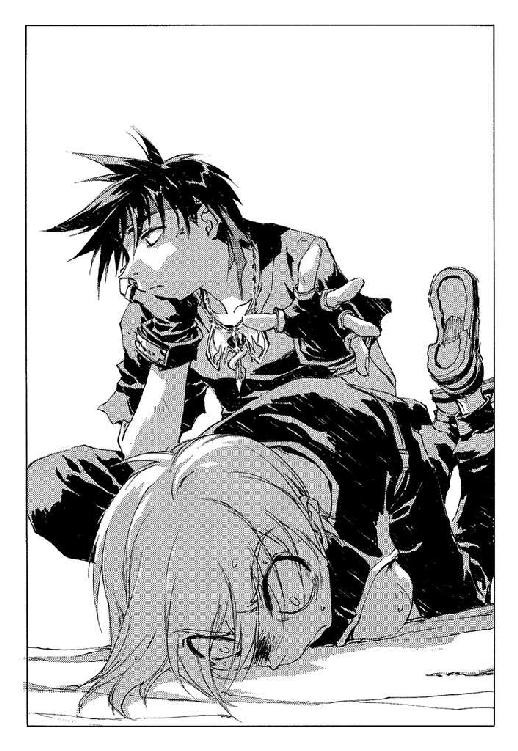

| 魔術士オーフェンはぐれ旅 新装版7 | |
| 秋田禎信 | |
| ティー・オーエンタテインメント (2012) | |

この作品は縦書きでレイアウトされています。
また、ご覧になる機種により、表示の差異が認められることがあります。
一部の漢字が簡略字で表示されていることがあります。
イラスト：草河遊也Ｙｕｕｙａ Ｋｕｓａｋａ
デザイン：ヴェイアＶｅｉａ
◆プロローグ
故郷をあとにする時、父がつぶやいた言葉だけははっきりと覚えている。馬鹿げた妄想かもしれない──当時、まだ自分が子供だったことは知っている。覚えているはずがないということも。
だが確信を持って言えた。彼が怒りとも悲しみともつかない奇妙な眼差しでその美しい故郷を見つめ、涙していたこと。その声がくぐもり、風に紛れて消えてしまいかねないほど小さなつぶやきだったこと。湖面が輝きその水面をなだらかな波紋が揺れ、そして太陽が白く輝いていたこと。水底に、緑色に苔むした巨木が沈み、そのねじれた枝の間を銀色の魚が無数に泳いでいたこと。深い、あまりにも深い森の中でその膨大な水は鏡のように美しく、そして冷たく見えた。
そこはとても神聖な場所だったのだと、数年もして父は語った。いや、娘にそれを語ることができるようになるまで、数年間を要したと言うべきか。彼の怒り、あるいは悲しみが、どういった由来のものだったのか、それはついに聞けなかった。彼が胸に秘めたまま逝った数々の言葉。ひょっとすれば語られるはずだったのかもしれない言葉たち。それがいくつあったのかすら、もはや知ることはできないが。
故郷。それが父にとって大切なものだったことは、疑いを持たない。彼はたびたびその光景を夢で見たのではないだろうか。旅人も通わぬ街道で、一枚の毛布にくるまり親娘で体温を保っていた夜などは特に、父の追憶は深くなっていたのではないかと思う。彼はよく、自分の娘をじっと見つめた。見つめられて、彼女も特に気にはしなかった。ただ父の悲しげな瞳に、どうすればそれを止められるのだろうかと、夜空に問うた。
父はよくため息をついた。良くないことだと何度も注意したが。本人も分かってはいたのだろう。息をつくというよりは生気を吸い出されるように、父は年月を追うごとに嘆息の数を増やし──そしてやつれていった。同年代の男たちと比べて、明らかに体重が足りなくなり、誰の目にも明らかになった。彼は病んでいたのだ。
病状は、それを看る者たちの一喜一憂を試すがごとく、時に快方に向かい、時に絶望的な発作を呼んだ。その運命の実験は、半年ほど続き、衰弱と発作とが彼をもはや追憶に迷い込むことすら許さなくなった。彼女にはどうしようもなかった──何者にも、運命を操る存在でもなければ、なす術はなかったろう。高価な治療と延命は、蓄えをあっさりと食いつぶし、父の悲鳴は彼女の睡眠時間をも削っていった。このままでは、ベッドに縛り付けざるを得ない。医者は折れた自分の眼鏡を恨めしげに見せながら、そう言った。彼女は笑った。縛り付ける？ かつて悲しく自分を見つめていたあの瞳は黄色く濁り、充血し、見開かれ裏返っている。縛り付ける？
医者が往診をやめてから二日後、父は死んだ。その臨終に発作がなかったのは、神の配剤なのか、あるいはもうそうした反応が起こるだけの生命力すらなかったのか。どちらであっても構わない。ただ彼女は感謝した。父の苦しみが終わることに。悲しみは終わらなかったのかもしれないが、もうそれでいい。祈りに意味があるのならば、もうそれだけでいい。
末期の言葉は静かなものだった。自らの剣を抱え、そして最期にやはり、あの悲しい目を見せた。故郷を去った時の瞳──だからかもしれない。彼女には、その言葉が、故郷を去った時の言葉と同じだったのではないかと思えてならなかった。
偉大なる剣士であった父は、こう言い残して人生を終えた。
「先人の生き様を継ぐ資格など......誰にもありはしない。もしあったとしても、罪までも背負うのだから。罪を背負う者は、心して──自らの背中にのみそれを負うが良い」
この時、父の瞳は、もうなにも映してはいなかった。
「主を捨て、自分だけの人生を求めるのならば、そうするしかない」
◆第一章 剣の朝
「う～......ん」
クリーオウは大きく伸びをしながら息を吸うと、朝の香りを空気といっしょに肺に送り込んだ。澄んだ芳香が鼻孔をくすぐる。ゆるんだ涙腺からにじんだ涙を手の甲で拭いて、彼女は窓枠にもたれかかった──肩越しに見ていた外の景色は、見事に朝の色に染まっている。淡色の屋根が連なっているのが彼方まで見えるのは、この宿が小高い丘に建てられているせいだった。
と、頭上に、もぞもぞとした気配を感じる。彼女はくすっと笑うと、頭の上から、黒い塊を胸に抱き直した──黒い子犬のようなその生き物を抱いて、改めて外を見やる。
朝日が輝いて、街に光を与えている。まだ眼球の奥に眠気が残っているのを感じつつ、クリーオウはそれを振り払うように、子犬を抱いたまま再び肩を伸ばした。子犬は頭から下ろされたことに気づいていないらしく、目を閉じて眠ったまま、ふにゃふにゃと前脚でなにかを探っている。髪の毛の感触を探しているのだろう。しばらくその仕草を続けてから、とりあえずそれは、寝間着の襟のところで落ち着いたようだった。肩にもたれかかるように鼻を押しつけた姿勢で、また寝息を立て始める。
「朝ねぇ」
誰にでも分かるようなことを、彼女はつぶやいた。
朝の風に、長い金髪がぱらぱらと揺れる──
いかにもの朝日。薄目でそれを眺めながら、彼女はしばし陽を浴びることを楽しんだ。街はなにか厳かな式典でも始まるように静まり返っている。まだ道に人があふれるような時間ではない。パン配達が出歩いているかどうかといった頃合いだろう。
「なーんとなく、起きちゃったけど」
ふう、と吐息して、クリーオウはうめいた。独り言ではない。すうすうと眠っている、腕の中の子犬を見下ろして、
「こんな宿に泊まってると、早起きしたってやることなんてないのよねー。厨房借りて朝御飯作るってわけにもいかないし。どーせオーフェンとマジクは昼頃まで起きるわけないわよね......どうしようか、レキ？」
その子犬のような生物──レキに呼びかけるが、返事があるわけでもない。ただ聞こえはしたのか、ぴくぴくと耳を動かしていた。
のようなというのは伊達ではなく、この生き物は子犬ではない。ではなにかと聞かれると、実はよく分からないのだが、クリーオウは、それを他人に説明したことがなかった。
オーフェンの言葉をそのまま借りれば──と彼女は漠然と単語だけを覚えていた──、レキは、ディープ・ドラゴン種族といったものらしい。数か月前に、森の中で出会ったのだ。成体になると頭の高さが三～四メートルになる巨大生物なのだが、レキはまだ実際、子犬ほどの大きさしかない。
理由はよく分からないが、自分に懐いてくれている。まあそういったことには元来理由などあるものではないのだと、彼女は気楽に納得していた。
「考えてみたら」
彼女は、ぽんとレキの背中を叩いて顔を上げた。
「遠くに来たわよねー。ここって、トトカンタから大陸の反対側じゃない。蒸気船でも一週間かかるところを延々歩いてきたんだから。帰ったら自慢できるわよね、みんなに」
なかば、呆れるような心持ちでつぶやく。
背中を叩かれたからだろう、レキが顔を上げて、きょとんとこちらを見ている。鮮やかな緑色の瞳に、ほのかな光が灯っていた。水面に弾けるような光。その中に自分が映っている──それが見えたわけではないが。
「あんただって、お母さんとかに自慢するわよね？」
レキに問いかけて、クリーオウはくすりと笑った。再び外を見る。薄青色に波打つような風が、もう肌寒い。よく冷えた、清々しい陽気だった。
「いいお天気」
空には雲ひとつない。空気の層が見えるのではないかというほどに、風までもが澄んでいる。
「お散歩にでも行こっか」
クリーオウは口に出してひとりでうなずくと、窓枠から身を退いて、両開きの窓を片手で閉めた。カーテンを閉じると、レキをベッドの上に置いて、両手を組み合わせてまた伸びをする。
備え付けのクロゼットから、服を取り出して。
これは──ここまでは、彼女が今まで幾度となく体験してきた、普通の朝に過ぎなかった。
◆◇◆◇◆
「......というわけでまだ、ここにいるんです」
「誰に言ってんだ？ マジク」
誰がいるわけでもない窓の外に向かってなにやらぼやいているマジクに、オーフェンはつぶやいた。
ナッシュウォータは静かな街だった。朝のきんとした空気が昼下がりまで続くような、そんなところである。
大陸にある「街」としては、小規模なほうだろう──
オーフェンは、顔を上げた。黒髪黒目、いつもの黒ずくめで、とりあえず意味のないあくびなどしてみる。開いたあごをなでてから閉じ、彼は肩をすくめてやった。
「ま、仕方ないだろ。どこに行ったらいいんだか分からねえし」
とはいえ──
（確かに、この街にとどまってる理由ってのもねえよなぁ）
それも正論ではある。
大陸東北に位置するこのナッシュウォータ市は、キムラック管理区、つまりゲイト・ロックに最も近い都市になる。もっとも、その交通は皆無に等しいことから、東部の大多数の人間には最北端の都市として認識されているようだった。特徴があるわけでもなく、特産があるわけでもなく、観光地に近いことだけがこの街の生命線となっている。
人口は、都市の規模に比べれば多いほうだろう。一万二千人余り。高地の裾野にあり、街の面積の六割が斜面になっていることを考えると、さほど住み良い環境とは言えない。ただ自然には恵まれ、それに関しては、工業地帯に毒されたアーバンラマとは位置的に近いため、ことさらに比較されることが多かった。
マジクはこちらを向いてから──どこか不満げに顔をしかめている。そろそろ十五歳になると言っていたか。もともと愛嬌のある顔立ちをしているだけに、暗い感情はすぐに読みとれた。
「でも、レジボーンの温泉から下りてきて、もう二週間ですよ」
ようするにお前、退屈してるんだろう──
口をとがらせて言ってくる弟子に、オーフェンは嘆息混じりにそんなことを独りごちた。
なんとはなしに、自分の胸元に手が伸びる。慣れた感触。そこには金属製のペンダントがあった。剣にからみついた、一本脚のドラゴンの意匠。銀細工のそれは、大陸黒魔術の最高峰《牙の塔》の紋章だった。それを弄んでしばし時間を作り、黙して考える。
「でもなぁ」
言い訳は、いくらでもあった。
「前みたいに、馬車旅ってわけでもねえしなぁ......目的地も分からねえってのに動くのはどーも気が重くて」
「そりゃそーかも知れませんけど」
「金ならまだあるから、宿代も当面は大丈夫だし」
「エリスさんからもらったやつですか？」
「ああ。ま、一応この前の働きの報酬ってことでな」
「......なんかしましたっけ？ ぼくたち」
「なんもしとらんのはお前だけだろ」
オーフェンは半眼で言ってから、座っているベッドの下に手を伸ばした。ちょうど足下のあたりに、鞄が置いてある。ごそごそと中をかき回して、彼は一冊の本を取り出した。地図である。大陸魔術士同盟が発行したもので、通常手に入り得る大陸全土地図としては、最も信頼度が高いとされている。
慣れたページを開く──ここ数日、何度も開いた場所である。最も広くこのキエサルヒマ大陸を描いたページ。大陸全図を眺めて、オーフェンはうめいた。横からのぞき込んできたマジクを横目で見上げ、
「ここが、いま俺たちがいる......ナッシュウォータだ」
「一番近い都市は、アーバンラマですよね」
「そうだな。キムラックより近いだろ」
東海岸に位置する自治都市アーバンラマを指さして、続ける。
「アーバンラマは自治都市だ──といって、もう今さら珍しいことでもないけどな。中央からの独立性を言えば、トトカンタのほうが進んでるかもしれない。タフレムなんざ、むしろ筆頭だろ。それでも歴史上最初に誕生した自治体がアーバンラマだ。ナッシュウォータの資本も、大半がアーバンラマの支配下にあると言われてる。もともとは、大陸鉄道の受け入れを王都が嫌ったってんで、じゃあこっちに伸ばしてやれってのがナッシュウォータ都市計画の発端らしい」
「はぁ」
「もとは天人種族の遺跡でしかなかったレジボーンが観光地化したのも、多分その計画のあおりなんだろうな。まあ結局のところ鉄道実験は大幅に変更されて、王都に向かって行われてるわけだが」
「鉄道って、見たことないです。確か、鉄でできた道を、でっかい蒸気機関で走るんですよね？」
マジクが、そんなことを言ってくる。少年の顔をちらりと見上げ──その目にどこか期待のようなものが映っていることには気づかないふりをして、オーフェンは答えた。
「原理はそんなもんだろ。俺だって見たことないけどな」
と──視線を地図にもどす。アーバンラマから王都メベレンストまで、うっすらと延びた線には、平行して赤字で注意書きがなされていた。
〝大陸縦断鉄道計画──未完成〟
「実際は海路のほうがよっぽど早いし安価だってんで、計画はほとんど頓挫してるらしいな。一部ではごく限られた人間が利用することもあるらしいが。よっぽどの技術革新──安全性ＵＰ、輸送性ＵＰ、速度ＵＰってとこか？──そんなものがないと、当初の規模まで計画が回復するのは無理だろうな」
「なんだ。じゃあ。全然乗れないんですか......」
と拍子抜けしたように、マジク。
形の良い眉を、残念そうにめいっぱい垂らした生徒に、オーフェンは肩をすくめてやった。
「しょせん都市間交通の基本は海路だからな」
そのままあとを続ける。
「ま、うんちくはそんなとこにしておいて、つまるとここのナッシュウォータってのはアーバンラマの子供みたいなものなんだな。レジボーンが孫か。順番で考えりゃ──とりあえず、これからアーバンラマを目指すのが順当なんだろうとは思うんだが」
「なにか問題があるんですか？」
（のんきに聞いてくれる）
オーフェンは顔に出さず苦笑して、口の端をひきつらせた──傍目には、笑ったように見えたかもしれないと思いつつ、
「順当なのはいいんだが、その線をずっと延ばすとだ、そのまま王都に結びついちまうだろ」
「王都が嫌なんですか？」
マジクにしてみれば、それは意外なことであるらしかった。驚いたように目を見開いてこちらを見ている。
それを見返してオーフェンは、
「......あんまりいい思いをした場所とは言えねえからな」
憮然と答えた。
地図を少し持ち上げ、そこに大きく記された扇形の王都メベレンストを見てから、オーフェンは地図帳を閉じた。適当にベッドの頭にそれをほうって、頭の後ろで腕を組む。
宿の、くすんだ色をした天井を見上げて、彼は続けた。
「いっそのこと、アーバンラマから定期船で西部にもどっちまおうかという気もしてるんだが」
「もどるんですか？」
さらに驚いた声を出して、マジクは言ってきた。
「もどるって......どこにです？ トトカンタですか？」
「とりあえず、アーバンラマから船に乗るとすると、最初に着くのはタフレム市だな」
答えて彼は、ここで打ち切りのつもりで手を振った。話してみたはいいが、どうしても考えがまとまらない。
「結局のところ、目的地がなくなっちまったら、それを探すため一番いいのは......出発点にもどることさ」
「出発点なら、トトカンタなんじゃないですか？」
「......もうちょい前の出発点だ」
マジクは納得できないようだった。言葉を探すように軽くあたりを見回して──
この少年が、見つけたものに満足したのかどうかは分からないが、ともかくもマジクは口を開いて、思い出したように言ってきた。
「クリーオウ、王都に行くの楽しみにしてるみたいですよ」
「行くんだったら、トトカンタにもどってからでも、船で行けるだろ。ずっと楽に」
「そうじゃなくて──なんて言ったらいいのか分からないですけど、このまま行きたいんですよ、きっと」
「............」
両手を広げる金髪の少年を、じっと見やると、彼はまた言葉探しをするために視線を動かした。肩をすくめ、付け加えてくる。
「......ぼくもですけど」
「............」
今度はこちらが言葉を探す番だった。方法はいくらでもある。視線を動かす。咳払いをする。話題を変える。ため息をつく。
だがオーフェンはそのまま、口をつぐんだ。窓の外はまだ朝の光に輝いている。
◆◇◆◇◆
「ふむ。つまり君はこういうわけだな？ 君がその新聞紙を百回折り畳んだなら、世界は崩壊すると。よし、看護夫を呼ぶから二歩ほど退がってくれないか？」
「いえ、ドクター・フューリー！ 本当なんです！ 数学者として申し上げます。確かにこれは世界が壊れる唯一の方法ではないかもしれません。ですが、そのひとつであることは確実なのです！」
「だから分かったと言っておる」
「分かっておりません。この知識の恐ろしさ。わたしはどうしても、手に入れてしまった禁断の知恵を消す処方を必要としているのです」
「はて、ブルータスはもう既に首にしたのだったかな？ あの男、患者を殴りすぎるのが唯一の欠点だったのだが、こういう時のために必要な男ではあった......」
「............」
ぱたぱたと忙しなく左右に動く人形劇を、つま先立ちで眺めることにも飽きて──
クリーオウはシャーベットの最後のかけらを口に放り込んだ。路上の人形劇『残酷医師』は最高潮を迎えつつあり、集まった子供たちも熱心に見入っている。シャーベットの入っていた紙袋をくしゃくしゃと丸めながら、クリーオウはあたりを見回した。
顔を上げて見えるのは、ナッシュウォータの街並みというよりも、その上にある広大な空だった。山脈へと連なる蒼空は、冷たい風を吹き下ろして世界を白ませる。と、その視界に黒いものが見えた──どうやらレキが、頭の上からこちらをのぞき込んできたらしい。近すぎて、黒い塊にしか見えなかったが。
「どうしようか。そろそろ帰る？」
レキに問いかける。ディープ・ドラゴンはなにも答えてなどこなかったが、クリーオウはなんとなく、ひとりで納得してうなずいた。
「そうね。そろそろオーフェンたちも起きてるかもしれないし」
丸めた紙袋を、近くのゴミ箱に放り投げて、彼女は人形劇をちらりと見ながらその場をあとにした──小さな箱形の舞台には、人形を操っているのはひとりだけだというのに、どういうトリックなのか、三体目の人形が登場して薄汚れた数学者を押さえつけようとしているところだった。
「ああ、どうかドクター聞いてください！ わたしはわたしのこの恐ろしい知識を封じなければならないのです──」
金切り声を背後に聞きながら、通りを歩いていく。
昼前というにはまだ早いが、だいぶ日は昇ってきていた。三時間ほども、あちこちを歩き回っただろうかと、クリーオウは適当に計算した。途中見つけた喫茶店でホットミルクを飲んだ時間も含めれば、実際そんなところかと結論する。
「あんまし疲れなかったわね。ちょっと休んだからかな」
彼女は独りごちて、なんとなく頭の上のレキを胸に抱き直した。こちらを見上げて鼻を動かしているレキにあごの先で応え、
「にしても、毎日やってるとさすがに散歩も飽きちゃうわ。オーフェン、いつまでこの街にいるつもりなんだろ」
ぼやく。
坂道の多いこの街だが、うまく道を選べばそのほとんどの距離を下りにできる──まあ結局は登った分下り、下った分登っているはずなのだろうが。クリーオウは既にそういった地理を把握する程度にはこの街に慣れていた。はきなれたジーンズをしまい込み、その代わりに新しいスカートなどはいて、花壇が目立つこの街並みをのんびりと歩くのは悪くない思いではあった。が、慣れるということは飽きるということでもある。
万事、時間がゆるやかなこの街では、道を急ぐ者もいない。クリーオウも、特にそのスピードから離脱するつもりもなく、ことさらにゆっくり歩いていた。
実際、歩くのはもともと遅いほうだったのだ──昔を思い出しながらクリーオウは、静かに吐息した。階段を昇るだけで一苦労だった時期もある。
（エンデは元気かしら）
自分によくしてくれた乳母のことを思い出して、彼女はなんとはなしに胸にちくりとしたものを覚えた。
（孫が生まれたって喜んでたっけ。わたしの名前つけるって言ってた）
と──
「うわああああっ！」
「!?」
聞こえてきた悲鳴に、クリーオウは立ち止まった。
花の街に相応しいとは言えない、苦悶の声である。と同時に、なにやら鈍い打撃音のようなものが数度、そしてかけ声が響く。
「うらぁっ！」
「立て貴様ぁっ！」
とりあえずあたりを見回し、クリーオウは目をぱちくりした──物思いを中断され、不快にうめく。
「......なんなの？ ケンカ？」
通りを歩く人の数は、多くはないが皆無でもない。だがそれらの通行人は、互いに暗い表情で目配せして、歩調を早め通り過ぎていくだけのようだった。すれ違った中年の男が、ぼそりと独りごちるのが耳に入る。
「また奴らか......」
（なんなの？）
同じことをつぶやいてクリーオウは、通り過ぎていく人々が、それとなく一瞥していく方向を見定めた。悲鳴や打撃音が聞こえてくるのは、近くの路地からだった。
正義感というよりは、好奇心だったかもしれない──そのことを素直に認めたのは、反射的にそちらに身体の向きを変えてからだった。抱いていたレキを今度は頭の上にのせて、足早にその路地を曲がる。
最初に見えたのは、赤い色だった。
「え......？」
信じられずに、うめく。
路地はそのままさほど奥行きもなく、行き止まりになっていた。その行き止まりで、血塗れになった少年が倒れている。その周りを四人の男が、手に木剣を持って取り囲んでいた。
既に気絶しているらしい少年の顔面を染めているものと同じ赤い色が、その木剣にもこびりついているのが、すぐに分かる。
立ち止まると、ふわりとした感触がすねを撫でた──スカートをはいていることを、痛烈に後悔する。クリーオウは下唇を噛んで身構えたが、誰もこちらには気づかなかったらしい。
男たち、とはいっても、年齢は倒れている少年とそう大差ないように見受けられた。その中で、最も年かさであろう二十歳過ぎほどの長身の男が、なにやら不気味に笑みを浮かべている。意志のはっきりした笑み──なによりも不気味に思えたのは、その笑みだった。誰もが日常的に浮かべるような、曖昧な笑みではない。
顔立ちそのものは美しいとさえ言えた。太い眉、広い額、下唇に小さな傷がある。どこか粗野な印象ではあるが、長い黒髪が軟派にも思える。体格は大きいが、細い。背が高いためことさらにそれが言えた。
奇妙な格好をしていた。運動服のようにも見える黒いトレーナーだが、肩の部分からノースリーブになっている。そのおかげで、引き締まった肩の肉がはっきりとうかがえた。
もっとも、奇妙なのはその男だけというわけでもない。ほかの三人も、そろいの黒い運動服である。なにかのユニフォームなのかもしれない。
と、観察している間に唇傷の男は、木剣を軽く肩に担いで、囁くような声を発した──倒れて動かない少年に。
「これで分かったろう。貴様らの腕がどの程度のものか」
もはやその少年に聞こえているとも思えないが、彼にとっては、それはどうでもいいことだったらしい。無反応の相手に対して、そのまま続けている。
「次から出かける時は、俺たちとは違う通りを選ぶことだな」
「へっ。ざまあねえや」
ほかの三人のうちのひとり──クリーオウにはどれも同じに見えた──が、嘲るように笑い声をあげた。また別の男が、少年の血だらけの頭を木剣で軽く小突いて、
「これで三人だ。ロッテーシャの奴も、もう黙っちゃいられねえだろう」
「望むところさ」
と、最後のひとり。
「そろそろ奴らとじゃれてるのにも飽きたところだ。これで決着がつくのなら、ちょうどいい──」
つぶやきながら木剣を振り上げたのは──唇傷の男だった。先端の丸まった木製の剣を構えて、その視線は倒れた少年に定まっている。男が、なにをやろうとしているのかは明白だった。
が、木剣が、振り下ろされるその一瞬前に。
「ちょっと、やめなさいよっ！」
反射的にクリーオウは叫んでいた。そこでようやく気づいたのか、はっと、その四人がいっせいに振り返ってくる。いや──
あわてて振り返ってきたのは、三人だけだった。唇傷の男は、ちらりと視線だけこちらを向いて、そして、
「......ふっ」
吐息のような笑いを漏らすと、木剣を振り下ろした。
ごっ！──と、鈍い音が響く。打ち下ろされた木剣は少年の背中に命中し、血で濡れた身体をわずかに跳ねさせた。軽く振ったようにしか見えなかったが、躊躇を感じさせない威力がある。打たれた少年が痙攣し、気味の悪いごぼごぼという音を立て始めた。なにかを吐いたらしい。
「............!?」
思わず後ずさりして、クリーオウは唇傷の男を見やった。吐血する少年を足下に、彼はことさらにゆっくりとこちらに向き直ってきた。薄笑いを浮かべて、言ってくる。
「......なにか用かい？ お嬢ちゃん」
なにか言い返さなければならない──
本能がそれを必要としている。無言のままでは身体が萎縮してしまう。それは分かっていたのだが、頭の中になにも浮かんでこない。
「......なっ......」
ひきつったつぶやきだけを喉から漏らして、クリーオウはかぶりを振った。
「なにかじゃないでしょ!? なにやってんのよ、あんたたち！」
「なにをしていたと思う？」
唇傷の男は、なんのことはない口調で聞き返してきた。
「なにって......」
と、こちらが答えられないでいるうちに、男の両目に、不透明な光が灯る。四人はまるで、なにかが連動しているとでもいうように、同じ動作で一歩こちらに近づいてきた。生理的に冷たいものを覚える、危険な笑みを浮かべて。
言葉を発するのは、唇傷の男だけだった。
「すぐ分かるさ」
肩をすくめて、
「これからたっぷりと解説してやる」
「いろいろとな」
また別の種類の下卑た笑いを浮かべて、別の男。誰が言ったのかは分からない──クリーオウはただひたすら、唇傷の男だけをにらみ据えていた。
咄嗟に、剣を求めて腰に手をやるが。
（......持ってきてるわけないじゃない）
彼女は舌打ちした。剣は宿に置いてある。正確には、マジクの荷物の中だ。
そうしているうちにも、男たちはそれぞれ木剣を手に、こちらに近づきつつあった。大仰に構えてなどいない。こちらが丸腰では、仕方のないところだが。
（どうしよう）
近づきつつある相手を視線で牽制しながら──あまり効果がなかったことは認めざるを得なかったが──、クリーオウは必死に思考をまとめようとした。一番いいのは、逃げることだろう。もと来た通りまでは、数メートルとない。だがそうすれば、奥に倒れている少年がどうなるのか分かったものではないし、ついでに、人目のあるところまで逃げたからといって、あきらめてくれるような相手とも思えなかった。
（いくらなんでも手ぶらじゃあ、身を守ることもできないし）
その瞬間だった。
頭上で、なにかが動く感触。レキが立ち上がったらしい。
「え？」
なにかを聞いたような気がして、クリーオウは声をあげた。それと同時だったろう。一番近くまで来ていた男が、木剣を振り上げて飛びかかってくる。
（しまった！）
なんとか避けようと、クリーオウは身をひねろうとした。が、虚を突かれたせいもあって明らかに間に合わない。一撃されることを覚悟して、両腕で頭を守る。レキと、そして一撃で昏倒される可能性の高い急所とを。たとえどれほどの一撃が来るとしても、意識だけは決して失ってはならないことを、彼女は覚悟した。もし気を失ってしまったら──その危険性は、いま打ちかかってくる男の目の色に表れている。
が。
ぎぃんっ！──と鋭い音が響きわたった。来るべき衝撃も苦痛もない。ただその音だけが耳に入った。
「............？」
無言で、見上げる。最初に見えたのは、襲いかかってきたその男が後方に弾き飛ばされ、驚愕に目を見開いていることだった。そして、
「剣？」
彼女を守るように、真っ白な剣が浮遊していた。この剣が、木剣を跳ね返してくれたらしい。
からん、と地面に落ちた剣を、クリーオウはあわてて拾い上げた。
（剣......じゃない。これ、石でできてる？）
手にしてみると、剣というよりは十字形の石の塊に過ぎなかった。ちらりと横を見ると、手近な建物の壁に、これとまったく同じ大きさ、同じ形のくぼみがある。どうやら、そこから外れたものらしい。
（レキが作ってくれたんだ）
両手で剣を構えて、クリーオウは木剣の一団と対峙した。刃すらない石の剣だが、木剣の一撃を防いで折れなかったところを見ると、石のままの強度ではないのだろう。なんにしろ、武器さえあれば身を守ることができる。
あわよくば、それ以上のこともだ──彼らの奥にいまだ倒れている少年を見て、クリーオウは唾を呑んだ。誰だかは分からないが、早く手当をしなければ危険であることは疑いない。
「こ、こいつ......どこに剣なんて持ってやがった!?」
尻餅をついたまま、男がうめくのが聞こえてくる。どうやら、彼女がこの剣を隠し持っていたと思ったらしい。まあ確かに普通は、頭の上の子犬が魔術で削りだしたとは思わないだろう。
「このアマ、もう手加減なんぞ！」
別の男が、飛び出してくる──
斜めに打ち下ろされてきた木剣を、石の刀身で受ける。しびれるような衝撃が伝わってくるが、クリーオウは後ろ足を半歩ほど退いてそれに堪えた。取り残された前足を払うように、木剣が再度飛びかかってくるが、それはなんとか足を上げてかわす。
できれば避けながら反撃したいところではあったが、腕のしびれがまだ残っていた。こちらが打ち返さなかったことで安心したのか、男はすぐに三度目の打ち込みを仕掛けてきた──今度は、左から右に、真横になぎ払って。
彼女は即座に反応した。相手は複数。そうそういつまでも守勢にいるわけにはいかない。
「はあっ！」
短く息吹きを吐いて、クリーオウはその男が木剣を握る手を狙い、剣を振り下ろした。鋭い軌跡が交錯し──
「うっ!?」
男のうめき声だけを残して、木剣が消えた。砕かれた男の手からすっぽ抜けて、あさってのほうに飛んでいく。
「うわああっ！」
指が二本ほどあり得ない方向に曲がった手を抱えて、男がその場にくずおれた。もう彼に構う必要はない。クリーオウは視線を強くして、残った三人に改めて構え直した。
（うまくいったわね......）
冷や汗を感じつつ、独りごちる。リーチと体力の差を考えれば、相手はまさか自分が一撃で倒され得るとは考えてもいなかったろう。石の塊で殴られれば破壊力に関しては関係ないだろうが、それでも体力差はそのまま武器の速度の差になる。真正面から競争すれば、必ず男の剣のほうが先にこちらにとどいたはずだった。
が、こちらに向かってくる部位を狙えば、リーチ差もスピード差も一緒に無効にできる。必要なのは正確な狙いと、あとは実行するだけの意志だ。それは練習次第でなんとでもなる。
自分より力量の勝る相手には、こうして不意でも突かなければどうしようもない。以前、オーフェンに剣の練習を見てもらった時から考えていたことだったのだが、いきなり役に立つとは思っていなかった。
「たいしたものだな」
どこか古くささを感じさせる口調で、そう言ってきたのは──唇傷の男だった。傷跡の残った唇をほとんど動かすこともなく、声を出している。
「兄貴！」
ようやく緊張した声音で、ほかの男たちがうめいている。指を折った男も、その痛みを噛みしめるようにしながら、ふらふらと退がっていく。唇傷の男は、自分を兄貴と呼ぶ者たちに返事もなく、ただ一歩前に出た。
そして、右手でぶら下げるように木剣を構える。冷たい目で、彼は声を発した。
「......実際たいしたものだ。ロッテーシャの仲間か？」
「？」
わけが分からずに眉根を寄せると、それだけで相手は勝手に理解したらしい。それ以上は聞いてこなかった。
そしてそのかわりに、打ち込んできた。悲鳴すらあげる間もなく、木剣の軌跡を石の剣で受ける。
上方から、左右から──流れるように数度、唇傷の男の打ち込みは続いた。それらをすべて受けることができたというわけではない。二、三回は明らかに大きく後退してやり過ごし、クリーオウは奥歯を噛みしめた。
（速いっ......！）
視界に映ったのは、相手の剣というよりも、むしろ足だった。地面をこすりながら、素早く這う足さばき。もとより木剣の動きが見えるはずもないのだが、勘で受けることすら間に合わなくなりつつある。
逆にこちらは──
（スカートが......）
足にまとわりつく布が、動きを制限している。煩わしさが次第に焦りに変わっていくのが嫌でも実感できた。今のところはうまくいっているが、そう長く保ちそうにはない。
先ほどと同じ手は通用しないだろう。違う切り札を用意しなければならない。
ざっ──と足を止め、腰溜めに剣を構える。
当然、男は突きを警戒しただろう。だが同時に安堵したはずだ。
それは油断したと同じことになる。
（これならかわせないはず──！）
クリーオウは剣を突き出すと見せて、その場でしゃがみ込むように体勢を低くした。と同時に身体を反転し、背を向ける。身体ごと一回転しながら放ったのは、相手の足首を狙う抜き打ちだった。体勢を低くしたのは抜き打ちの出所を相手に悟られないため、不意を突くため、そして相手からの反撃をかわすためでもある。視界が変化し、切っ先が狙う的の足首を見た、と思った瞬間。
「え？」
クリーオウは、動きを止めた。石の剣が、虚しくアスファルトに跳ね返る。そこに、あるべき標的はいなかった。
そして。
がんっ！
目の奥に、衝撃が走る。
いや少なくとも、彼女はそう感じた。きな臭い感触が頭蓋の中で膨れ上がる。これは気配だった。血。痛み。ケガ。そういったものの予感。
身体が浮いていた。実際は、地面に転がっただけかもしれないが。クリーオウはただ夢中で手足を丸め、念じていた──止まれ、と。止まらなければならない。浮遊する世界を捕まえ、起きあがり、傷ついた箇所を確認し......そしてできれば、逃げなければ。
最後のひとつ以外は、意識を回復してすぐに達成できた。ふと気がつくと、空が見える。路地の壁の間にのぞく、藍色の空。仰向けに倒れたらしい。身体を動かそうとして、背中がしびれて起き上がれないことに気づいた。打たれたのは背骨らしい。
顔だけ起こすと、傷跡の目立つ唇を真っ直ぐにしたまま、木剣を手にこちらを見下ろす男と目があった──はっと、身じろぎする。痛みもしびれも無視して立ち上がろうとするが、すっと音もなく、その男は近づいてきた。手にした木剣を無造作に突き下ろしてくる。
かつっ！──と冷たい音を立てて、木剣の切っ先が股と股の間に突き立った。思わず、短く悲鳴をあげる。背筋にひやりとしたものを感じながら見下ろすと、木剣のその切っ先がスカートを押さえて地面に押しつけられていた。動けない。
「............」
無言でクリーオウは、状況を理解しようと努めた──手の中に、剣は残っていない。どこかに落としてしまったのだろう。レキはまだ頭の上だった。できれば街中では避けたかったのだが、こうなったらこの子ドラゴンに助けてもらわなければならないかもしれない。が、それは、
（もう少し......）
状況を見てからでも構わない。自分に言い聞かせるように、クリーオウは独りごちた。本当の窮地になったなら、遠慮をするつもりはなかったが。
男もまた無言のままである。その黒い目にはなんの感慨も表れてはいない。いつの間にか、唇傷の男はクリーオウよりも路地の出口に近いほうに回っていた──つまりはほかの三人とで、はさんでいる形になる。背中から攻撃されたことを考えれば、状況を推測するのは簡単だった。しゃがみ込んで打ち込んだ瞬間、こちらの頭上を跳び越えて背後に回ったのだろう。不意を突いたつもりが、逆に突かれてしまったわけだ。
と──
「ロッテーシャの仲間でないのなら......」
唐突に、男は聞いてきた。
「いったい、なぜ俺に突っかかってきた？」
「なんですって？」
数秒間、意味が把握できずにクリーオウは沈黙した。唇が半開きになっていることに気づいて、そしてようやく言葉を見つける。
「なぜって、そんなの、当たり前でしょ。あの子、死んじゃうじゃない」
背後を指さすことができれば良かったのだが、動いた時にどうなるものか分からなかったため、クリーオウは曖昧に視線で、後方にいるはずの少年を示した。
男の表情は変わらない。
「お節介というわけか」
そんなことをぼそりとつぶやいてくる。背後から、はっ、と笑い声が聞こえてきた──嘲るような調子で。
かっとして、クリーオウは叫んでいた。
「なにがおかしいのよ！」
「確かに面白くはないな。つまらんことだ」
そうでなくとも笑いなど忘れたような眼差しで、唇傷の男が口を開く。
「こんなことをして、まさか無事に帰れると思っているわけではないだろう」
「......わたしは」
声を出すたびに、背中が痛む──よほどひどく打たれたらしい。だがそれは考えないことにして、クリーオウは続けた。
「わたしは、わたしのやりたいようにしただけよ」
「そうか。なら、俺たちは俺たちのしたいようにする。いいな？」
足音が耳に入った。背後からである。ほかの三人が近づいてきたのだろう。下卑た笑いも聞こえてきたような気がする。
クリーオウは、唾棄するような心持ちで囁いた。
（いいわけないでしょ！）
頭上でのんきに丸まっているレキ──この事態でもディープ・ドラゴンにとっては危機的な状況とは言えないらしい──に、攻撃を頼もうと口を開きかける。刹那、
「待ちたまえ」
「............!?」
自分に対して制止の声がかけられたと思いこみ、思わずクリーオウは舌を噛んだが、その声が男たちにかけられたものであることはすぐに分かった。声は、唇傷の男のものではなく、そのほかの三人のものでもない。一瞬、クリーオウはオーフェンの顔を思い浮かべたが、声に似たところがあったわけではなかった。むしろ、どこか気取ったようなイントネーション、口調にしても、天地ほど違う。聞いたこともない声である。
唇傷の男が、さっと、木剣を引いた。もうこちらのことなど忘れたかのように、そのまま振り返る──声は路地の入り口のほうから聞こえてきた──、そちらへと。
姿を見せたのは、青年だった。年齢はよく分からない。青年、としか言いようがない。いまいち軽薄そうなキャベツ色の服は、ダンス用のレオタードにも見えた。唇傷の男やその仲間たちの着ている運動服も見ながら、クリーオウはなんとなく、この街にはまともな格好をしている者はいないのだろうかと訝った。とりあえず、眉根を寄せながら立ち上がる。路地のわきへと退散すると、背後から近寄ってきていた男たちは、その横を足早に通り過ぎていった。そのまま、唇傷の男と同列に並んで、新たに現れた青年と対峙する。
彼らは、その青年のことをよく知っているようだった──誰何の声もあがらない。申し合わせたように木剣を構え、彼を牽制していた。その中で唇傷の男だけが、剣を構えることもなく腕組みして青年を見据えている。
よく分からない緊張感の中で、クリーオウはとりあえず、いまだ倒れたままの少年へと駆け寄った。かがみ込んで観察するが、重傷なのはすぐに分かる。髪の毛が、血で固まりはじめていた。死んでいたとしてもおかしくないケガだろうが、生きている。うつ伏せに倒れた背中が、わずかに上下していた。
「......レキ」
と、促す。
頭上にいたレキが、のそりと動くのが分かった。目に見えて、少年の傷がふさがっていく。ディープ・ドラゴンの魔術なら──とクリーオウはオーフェンが以前に教えてくれたのを思い出していた──、たいがいの傷を癒すことができるという。死者ですら、蘇る可能性があるとか。レキにはまだ無理だろうが。
これで大丈夫だろう。と安堵して、クリーオウは改めて路地の入り口のほうを見やった。変わらず、正体不明の青年と、やっぱり正体不明の男たちがにらみ合ったままである。いや、青年のほうは、にらむといった表情とはほど遠い。笑っている。
（......なんなのかしら）
クリーオウは、静かな疑問を胸に感じた。この状況は、特に自分にとって好転したとも思えない。青年がなんなのか分からないし、仮に自分を助けてくれるのだとしても、頼りになるのか分かったものではない──唇傷の男の横顔を見ながら、そう思う。ほかの三人はともかく、あの男だけは別格だった。仮に警官が二、三人駆けつけてきてくれたのだとしても、安心はできまい。
抱きかけた期待にあえて水を差しておいたのは、油断しないためでもあった。いつでも行動に出られるよう、腰は上げておく。
だが──
青年の表情を見て、クリーオウはなにか自分が的外れな心配をしているのではないかと直感的に感じていた。そう。青年は笑っている。
それは愚鈍な笑みとも卑屈な媚びとも違う、なにか解答を知りながら試験に臨むそれだった。手には男たちと同じ、木剣を下げている。なんとか優雅に見せたいのだろう、すらりとした指で軽く撫でる仕草などしているが、間の抜けた三文歌劇程度の優雅さであればかろうじて達成していたかもしれない。草色のタイツ？ の上にそれを少し濃くした色のジャケット。ズボンはきちんとはいている。が、裾からやはり上半身のタイツと同じ色がのぞいているところを見ると、どうやらタイツは全身を覆っているらしい。靴だけは立派な革靴だが、本物らしいのはこれで終わりだった。そのほかは、身に着けたあらゆるものがあらゆる意味において、どこか奇妙に嘘臭い。
髪は、珍しいくすんだブロンドだった。金というよりはクリーム色に近い。切れ長の瞳を流して、薄い唇を開くと、そこから漏れたのは甲高い忠告だった。
「ふっ......君たちが、うちの練習生を狙って狩りをしているという噂、信じたくはなかったヨ」
「うるせえっ！」
身も蓋もない叫び声を、男たちのひとり──唇傷の男ではない──があげる。が、青年はまったく聞いてもいないようだった。角張ったあごをつんとあげて、そのまま続ける。それは明らかに、失望のジェスチャーだった。あからさますぎて、かえって疑問に思うほどの。青年は悲しみを隠すつもりはないようだった。
「剣の道を志す者同士、些末な対立はあっても深奥では分かり合えるもの、と思っている......」
「ライアン」
唇傷の男が、ぼそりと声をあげる──
それが名前らしい。青年は、くるりと芝居がかった仕草でそちらを向いた。
「なんだね？ エド」
名前を呼ばれても、唇傷の男はなんの反応もない。ただ言いたかったことを告げるだけの愛想のない声音で、肩をすくめている。
「......その些末な対立だけが、剣の存在価値だと俺は思うよ」
その口調が、これまでより、多少くだけていることにクリーオウは気づいた。どういうことかは分からないが。
ライアンとやらは、やはりあくまでインチキ臭い優雅さでかぶりを振ってみせた。
「ロッテーシャは、協調を何度も呼びかけたじゃないか」
「俺も、ある意味では協調しようとしたはずだが？」
「残念だが、彼女は頑固なんだ。君たちに剣は渡せないと言っているヨ」
剣は渡せない。そう聞いた瞬間。男たちがぴくりと反応したように見えた──ほんの一瞬だけ。すぐに消えた。
唇傷の男、エドだけが、冷笑を浮かべてじっとしている。
「......お前も同意見か？」
柔らかい針。そんな調子である。痛くはないが確かに刺さる。貫くこともあるかもしれない。
ライアンは、ふっと笑ってみせた。
「ぼくは無論、ロッテーシャの意に従う」
「そうか」
と──
それで終わりのようだった。男たちが、適当に散開する。路地の限られた広さの中で、なんとか剣を扱えるほどに各々の距離を取ると、エドもまた木剣を構えて金髪の青年をにらみ据えた。
ライアンは、静かに笑うだけだった。その笑みが、余裕の笑みから異質のものへと変化する。誰もが気づいただろう。憐れみの微笑みだった。
「問答無用というわけか」
手にした木剣を、対峙した四人に合わせるように、ふわりと構える。
「残念だ......君たちのような才能のある若者を、殺してしまうかもしれないとは。このライアン・スプーンが一昨日ぐらいに身に着けた奥義、味わうがいい」
と、いきなり木剣をがばっと──このほかに擬音が思い浮かばないほどにはっきりと振りかぶって、四人の相手へと大きく踏み込む！
「秘剣・猿人殺法、うっきぃぃぃぃっ！」
ごぎんっ！
ごしっ、ごん、がんげんべしぼすごすどごぐじぼかげしげしげしげし......
「............」
クリーオウは遠くから、じっとその光景を見つめていた。
最初の物音は、ライアンが敵の二メートル手前で振り下ろした木剣が、思い切り地面にぶつかった音だった。
次に聞こえてきたのは、思わず剣を取り落としたライアンの顔面に、エドの木剣が叩きつけられた音。
次のはまた別の男の木剣が横腹を打ち払った音。その次は、さらに別の木剣が肩を打った音。顔面からライアンが倒れる音。その背中と尻に連打される木剣の雨。等々......
数秒後──その程度の時間だろう──、残ったのは、地面に倒れて痙攣するずたぼろのライアンと、それを見下ろす四人の男だけだった。
ぜえはあと、呼吸の音だけが路地に響く。
しばしして、のろのろと、ライアンが起きあがった。髪もぼさぼさとなり、顔も泥だらけだがそれをぬぐうこともせず、ジャケットの懐に手を入れると、
「......これを」
取り出したのは、財布のようだった。それを男たちのひとりに手渡して、無表情にぺこりと頭を下げる。
「じゃあな」
慣れたことなのか、エドと男たちは、財布を受け取って、さっさと路地を出ていった。
風が吹き抜ける。
ライアンは、にこりとこちらに向き直ると、右手の親指をぐっと立ててみせた。
「どうやら、助かったようだネ」
「うんと......まあ、助かりはしたけど」
きらりと歯など輝かせているその青年に、クリーオウは半眼でつぶやいた。が、ライアンはまったく気にした様子もなく近寄ってきた。なにやら考え深げに腕組みして、かぶりを振っている。
「うーむ。奥義たる秘剣が敗れるとは......なんとも不条理な」
「不条理かなぁ」
いまひとつ自信を持てず、クリーオウはうめき声をあげた。と、ついでに聞いてみる。
「あんた、なんなの？」
「はっはっ。名乗るほどのライアン・スプーン／剣術競技者ではありませんよ」
「......じゃないの？」
「いえ、名乗るほどの者ではないということだけど、どうやら君はぼくの名前を既に知っているご様子」
「名乗ったもの」
核心を指摘したつもりだったのだが、ライアンはまったく取り合ってこなかった。お辞儀して、聞いてくる。
「できれば、あなたのお名前もお聞かせ願いたいものです」
「クリーオウよ。この子はレキ」
「良い名だ......あたかも、少女と黒い子犬のような」
「違うって言われても困るわ」
二度目の核心のつもりだったのだが、これもまたライアンは無視してくれた。
つつつ、とその視線を流して、倒れている少年へと移す。ライアンはさしてあわててもいない調子で言ってきた。
「おや、といったところでふと思い出すのは血塗れ練習生のことだけど」
「ふとしないと思い出さないの？」
こちらの言葉はやはり無視して、少年──どうやら練習生らしい──のかたわらにひざをつく。仔細に検分してから、彼は感心したようにうめき声をあげた。
「ふうむ......傷もないのに血を流すとは器用な奴」
傷口がないのは、レキが魔術でふさいでくれたのだから当たり前である。もうこうなれば、大事はないだろう。クリーオウは、ライアンの漂白されたような髪を見下ろしてつぶやいた。
「この子が治してくれたのよ。さっき見た時は、ひどいケガだったわ──あいつら、本気で殺すつもりだったのかしら」
最後のは、もう姿を消した四人組に向かって吐き捨てる。
ライアンは、すっと立ち上がってこちらの胸元をのぞき込んできた──思わず後ずさりするが、どうやら抱いているレキを観察したかったらしい。ふんふんと鼻を鳴らしている子ドラゴンをじろじろと見回したあと、
「ほほう。見かけによらず、お医者もびっくりな動物なのだね」
「そ、そうかな」
「便利なペットじゃないですか」
どうやら、レキが少年を癒したということを、特に疑いもなく受け入れてくれたらしい──ドラゴン種族であるということも確認せずに。
ひょっとすればそれはかなり異常なことなのではないかという気もしたが、クリーオウはあまり深く考えないことにした。そういう人もいるのだろう。それよりも、気にしたことを言っておく。
「ペットじゃないわよ。友達」
うんうんと、ライアンはうなずいた。
「なるほど。友とは、なおさらに良い。強敵と書いて親友と読む」
「いや、そーゆうのでもないけど」
「というわけで、ぼくの負傷も治してくれると嬉しいです」
「なんとなくやだなぁ」
クリーオウは顔をしかめて、ライアンを見やった。ぼろぼろになった青年を眺めまわし、うめく。
「だいたい、ケガなんてしてないじゃない......」
と。ふと気づく。
（......ケガしてない？）
あれだけ木剣で打たれていて、目に見える負傷がほとんどない。本来なら、ケガどころか、いま足下に倒れている少年と同じくらいの重傷を負っていても不思議はないところだろう。
だが、髪やら服やらあちこち乱れている以外は、実際彼に負傷はないようだった。
「あのさ、大丈夫なの？ あんた」
「なにがです？」
「あれだけ殴られて。しかも木剣なんかで。よく動けるわね」
「ふっ......」
彼は、人差し指を額に当てて、目を閉じた。聞かれるのを待っていたのかもしれない。
「このぼくとて、奥義を授かる身。ロッテーシャには敵わずとも、鍛えに鍛えたこの身体、多少ばかり傷ついたとて、くじけるものではないのだよ」
「へえ」
そういうものでもないような気はしたが、否定する理由というのも思い浮かばない。
「さっきから、そのロッテーシャって、誰なの？」
「剣の女神」
彼は即答してきた。
「女神？」
「どうやらあなた、興味を持ったようだね？」
人差し指を一本立てて──つつと寄ってくるライアンに、クリーオウは曖昧にうなずいた。
「ま、まあ、これだけ大騒ぎされれば、気にはなる......かな？」
「分かりました」
礼をして、ライアンは、倒れている練習生を指さした。
「では、そちらの足のほうを持ってくれないかナ。道場まで運ぶのを手伝っていただければ、我らが剣の精髄、じっくりとお見せいたしましょう」
「............」
なんとなく、断る言葉も思いつかず──
クリーオウはレキを頭に乗せなおすと、力のない練習生の両足を抱え上げた。平凡な朝は、どの時点で終わっていたのだろうかと、そんなことを考えながら。
◆第二章 剣の女神
「え？ ああ、分かってるさ。例のものは取り返す。それでいいだろう。計画というほどのもんじゃないが、とりあえず進行は滞ってない」
ヘルパートはベンチの背に大きくもたれて、空を見上げながらそうつぶやいた。昼前の公園はひとけもまばらで、誰が聞きとがめるわけでもない。そのつぶやきは漂い昇って、ひんやりとした秋気に紛れて消えた。しばしの沈黙を経て──そして言い直す。
「俺は役目を分かってるし、仕事をしくじったことは一度もない......いや、まあ、そんなにはないって意味だけどな。任せておいて欲しいもんだ。あんたらが動き出すと、なにもかもめちゃくちゃになっちまう。自分たちが器用に振る舞えないことに関しては、自覚するべきだな。だから俺のようなのが必要なんだろう」
三十歳ほどだろうか──もう少し若いかもしれない。顔の中に収まるいくつもの不均衡が、彼の年齢を分からないものにしていた。瞳。目には光がある。淡い虹彩のブルーアイ。宝石ではなく食用のゼリーを思わせる、涙にしめった眼球には、今はその色と同じ空が映っている。しわの多い顔には脱力したように表情がない。糸が抜けてばらばらになった服が、それでもなんとか人型を保っている。そんな様子だった。ブロンドの巻き毛が緩やかに耳を型どり、襟元に隠れている。
身につけているのは上等なスーツだが、クリーニングに出してからいささか時が経ちすぎているのが明白だった。ゆるんだネクタイにはタイピンも刺さっていない。
彼の周りには誰の姿もない。だが彼は構わずにしゃべり続けていた。
「忘れちゃいないさ。俺だってこの大陸を失いたくない」
つぶやくその口元には、皮肉げな笑みが浮かんでいる。
「......だがそういうのは一心同体じゃなくて、一蓮托生っていうのさ」
今度の沈黙は、多少長かった。唇を閉じ、遠くを見つめるような眼差しでじっと天高くを見透かしている。石畳の公園にはまばらな枯れ葉が舞っている。それはわざわざ落葉樹を植えて掃除を面倒にしているという見方もあったろうが、それでも景観としては悪くなかった。ベンチから見える道には通行人の姿も見える。が、その誰も、こちらを気にする気配はない。
（そういうものだろう）
彼は内心で独りごちた。
（すべてはすれ違って過ぎていく。そういうものだろう......）
そんなことはどうでもいい。
嘆息し、彼は再び口を開いた。
「ああ」
空を見上げたままではうなずけないが、表情でだけ、了解したと目を細める。
「あんたの意図は分かっていたよ。俺を遣わしたってことは、つまり成功を期待しているってことだろうからな」
一息継いで、彼はうめいた。
「......再び力を。悲願だな。分かっているさ」
うなずきたくなかった理由があるわけではない。ただ空から目を離すことに不安を感じただけだった。久しく嵐など味わっていないこのキエサルヒマ大陸の──風に掃き去られることがない故の、美しく濁った空を。
◆◇◆◇◆
それが本意かと問われれば、自分でも首を傾げざるを得ない。
オーフェンは多少陰鬱にそう考えながら、通りを歩いていた。銀杏並木には様々な通行人が集う。買い物帰りの主婦から犬を連れた子供、寄り添って歩くアベックに、客を待つ似顔絵描き。上の空で歩いていても、誰にぶつかることもない。通りにはその程度の広さがあった。だから──というわけでもないのだが、オーフェンはぼんやりと物思いにふけっていた。
と──
「いませんねぇ」
少し遅れてついてきているマジクの声に、はっと我に返る。見やるとこの金髪の少年は、きょろきょろとあたりを見回して言ってきた。
「どこ行ったんですかね？ クリーオウ」
「あ、ああ──まあ心配もいらないとは思うけどな」
咳払いして、答える。
彼女が部屋にいないことに気づいたのは、あれから一時間ほどしてからだった。もっとも、クリーオウが暇を見ては出歩いていることは知っていたし、ナッシュウォータはそうそう危険が転がっている街というわけでもない。
それをわざわざ探しに出たのは、自分が少し外を歩きたい気分だったからでもあった。煮詰まった際の、ごく一般的な気分転換──のつもりだったのだが、オーフェンは苦笑を浮かべた。
（その悩みってのが、世界の果てにぶっとんじまった姉を探すにはどうしたらいいでしょうか、ときたもんだからな）
キエサルヒマ大陸の外界。
そんなことを意識したのは、ある意味で初めてのことだった。無論、大陸の〝外〟ということについての当たり障りのない概念なら持っていた。それは神話に等しいものに過ぎなかったが──巨人の大陸。神々の国。だが、彼自身もそうだったが、大陸の人間が持っている知識というのは、それらの単語が漠然と融合した、曖昧なものでしかない。少なくともオーフェンが知る限り、ここ数百年、大陸から出ていった者はいないし、外界から来た者もいない。
彼の姉以外には。
（アザリー......）
オーフェンは、声に出さずつぶやいた。
（フォルテのネットワークなら......アザリーの行方をなにかつかんでるかもしれない......）
《牙の塔》にいるはずの、兄弟子にあたる魔術士の顔を思い浮かべながら、オーフェンはひとりで続けた。相変わらず無表情な厳つい顔は、笑いかけてくれるわけでもなかったが、それでも懐かしいことは懐かしい。
（アザリーの行方を探すのなら、方法は大きくふたつに分かれる。フォルテのネットワークに頼るか、それとも、白魔術士の砦──《霧の滝》を探すかだ）
キムラックで教主ラモニロックが、大陸脱出の鍵と明言した白魔術士たち。それがどういった意味かは分からないが、もしそうならば──
彼らは、始祖魔術士結界の外に出ていった彼女を見つける方法を知っているに違いない。
もっとも、
（あれだけ最高執行部に逆らった以上《塔》にもどるのもそれなりに危険だし、《霧の滝》なんざ探して見つかるってもんでもねえだろうし......）
手がかりはあっても、手詰まりであることには違いない。まだしもあてになりそうなのは《牙の塔》だろうが。
と──
「ん？」
オーフェンは、足を止めた。すぐ後ろを歩いていたらしいマジクが、どすんと背中にぶつかってくる。
「痛て」
わかりやすい声を、マジクがあげるのが聞こえてきた。
「いきなりどうしたんですか？ お師様......」
「............」
オーフェンは無言のまま手で制して、目を細めた。通りには人ごみというほどの人ごみがあったわけではない。だが、行き交う人の流れの中に、気になる人影があったように見えた。
「まさか？......でも」
うめく。横に回り込んだマジクが不思議そうにのぞき込んできているのには気づいていたが、気にしている場合ではなかった。
もうその人影はない。瞬きでもした隙に脇道に消えたのか──あるいはただの白昼夢だったのか。それはどちらとも言えなかったが。
なんにしろ、ここで立ち止まっていても仕方ない。オーフェンはマジクに向き直ると、口早に告げた。
「あ、ちょっと用事ができた。行ってくる」
「はあ？」
マジクは、きょとんとした声で聞き返してきた。
「行くって、どこにですか？」
「よく分からない。お前は、適当に宿にもどってろ」
「もどってろって、いつまでにもどってくるんですか？──お師様ぁ！」
と、大声で抗議してくるマジクを残して、駆け出す。
人影を見たと思える場所まで近寄って左右を見回すが、目に入ったのは細い路地だけだった。ほかには店の入り口があるわけでもないし、身を隠す場所があるわけでもない。路地は数メートルほど延びて、そこで直角に曲がっているようだった。見たところ人ひとりがぎりぎり通れる程度の広さしかないが、見間違いでなければ、ここに入っていったとしか思えない。
オーフェンは路地に入って、なるたけ奥に急いだ。転がっているごみを適当に蹴散らして進む。きっかけもなく、彼は舌打ちした──せまいのはどうとでもなるが、視界が悪いことに苛立ちを覚える。
数度も曲がり、別の通りに出た時──
左右を見回しても、知った顔はどこにもなかった。ただ、路地を出たすぐ目の前に公園がある。見失ったとすれば、そこだろうと、オーフェンは公園の中をのぞき込んだ。ひとけのない公園にはベンチがまばらに並べられ、ただそれだけだった。
「人違い......か？」
初めてオーフェンは、つぶやいた。胸中で続ける。
（考えてみりゃ、彼が俺から逃げるってのも変な話だしな）
彼はそのまま、きびすを返した。ひとけのない公園に背を向けながら──ふと気になって動きを止める。肩越しに再びのぞくと、木の陰に隠れたベンチに、目立つ男がひとり腰掛けている。
目立つ、というのはその男のブロンドのせいだったのかもしれないし、端正な容貌に不似合いな、くたびれたスーツのせいだったのかもしれない。だがそれ以上に気を引くのは、男の表情だった。顔を空に向けて、ただ無心に虚空を眺めている。いや、無心というのは正しくない。男にははっきりと表情があった。ひび割れたグラスのような......それは絶望というものだったのかもしれない。
のけぞった喉仏をぴくりとも動かさず、男はただ空を見つめている。オーフェンは嘆息して、男から目を離した。
（なんだかねぇ。公園のベンチで絶望している男......か。こーゆうのは、やっぱり季節のせいなのかな？）
そんなことを考えて、微苦笑を浮かべる。
（ひょっとしたら、俺も同じような顔をしてたのかもしれないけどな）
オーフェンは肩をすくめると、そのまま帰途についた。背を向けた大通りに、乾いた風が吹き抜けていったのを気配で感じながら。
◆◇◆◇◆
彼は、空を見上げたままで、顔をしかめた──
視線を下ろし、こちらに背を向けて路地に消えようとしている、黒ずくめの青年の背中を見やる。
「うむ......あの男、見覚えがある？」
自分に対して確認するように、口に出す。
記憶の中にあるスイッチが入ったのは自覚できたのだが、そのつながりはと言えば霧中だった。見覚えがあるのは確かだと思えるのだが、どこで見たのか思い出せない。
「はて。確認する価値はあるか？」
男が消えていった路地を見たまま、彼は立ち上がった。特にほこりが気になったというわけではないのだが、ひざのあたりを二、三度音を立ててはたく。これをしないと、立ったという気になれない。
「どうせ暇だしな」
そんなことを聞こえよがしに独りごちてから──あたりに誰も姿もなかろうと聞き手がいることを彼は疑っていなかった──、ヘルパートはゆっくりとした歩調で公園を出ていった。
◆◇◆◇◆
「......剣術教練所？」
クリーオウが、その建物を見上げて発した言葉はそれだった──
と、ふと我に返り、あまりに間が抜けていたことを自覚して口をつぐむ。聞き返す意味などなかった。入り口に、読み間違えようのないしっかりとした看板がかかっている。剣術訓練所。
都市では派手なスポーツクラブや娯楽施設が珍しくなくなった昨今、貴重といえるくらいに旧態依然とした道場がそこにあった。非常にシンプルな、真四角の建物。中からは威勢のいいかけ声と、剣の打ち合う音が聞こえてくる。
「いかにも、その通り」
ライアンはそれ以外にはなにもないとばかりに、きっぱりとそう言ってきた──担いでいる練習生はぐったりとまだ動かないが。
「ここがこのナッシュウォータ随一の剣術教練所──通称ボラの穴というわけさ」
「通称は嘘でしょ」
「はい」
あっさりとうなずく彼のことはいったん無視して、クリーオウは改めて道場のほうを見やった。よく掃除されてはいるようだったが、壁は古びて窓も小さく、日当たりも悪い。花の街たるナッシュウォータにあっては、余計にそれが目立っていた。もっとも道場があるのは、そもそも大通りから大きく外れた裏道の、しかも廃屋らしき崩れかけた屋根の並んだ場所だったが。
「それにしても」
クリーオウは、抱えていた練習生の足を持ち上げなおしながら口を開いた。レキは頭から降りて、その練習生の腹のあたりで丸くなっている。
「随一って、この街ってそんなに剣の練習場なんかがあるの？」
「いや。ふたつっきり」
これまたきっぱりと、ライアンが断言してくる。
「さっき見ただろう......あのエドという者が率いているもうひとつの道場があったりして。なんというか目の上のこぶ」
「それじゃ負けてるじゃない」
「みなさんそうおっしゃいます」
彼は気楽にそう言ってから、きらりと目を輝かせた。どこか頼りどころのない、平べったい瞳を。
「しかぁし！ 我々にはロッテーシャがいる！」
声をあげながら腕を上げ拳を握ったので──当然、抱えていた練習生が、頭からごとんと地面に落下した。びっくりしたようにレキが飛び降りる。が、ライアンは気にもかけずにあとを続けた。
「というわけで、これからも彼女に頼りっきりの楽な人生を生きていきたいと思っているのだけれど」
「そんなこと言われても困るんだけど......」
誇らしげですらある表情で語るライアンに、クリーオウは半眼でうめいた。
「それより、結局そのロッテーシャっていうのはなんなのよ」
「まあつまり、我々の指南というか、そんな感じかな？」
ライアンは落とした練習生を拾い直して、にっこりと笑った。笑うと、思ったより若く見えることにクリーオウは気づいた──ひょっとすると、同い年くらいかもしれない。
と、こちらが黙っているのを見て、言ってくる。あまり似合っていないウインクをして、
「腕は素晴らしい。彼女は天性の剣士だよ。強くなりたいのなら、相談してみるといい」
「......へえ」
どうというつもりもなく、クリーオウはつぶやいた。と──彼が言ったことに気づいて、顔をしかめる。
「って、なによ強くなりたいのならって。わたしそんなこと言った？」
「あれ？」
ライアンのあげた声は、いかにも意外そうだった。
「そう見えたんだけれど。まあいいさ」
こだわることなく言い切って、道場の入り口に向かって歩き出す。それに引っぱられて、クリーオウもあとに続いた。それなりの人数が出入りする建物だけあって、入り口は広くできている──とはいえ意識を失った人間ひとりを抱えながら建物に入るのは存外骨ではあったが。中身は外装と似たようなものだった。古く傷んだ壁を、手入れの良さでうまく隠そうとしている。押し花の額がかかっている下を通り過ぎるとトイレの札がかかった扉があり、すぐ奥は広い板間になっていた。数人の男女がめいめい運動服姿で木剣を手に、気勢をあげている。
板が敷かれた床は、大人数に激しく靴でこすられ蹴られ、削られてきたのだろう──傷だらけだった。練習生たちはほとんどが若い。思わずそのことに驚いてから、クリーオウは自分がここしばらく同年代の他人というものと話をしていないことに気がついた。
（まあ、オーフェンもマジクも、そう歳が離れているわけじゃないけどね）
自分で自分に指摘してから、訝る。
（なんでこんなに若い人ばっかりなんだろ。町道場なら、もっと年輩の人がいても良さそうなもんだけど......流行ってないのかな？）
彼らの練習を見回してみる。
さすがにふざけているわけではなく、裂帛の気合いとともに型を練る練習生たちの動きはたいしたものではあった──もちろん個人差はあるが、自分では三本に一本も取れないだろうと、素直に認める。たださらにそれ以上の圧倒的な強さを誇る人間が身近にいるせいで、刮目して舌を巻くというところまではいかない。数えてみると今ここにいる練習生は七人、うちふたりが女だった。ふたりともクリーオウより数歳年下だろう。
（学校はどうしたのかしら。って、人のことは言えないけど）
誰に対してというわけでもないが適当に目をそらして、そんなことをうめく。
と──
「ライアン？」
こちらに気づいた練習生が、振り下ろしかけていた木剣を途中で止める。その声につられて、全員の視線がこちらに集まった。
思わず後ずさりするが、彼らの関心はクリーオウには集まらなかったようだった。
「どうしたんだ？ それ──アランか。ケガしているのか!?」
どうやらここまで運んできた彼のことらしい。練習の手を休めてわらわらと近寄ってくる仲間に、ライアンは余裕たっぷりの笑みを返したようだった。こちらには背を向けているので見えないが、気配で分かるほどの微笑みを。
「ああ、心配はいらない。いつものことさ。それにまあ、エドの奴は、このぼくがしっかりと話をつけておいた」
「なんだって!?」
練習生のひとり、一番年かさに見える男（ライアンを除いて、だが）が怒りに紅潮して声をあげた。輪郭が角張った、骨太のスポーツマンタイプ、というところか。
「じゃあ噂は本当だったのか──奴らの仕業だって。くそ、これで三人目だぞ!?」
また別の男が、いらだってうめくのが聞こえてきた。波紋のように、次々と怒りの声があがってくる。
「もうほうっておけない。だいたい、なんでロッテーシャは......」
「彼女は、奴らには絶対に逆らうなって──」
「俺たちの腕を信用してないんだろう。そりゃ、あのエドは軍隊仕込みの剣を使うらしいが、ほかの連中はただの取り巻きだろう？」
「ふん。彼女がエドをほうっておくのは、ほかの理由があるだろうさ──」
それらの怒声にきょろきょろと顔を向けながら、クリーオウはどうしたものかと困惑していた。口をはさめる雰囲気ではないし、挨拶すらできそうにない。
まず自分を紹介してくれなかったライアンに、腹立ちを視線にして投げつける。クリーオウはとにかく、彼らが一通り怒りを吐き出すのを待つしかなかった。もっともそれが数分なのか数時間なのか、まったく知れたものではないが。
実際、数時間のほうかもしれない──とめどなく続く憤懣の声を聞き流しながら、クリーオウがなかばあきらめかけた、その時だった。
混然と渦巻くそうした怒気のもやを切り裂くように、凜とした声が響く。
「人を非難するんなら、当人の前でやってくれませんか？」
それはそのまま、綿を貫く針のような一声だった。綿に針を通すのは──必要以上に綿が厚ければ特に──容易ではないが。ざわついていた練習生たちが、ぴたりと口をつぐむ。
「あ」
止まらなかったのは、間が抜けた調子のライアンの声だけだった。
「ロッテーシャ」
練習生たちの視線は、今度はクリーオウが入ってきた出入り口とは反対側、奥に続く扉へと集まっていた。扉は開き、そこにはほっそりとした人影が姿を見せている。
「ロッテーシャ？」
聞き返すような口調で思わずうめいたのは、クリーオウだった──誰も相手にしてくれそうにはなかったが。だがそんなことには構わずに、彼女はぽかんとそのロッテーシャなる人物を見つめて呆気にとられていた。
自分の習い事の経験から、クリーオウは漠然と、その〝剣の女神〟なる剣士を、品のある中年の女性だとイメージしていた。勝手な想像ではあったのだが、特に否定する要素もなかっただけにかなり強固に先入観として固まっていたのだ。だが、そこに立って練習生たちの注視を集めている剣の女神とやらは、どう見ても十七、八歳の少女でしかなかった。ほぼ自分と同い年なのは間違いない。
実際に背丈もあまりないだろうが、彼女を余計に小柄に見せているのは肩の細さのせいだろう。およそ剣の練習などしているようには見えない。黒い髪をうなじのあたりで短髪にしている。くせっ毛が左右に跳ねて、そのあたりの無造作な容姿が、無理に解釈すれば体育会系らしいと考えることもできるだろう。彼女に剣術競技者としての要素を見いだせるのは、その程度のことしかなかった。
柔らかい生地の運動服姿で腕組みし、彼女──ロッテーシャなる剣の女神は、やや不機嫌そうに表情をひきつらせていた。
「で？ あなたたちはどうしたいんですか？ 木剣片手に奴らの道場に殴り込んで、全員叩きのめしてから火でもつけて帰ってくるわけですね？ それで警察に捕まったらみんなでそろって、主犯はロッテーシャ師範代ですと自供するんでしょう。違いますか？」
と──
ふと、クリーオウは彼女と視線が合ったことに気づいた。ロッテーシャが苦笑を見せる。
「ああもう。お客様の前でみっともないじゃないですか──」
彼女がお手上げの仕草を見せてはじめて、全員の注意がこちらに集まってくる。
（......まさか、この人たちみんな本当にわたしがいること気づいてなかったのかしら）
クリーオウは眉根を寄せて、こちらへと振り向いてきた練習生たちに軽く会釈した。気づいてはいたが、認識していなかった。そんな感じなのかもしれないが。
「とりあえず......」
多くの視線にさらされ、思わず息をのんでしまうが──
「この人、どっかに下ろしたほうがいいと思うんだけど」
いまだ寝たままの練習生を抱え、クリーオウはつぶやくように声を発した。
ロッテーシャ・クリューブスター。その名前を聞いてクリーオウが思ったのは、ようするに長ったらしい名前だなということだった──まったく人のことは言えないが。
そういった感想を持たれることに慣れているのか、あるいはこちらの心を読んだのかは分からないが、彼女はくすっと笑って、すぐ自己紹介のあとに付け加えてきた。
「ロッテと呼んでください。みんな、あまり呼んでくれないけれど」
「ロッテ」
言いやすさを確認したかったというわけではないが、クリーオウはとりあえずその名前を口にしてみた。ひざに抱いているレキの背中を撫でながら、うなずく。
「うん。わたしも、こっちのほうがいいと思うわ」
「ありがと」
そこは先ほどの練習場の奥にある、応接間だった。といって物々しいものではなく、休憩所というほうが近いかもしれないが。五人いると手狭に感じるかというその部屋に、今は四人がいる。ソファーのひとつに寝かされた、例の練習生と、ロッテーシャ、そしてクリーオウと──ライアンである。
みっつあるソファーのうち、まだしも汚れていないものに、クリーオウは座らされていた。どうやらこれが来客用のソファーらしい。残ったひとつに、ロッテーシャとライアンが並んで腰掛けている。まだ奥に部屋があるようだが、扉は閉じていた。
改めて見てみると、ロッテーシャは座り方から折り目正しい様子だった。背筋を伸ばし、姿勢がいいところからは、外見からは分からない鍛え方がなされているのかもしれない。真っ直ぐにこちらへ視線を向け、彼女は静かに頭を下げてみせた。
「まず、お礼を言わせてください。アランの危ないところを、助けていただいたそうですね」
「あ、別にたいしたことはしてないのよ」
クリーオウはあわてて取り繕った──実は自分も危なかったところを、ライアンに肩代わりしてもらった形になるため、負い目がある。
「ええと、通りがかって、悲鳴が聞こえたもんだから、見に行って......で、あとは成り行きで」
「でも──」
と、顔を上げて言ってくるロッテーシャの声の調子には、非難するようなものが混じっていた。やや広い額にしわを寄せて、
「あなたは、とても危険なところだったんですよ？」
「そう......みたいね」
唇に傷のある男の顔を思い浮かべながら──つぶやく。
実際にはレキの助けを借りることもできたのだから、絶体絶命というわけでもなかったろうが、逃げ場のない場所にまで踏み込んでしまったことは、いくらなんでも迂闊だったかもしれない。オーフェンが聞いたならもっと怒っただろうなと思いながら、クリーオウは、多少深く吐息した。
が、ロッテーシャはそれを、小言を聞かされて不平の嘆息を漏らしたと受け取ったのだろう。さらに警告するように、非難の調子を強めてきた。
「この道場の最初の被害者は、女子だったんです。あなたと同じくらいの。彼女は、もう......わたしにも会おうとしません」
「............」
「クリーオウさん、あなたは、ここの地元の人ではないようだから知らないでしょうけれど、あいつらはいざとなれば、なんでもやるんです。警官まで襲撃されたって聞いた時には、さすがに耳を疑ったけれども」
「............」
言葉がなかったのは──
状況の激しさを聞かされたためばかりではなかった。さっきの練習生たちの憤懣を思い出していた。
ロッテーシャは完全に小言の姿勢になっていた。しっかりとした口調で、
「だから、もしまたこんなことがあったとしても、決して近寄ったりしないで、自分の身の安全を──」
「それじゃあ、まるっきり無法じゃない」
気がついた時には。
しまったと思いつつも、クリーオウは口に出していた。唐突に言い返されて、今度はロッテーシャが言葉を失っている。まったく驚いているようだった。
ちらりと見やると──彼女のとなりで、ライアンは素知らぬ顔をしていた。
我知らず舌打ちして、クリーオウはロッテーシャへと視線をもどした。続ける。
「さっきの人たちが文句を言うのも分かる気がするわよ。なにか理由があるのかもしれないけれど、ほうっておいたら、誰かがあいつらをなんとかしてくれるわけ？」
「もちろん警察が監視しています」
そう言ってくるロッテーシャの表情には、はっきりと悔しさが見えていた。口元がひきつって、小さな八重歯がのぞいている。
「なら、わたしたちがすることなんてないでしょう？ 先ほどの繰り返しになりますけど、殴り込みをかけるべきだって言うんですか？ それこそ無法でしょう」
「わたしなら──」
二週間前に温泉ギャングのアジトに殴り込んだばかりよ──とはさすがに言えず、クリーオウはそこで口をつぐんだ。丸まったレキの背中をぎゅっと押さえていると、ロッテーシャが囁くような声音でつぶやくのが耳に入る。
「......私刑も私闘も、わたしの父は望みませんでした」
「？ お父さん？」
「ここの道場の、もと主です。偉大な剣士でした」
あまりリアリティのない肩書きを、自分は女ですと主張するのと代わりないごく当然の口調で彼女が口にするのを、クリーオウは半ば聞き流していた。でした、とロッテーシャは過去形で言っていた。そのことに、同情が浮かばなかったわけではない。早世した自分の父のことも頭をよぎった。だが。
「偉大？」
クリーオウは聞き返した。分かってはいた。偉大とはつまり恐らく、腕の立つ剣術競技者という意味なのだろうが──
「弟子が何人も叩きのめされてるのを黙認して、偉大もないんじゃないかしら」
「父を侮辱しないでください！」
弾かれたように、ロッテーシャが語気をあららげる。が、クリーオウは退くつもりもなかった。
「死んだあなたのお父さんのことを悪く言うつもりなんてないわよ。いくらお父さんに言われたことだからって、今はあなたが言ってるんだから、あなたの言葉でしょ？」
「くっ......！」
言葉に詰まったのか、顔を紅潮させたロッテーシャが、うめき声を漏らす。こうなって初めて、彼女は年相応に見えた──じっと見つめながら、クリーオウは下顎に力を入れた。これも行きがかりで口論になってしまったが、なってしまった以上は仕方ない。
だが、それをどう続ければいいのか。迷っている隙に、横から口をはさんできたのは、ライアンだった。
「なんていうか──」
存在すら忘れていたところに話しかけられて、クリーオウはあわててそちらを見やった。ロッテーシャは彼の不作法に眉を上げている。だがライアンは、どちらの視線も同じように受け流し、あとを続けた。
「他人事にずいぶん本気で怒るんだねぇ、君は」
「え......？」
自分に対して言われたことだと察するに、しばしの時間を要した──
クリーオウはなにかを言い返そうと言葉を探したが、彼のほうが早かった。にやりとした笑みを浮かべ、
「でも、人には人の事情というものがあるんだ──」
「ライアン！」
さらに激しく、ロッテーシャが声をあげた。その反応は予想していたのか、ライアンが驚いた様子もなくそのまま口を閉じる。
それにあわせて、ロッテーシャは頭から熱を退かせたようだった。改めてこちらを向いたその表情には、にわかに見せていた激昂も衝動もなにもない。礼儀正しさだけが残っていた。
「取り乱してすみません......あなたは恩人なのに」
「わたしも、ごめんなさい」
気まずいものを下腹に抱えて、クリーオウは頭を下げた。理由は分からないが、傷つけてしまったらしい。こちらに向かってわびるロッテーシャの唇は、かすかに震えているようだった。
短髪の頭を左右に振って、彼女が言ってくる。
「ライアンの言う通り、事情があります。それを言うことはできませんが、あなたのような人に迷惑をかけたくないんです。だから、彼らにはもう......関わらないようにしてください」
「............」
返事はしなかった。いや、しようとはしたのだが──
機先を制するように、声が聞こえてきた。
「わーははははは！」
聞き覚えのある笑い声が、扉を通して練習場のほうから響きわたる。
「わーははははは！ 我が弟子よ！ 我が弟子はいるかっ!?」
「おおっ」
ばっと立ち上がったのは、ライアンだった。見るとロッテーシャは、軽く頭を抱えている。
彼女のことには構わずに、ライアンは軽薄にひと跳びして扉まで近寄ると、それをがちゃりと押し開いた。クリーオウもとりあえず、その後ろ姿を追うように首を伸ばしてのぞき込んだが──
見えたのは、おおむね予想通りのものだった。しかも当たったところで嬉しくもない。
練習場の入り口から、身長百三十センチほどの、毛皮のマントをまとった『地人』がふたり、ずかずかと上がり込んできている。ひとりはぼさぼさ頭で剣を差し、やたらと無意味に大きい笑い声をあげていた。その陰に──あるいは別の陰に──隠れて、不安げにあたりを見回しているのがもうひとりで、こちらは分厚い眼鏡で顔が隠れていた。周囲にいる練習生は、無視を決め込んでいるのか、わざとらしいほどことさらに顔を背けて練習にはげんでいる。その中を、地人たちは進んできていた。顔を出したライアンを見つけ、剣を差したほうが表情を輝かせる。
「おお、弟子よ！」
「師匠！」
ライアンは歓声をあげて、そのふたりを出迎えに出た。腕組みし、ふんぞり返った地人のところにまで駆け寄ると片膝を落とし、頭を垂れる。
「これはご機嫌うるわしゅう。本日もまたこのライアン・スプーン、教えを乞いたく思います」
と、ライアンの言葉に、もったいつけながらも地人が応じる。
「うむ。結構。一昨日授けた奥義は会得したか？」
ライアンは顔を上げた。こちらからでは表情はうかがえないが、拳を握って口惜しげにかぶりを振っているのが見える。
「それが師匠、奥義として賜った秘剣・猿人殺法はもろくも敗れましてございます」
「なに、またか!? ううむ......野には恐るべき剣客がいるものよ。では今日もまた新たなる奥義、覇王沈殿骨髄液を授ける故、準備をするが良い」
「はっ」
「......なにやってんの、あんたたち」
「うっ!?」
遠くからクリーオウが発したつぶやきに──
その地人たち、ボルカンとドーチンが、うめき声をあげた。剣を持ったほう、つまりボルカンはあわてた表情で短い指をこちらに向け、
「で......弟子よ。なぜここに、このよーな悪魔の搾りカスが？」
「あんたって、つくづく人の名前覚えないわね」
クリーオウは半眼で告げ、扉から出た。レキを頭に乗せてから腰に手を当て──いろいろと言いたいことがある中で、最も先に頭に浮かんだことを聞き返した。
「......弟子って？」
聞きながら、片膝ついたままのライアンと、こちらを向いて硬直している地人たちを見比べる。
が、地人の硬直はそれほど長くはなかった。ばさりとマントの下で腕を振り、ボルカンが挑戦的にこちらを見上げてくる。
「ふっ！ 知れたこと！」
なにやらポーズをつけながら、地人は言ってきた。
「一週間前のこと──ある大義により、この俺様はこの道場へと忍び込んだ......」
「お腹減ったんで、食べ物を探そうって、兄さんが」
ぼそりと後ろで、もうひとりの地人、ドーチンが付け加える。それに構わず、ボルカンはあとを続けた。びしとライアンを指して、
「だがこのマスマテュリアの闘犬ボルカノ・ボルカン様の前に立ちふさがったのは、この男！」
「宿直だったらしいです」
「そうして起こった、宿命の対決──熾烈を極めたその立ち会いは、だが一瞬で勝負がついた！」
「窓から入り込もうとしていた兄さんが、声をかけられて落っこちて......」
「かくして、優れた剣士にしか分からない、激闘を通じて得たなにかが、我々を師とし弟子としたのだ！」
「なんかよく分からないけど、気があっちゃったらしいです。まあ、奥義だかなんだかを教えに来るとご飯食べさせてくれるから、いいんですけどね」
「まあ、だいたい分かったけど......」
クリーオウは鼻の横を指でかきながら、聞いてみた。
「その展開で、どうしてあんたたちが師匠で、ライアンが弟子なのよ」
「いや、兄さんが窓から落っこちたあとに、ちょっと続きがありまして」
ひどく淡々とした説明口調で、ドーチンが答える。その声には深いあきらめの響きがあった。
「落っこちた場所にちょうど野良猫がいまして、びっくりして暴れ出したその猫が、この人を倒したんです」
「......どっちもどっちっていうことなのかしら」
「どーしていつの間にか、そっちとメインで話をしている!?」
叫び声をあげるボルカンのことは無視して、クリーオウはライアンへと向き直った──青年は先ほどから姿勢を動かすこともなくじっとしているが、一応顔だけはこちらに向けていた。これまで無視を決め込んでいたほかの練習生たちも、手を休めて遠巻きに見物している。
ため息をついて、クリーオウは口を開いた。すまし顔でこちらを見ているライアンに、
「だいたい、こいつらに剣なんか師事して得るものとかあるわけ？」
半円になって見守っている練習生たちが、それに同調して一斉にうなずくのが見えた。
が、
「ええ!?」
ただひとりライアンの顔には、意外なことを言われたかのような驚愕が浮かんだ。
「しかしこの方は、一昨日もぼくの必殺剣を八十七回食らってぴんぴんしていた、まさしく強者オブ強者ーズ！」
「なす術もなく八十七回も食らってた時点で、かなり弱いと思うけど」
「ええっ!? そうなんですかー!?」
「あー......」
と、後ろから声が聞こえてくる──
肩越しに見ると、ロッテーシャが顔を出していた。彼女はなにやらいろいろと疲れたように顔色を暗くしていたが、そのつらさに負けない程度の我慢強さは持ち合わせていたらしい。驚きに震えているライアンに指図の声を飛ばす。
「ライアン。あなたはもういいから、表へ行っていてください。掃除当番、あなたの順番だったでしょう？ あ、ついでに、その方たちを連れて、外で食事してきたらどうですか？ そうしてください」
「はっはっ。他人が聞いたらあたかも厄介払いされているかのよーにも誤解されかねない言い方ではあるような気もしないでもないけれど、行って参るです」
「うむ。今日は向こうの肉屋でステーキが割引だったぞ、弟子よ」
「わあい。お店で売ってる肉なんて、もう一生縁がないかって思ってたのに」
と──
厄介払いされて去っていくライアン（および地人たち）を見送りながら、クリーオウは、はぁとため息をついた。その吐息がひとつでなかったことに驚いて顔を上げると、ちょうどロッテーシャもきょとんとしてこちらを見たところだった。どうやら、彼女も同時に嘆息していたらしい。
思わず、ふふっと笑みを漏らす。
誰が指図したわけでもないが、練習生たちも、ぼちぼちと練習にもどっていく。
と、無言のままロッテーシャが右手を差し出してくる。それにどういう意味があったのかは分からないが──
それを軽く握ってクリーオウは、心を決めていた。
◆第三章 剣の接触
（あれじゃ勝てんわな）
一見して、それは知れた。もっとも、それは見て感じたほど明確な差だったわけではなかっただろう──が、
（体力の差はなし。覚悟、思い切りの良さだって拮抗している。とはいえ、技量が違い過ぎるか）
木剣は弧を描くことをやめて、今は鋭く触れあう程度に揺れて交わっている。見るからにクリーオウには速度が不足していた。練度の違いもあるだろうが、むきになってがむしゃらに手数を増やそうとして、意味のある手数──つまり防御せざるを得ない手数──が減っている。打ち下ろし、振り抜け、振り上げ、そして突く十数回もの彼女の攻撃を、その黒髪の少女はこともなげに、たった数回の手数で打ち払っている。
ロッテーシャ。その名前を、オーフェンは思い浮かべた。この道場で、彼女より年上の練習生もいる中にあっても、その少女の動きは際だっていた。頭の上のレキ──さすがに動き回るのに邪魔なので、クリーオウが置いていったのだ──を見上げ、オーフェンはつぶやいた。
「お前、分かるか？ こーゆうの」
このディープ・ドラゴンの子供は、やはりさほど興味ないのか、鼻先を自分の腹に押しつけて寝たままのようだった。自分の頭上なので見えないが。
分からないだろう──と、オーフェンは苦笑しながら独りごちた。生来的に強大な魔術とその制御力を持って生まれてくるドラゴン種族には、分からないだろう。強靭な体躯と迷いのない意志、自然の脅威を代弁しその加護も得る彼らには。
それらをひとつとして持たない人間種族が必要としたのは、弱さを強さへと変える方法だった。知恵を持ち道具を得たことにより失った力を、それで代替しなければならない。数々のものが生み出され、その中のひとつが、武器とその扱い方だった。
武器としては、剣は最もポピュラーなものだと言える。ほかにも練習生たちが稽古する練習場で、少女ふたりが振り回している木剣の軌跡をぼんやりと眺めながら、オーフェンは昔のことを思い出していた。剣に関しては、それほど身を入れて学んだというわけではなかったが。
それでも、彼には分かった。ロッテーシャはひたすらにクリーオウの剣を受けることに 専念している。普通ならば、この状態が数秒も続けば、攻撃する側が攻めきっていたはずだった──しょせん永遠に守ることなど、できるはずがないのだ。だがそれでもクリーオウの剣は、もう二分近くもさばかれ続けている。
「やあっ！」
短いかけ声とともに、クリーオウが木剣を突き出す。ロッテーシャは動かない──いや、たいした動きを見せないだけで、しっかりと優位の位置へ踏み出している。突き出された剣先に自分の剣を絡め、無駄なく弾きながら。クリーオウも気づいていないだろうが、強く弾かれた彼女の剣は次手の攻撃の幅をせばめられ、ロッテーシャにとっては予測を容易にする。これが天性によるものか訓練によるものかはわからないが、
（恐ろしく目がいいな。反応も速い。相手の力が不完全であるうちに、相手の次手を予測してそこを狙ってる。たいして力も使わずにこれだけ圧倒できるのはそのせいか......）
防いでいるのではない。ただ攻撃していないだけで、確実に攻めている。
もしこれが攻め手に回ったら、どうなるか──
そのことを考えた瞬間、変化が起こった。
かしんっ！
と、クリーオウが踏み込みと同時に真横に振り払った木剣を、ロッテーシャの剣が打ち返す。踏み出したところを押し返され、クリーオウの動きが止まった。刹那。
クリーオウが、再び剣を構え直し、動こうとした時には、もう彼女の前に相手の姿はなかった。
「え......？」
彼女の声が聞こえたのと、ほぼ同時か。
「きゃあああっ!?」
大きな悲鳴をあげて、クリーオウの身体が一回転する。翼のように金髪を広げて、彼女は床に叩きつけられた。板の間に振動が伝わり、足下が跳ねるのを感じながら、オーフェンは独りごちた。
「こうなるわけだ......」
倒れたクリーオウの後ろに、ロッテーシャが立っていた。木剣を両手で抱えるようにし、くすっと笑みを漏らしている。たいしたことをしたわけではない──一瞬の隙をついて死角に回りつつ、クリーオウが踏み出そうとした足を木剣で跳ね上げただけだ。ここまできれいにクリーオウが転倒したのは、既に彼女の息が上がってバランスを崩しやすくなっていたせいもあるだろうが。
なんにしろ、こうまで単純な高等技術は、そう見られるものではない。木剣を杖のようにしてのろのろと起きあがるクリーオウに、ロッテーシャが手を差し出した。それにつかまりながら、クリーオウがうめく。
「いったぁ～......」
「あ、ごめんなさい。大丈夫？」
「うう。ケガはないけど」
「ちょっと調子に乗っちゃったみたい。でも、あなたがあんなに前に出てくるから」
（まあ、あれだけ相手に隙があると、いろいろと妙な技を試したくなるんだろうな）
遠目に見ながら、オーフェンはそんなことを考えていた。自分にも似たような覚えがあるが。
「──で」
とオーフェンは、視線を自分の足下へと移した。ふたり折り重なった地人が、彼に踏みしかれてぐったりしている。
「お前たちは、こんなところでなにやってやがるんだ？」
聞く。と、ぼろぼろになりながら、ボルカンが顔を上げた。
「なに落ち着き払って質問しやがる、とがり目魔術士!?」
ばたばたと手足を振り回しながら──しっかりと踏み押さえているため身動き取れないが──、地人は声をあららげた。
「この俺様がしごくまっとーに弟子を取り尊敬されているのが、そこまで気に入らんか拗ね男！ さっさとその足をどけて俺様を至急解放しくさらんと、クッションの綿ぬき殺すぞ！」
下になったドーチンは、もう身動きする気力もないのか、涙を流してぐったりしている。とりあえず無視して、オーフェンはうめいた。
「とまあ、どーせ理由を問いただしたところで馬鹿な答えが返ってくるだけなのは分かっているから、ほうっておくとして、だ」
「ほーっておくなら足をどけろ！ おいコラ、いいか、十秒以内だ！」
「マジクの奴、あれは本気か、おい」
その少年はといえば、道場のまた別の隅で、十歳くらいの子供に追いかけ回されながらぺしぺしと木剣で打たれている。それを目で追いながら、しみじみとオーフェンはつぶやいた。
「分かってはいたが、はっきりと現実を見せられると、なんつーかぐったりくるなー」
「よーしカウントするぞ九八七六......あ、聞いておらんな貴様！ 断っておくがこのカウントが〇になった時、この俺様は覚醒し真の力を得るぞ！ そーなると、なんかいろいろ十倍くらいだぞ、いいのか!?」
と──
「どうですかー？ 専門家の目から見て、我らが剣の女神は」
いつの間にか近づいてきたのは、くすんだブロンドの男だった。緑色のタイツのような、奇妙な格好をしているが、ここの練習生らしい。
「弟子よー！」
足下のボルカンがなにやら叫ぶが、オーフェンは無視してつぶやいた。
「別に俺は専門家じゃねえんだけど......どうしてそう思ったんだ？」
「いやなんとなくそう見えただけで」
その男──確かライアンとかいったか──は、飄々とそう言ってきた。そして、ようやく気づいたようにボルカンらを見下ろすと、
「ところで師匠、なぜそのよーなところで、わざわざ人の足の下に回り込んでいるんです？」
「うっ......！」
それまでわたわたと騒いでいたボルカンが、あわてて口をつぐむ。
「う、うむ。つまり戦闘においては、敵の予期せぬ方向からの攻撃が吉であるとゆー、まあそーいった奥義の型なのだが、弟子よ、盗めたか？」
「そんなこと言ってないで、素直に助けてもらおうよ兄さん──ぐっ！」
訴えかけたドーチンを、上から押さえつけてボルカンが黙らせた。そのまま続ける。
「と・ゆーわけで、俺様はしばらくこのまま特訓を続けるため、弟子も気にせず精進するよーに」
「おおっ！ さすがは師匠、たゆまぬ精進ですね！」
「え～と......」
嘆息混じりにつぶやいて、オーフェンは改めてライアンの顔を見やった。素直に感激しているらしいその剣士に向かって、聞き返す。
「まあいいや。剣の女神って、彼女のことか？」
ロッテーシャを示すと、彼はうなずいてきた。目を閉じ、右手を軽くあげ──こんな仕草にもどこか伊達な気配が感じられる。
「ええ。競技者としては彼女の右に出る者はいませんね」
「剣術競技者か......最近じゃ、あまり聞かないよな」
「そうですねぇ。まあ、流行るものではないですし」
つまりは、競技として剣術を学ぶ者をそう呼ぶのだが。
単なる戦闘訓練との区別は曖昧で、いちいち気にしている者もあまりいない。実際オーフェンも、こういった道場を見るのは初めてだった。《塔》の訓練カリキュラムの中には武器の扱いも含まれていたため、似たような雰囲気はたっぷりと味わったが。
違いはなにかと問われたところで、具体的になにをあげることができるわけではない。それでも無理に違いをひねり出すとすれば、それが生活に占める比率だと言えるかもしれなかった。常に脅威──特に最大の脅威となるのは自らの魔術だが、それに嫌でも相対しなければならない魔術士にとって、どのようなものであれ訓練は自分の身を守る唯一の手段だった。少しでも未熟な部分を残せば、自ずと排除されることになる。排除されたくなければ、全身全霊を以て自分を制御し、鍛えなければならない。生活のすべてが訓練であり、それを疑問に思うこともない。
（だが──）
練習場を見回して、オーフェンは目を細めた。木剣で打ち合う練習生たちには、この練習場以外の生活がある。生活を楽しむのと同じく、この訓練を楽しんでいる。
むしろ、こちらのほうが普通なのだろうが......
「考えていること、分かりますよ」
ぽつりとつぶやいてきたのは、ライアンだった。夢想を遮られ、言葉を探すこともできずに見やると、やはり口元にきざな笑みを浮かべ、あとを続けてくる。
「でもロッテーシャはむしろ、あなたのお仲間かもしれない」
「......そうかもな」
オーフェンは静かに同意した。
向こうでは、再び立ち上がって息を整えたクリーオウが、威勢よくかけ声をあげながら、木剣を掲げてロッテーシャに躍りかかるところだった。結果はまあ、変わりはしないだろうが──それはともかくとして。
一言でいえば。
木剣を持ったロッテーシャは、特に楽しげには見えなかった。
「で、どう思った？ オーフェン」
「う～ん......」
首を傾げて聞いてくるクリーオウに、オーフェンはただ一声うめいた。クリーオウはあちこちにすり傷を作って（つまりさんざん転がされたわけだ）、気楽にこちらを見上げてきている。道場からの帰り道、緩やかな坂道を下りながら。
帽子のように頭に乗せたレキが、のんびりと手足を伸ばしている。彼女というよりその子ドラゴンに、オーフェンは答えた。
「どうと言われてもな。普通の道場じゃねえか？」
「それはそうなんだけどさ」
期待していた反応ではなかったのだろう。小石でも飛んできたような顔をして、クリーオウが口をとがらせる。彼らより少し遅れてついてくるマジクのほうを見やってから、
「あんたはどうだった、マジク？」
「どうって言われても～......」
マジクは正真正銘、ぼろぼろのようだった。身体中痛むのか、歩き方までおかしくなっている。
「ひたすら痛いし疲れるしさんざんだったけど。あの子きっと、十年にひとりの天才なんじゃないかな」
「あんたが鈍すぎなのよ」
容赦なく、クリーオウ。オーフェンも肩越しに弟子を見やってつぶやいた。
「お前しばらく、あそこに通え。クリーオウといっしょに」
「えー！」
力の限り不服の声を、マジクがあげる。が、すぐに横から歓声があがった──クリーオウが胸元で手を組み、目を輝かせて言ってくる。
「ホントに!?」
彼女が跳び上がらんばかりに顔を上げたため、転げ落ちそうになったレキが、あわてて身体を起こした。クリーオウは片手を添えてそれを手助けしてやりながら、甲高い声で騒ぎ続ける。
「じゃあオーフェン、わたしの言ったこと分かってくれたんだ！」
「んー......まあ、そいつはまた別の問題だが」
オーフェンは頭をかいて、半分だけまぶたを下ろした。生理的ななにかが、疑わしさを警戒しているのを感じる。
「だいたい、お前が昨日襲われたっていう......エドとかいう剣術競技者か？ そいつのことだってさっぱり分からんし」
「でも、ほっておけないでしょう!?」
「気持ちは分かるが、彼女──ロッテーシャって言ったか？ 彼女も事情があるから関わって欲しくないっつってるんだろ？ お節介になりゃしねえかなと思うんだが」
「そんなことないわよ！」
いったいどういう根拠だか、底抜けにきっぱりと、クリーオウが断言する。拳を握り、紛れもなく一片たりと疑いを持っていないらしい──オーフェンは内心苦悶の声をあげながら、彼女を見ていた。彼女には気の毒だが、その確信が深ければ深くなるほど、周りにいる人間は疑い深くならざるを得ない、そんな気がする。
口にはしなかったが、それは気配で伝わったのか、クリーオウはすぐに言い直してきた。すすと近寄ってきて、おねだりのポーズを取り、
「だって、これって単なる善意じゃない。悪い結果が出てくるはずないわよね、うん。そうでしょ？ すべての問題は愛によって解決するのよ」
「善と偽善とゆーものに関して、明確な一線を引いてくれそうなせりふではあるな」
「ひっどーい。わたしが偽善者だっていうの？」
「いや。せいぜいお節介ってとこか」
表情を一変させて詰め寄ってくるクリーオウに、オーフェンは肩をすくめた。不機嫌にほおを膨らませていた少女が動きを止めた隙に、すかさず付け加える。
「ようするにお前は、俺にあの道場の用心棒になれって言ったんだぞ？ しかも、ただ働きどころか押し掛け働きってか。今は懐に余裕があるから、報酬がないのは別にいいとして、当事者がそれを望んでいないってのが、とにかく引っかかるんだよな」
「う～ん......」
さすがにクリーオウも、多少引き下がって顔をしかめる。しばし悩んでいたようだったが──
「じゃあさ」
良いことを思いついたというように、クリーオウがぽんと手を打った。
「ロッテーシャには関係なく、オーフェンがとにかくそのエドとかいう奴の道場に殴り込んで、めちゃくちゃに暴れてくるっていうのはどう？ これなら単にオーフェンが勝手に暴れるだけなんだから、彼女に迷惑かかんないし」
「それで俺はどーなる、俺はっ！」
両手をわななかせて叫ぶが──クリーオウは意外そうに、えー、と不満の声をあげるだけだった。
「キムラックでオーフェンがやったことって、だいたいそんなだったと思うけど」
「い、いやまあ、そりゃそーだったかもしれんけど、一応あれは不可抗力とゆーか......」
「あの～」
と、それまで無言でついてきていたマジクが、か細い調子で言ってきた。
「話はよく見えないんですけど、ぼくとクリーオウがしばらくあの道場に通って、その間にお師様が、なんか細かい背後関係とか、そーゆうのを探ってみるってことでどうですか？ その結果、なにもする必要がないと分かればそれで良し、そうでなければその時考えるってことで──次の目的地も決まってないわけですし、どうせまだしばらくはここに滞在するんでしょう？ なにもすることがないよりは、マシでしょうし」
「ま、そいつが一番まともかな」
もっとも、ただまともを目指すのならば、このままさっさとこの街を出て先を急ぐというほうが上だったろうが──そのことは考えずにおく。それを選ぶとなると、行く先を決定しなければならない。ついでに言えばこれはクリーオウが納得しないだろう。
「それに......」
なにやら瞳の中に決然と闘志を燃やし、マジクがつぶやくのが聞こえた。
「確かにあの子は百年にひとりの天才剣士かもしれませんが、ぼくもこのまま負けっぱなしというわけにはいきませんし」
「だからあんたが鈍いだけだってば」
冷たく、クリーオウが告げる。
オーフェンはそれらを聞きながら、あきらめ半分でうなずいた。
「どっちみち剣の使い方を覚えたって損にはならねえし、それなら専門家に見てもらうのもいい経験だろ。お前たちがあの道場にしばらく通うってことに関しては、俺も異存ねえよ。そのエドだかなんだかいう奴のことは、ついでに調べてやってもたいした手間じゃねえだろうし」
「......ついでに？」
たいした意識もなしに言ったことだったのだが、耳ざとく、クリーオウが聞き返してきた。ああ、と返事して言い直す。
「俺も昨日ちょっとばかり、気になる顔を見かけてな。追いかけたんだけど見失った。人違いかもしれないんだが......」
「誰？」
問われて、名前を出すことは簡単だったのだが──
なんとなく、オーフェンは躊躇した。言ったところでこのふたりには理解できない名前だったろう。だがそれ以前に、あまり口にしたい名前というわけではなかった。
「そうだなぁ」
口ごもり、そしていくつかの単語を頭の中で選んでから、自分が言葉を濁そうとしていることに気づき、苦笑する。
あごに手を当て、微苦笑を隠しながら、彼は続けた。
「予告なしのどしゃ降り、てところかな」
「？ なにそれ」
「それ自体には悪意もないし、それどころか絶対不可欠なものだ。だがそれでもなお迷惑でしかない......そんな奴だよ」
「俺の目的がなにかと聞いたのか？ キリランシェロ」
その男はいつだって、そんな口の聞き方をした──常に先鋭的で、誰よりも高みにあり、そして誰からも遠く。
「愚問じゃないのかな？ 俺にそんなことを聞いてきたのは、お前だけだ」
彼は自分の左胸のあたりを、親指で指し示した。黒いローブに覆われた、心臓の上。
「意志だよ。常にここにある意志に従う。誰が必要だってわけじゃない。俺が誰かと共にいるのは、そしてここにいるのは、それに足る理由があるからだ。理由がなくなれば、俺はいなくなるだろうよ。誰の前からも......」
誤解されることも多かったものの、だが彼は決して傲慢ではなかった。むしろ、誰よりもどん欲に訓練を欲していたかもしれない。
そう。どん欲。彼は歩き回り、あらゆるものを欲していた。今でも恐らくはそうだろう。それだけは、永遠に変わらないものと思える。どこへでも行き、どこへでも現れる。あらゆるものを欲し、望めばそれを手に入れる。きわめて迷惑な来訪者。
激しく吹き荒れる。苛烈に駆け抜ける。なにもかもを吸収する。そして。
理由がなくなれば、いなくなる。誰の前からも......
「......そんな奴だよ」
夜。宿のベッドの中で、もう何十度目かになるだろう寝返りを打ちながら、暗い天井を見上げ──
オーフェンは声に出さず独りごちた。
◆◇◆◇◆
「ほほう......参ったね。俺にコンタクトしてくる奴がいるとは」
ヘルパートは夜の闇の中で──そしてさらに深い意識の闇の中で、静かに感嘆の声をあげた。揺らがない闇に包まれ、すべては安定している。水面のように。
「しかも、俺が眠っていて無防備な時にだ。見たところ君は単に、ネットワークに逆探知をかけてきただけか？ 自らネットワークを管理できるのなら、こちらに気取られる危険を冒す必要などないものな。君がやっているのは、つまり賭なんだよ。そんな状態で俺と渡り合うのか？」
返事はない。つまり、明確な返事は。
だが彼には相手の言葉が分かったし、こちらの言葉が向こうに伝わっていることも疑いなかった。
「そう──世界がつながっている以上、ネットワークの機能に優劣はないな。君は賢い。おや？ 世辞は嫌いかね。まあそう言うな。俺は人をほめたくて仕方ないんだよ。使いっぱってのは、実にそんなもんだとは思わないか？」
にやりと笑う。
向こうが笑ったかどうか知りたいものだと、ヘルパートは心底考えた。今のはとっておきの冗談だったのだが。
答えはすぐに返ってきた。
「なに、面白くない？ ふん、若造には分からんかもな。さて。わざわざ自分の存在をこちらに告げてまでコンタクトしてきたってことは、なにか用件があるんだろう。それを済ませてもらいたいな。多分俺は今、道ばたで眠りこけているんだろう。財布を盗まれたくないんだ。家族の写真が入っているんでね」
今度の答えが返ってきたのも、すぐだった。
「キリランシェロ......？ 俺が見張っている奴の名前か？ その情報......《牙の塔》を五年前に出奔──現在はオーフェンを名乗る......暗殺技能者。なるほど、確かに顔に見覚えがあったはずだ。要注意人物じゃないか。さて。興味がわいてきたよ。なぜこんな情報を送ってくる。君はだれだ......？」
「誰だ......？」
自分のつぶやきで、目を覚ます──
壁にもたれた姿勢のまま、ヘルパートはゆっくりと目を開いた。うたた寝をしたのは、ほんの一瞬のことだったろう。でなければこのまま道に倒れていたはずだ。もう明かりの消えた宿の窓を見上げ、彼は苦笑した。ひどい油断だ。プライドは傷ついたが。
（有意義ではあったな）
眠った状態でのコンタクトは、目が覚めると同時すべて忘れ去ってしまう危険性があったが、それはクリアーしたようだった。もっとも今回の場合は、そのあたりまで相手が謀っているのかもしれないが......
何者かによって、利用されようとしている。この自分が。それは言うまでもない。
が──それはあとからでも挽回できるはずだ。
「まあ、いい。まずは手に入れた情報を役立てるとしよう」
彼は路地の壁から身を起こし、独りごちた。
◆第四章 剣の伝説
「さて」
公園の入り口で、オーフェンはひとり腕組みしてつぶやいた。今日も変わらず晴天で、さほど強くもない陽光が地上を照らしている。ぼんやりとした太陽に風も起こらず、街は静かだった。人の歩く音だけがかすかなノイズとなって聞こえてきている。
左右を見回して、彼は自分に確認した。
「見失ったのは、ここなんだよな」
といってもう一昨日のことである。よほどの偶然でもない限り、ここでまた同じ人間を見かけることはないだろうが──手がかりらしい手がかりといえば、これしかない。
宿で売ってもらった、ナッシュウォータの散歩マップを手に、首を傾げる。小冊子になったその地図は、細かい路地などはすべて省略されているものの、そこそこ詳しくこの街の道、公園、施設などが記されている。原色を基調としたイラストが並ぶ地図を眺めて、オーフェンは独りごちた。
「偶然......かな？ これは」
この街に、剣術教練所はふたつあるとクリーオウは言っていたが──
昨日行ってみたロッテーシャ・クリューブスターの道場とは別の、もうひとつの道場が、この公園の近くにある。二ブロック先、近すぎるということもないが。
（いっそのこと、こっちを先に片づけるか？）
こちらも、なにか明確な手がかりがあるというわけではない。煮詰まれば、クリーオウが言っていたように、それこそ意味もなく殴り込みにでも行くしかなくなってしまうだろう。が、聞き込み程度はできる。
「問題は、どこに聞き込みに行くかだが......ま、オーソドックスにやるかな」
地図を懐に入れながら、オーフェンは肩をすくめた。
「武者修行？ また時代錯誤なことをやってるんだねぇ、兄ちゃん......おっと、失言かな？ ま、若い頃はどんなことでもやるもんだ」
その初老の警官は、呆れたようにそんなことを言ってきた──それこそ、何十年か前にどんなことでもやってきたような世慣れた風体で、制服もくたびれてしわが目立つ。歳をとっても体格がしっかりしているのは、外回りでよほど活躍してきたか、そういった危険には遭わずに大ケガしないようにしてきたか、どちらかだろう。
「ええ、まあ──」
オーフェンは曖昧に返事して、素知らぬ顔を作った。
「で、この街にも教練所があるというので、どちらかに世話になろうと思ったんですが。ただ、あまりよくない噂も耳にしたので、一応確かめておこうかと」
「よくない噂ねぇ。よくない。ま、あんたがまだこの街にとどまろうとしているってことは、本当の噂は聞いちゃいないと俺ぁ思うがね」
警官は皮肉げに──誰に対する皮肉かはよく分からなかったが──そうぼやくと、天を仰いでみせた。
それにつられて、というわけでもないが、オーフェンも視線を上げてあたりを見回した。そのポリスボックスはふたり詰めには少々手狭で、奥は見えなかったが、恐らく仮眠室と簡易留置所があるのだろう。警官のひとりは警邏中なのか、ボックスにはその初老の警官しかいなかった。机の上には街の地図が広げられ、食べ物染みであちこち汚れている。壁にしろ机にしろ、備品の数は多くないだろうに、そこそこ散らかっていた。
ビスケット──昼食代わりだろう──を頬張りながら、老人が続けてくる。
「健康が大事なら、この街から出ていくことだね。多少腕に覚えがある奴ほど、トラブルに巻き込まれる。普通に暮らしてさえいりゃあ、いい街なんだここは......」
ごま塩色の口ひげからビスケットの粉を飛ばしつつの老人の言葉に、オーフェンはうなずいた。
「つまり、道場には関わらないほうがいいと？」
「そういうこったな」
「どちらの道場です？」
オーフェンが聞くと、老人は奇妙な顔を見せた──
「どちらの？」
ビスケットを食べる手を止めて、こちらを見上げてくる。
「タチが悪いことに関しちゃ、どっちもどっちだと俺は思うがね。奴ら、たちまち路上を無法地帯にしちまった」
「逮捕すればいいでしょう？」
というより、それが仕事だろうに。そんなことを胸中でつぶやきながら、言ってみる。
だが老人は、年少者に対する忍耐を表情に浮かべ、大げさにため息をついてみせた。
「二年前のことだ。最初の事件が起きた。まあ、その当時はまだしもどうってことはなかったんだ......ほんのケンカさ。当然俺たちは、そいつらを逮捕した。どうなったと思う？」
オーフェンが答えるより先に、老人はあとを続けた。
「報復さ。警官の家族が無差別に、何人か襲われた。たいした手際だったよ──逮捕してからほんの三時間後だったんだからな。地元の人間をパクるってのは、こういう危険がある。上層部は怒ったね。奴らを一網打尽にしろと声高に叫んだよ。自分たちの家族を郊外に逃がしてからな」
へへ、と苦々しげに笑って、老人はかぶりを振った。
「俺らがやる気満々で出動したとでも思うか？」
オーフェンもそれにならって、左右に首を振った。老人の言っていることも分からないではないが、とりあえず反駁しておく。
「でも、このままだといずれ取り返しのつかないことになるんでは？」
「そうだな。いずれはやらにゃならんのかもしれん。だが暗黙の了解ってやつを作っちまうほうが楽なんでな」
「......暗黙の了解？」
「ああ。奴らが、奴ら同士で馬鹿馬鹿しい抗争をしているうちは、知ったことじゃない。こちらがほうっておけば、奴らも一般人には手を出さないからな」
「彼らも、趣味で道場に通っているだけの一般人でしょうに」
「そんなことは、あのエド・クリューブスターを見てから言うんだな」
老人は、心底馬鹿馬鹿しいとばかりに鼻で笑ってみせた。
「夫婦で師匠を取り合って、殺し合いをやらかす連中なんぞ、人間じゃねえってことよ」
「............」
話を聞きながら──聞かされたことがにわかに理解できず、
「......はぁ!?」
オーフェンは、自分でもすっとんきょうと思う声をあげていた。
◆◇◆◇◆
「............」
机の上で伏せられていた写真スタンドを手に取って、クリーオウは思い切り首を傾げた──頭上のレキが、ぼとりと肩にずり落ちる。
「なんでこんなとこに、敵の頭領の写真があるのかしら」
「ねえ、クリーオウ......」
後ろから聞こえてくる声は無視して、写真をのぞき込む。そこに写っているのは、ロッテーシャと、例のエドとかいう男、そしてもうひとり、知らない男だった。最後の男は頭に白いものが混じった中年の男で、ふたりの肩に手を置くようにして微笑んでいる。いかにも鷹揚な仕草で、クリーオウはなんとなく、この男がロッテーシャの父親なのではないかと直感した。写真を撮った場所は、この道場の前らしい。
四角いフレームの中に収まっているロッテーシャは、少し肩をすぼめて、ややはにかんでいるように見える。何年前の写真かは分からないが、そう昔のものではないだろう。日付はない。
と──
「あのさ、調査はお師様に任せるってことになってたんだから、ぼくらこんなとこにいないほうがいいと思うんだけど......」
「もー、うるさいわね」
クリーオウは振り返って、しかめ面を見せた。ひきつった面持ちで、おどおどとこちらを見ているマジクに、口をとがらせて続ける。
「できることはしておくの。当たり前でしょ？」
「だからって練習中に抜け出して、人の部屋に忍び込んで物色するっていうのは、当たり前のことじゃないと思うけど......」
「だって鍵が開いてたんだもの」
「なにが、だってなんだよー」
抗弁を聞き流し、クリーオウは写真スタンドを机の上にもどした。きっちりと整理整頓された机の上には、このスタンドのほかには、ロウのたまったろうそく入れ、白紙のメモ用紙とペン立てくらいしか物が置かれていない。
机だけでなく、部屋自体も片づいていた。道場の中にある私室部分など、ろくに掃除もしていないのではないかという先入観があったのだが、そういったことはないらしい。カーペットも、カーテンも、ベッドも、しごく当然に清潔に保たれていた。家具は少ないが、これも必要なものはすべてそろえてある。ロッテーシャがここで生活しているのだから、当たり前といえば当たり前だが。
なにを求めてここに入ったのか、自分でもよくは分からなかったが、クリーオウは注意深くそれらの部屋の内装を見回した。分かることは少ない。せいぜいが、ロッテーシャは青が好きに違いないということくらいか。装飾が少なく、禁欲的で、清潔な部屋。クリーオウは嘆息した。
「ロッテって、何歳くらいだと思う？」
マジクに聞く。不安そうに扉のほうを見ていた金髪の少年は、こちらを向いて答えてきた。
「うーん......クリーオウと同じくらいじゃない？」
「そうよね」
少し虚空を見上げ、うめく。
「──でもなんだか、そんな感じがしなくて」
「そりゃあ、いろんな人がいるだろうし」
あっけなくそう言って、マジクは再び扉のほうに視線をもどしたようだった。よほど不安なのだろう──まあ確かに、見つかれば言い訳できる状況でもないが。
思考に水を差されたような気持ちで、クリーオウは眉根を寄せた。
「まったく、もう。大丈夫だってば。ロッテはまだしばらく組稽古を続けるだろうし、彼女が練習してる間は、誰も休まないみたいじゃない。あと五分は余裕があるわよ」
「そんなこと言ったって、誰かが気まぐれで休憩室をのぞいたら、ぼくらふたりがいなくなってるのを不思議に思うだろうし......」
「その時はその時よ。わたしたちまだここに不慣れだから、トイレに行こうとして迷ったとかなんとか、そう言えばいいでしょ」
「迷うほど広くないよ、この建物」
「うるさいわねー。信念を持って言えばだませるわよ」
「やだよ、そんな信念」
「やじゃないわよ。自分をだませば、他人をだませないはずがないって、お父様の日記に書いてあったもの。死後、家族みんなで回し読みしろって遺言状に書いてあって」
クリーオウは人差し指を立てて言ってから、あたりを見回した。こんなことを言い合って、時間を浪費している場合ではない。
「とりあえず、手分けして探すわよ。あんたはそっち」
「探すって、なにを探すんだよ」
「分かるわけないでしょ。そんなの。オーフェンじゃあるまいし、こんなことすんの初めてなんだから。でも絶対なにか、あの騒ぎの理由が分かるようなもんがあるわよ」
適当に本棚の本を端から目でなぞり、クリーオウはつぶやいた。肩のレキをなでながら、とにかく考える。
「だいたいね、何かを隠すとなると、誰でも自分の部屋に隠そうとするものよ。人って不安の塊なんだから──ってお父様も言ってたわ」
「......前から気になってたんだけど、クリーオウのお父さんって、なにやってた人なの？」
「ええとね──」
答えようと、彼のほうを向きやって、クリーオウは、あっと声をあげた。
「なにやってんのよ！」
クロゼットを開けようとしていた姿勢で、びくっとマジクが動きを止める。驚いて振り向き、彼は言ってきた。
「え？ だって、こっちを調べろって......」
「だからって、クロゼット開けていいなんて言ってないでしょ、この変態」
「変態はないだろ？」
情けない声で言い返してくるマジクを押しのけ、身体でガードしながら、クロゼットの扉を細く開く。当然中は暗くてよく分からないが、
「............？」
服、下着入れ、小物箱、それらしいものの中に混じって、似つかわしくない金属の光沢が見えたような気がした。刹那、
びくんっ！
と、肩の上でレキが跳ね起きる。あわてて見やるが、総毛だった子ドラゴンは緑色の目をつり上げ、クロゼットの闇の中をじっと凝視していた──ディープ・ドラゴンの習性として歯は見せないが、それこそうなり声をあげていてもおかしくない形相である。クリーオウは、呆然と声をあげた。
「な、なに？ どうしたの、レキ？」
わけが分からず、レキにならってクロゼットをのぞき込む。
もう少し大きく開いて──マジクは視線で追っ払ってから──、クリーオウは内部を観察した。つり下げられた服に隠れるようにして、奥に、長い物体が見える。
取り出してみる。と、それは、
「剣？」
まさしく、剣だった。ごく普通のサイズの、つまりクリーオウにとっては長めの剣だった。物々しい彫金の施された赤い柄、金属製の鞘。全体的に滑らかな曲線で構成されたその剣には、どこか見覚えがあるようにも思える。はっきりとは思い出せない──そもこの剣自体を見たことなどはないとも確信できる。ただ似たようなものを見たことがあるような......？
レキは変わらず警戒態勢で、その剣をにらみつけている。滅多にないことだった。なんとはなしに不安を覚えながら剣を見ていると、マジクがつぶやくのが聞こえてくる。
「あ、それ......」
「なにか分かるの？」
剣を凝視したまま、クリーオウは聞き返した。うなずくような気配をマジクが返してくる。
「文字が刻んである。それ、魔術文字じゃないかな？」
「魔術文字？」
「ええと......ほら。天人種族が使ってた、ものすごく強力な魔術だよ。バルトアンデルスの剣とか、覚えてない？」
覚えていないわけではなかったが、もともと魔術は管轄外である。マジクが文字だと言った装飾も、正直クリーオウには模様にしか見えなかった。とりあえず、ここに怪しげな剣があり、その正体が分からない。
状況を整理して、クリーオウはその謎を解明する唯一の方法を、ごく端的に弾き出した。
「よし」
つぶやいて、剣を抜こうとする。
が、ふた呼吸ほど力を込めて引いてから、クリーオウはあきらめた。剣は鞘から抜けなかった。鍵でもかかっているように、動かない。
と──
「あ！」
「なによ？」
マジクの声に、振り返る。そこで、彼女は動きを止めた。
「......あれ？」
少年が見ていたのは、戸口だった。いつの間にか、音もなく開いていたその扉から、困ったような顔をして少女が姿を見せている。木剣を抱え、例えるならば逃げた子猫を連れもどそうとしている親猫のような面持ちで──ロッテーシャが唇を開くのが見えた。
「その剣は抜けませんよ......誰にも」
いかにも競技者らしい忍耐が、その声にはにじんでいた。
「クリーオウさん、ひょっとして、よく人にお節介だって言われませんか？」
「あー......昨日言われたばかりだったりするんだけど......」
ゆっくりとした口調でうめいて、クリーオウは視線を移した。頭を抱えるマジクに、
「なんでばれたのかしら？」
が、答えはマジクからではなく、ロッテーシャの口から漏れた。彼女はあくまで無表情だった。
「......話し声が聞こえたから」
「あ、そ、そーなんだ。意外な盲点──」
と、クリーオウはふらふらとマジクににじり寄り──
がっしとその襟首をつかまえた。
「あんたが騒ぐからよ！」
「絶対クリーオウのほうが声が大きかったよ！」
「まあ、とにかく......分かりました」
完全にあきらめきったロッテーシャの声音に、クリーオウは動きを止めた。見つめる。磨りガラスのような眼差しが、こちらを見つめ返してきている。
彼女は、いつも半眼に見える目をさらに細めた。
「あなたがたが聞きたいのなら、事情を説明します。結局のところ、すべてはわたしの優柔不断が招いたことなんですから......」
◆◇◆◇◆
ビードゥー・クリューブスターがいつからこの街にいたのか、それを知る者はなぜかいないという。
確実なのは、十年前にはおらず、九年前にはいた。それは間違いないという──その間のいつか、幼い少女を連れたその剣士は、この街に剣術教練所を開いた。まだ発展途中だったこの街で、小さな土地を有り金すべてで買い、道場を建てた。その金の出所に関しては、今なお益体もない想像を働かせる者もいる。その男は一見して、大金など持ち歩くのが不自然なほどやつれ、身なりもぼろぼろだったからだ。
だが腕は凄まじかった。
当時、アーバンラマに近かったこのナッシュウオータには近辺に武装強盗団なども出没し、治安に大きな不安を抱えていたのだが、ビードゥーはそれこそ単身で斬り込み、いくつもの強盗団を壊滅させたという。深紅の剣を手に鬼神のごとき強さを発揮した彼のもとに、入門者が殺到したのは言うまでもない。数年が経過し、その娘ロッテーシャもまた非凡な剣才を見せたとあっては、人々はこの親娘を街の守護神のようにして慕った。その頃には、既に街は数年前とは見違えるほどに発展し、山上のレジボーン温泉郷とも結びついて潤い始めていた。治安も向上し、入門者の数も多少は落ち着いて、このまま緩やかにすべてが続いていくものと誰しも思ったろうが。
五年前に現れたのが、エドと名乗る男だった。
「ふむ......」
一昨日──だったろうか。この公園で見かけた、空を仰いで絶望していた男。それとまったく同じポーズで、オーフェンはベンチに身体を休めていた。背もたれに体重を預け、両腕をかけて上を向く。
空は一昨日と変わらない、秋晴れだった。薄い雲がたなびく藍色の空。
「要は、お家騒動ってわけか......それとも、夫婦喧嘩かな？」
警官に聞いた話では、あまり詳しいことは分からなかった。ただ、エドなる男は突然ふらりと現れ、ビードゥーに師事し、その娘ロッテーシャと結婚した。この極めて若い夫婦──当時、ロッテーシャ・クリューブスターは十四歳、エド・クリューブスターも、少なくとも二十歳になったかならなかったかではないか？──は一年ほどで破局を迎える。
破局の理由は、ビードゥーの死に関わっているのではないかと、あの老警官は物々しい口調で語った。ビードゥーの死に際して、彼の剣を受け継ぐ正統の後継者として彼が指名したのが夫婦のどちらであったのか、それを知る者はいない。だが指名されなかったほうが、それを不服としたのは間違いなかった。ロッテーシャとエドは、それこそ破滅的な別れ方をしたらしい。この騒動で、道場は門下生の大半──特にビードゥーその人を慕って入門した年輩の練習生を失った。エドもこの際、街から姿を消している。
街には、もうひとつの剣術教練所があった。主としてビードゥーの課す苛烈なトレーニングについていけなくなった者が集まる、もとより評判の良くなかった道場だが。威勢を失ったロッテーシャの剣術教練所は、彼らを台頭させる隙を作ってしまうことになった。抗争が始まったのはこのあたり──つまり今から二年前のことであるという。
「結局のところ、最大の〝力〟の象徴だったビードゥー・クリューブスターがいなくなって、お互いが小競り合いをすることでしか、自分たちの力を証明する手段がなくなっちまったんだろうな。タガが外れるってのは、こんな時だ。《牙の塔》だって、先生がいなくなった途端にウオール・カーレンの暴走なんて事態が発生した......」
ぶつぶつと、独りごちる。
実際、状況はそれに似ている。ただ違うのは、この街の剣術競技者たちには、《塔》における最高執行部のような強力かつ無慈悲な制御機構がないということだ。それにあたるべき警察が見て見ぬふりをしていることで、彼らは文字通り歯止めがない状態で暴走を続けている。
そして──
ある意味で、この騒動に終結をもたらすかと思えた出来事が、半年前に起こった。エドが再びこの街に姿を現したのである。だが彼が住処としたのは、元妻であるロッテーシャのもとではなく、敵対している道場のほうだった。
これは、事情を知る者すべてを驚かせたが、また逆に納得させもした。
抗争はさらに過激化し、いずれは警察も無視を通すことができなくなるだろう。そうなれば、すべては終わる。結局のところ騒動というのは、時が過ぎれば自然に終わるものだ。誰がいつ終わらせるのか、その違いだけでしかない。オーフェンは正直、事態に対する興味をほとんど失っていた。それを自覚して、虚しく天を見る。
いや、あえて興味を持っていたのは、それらの事態とは関係のないところだった。
どうでもいいことだというのは分かっているのだが──
人間は超人にはなれない。その例外となったのが、魔術士だが。
「どんなに強かろうと、剣一本で何十人もの武装強盗を退治するなんてこと、できるのかね？」
しょせんは伝説である。噂話の尾鰭の類かもしれないが。
「まあ、俺は門外漢だしな......」
オーフェンは、顔を起こした。空一色に染まっていた視界が、下界を映す。
「あんただったら、分かるかい？」
聞く。ほかに誰もいない公園。ベンチの前に、ひとりの男が立っていた。いや、男という年齢でもない──まだ子供といえば子供か。十七、八の少年が、木剣を手にこちらをじっと見ている。
距離は、三メートルほどか。オーフェンは目算して、ベンチに座ったままその少年の顔を見上げた。
「できるさ」
その少年の答えは簡単だった。少ししわがれた低い声で、続ける。
「あの剣があれば......何十人が何百人だろうとな」
「へえ」
オーフェンはそれだけ言って、そして──ふと顔をしかめた。つぶやく。誰に言うでもなく、
「......早過ぎるな」
「なんだと？」
少年が聞き返してくるが、オーフェンは無視した。それがかんに触ったのか、少年の表情が大きく歪む。
彼が木剣を構える動作を見せる前に、オーフェンはベンチから立ち上がった──目の前にする、怒りに震えたこの少年が、間合いを楽しむタイプでないのは明らかである。既に少年は木剣を振り上げ、こちらに突進してきていた。
（早過ぎる......）
ほとんど上の空で、オーフェンは同じことを繰り返した。拳を固めて、一歩前に出る。相手の踏み出しに予想を立てて身体をずらすと、広げたままの左掌を突き出した──振り下ろされる直前の、相手の腕に向けて。
音も立てず、少年の腕を受け止める。少年は自分が置かれた状況に気づいてもいないようだった。相手が表情を変える隙も与えず、オーフェンはさらに半歩を踏み込んだ。右拳はいつでも打ち出せる状態で、自分の胸元にある。
「ふッ！」
息吹と同時、がら空きの脇腹に拳を突き入れると、少年の喉から、空気が抜けるような音が漏れた。そのまま、弾き返されたボールのように、後方へと倒れていく。少年は苦しげに声をあげ、地面の上で身体をくねらせた。それが抵抗の意志なのか、単なる苦悶なのかは分からないが。
「ぐうっ......くっ......！」
それを見下ろして、オーフェンは右腕を振り上げた──
「我は呼ぶ──」
魔術の構成を編み、展開し、そして発現する一連の手順を、いつものように組み上げる。
「破裂の姉妹！」
呪文とともに、衝撃が倒れた少年の身体を包んだ。爆発する空気の中で、力なく少年がバウンドするのが見える。
呪文の効果が終わって、少年は、失神して動かない状態で倒れていた。木剣はとうに手を離れ、数メートルほど向こうに転がっている。
少年をではなく、その木剣を見やって、オーフェンはまた繰り返した。
「早過ぎる......」
腑に落ちず、頭をかく。
「聞き込みを始めたのは、ついさっきじゃねえか。なんでいきなり襲われるんだ？」
あたりを見回す。幸いにも、見える範囲に通行人の姿はなかった──あれば、もう少し大騒ぎになっていただろう。
いずれ、こういった展開になることを予想していなかったわけではない。むしろ、期待していたほどだった。クリーオウの言ったことではないが、なんにしろ一番手っ取り早い。ここまで早い段階で、その機会が訪れるとは思っていなかったが。
「エド・クリューブスターか......向こうが既に、こっちの動きを煙たがってるっていうのなら」
白目をむいて失神した少年の身体を担ぎ上げ、オーフェンは静かに独りごちた。
「会いにいってやるのが、まあ、早道だからな」
だんっ！
いかにも立て付けの悪そうな扉に少年の身体を投げつけ、ぶち破る──
内側に倒れたドアをさらに踏み割って、オーフェンは声をあげた。
「入らせてもらうぜ」
道場は、古い建物であるという以上に、寂れた哀傷が染みついていた。手入れがされていないというわけではない。日当たりが悪いというわけでもない。単に、面構えの問題だろう。
入り口からすぐ、練習場らしき広間になっている。扉を破った少年の身体は、二転ほどしてぐったりと床に放り出された。中にいた数人の男たちが、怒声をあげる。
「てめえっ！」
こちらが何者か分かって、というわけではないだろう──単に反射的なものなのは間違いない。一番手前にいた男が、素手のまま飛びかかってきた。入り口を通り、半呼吸分、待ちかまえる。
お世辞にも、男の動きはでたらめだった。両腕を振り上げ、躍りかかってくる。オーフェンは肩ひとつだけ動くと、無造作に体勢を下げた──と同時に、右拳を突く。
「ごふッ！」
真正面から胴の中央に一撃を食らい、男が倒れる。もうこの相手に構う必要はないと判断し、振り返ると、ほかの男たちがばたばたと奥へ駆け込んでいくのが見えた。
どさ、と男の身体を床に捨てる。悶絶した男は動きもしない。オーフェンは息を整えてしばし待った。
と──奥へ逃げ込んだ男たちが、また姿を現す。全員、おのおの手に武器を持って。
「......五人か」
初めて相手の頭数を数え上げ、オーフェンはにやりとした。
「五分五分ってところかな？」
「ふざけるなっ！ てめえ本拠に襲撃たぁ、いい度胸だ。生かして帰さねえぞ！」
剣──木剣ではない──を振り上げて、男たちのひとりが声をあららげる。
オーフェンは静かに息を吸った。両腕を掲げ、
「我は放つ──」
唱え始めると、男たちの間にさっと緊張の色が走る。悲鳴じみた声が、道場内に響きわたった。
「魔術士だぁっ!?」
「我は放つ光の白刃っ！」
吸い込まれるように──
とめどなく流れ出す光の奔流が、ほんの瞬間にはそう見えた。純白に輝く熱と衝撃の渦が、四角い練習場を縦に割って炸裂する。
爆発が収まり、熱波がいまだ空気を焦がす中に、衝撃に打ち倒され気絶している人影をふたつ確認してから、オーフェンは改めて戦闘態勢を作った。拳を構え、右半身を退く。
接近戦、しかも混戦になれば、魔術の有効性は大きく減じる。構成を編み、展開し、呪文を唱えてからさらに魔術の効果が現れるまで、いちいちすべてに多少のタイムラグがあるせいだった。無論まったく使うこともできないというわけではないが、今のような大きな術は使いにくい。魔術士相手であれば、向こうも魔術を使いたがる分、むしろ使いやすくもなるが。
（どのみち、三対一なら魔術なしでも相手をコントロールできる......）
オーフェンはつぶやいて、敵の位置を確認した。剣を持ったのが右手にひとり、それぞれナイフを構えたのが左手にふたり。
迷わず、左を向く。魔術の威力を目の当たりにしたせいだろう、ふたりともがむしゃらに突っ込んでくるつもりのようだった。オーフェンは彼らに向けて、素早く踏み込んだ。
交差は一瞬だった。先行していたひとりがナイフを突き出してくるのにあわせて、左足を振り上げる──鉄骨入りのつま先が、小さな弧を描いてその男の右肘を腕の外側からえぐった。ほんの一瞬。あり得ない方向に曲がった腕を抱えて、その男が悲鳴をあげる。
そして、彼が取り落としたナイフが床に落ちる前に。
続けて斬りかかってきた男の横を、オーフェンは半歩ほど身体を右にずらして通り過ぎた。と同時に、相手の背中を追うように身体の向きを入れ替える。当然、男もこちらを向こうとするが、上半身はともかく下半身までは完全に回転できない。後ろ向きになっているその男の膝の裏に、オーフェンはブーツのエッジを打ち込んだ。男が、驚愕に目を見開いて──氷の海に沈むように、床に倒れる。身体の支えを失ってうめく男の背骨に、さらに強めに蹴りを入れると、男は完全に動かなくなった。
と、刹那。
（......来たかっ！）
オーフェンは背後に気配を感じて、身体を投げ出した。倒れた敵を飛び越えて床を転がり、再び飛び起きる。と、後回しにしていた剣の男が迫ってきていた。見やるとちょうど、一瞬前までいた空間を、その剣が通り過ぎたところだった。
まだ先ほどの熱波が収まりきっていないせいか、相手の額に脂汗がにじんでいるのが見えた。振り下ろした剣を引きもどして、右斜めに構えている。一対一となって、じっとりとした汗が手の中にわき出るのを感じながら、オーフェンはつぶやいた。
「......もうあんただけだぞ」
倒れた者に、もう回復の気配はない──視線だけで見回して、オーフェンはそれを確認した。魔術で倒れたふたりは論外、ひとりは折れた右腕を抱きかかえた格好で震えているだけ、もうひとりは背骨を強打されて身動きも取れなくなっている。
剣を構えて、最後のひとりであるその男も、同じことを確認したようだった。ちっ、と舌打ちするのが聞こえてくる。
「エドがここにいりゃあ、てめえなんぞ......」
「へえ」
オーフェンは、舌打ちを返した。
「あんたがそのエドかと思ってたよ」
「はっ！」
男は、鼻で笑ったようだった。いかつい顔に怒りのしわを寄せて、切っ先をさらに高くする。
「エドの顔を知らねえってことは、てめえ、ロッテーシャの手の者ってわけでもねえみてえだな。目的はなんだ......？」
「こっちが聞きたいね。そいつが襲ってきたんだ。ついさっきな。ま、とりあえずここの練習生だと推測してとどけに来た」
と──床に転がっている少年を示す。
「なんだと？」
男の顔に、はっきりと動揺が走った。その少年を見やって、
「知らんぞ、そんな奴は」
「え？」
その瞬間、だった。
すたんっ。
ひどく乾いた音だった──人間ひとりが飛び起きるにしては。ほんの刹那のことでしかない。これまで動きもしなかったその少年が、体操選手のような気軽さで、その場に立ち上がる。
少年はこちらに背中を向けた状態で、頭を動かしもせず、すっと右腕を、剣の男のほうへと向けた。ここまでまったく音もなく。そして、
「──なっ!?」
男の悲鳴は、断末魔のものとなった。
数メートルもある距離を、弾丸のように伸びた少年の人差し指が男の右目を貫いていた。凄まじい絶叫をあげながら、男が倒れる──少年の指は触手のように、男の眼窩を深くえぐってさらに深部をかき回したようだった。男の身体が跳ねても、その動きは止まらない。のけぞって奇怪なアーチを作り......男が動きを止めた。もう、動かない。
「............!?」
ただ見ているしかなかった。まったく虚を突かれ、オーフェンは物言わぬ少年の後頭部を見つめていた。ほんの数秒して、少年が、こちらを向く。
いや、もはや少年などではなかった。
伸びた人差し指はそのままで、外形が変化していく。小柄な体格が一回り膨らみ、骨張った無骨な大人の身体へと成長した。顔つきも、肌の調子すらも変わっていく。髪の色は黒からブロンドへ。皮肉な笑みを浮かべた表情に、冷たい口元の歪みが加わった。着ているものすら変化していく。運動着から、くたびれたスーツへと......そして。
もとは黒かった瞳。だが今はまったく違う。膨大化した瞳が、鮮やかな緑色に輝いている。すべての変化が終わった時、その色は濁った青色に落ち着いた。
間違いなかった。
オーフェンは、はっきりと思い出していた。そうそう忘れる外見でもない──一昨日、公園で絶望していた男。間違いなかった。
変化がすべて終わった──と思えたその瞬間、オーフェン以外の意識を保っていた者の口から、悲鳴がほとばしった。わけの分からない変化を目の当たりにして、恐怖に任せて絶叫している男たちは、だが次の瞬間にはまたすぐに静かになっていた。
男の瞳が、再び緑色に輝いている。そして一瞬前に見た光景と、間違い探しのようにまったく変化がない男のポーズの中で──新たに、右手の中指と薬指が大きく伸びていた。関節の構造を無視して複雑にうねった二本の指が、倒れていた男たちの喉をそれぞれ貫いている。噴き出した血が、道場内の空気を深紅に染めた。
「どうして──」
瞳の色をブルーにもどして、突如として変化した男は、そんなつぶやきを口にした。
淡々と、ただひたすらに淡々と、
「どうして俺が、殺しの時にはわざわざこの姿になるのか、同族の中には疑問を持つ者もいるんだが......俺自身にも分からない。まあ、生理的なものなんだろう」
身動きせず──喉を動かしすらせずにしゃべるその姿に、オーフェンは戦慄を覚えた。なにがどう、と具体的なことはなにも浮かばないが、全身が危険を警告してくる。見てはならない、聞いてはならない、知ってはならない。が、
（くそっ......）
オーフェンは、認めた。どうしたくとも、聞き入るしかない。絶望の男はまったく変わらない調子で、あとを続けた。
「別にどんな格好でも問題はないんだ......本当だよ。殺す相手と同じ姿で現れて驚かしてから、などという悪趣味な同族もいる。いろいろな奴がいるわけさ。で、俺はこの姿だ。別にこの格好が好きなわけじゃない。さて、本当にどうしてなんだろうな」
「お前は......」
震え声で、オーフェンはうめいた。が、言葉が続かない。
絶望の男は、初めて表情を変化させた。どうというほどでもないが──唇を軽く開く程度に。
「想像がつかないかね？」
男の言葉に、オーフェンはかぶりを振った。緑色の瞳。それを持つのは、
「ドラゴン種族......」
「レッド・ドラゴン種族。見たことはないだろう？ もし姿を見せた同族がいたとしたら、我々の恥だ」
レッド・ドラゴン──
オーフェンは、その単語を思い浮かべた。レッド・ドラゴン＝バーサーカー。赤毛の大熊と言われているが、その実体を確認した者はいない。人間種族にとっては、実在を知りながらそれを確かめることができないドラゴン種族のひとつ。
彼は、静かにあとを続けた。
「アスラリエルとは会ったことがあるそうだな？ なら俺の名前も覚えておくといい。ヘルパートだ」
しゃべりながら。
音もなく、残った右手の親指と小指が伸びる。はっとして、オーフェンは叫んでいた。
「やめろっ！」
だが──
知覚できないほどの速度で伸びた指は、その時には既に道場の奥に、倒れていたふたりの首をはねていた。ほんの一瞬だった。撫でたようにしか見えなかったが、ぶつん、と神経を逆撫でするような不快な音を立てて、人間ふたりの首が簡単にちぎれ飛ぶ。
ヘルパート。そのレッド・ドラゴンは、指以外のなにも動かしてはいなかった。手首すらも。
視線も。彼が一度も瞬きしていないことに、オーフェンは唐突に気づいた。色の変化する瞳で、じっとこちらを見つめ、変化のない声で言ってくる。
「俺はアスラリエルとは違う。イレギュラーと裏取引などしない。人間の魔術士よ」
彼はわずかに、顔をうつむかせた。視線だけはこちらから離れないが。
「人間の魔術士よ。いや、人間種族の代表として、お前は、滅びに瀕するということに耐えられるのか......？」
（なんなんだ......？）
いったい、なにが起こっているのか、それは分からない。だが、
（そうか......）
オーフェンは、その時にはっきりと悟った。
ともかくも眼前にいるこのドラゴン種族は極めて具体的な滅びそのものであり──そして、自分はそれにさらされているのだと。
◆第五章 剣の関係
「そう！ 真横に転がると見せて前に転がったり後ろに転がったり転がらなかったりあきらめたりくじけたり立ち直ったり！ というわけでこれが究極奥義・ぬるま湯ハッピーライフだ！ 理解したか弟子よ！」
「はいっ！ 師匠！」
道場の表の道では──練習場から追い出されたのだろう──ボルカンとライアンが、なにやらわめいている。少し離れて、ドーチンが体育座りしているのも見えた。二階の窓からそれを見下ろし、クリーオウは静かにつぶやいた。
「......気楽なもんよね、あいつらは」
「でもわたしのやっていることって──」
それに答えたのは、ロッテーシャだった。そこで止まる。深紅の剣を抱きかかえて瞳に虚ろなものを宿しているその姿に向き直り、クリーオウは彼女の言葉の続きを促した。彼女は、ふっと自嘲するように微笑むと、
「わたしのやっていることって、結局あれと大差ないのかもしれないって思うんですよ」
と、ロッテーシャの目に光がもどった。それが窓の外を向く。
「ひどく残酷なパロディって......そう思えませんか？」
「でもあいつら、馬鹿よ？」
「わたしだって馬鹿ですよ」
ロッテーシャはそう言って、今度は自嘲ではなく笑ってみせた──短い黒髪に縁取られた素朴な微笑みが、彼女の顔を染める。そのまま彼女は、自分の机へと近寄ると、伏せてあった写真スタンドを取り上げた。
「自分がこのひとを愛していて──そしてあのひともそのはずだって、まだそんなことを考えたりするんです」
ずっと変わらずにロッテーシャの部屋にいるわけだが、居心地はだいぶ変化していた。
クリーオウはなんとはなしに気まずいものを覚えつつ、視線の居所を求めて、しばらく前から何度もあたりを見回していた──写真を見つめて今にも泣きそうな微笑みを見せているロッテーシャを見ていられるはずもなく、自分と同じように部屋の隅で所在なさげにしているマジクはまったく頼りにならない。開いた窓の下で馬鹿騒ぎをしているボルカンらのことに話を振れば、残酷なパロディとくる。
苦手な空気だったが、相手を責めるわけにもいくまい。クリーオウはこっそりと嘆息した。
考えてみれば、この部屋はロッテーシャそのものだと言えた──あるいは、ロッテーシャがこの部屋そのものなのか、どちらでもいいのかもしれないが。必要なものがあり、必要なものしかない。そしてなによりも本人が、そのことを知っている。
そんなことを考えながら、クリーオウは結局、彼女へと視線をもどした。
「そんなの、全然馬鹿じゃないわよ」
口調のせいで自然と口がとがるのを自覚する。一拍おいてそれを直し──責めているように見えて欲しくなかった──、ロッテーシャが剣を抱いているようにレキを胸に抱き上げて、クリーオウは言い直した。
「ひょっとしたら、その通りなのかもしれないんだから」
ロッテーシャを見やる。彼女の表情に変化はなかった。さらに重く苦いものを飲み込みつつ、聞く。
「......その写真、あなたといっしょに写ってるの、あのエドとかいう奴でしょ？ 恋人とか......だったの？」
「彼は夫でした」
「夫ぉ!?」
広くない部屋の中に、叫び声が響く──
しばし呆然としてから、クリーオウは、口を開いたままで固まっているマジクへと、つかつかと近寄った。げし、と少年の足を蹴飛ばす。
「痛！」
「どーしてそーゆう叫び声をあげるのよ！ なんか失礼でしょ！」
「絶対クリーオウも叫んでたよ、今！」
蹴られたすねを抱えて片足でふらふらとバランスを取りながら、マジクが抗議の声をあげてくる。と──
笑い声が聞こえてきた。振り返ると、ロッテーシャが口元に手を当ててくすくすと笑っている。彼女はにっこりと言ってきた。スタンドを机にもどして、
「いいんですよ。確かに、珍しいことでしょうから。わたしがエドと結婚したのは、三年前──十四歳の時でした。わたしの故郷では、それほど変わったことではないらしいんですけど......」
「故郷？」
「幼い頃に父に連れられて出てきたので、よく覚えてはいません」
彼女はそう言うと、部屋を横切って窓まで歩いていった。外に広がるナッシュウォータの清涼な秋気を眺めるようにして、あとを続ける。
「──でもとても美しいところだったと思います。幼い頃の思い出は、楽しいものばかりだったから。いつも梢に風が触れる音が聞こえて、水が冷たくて。父がこの街を住処にしようと決めたのも、きっと、この街の風景がそれを思い起こさせたからだったんじゃないかって思うんです」
花の街、ナッシュウォータを見つめる彼女の目は──美しく澄んでいた。
「それなら──」
ようやくほっとして、クリーオウは笑いかけた。少なくとも、八方ふさがりではないらしい。
「今の思い出だって、きっと楽しいもののはずよ。でしょ？」
「......そうですね」
と、そうつぶやきながら振り返ってきたロッテーシャに、クリーオウは口ごもりつつ、聞いてみた。
「でも、その──聞いてもいいのかしら。夫でしたって......」
ロッテーシャは、うなずいただけだった。
それがなにを意味していたのか、正直分かりかねたが。ただしばししてから、窓枠に背中を寄りかからせ、彼女がなにを見るでもなく虚空を見上げたのに気づいて、クリーオウは開きかけた口をそのまま閉じた。
非常にプライベートなことなのだ──当たり前だが。そんなことを悟って、声なく独りごちる。
（......待つくらいの礼儀は必要よね）
そして。
ロッテーシャが、ちょっとした仕草を見せた。抱えていた深紅の剣を、そっと、こちらのほうに差し出してくる。クリーオウは数秒間それを見つめてから、ふと、声をあげた。
「......わたし？」
自分を指して聞く。と、ロッテーシャは先ほどと同じ、ただ黙してうなずいてきた。
とりあえず一歩前に出て、その剣を受け取る──剣は見かけよりかなり軽く、実在感に乏しい。マジクが言っていたのは、魔術が関係しているとか、そういったことだったろうか？ とにかく、そのあたりの影響なのだろう。重量は感じないのだが、質感はある。形は角張った直刀で、柄の長さを見ると両手で扱うもののようだが、それほどには刀身の長さがあるわけではない。
複雑な彫金が施されているものの、宝飾の類はなにもなかった。繊細なようで無骨でもあるようで。単なる置物なのか実用に足る武器なのか。どう認識すればいいのか面倒な代物ではある。
「フリークダイヤモンド」
「え？」
剣を見つめて考え事をしていたところに単語を聞いて、虚を突かれて顔を上げると、ロッテーシャがこちらをのぞき込んでいたその視線にぴったりと目が合った。寂しげに陰る彼女の瞳は一度瞬きし、その陰がけしてぬぐえることがないと証明しているようでもあった。思い出を語る目。我知らず、そんなことが頭に浮かぶ。
ロッテーシャが言い直してきた。
「父はその剣をそう呼んでいました。父は優れた剣士でしたが、伝説的な強さの秘密は、その剣にあったと自分でも認めていました。それは魔剣です。父が死の間際に、それの真実の銘を教えてくれました......」
と、一度区切って、唇をなめてからあとを続ける。
「コルクトの剣、と」
「こる......？」
「蟲の紋章の剣という意味だそうです」
「じゃあやっぱり、天人種族の鍛えた剣なんだ」
それまで言葉なく聞き入っていたマジクが、唐突に声をあげる──彼は少し遠巻きに剣を見つめ、感極まったように声を震わせた。
「それなら、剣が抜けないのも分かるよ。お師様が言ってたんだ。天人種族の魔術によって造られた武器は、よほど特殊なものじゃない限り、安全装置がかけられてるって。その武器の使い方とか効果とかを知らない人には扱えないんだ」
聞いて、クリーオウはロッテーシャのほうを見やった。彼女は軽くかぶりを振ると、
「使い方はわたしも知りません。誰も知らないんです。父は──」
クリーオウが剣を支えている手の上から、それに指を重ねるように彼女も剣に触れて、ロッテーシャはつぶやいてきた。嘆息まじりに。
「父は、わたしもエドも、自分の後継者には相応しくないと言って、息を引き取りました。剣の秘密を持ったまま......」
「じゃあ──」
なにを言うつもりでもなく、相づちを打つ。が、どのみちこちらの言葉を遮るように、ロッテーシャはいきなり表情を歪めてみせた──鼻の横にしわを寄せ、目を斜めに見開き、眉をつり上げて。思わず後ずさりしそうになるが、彼女の手に触れられているため数センチで止まらざるを得ない。
彼女は奥歯があるあたりのほおを震わせながら、静かに口を開いた。べき、と妙な音が聞こえて発生源を視線で探ると、自分の手の上に添えられたロッテーシャの指が鉤爪のように引き絞られている。鳴ったのは、指の関節だった。なにかをかきむしるように握りしめられた指の。
「そしてエドは、わたしのもとを去りました」
語る声だけは、平静を保っていた。
「──もうここにいる必要はないと言い捨てて」
◆◇◆◇◆
オーフェンはただ静かに、拳を固めていた。それがどの程度意味のあることなのか、それは分からないとしても──あごを引き、腕をしぼり、そして腰を落とす。半身をわずかに退いた馴染みの体勢で、彼は無言で対峙した。その具体的な滅びと。
五体もの死体が転がる道場の中で、その滅びはといえば、伸ばした指を音もなく通常の長さへともどしただけだった。血と肉片のこびりついた右手をひと振りして、赤黒い飛沫を飛ばす。
ヘルパート。オーフェンは、その名前を胸中で繰り返した。無論、覚えのない名前だったが。レッド・ドラゴン種族という単語には聞き覚えがあった。
レッド・ドラゴン＝バーサーカー。
もはや伝説にしか登場しない、失われたドラゴン種族のひとつである。勇猛で退くことを知らない狂戦士。いや、殺す以外の行為を知らない狂気の種族と言う者もいる。だが彼らは時として奸知にも長け、敵前で秘密の会話をするために、即興で新しい言語を作ることすらできるという。彼らの扱う獣化魔術には未知な点も多いが、ただひとつ分かっていることがある──己の肉と体液を媒体とすること。それを無限に変化させる。一瞬で指を伸ばし、人間の喉をえぐるほど強靭に。
「なるほど」
唐突に、思いついたようにつぶやいたその顔には、悪意もなにも表れてはいなかった。純粋にただ口に出ただけというように、淡々と言ってくる。
「なるほど......つまり君の正体を聞かされた以上、俺は君を止めなければならない......ふむ。無理やりに利害を一致させたわけだな。彼の意図はそれだったか」
「？ なんのことだ」
分からず、オーフェンは聞き返した。この種族の者と会話を成立させることは極めて困難だ──基礎となる知能の根幹が違う──が、根気よく情報を引き出すことは不可能ではない。
が、ヘルパートは乗ってこなかった。世間話をしているように唇をなめて、
「こちらに損をさせることなく手伝わせるというのは、泣きわめいて庇護を求めてくるよりも可愛げがない。これは傲慢かな？」
「俺の正体だと？」
「この状況で得をする者は、明らかだ。今頃、彼は剣を奪いに行っているところか。これまでは、俺を警戒して動かなかったわけだな。あてが外れた。結局、我々の存在は感づかれていた。好かんな」
「我は放つ──」
オーフェンは、全力で魔力を展開した。
「光の白刃っ！」
ひとりでしゃべっていたヘルパートの立っている場所へと、輝く白光が収束する──
激震と閃く電撃が、建物を縦横に揺るがせた。標的となった空間の真下の床が一瞬で焦げ、黒い円が爆発するように広がるのが見える。熱線の放射が終わり、視界がもどった時には、そこにはもうヘルパートの姿はなくなっていた。
「......このくらいで、効いたか？」
つぶやく。
息を整えながら、オーフェンは待った──終わっていないことは分かっている。案の定、声は背後から聞こえてきた。
「殴られても、衝撃波で攻撃されても──」
振り返る。と、そこにくたびれたスーツ姿の彼の姿があった。軽く片足に重心を乗せて立ち、ふらっとこちらを見つめてきている。
「打撲はさほど苦にはならない。そういう体質なんだ。だが灼かれては敵わないな。話をしている時に攻撃してくるとは、ひどいじゃないか？」
「自分ひとりでほざいてただけだろ」
唾を吐いて、オーフェンは再び身構えた。
「人間ってのは、コミュニケーションに失敗すると攻撃的になるんだよ。覚えとけ」
「ふむ。歴史のない種族というのは野蛮だな」
そう言って、彼は指をこちらに向けた──一応警戒した、というポーズなのだろうが。
その指が、知覚できないほどの速度で殺人を犯せるというのは既に見せつけられた。相手の動きを見据えて、目を凝らす。こめかみのあたりが緊張で痛むのを、オーフェンは自覚していた。
「ま、どちらにせよ、俺には損がない」
つぶやきつつ、ヘルパートは、こくりとうなずいた。
「相棒が剣を見張っている」
「剣？」
「つまらん玩具さ。だがあんなものでも、必要になってしまった......」
「我導くは──」
これが通じないということは聞かされたばかりだったが、避けもしないわけではあるまい──魔術を放ちながら、身体を横に跳ねさせる。
「死呼ぶ椋鳥！」
ばんっ！
と、空気が破裂する。強力な振動がヘルパートの身体へと押し寄せ、光景そのものをぐにゃりと変形させた。オーフェンはそれをじっと観察しながら、次手を編んでいた。相手の手札がなんであるのか見極め、それを潰さなければ勝ち目はない。
刹那──
ヘルパートの左手が、なんということもなく伸びた。勢いよく伸びた手は壁を押し、ヘルパートは身体ごと大きく右へ弾き飛ぶ。魔術が炸裂した空間には、彼の左腕だけが残っていた。強力な振動波が、スーツの袖をぼろぼろに崩し、そして骨ごと、その左腕をへし折る。
皮と血管、肉と骨がちぎれ、壊れたマリオネットの部品のように、伸長して細くなった左腕が逆方向へと吹き飛んだ。が、ヘルパートは顔色ひとつ変えてはいない。見ているうちに、ちぎれた部分から彼の左腕は瞬時に再生された。そして、胴から離れた左腕のほうは。
「──なに!?」
宙を飛んだ左腕もまた、瞬時に再生した──胴体部分を。そして頭部を、手足を。ふたりになったヘルパートが、同じ表情でこちらを見ている。
「......どちらが本物だと思うね？」
ヘルパートは両方同時に、同じことを言ってきた。
「擬態のほうは、あと数秒で死体と化す。どちらを攻撃する......？」
そして、どちらともが、右腕を掲げこちらへと向けてくる──
「ちぃっ！」
オーフェンは軋るような声をあげると、後ろへと数歩分を跳躍した。考えている時間はない。だが二分の一の賭をするのに、自分の命というのはベットが大げさすぎる。
（なら──）
叫びながら、彼は魔術の構成を編み上げた。
（全部吹き飛ばす！）
「我は築く太陽の尖塔！」
視界すべてを、白熱した炎が包み隠す──
熱波、そして同時に轟音が轟いた。荒れ狂う炎が蛇のようにうねり、安普請の道場を粗末な巣のようになめ尽くす。オーフェンは転がるように、壊れた扉から表へと飛び出した。度重なる悲鳴や轟音のせいだろう。外には既に幾人かの野次馬が集まっていた。
「なんだ？──どうした!?」
混乱した顔で、頭がはげ上がった中年の男が駆け寄ってくる。この道場の悪評のせいか、明らかに部外者に見えるだろうオーフェンに疑いをかけることは思い浮かばないらしい。それはありがたかったが、今はそれどころではない。
「逃げろ！」
オーフェンは、その男だけではなく、その場にいる全員に聞こえるように声を張り上げた。
「化け物が出てくるぞ！」
悲鳴があがる。
野次馬のひとりがあげたものらしい──道場はあちこちに火の手が回り、一気に崩れるほどではないにしろ、あちこち大きな傷を開けている。オーフェンは脱出の際多少熱気に当てられ火傷した腕の皮膚をさすりながら、振り仰ぐように道場へと向き直った。
失策だったかもしれない。
そんなことを思いついて、彼はかぶりを振った。二分の一の賭をすべきだったのかもしれない。
燃え上がる道場の屋根の上から、傲然とこちらを見下ろしてきているヘルパートの姿を仰ぎながら、オーフェンは必死に考えていた。ヘルパートは完全に無傷だった。あの運動能力を以てすれば、たとえ炎に巻かれても屋根を破って脱出する程度のことはしてのけるだろう。予想しておくべきだった。敵に、無限に移動し、隠れることができるスペースと、そして......より簡単に殺せる余分な標的を与えてしまった。
（まずい......）
オーフェンは、まだ逃げていなかった男に向けて、繰り返した。
「逃げろ。ここから全員逃げろ。逃げてない奴がいたら、みんな逃がせ」
そっと、胸のペンダントに手を触れながら、うめく。
「俺は《牙の塔》の魔術士だ。この事態は収拾する。だからそれまで、避難してくれ」
伝わったのかどうか、確認している暇はない──うなずいたように見えたその男から視線を外して、オーフェンは再び屋根を見上げた。炎にあおられ風に吹かれ、ヘルパートは動きもせずにただそこにいる。
まったく、動きもせずに。
「............!?」
不意に気づいて、オーフェンは肺がひきつるのを覚えた。屋根上のヘルパートは動かないまま──ぐらりと頭を垂らし、力なくそこから落下した。物のようにばたばたと転がって、地面へと激突する。その身体はもう、死んでいた。
「こっちが擬態か！」
毒づいて、振り向く。注意を引きつけた以上、その逆側に移動しているはずだった。街道、あまりひとけのない道を、野次馬だった数人が逃げていく。ちょうど見た瞬間──鞭のように閃いた細いなにかが、その全員の身体をばらばらに切り刻んだところだった。
「............」
声もなく、立ち尽くす。すっと──血煙と肉片の舞う中に、伸ばした指をしゅるしゅると自分の身体に巻き付けているヘルパートの姿を見つけて。
「すまないね。言っただろう。見られるのは恥なのだと。この忌まわしい姿を、醜い宿業をね」
気になったのは、指が震えることだった。
ヘルパートのではない。自分の指だ。わななくように震え。落ち着かない。がくがくと痙攣する右手を顔の高さまで持ち上げて、オーフェンは告げた──
「......あやまるこたぁないさ」
指はまだ落ち着かない。彼は右手の小指に犬歯を突き立てた。そのまま、指先の肉を噛みちぎり、その血の味を口の中で唾液に混ぜる。
「てめえは俺を怒らせた。ただで済むと思うんじゃねえぞ」
指の震えが、すべて収まった。
焼け落ちる道場と、風の音が、無人の道に響く。
ヘルパートが、恐れ入って泣き叫ぶことなど期待していたわけではないが──
だがそれでもその相手が、涼しげに目を細めるところを見て、オーフェンは首の後ろに力を込めた。もう構えなど必要もない。技もなにも必要ではない。どのみち通用しないのであれば、関係がなかった。
殺すだけでいい。過去に幾度か体験したあの感覚。怒りの衝動の中で、オーフェンは相手の姿だけを見据えていた。見た通りの存在ではない──レッド・ドラゴン種族。だが見ているだけで、それを絶命させるための数百もの方法が、イメージの中に紡がれる。
が。
「......やめよう」
ひどく簡単に言ってきたのは、ヘルパートだった。肩をすくめ、ステップでも踏むように一歩退がる──安全距離へと。
「なんだと？」
低く、オーフェンはうなり声をあげた。だがヘルパートはあくまで気軽に、
「俺に勝ち目がないようだからな。よくは分からないが、そんな予感がした」
「てめえ、そんなことが──」
「俺はイレギュラーと裏取引をするようなことはしないが」
ヘルパートはあくまでマイペースに、ひとりだけで会話を続けた──それはもはや会話などではないが。
「......君の力、それほどのものなら──正統の力を継いでいるというのなら、話は別だ。これは借りておく」
「てめえが借りるのは、そんなもんじゃねえ」
オーフェンはうめきながら、一歩前に出ようとした──が、すんでの所で踏みとどまる。相手が一度安全圏に逃げたことで、すべてが変化していた。間合いも、方法も、位置も、なにもかも。迂闊に踏み込めば、どちらが危険であるのか分からない。
こちらが踏み込めないでいることを悟り、そして満足したのだろう。ヘルパートは、初めてにやりと笑ってみせた。絶望の男の、絶望的な満足。
「君は自覚していないようだが、既に自分が気楽な放浪者であるなどと思わないことだ。君を注視している者は、意外と多いのだよ。正しくは、君の姉のせいなのだがね......」
「......アザリー!?」
「それはそうだろう。あれだけのことをしてくれて」
ヘルパートはそう笑い──そして、また一歩退がった。
「また会うこともあるだろう。俺のほうからは、いつでも会いに行けるのだから。ああ、そうそう......君の連れの子供たち。助けに行ってやったほうがいい。俺の相棒は気のいい男だから無茶はすまいが、剣を狙ってあの道場を襲うのは恐らく、俺より凶暴な奴だ。もう今頃、始まっているかもしれないが」
また一歩、退がる。
あとは簡単だった。次々と退がり、そして去っていく。姿が見えなくなるまで、オーフェンは動けなかった。身体中が痛みを訴えてきている。夢中になっている時は気づかない打撲や火傷が、痛覚を刺激した。
つぶやく。
「......アザリー......」
そして、気づく。彼女の行方を知り得る者たち。もうひとつあったのだ。考えるまでもないことだった──大陸の外界と。結界の外に在る神々と。一千年を戦い続けてきたドラゴン種族たち。結界の隙間から外へと出ていった彼女のことを、きっと監視しているであろう大陸の主たち......
だが、今は。
オーフェンは、顔を上げた。遠くから風に乗って、警鐘の音が聞こえてきている。火事の通報が回ったのだろう。彼は重い足を引きずるようにして、駆けだした。
「クリーオウたちが......危ないだと？」
口の中で独りごちて、彼はロッテーシャの剣術教練所へと走り続けた。
◆◇◆◇◆
「うむ！ 見事だ弟子よ。我が究極の秘術、七転八倒父さんをよくぞここまでモノにした！ もう教えることはなにもない......」
と、男泣きに涙する兄に、ドーチンは後ろから静かにつぶやいた──
「教えることがなくなっちゃうと、もうお礼にご飯食べさせてもらう理由も終わっちゃうよ」
「だがまだしょせんは習い始めのひよっこに過ぎんことを忘れてはならんぞ、弟子よ！ 剣の道は長く険しく長く長く。特に三番目の長くが特に長くて、まあはしょって言うとあと三十年くらいは続けたいと思う。分かったか弟子よ」
「はい、師匠！」
なにやら重々しく跪いて、その金髪の男──といってもひどく偽物くさいブロンドだが──は声をあげた。頭を垂れ、膝の前に木剣を置き、完全に恭順の姿勢である。その前に仁王立ちになっている兄の背中を見つめ、ドーチンは生あくびをこらえきれずにいた。
往来で剣の練習をすることについては、ひどく危険なことなのではないかと思えたが、もともと人通りが少ない道なのか、文句を言ってくる者もいなかった。もっとも、見た者がいたとしても、剣の練習だと思わなかったかもしれない。爪先に木剣を立てて手を離しバランスを取る練習を飽きもせず続けるふたりを見て、普通は関わりたくないと思うだけだろう。
もっともこれでまともな食事にありつけるのであれば、文句はない。ドーチンは久方ぶりに平和な心持ちで、秋の日差しを楽しんでいた。のんびりとひなたの中でくつろぎ、馬鹿げた特訓が終わるのを待つだけでいい。どうせ馬鹿げたことにはもう慣れていた。
と。
ふたりから離れた場所で座ったままで、ふと近くに知らない人間が立っているのに気づき、ドーチンはびくりと背筋を伸ばした──文句を言いに来た近所の人だろうか。だとすれば、自分がなんとかなだめなければならない。
ちらりと見ると、男は妙な黒いマントをまとっていた。マントの下に着ているものがなにかは分からないが、手にはなにか細長い包みを持っている。一メートルほどの長さの棒に、布を巻き付けたような代物だった。髪は長い。男だったが、人間としては恐らく美しい顔立ちなのだろう。よほどの特徴があるか、あるいはいくらか見慣れない限り、人間種族の顔は識別しづらいが、この男ならば明日もう一度見ても思い出せるのではないかと思える。年齢は、二十歳をいくらか過ぎたあたりだろう。
「あ」
ドーチンは、その男に向き直って声をあげた。その唇に傷跡のある男に。
「なにか......用ですか？」
◆第六章 剣の導き
扉を閉めたのは、マジクだった──いつの間にか部屋の入り口まで移動して、開いていたドアを閉じている。ばたん、という音に振り返ると、彼は決まり悪そうにこちらを見返してきた。
「あ......その、気になったもんだから」
それが理由ではないだろうと、クリーオウは直観したが、問いただすほどのことでもなかった。ともかく、ロッテーシャの顔から一度視線を外すことができたのには感謝しなければならない。剣を抱えたまま──振り返ったせいでロッテーシャが触れていた指からも離れることができた──、そっと、再び彼女を見やる。
見えたのは、悲しげな微笑みだった。
一瞬だけ現れた形相が錯覚であったかのように、ロッテーシャは静かに微笑んでいた。
「あなたが言っていたことも、分かるんです」
と、唐突に言ってくる。
なんのことか分からずに、クリーオウは二、三度瞬きした。ロッテーシャが、その笑みをもう少し深いものにする。
「エドとのこと。放置せずに、わたしが決着をつけなければならないことなんです」
「あ、そのこと──」
クリーオウは、喉をひきつらせた。
「そのこと、なら、あのぅ、ええと......そんなややこしいことだったなんて知らなかったから──」
「とても単純ですよ」
そうつぶやく彼女の顔には、微かに苦しげな陰がうかがえた。表情から力を抜いて、言ってくる。
「彼は一度わたしの前から去って、再び姿を現しました──わたしの父の剣、フリークダイヤモンドを求めて。恐らく、使い方を解明する手がかりでも見つけたんでしょう。そう、見て見ないふりをしていたところで、いずれきっと彼は来るんです」
それが苦しいのだ──
と、クリーオウはどこからか声を聞いたような気がして言葉に詰まった。言葉にせずとも、それは明確に感じられる。ロッテーシャにとって、苦しいことなのだ、それはきっと。つまり、エドという男に会うことは。
気丈に笑うロッテーシャに、クリーオウは自分が同情しているなどと気づかれないよう、なんとか唇を噛んで顔に出すことを堪えた──ひどく不遜なことのように思えたのだ。
「彼が来るつもりならば......それに立ち向かうのはわたしであるべきです。それは分かっていました」
「手伝うわ！」
安請け合いと知りつつ、クリーオウはとっさに声をあげていた。後ろから、マジクがあわてて言ってくる。
「ク、クリーオウ!?」
「だってそんなの、お父さんの形見を奪おうとするなんて、泥棒だもの。律儀に果たし合いなんてする必要ないわよ。マジクは足手まといになるかもしれないけど、オーフェンだったらあんな奴に負けやしないわ。わたしだって──」
と。
ノックの音が、言葉を遮った。口をつぐみ、振り返る。マジクもきょとんとした表情で、扉を見ていた。しばらくの静寂。そして、ロッテーシャが聞く。
「......誰？」
「ぼくです。緊急事態なもので、開けますヨ」
ドアが開き、姿を見せたのは、ライアンだった。どこかとぼけたような面持ちで、部屋の中を眺め回している。緊急事態と言いながら、その動作にはあまり緊張したものが見られなかった。
「おや？」
彼はこちらの手の中にある、剣に目を止めたようだった。
「それはお父上の剣ですか。陰干しでも？」
「ライアン。緊急なら、急いだほうがいいと思うのだけど」
慣れてはいるようだが、それでも少しあきれた調子で、ロッテーシャが告げた。はは、と笑い声をこぼし、ライアンがうなずく。
「確かに。ロッテーシャ。あなたにお客様です」
「お客？」
「まさしくタイムリーと言うべきではないでしょうかね」
「......立ち聞きしてたのね？」
今度は完全に叱責するように、ロッテーシャの声に怒りがこもっている。だが結局は、ライアンにとってはどちらも同じことのようだった──相変わらずの気楽な様子で後ろ頭をかくと、
「いやあ、聞くともなしに」
そして。
彼は、ウインクをひとつした。ロッテーシャに対してなのか、それとも自分にだったのか、クリーオウには判断つきかねた──それほどに、曖昧に。
この乾いた空気の中、ライアンの声は耳障りなほどに芝居がかっていた。
「エドです」
階下に降り、練習場をのぞくと、そこには異様な緊張感が張りつめていた。
いや、張りつめていたというより、黒々と居座っていたと言うべきか──それは動かしようのない巨大なモニュメントのようなものだった。緊張は、切れればそこで崩れ去る。だがここにあるそれは、もっと異質だった。鉄鎖によってがんじがらめにされた扉。それには既に開くべきものとしての役目はない。解かれないことを約束された緊張感とは、そういったものだった。
練習生たちが、ひどく険悪な形相で木剣を抱えている。そのことが恐くもある。クリーオウはぞっとするものを背中に感じながら、ロッテーシャに続いてゆっくりと練習場へ足を踏み入れた。
ロッテーシャ。
そう。彼女だ──と、クリーオウはロッテーシャの背中を見つめて独りごちた。彼女の顔が見たい。なにを感じているのか。なにを考えているのか。それを知っておいたほうがいいと、本能が告げていた。
進みながら、彼女の後頭部は揺れてすらいない。姿勢良く歩く剣士の後ろ姿について、クリーオウは抱えている剣──ロッテーシャの父親の剣──を、しっかりと抱き直した。頭の上のレキが、鼻先を前髪のあたりに押しつけてきているのを感じる。こちらの緊張を感じ取っているのだろうかと、クリーオウはなんとか肩の力を抜こうと意識した。子ドラゴンは、発汗の臭いを嗅いでいるのだろう。
ロッテーシャの表情はうかがえない。が、その彼女が見据えている先に立っている男の顔は見えた。練習場の入り口近くに、壁にもたれて腕組みした黒髪の男の姿がある。黒いマントをまとい、細長い包みを持ったその格好は、数日前に見たその男のものとは違っていたが、艶やかな長い黒髪、超然とした眼差し、なによりも唇に残った傷跡は、間違いなく彼だった。エド。
クリーオウのあとに、マジクとライアンもついてきている──ちらと振り返って、彼女は確認した。練習場は決してせまくはないが、人数が増えて息苦しさは増していた。エド、ロッテーシャ、クリーオウ、マジク、ライアン。それにこの道場の練習生たちが七人。なぜか隅っこで大きな顔をして、ボルカンとドーチンもいる。
恐らく、そうだろうとは予想していたが──
いきなり開口したのは、地人たちだった。この場所にいて、この緊張も、なにも感じずにいられる唯一の存在。
「と・ゆーわけでっ！」
ボルカンの声が、練習場に響きわたる。
「この俺様、マスマテュリアの名だたる剣豪にして民族の英雄、即ち偉大なるボルカノ・ボルカン様の立ち会いのもと、この長っ細い剣客が、この道場の師範代に他流試合を申し入れてきた！」
長細い剣客とは、つまり、エドのことらしかった──地人から見ればたいていの人間は長細いだろうが。なにを言われても、この男は眉ひとつ動かしはしなかったが、ほんの少し、失笑したようには見えた。
この道場の師範代、つまりロッテーシャはと言えば、こちらも動きを見せていない。クリーオウからの位置では結局顔が見えないため、本当に動揺がなかったのかどうかは分からなかったが。
「久しぶりですね、エド」
彼女の声は、低くしっかりとしていた。少なくとも、動揺を外に出さずに済む程度には落ち着いているらしい。クリーオウはほっとして、彼女に並ぼうと前に出かけた──が、刹那、肩をつかまれ立ち止まる。驚いて見やると、ライアンが片目をつぶってかぶりを振っている。彼の手を振り払ってから、クリーオウは、その場にとどまることにした。
向き直ると、ロッテーシャは近くにいる練習生から木剣を受け取り、黙したままのエドと対峙している。
「当道場では」
彼女は剣を構えず──相手が構えていないのだから構えるわけにもいかないのだろうが──、静かに告げた。
「他流試合は禁じています」
ざわっ、と、声をあげたのは練習生たちだった。口々に抗議を発する。
「ロッテーシャ!?」
「まだそんなことを──」
が、ロッテーシャはそのどれひとつに対しても反応を見せなかった。ただ淡々と、あとを続ける。
「ですが」
その声は......冷たかった。
「果たし合いとしてなら、受け付けましょう。どうせ、あなたの意図はそれでしょうからね」
「今まで逃げ回っておいて、今さら度胸を見せつけられてもな」
答えるエドは、冷たいのではなく、ただ乾いていた。苦笑を浮かべ、壁際から一歩出る。しゃりん、と金属がこすれる音がかすかに聞こえてきた。マントの下は、なにか重武装をしているのかもしれない。
「よくは分からんが、まとまったらしいな」
やたら偉そうに物々しく、ボルカンがうめく。この場を取り仕切っているのは自分だとアピールしたいのだろう──ふんぞり返って、鼻息を吹いた。半眼の、嫌みったらしい目つきでエドとロッテーシャとを見回す。
「ところで、こーゆう試合で重要なのは、審判に渡す袖の下だと思うわけだが」
「いらんな」
エドはにべもなかった。
「決着は明確な形でつくだろう。得物にはこれを使う」
彼は持っていた長い包み──ホッケースティックのようにも見えた──を壁に立てかけて、それとは別に、マントの下からすらりとした銀色の刃を出してみせた。黒ずんだ金属が鈍く輝いている。流線型をした、両刃の長剣。重々しいその死の担い手は、床に切っ先を触れさせて動きを止めた。
「ちょっと！」
クリーオウは、思わず声をあげていた。
「殺し合いでもするつもり!?」
この空間には場違いなほど生々しい単語に──あるいは誰もが想像していながら存在などしていなかった幻想生物を目の当たりにでもしたように、場の空気がざわついた。上気していた練習生たちの顔色まで、さっと青ざめたように見える。
エド当人は、肩をすくめただけだった。
「殺し合いと言うが、変な言葉だと思わないか？ ふたりともが死ぬことなどあり得ないじゃないか」
「そうやってわたしを怯えさせようとしているのなら、無駄なことです」
ロッテーシャは肩越しに、こちらを振り向いた。
その顔は死体のように白かったものの、平静ではあった。
「クリーオウさん、奥の部屋に、剣があります。持ってきてくれますか？」
「え？」
なんでわたしが、とも思うが──改めて見回してみて、分かったような気もした。誰もが動揺している。ふとしたことで自制を失いかねないほどに。
ここの人間は、思ったより実戦など知らないのだと、クリーオウは唐突に悟った。それはロッテーシャも含めてかもしれないが......
（わたしなら、なにか頼んでも余計なことはしないって思ったんだ）
うなずいて、奥へと退がる。抜くことの出来ない深紅の剣を抱きかかえたまま。
と、後ずさりしながら、ふらっとライアンがついてきていることに気づく。気にしていなかったが、彼もまたこの場でしごく冷静にいた。じろりと見上げるが、その視線をすっとかわしながら、近づいてくる。
「なんであんたがついてくるのよ」
低くうめくと、彼はにっこりと笑いかけてきた。やはりどこか、嘘を感じさせる笑みだったが。
「いやあ、剣を持ってくるのなら、案内がいたほうがいいと思って」
「あんたが行くのなら、わたしが行く必要ないじゃない」
「でもロッテーシャが頼んだのは君なわけで」
「......分かったわよ」
いまいちなにを言っても通じないこの男に徒労感を感じつつ、クリーオウは憮然と同意した。不安げにこちらを見ているマジクに、目で合図を送って──「ちゃんとしていなさい」と──、足早に練習場から奥にもどる。
「まったく」
走りながら、クリーオウはつぶやいた。
「どいつもこいつも馬鹿みたいに──」
「しかし賢明に生きたからといって後悔しないわけでなし、好きなようにするというのも考え方ではあるヨ。どうせ誰もが同じく......いつか死ぬんだからね」
後ろから言ってきたライアンのことは無視して、休憩室を通り過ぎる。
廊下の右手に、物置があった。剣があるとすればここだろう。古びた扉に頑丈な鍵がかかっているのだが、練習場に人がいる時ならばいつでも開いているらしい。意味があるのだかないのだが分からない防犯設備ではある──まあ、だからこそロッテーシャも、父親の形見である剣を自分の部屋に置いていたのだろうが。
蝶番のきしむ音を聞きながら、扉を開ける。木剣や防具などがきちんと整頓されて並んでいる奥に、覆いをかけられた箱が見えた。入ってその覆いを取ると、予想通り、棚の中に剣が並べてある。
種類はいろいろあったが、どれも装飾があるわけでもなんでもなく、そういった意味では大工道具と大差ない代物ばかりだった。クリーオウはしばし迷って、自分が一番使いやすそうな剣を取り出した──自分がロッテーシャとほぼ同じ体格であることを思い出して。恐らく、自分が使いやすいものが彼女にとっても使いやすいはずだ。
と──
「さっきの話だけど」
見上げると、ライアンが無遠慮に近づいてきていた。薄暗い物置の中であっても、彼の珍妙な格好は目立っている。ひらひらと重みのない調子で手を振って、彼はあとを続けてきた。
「君はどうなのかな？ どういった生き方が、真実有意義なものであると思う？」
「生きるための信念って、自分のしたいようにするってことよ。でも」
クリーオウは、フリークダイヤモンドといっしょにもう一本の剣を抱え、じろりと彼をにらみつけた。
「でも、それで人を傷つけてもいいっていうんなら、そんなのはただの屁理屈だってお父様も言ってたわ。死ぬ時じゃなくて、正気の時にね」
「他人を傷つけることもなく、我を通すことができるとでも？」
「できるわ」
なにか意味もなく悔しくて、クリーオウはきっぱりと即答した。
「賢くなればそれができるのよ。できないなんて考えるほうがどうかしてるわ」
そのまま、物置を出ようとする──が、いつの間にかそれを妨害するように、ライアンが立ちふさがっていた。苛立たしく嘆息する。
「ちょっと、どいてよ。急がなくちゃならないって、分かるでしょ？」
だが、ライアンは聞いていないように見えた。
ただこちらを見て、力なくたたずんでいる。
いちいちはったりじみていた仕草が、不意に消えたことにクリーオウは戸惑いを覚えた。浮かべている笑みも、軽く握った拳も、なにもかも、今だけは嘘ではない。そう見える。
「......君は、絶望というものを知らないから」
変化はいつからだったのだろうかと、クリーオウは訝った。ずっと、いつもの軽薄な調子で話していたものだと思っていたが。
ライアンは、軽くかぶりを振って、手を差し出してきた。
「そんな君にわざわざ絶望なんて教えたくはない。蟲の紋章の剣、ここで素直にぼくに渡して──いや、返してもらえないかナ？」
「あんた......」
クリーオウは後ずさると──フリークダイヤモンドを後ろ手に背後の棚へ置き、抱えていたもうひと振り、ロッテーシャに渡すはずだった剣を、ゆっくりと抜いた。その抜刀をゆっくりと見守ってくれるほどに真摯な彼の眼差しを見返しながら、頭の上でレキが、いつになく素早く立ち上がるのを感じていた。
切っ先を彼の顔に突きつけて、クリーオウはつぶやいた。
「あのエドって奴と、仲間なの？」
「いいや」
ライアンは、首を左右に振った──剣を突きつけられながら、まったく警戒する様子もなく。
「ぼくの使命なんだよ。ドッペル・イクスとしての、ぼくと、ぼくの相棒のね。ぼくと相棒は、まったく違うやり方で、この使命を続けてきたんだ。長い間......」
「どっぺる......？」
「君が知る必要のない言葉だよ。いや、ある意味で、君はぼくと同類なんだが」
「なんのことよ！」
「まだ名前も継承していないとはいえ、誇り高きディープ・ドラゴンが、なぜただの人間の娘と行動をともにしていると思う？」
クリーオウは、はっとして剣を引いた。
「......レキのことを知ってるの!?」
「試しに斬りかかってみればいい。このぼくに。そうすれば、真実が分かる。繰り返して言うが、ぼくは本当は、こんなことは教えたくなかった」
「なにを──」
と、前に出ようとして、
「え？」
クリーオウは、動きを止めた。いや、動けなくなっていた。指一本。まぶたを閉じることすら。
ぽとっ、と目の前を、黒いものが落下していった。視線だけは動かせる。足元に、レキが飛び降りたのだ。彼女とライアンの中間で、こちらに背を向けて、レキは立っている。
途端に、身体が動くようになった──レキの視界から外れたことで、魔術が解けたのだろう。ディープ・ドラゴン種族の扱う魔術は、視線を媒体にすると、以前オーフェンに教えてもらった。
（ていうことは......）
ふらっ、と身体を退いて、クリーオウはつぶやいた。
（レキがわたしに魔術をかけて、動きを止めたっていうこと？ ライアンを守るために）
「このチビは、聖域から出た者という意味で、ぼくの同志なのさ」
ライアンは、優しい目でそのディープ・ドラゴンを見下ろしていた。
「いずれはアスラリエルの名を継ぎ、大陸で最強の戦士として戦わなければならない。ぼくなどより、よほど──」
「違うわよ！」
クリーオウは、声を振り絞って叫んでいた。近くの床に剣を放り捨てて、レキに近づこうとする。
が。
「違わないのさ」
その声に、足が止まる。ライアンの言葉は静かだった。そして──あれだけ偽物づくしであったこの男の言葉であったから、なおさらに明確だった。嘘ではないと。
「このドラゴンは、いつの日か《フェンリルの森》へと帰り、不用意な侵入者を排除する役目と、そして、破滅と戦う運命とを負う。ディープ・ドラゴン＝フェンリルにはそれを拒絶するような自我はない。だからこそ彼らはキエサルヒマ究極の戦士なのさ。戦うことに生涯すべてを捧げる彼らに敵う存在など、ドラゴン種族そのものを含めても、なにひとつとしてこの大陸にはいない。だがその彼らでさえ」
高まりかけていたライアンの声が、しゅっと音を立てて──これはため息だったのかもしれないが──、萎えた。
「その彼らでさえ、破滅に立ち向かえば、必ず死ぬ。絶望とはそういったものだ......すべてを無為にする。虚無だ！」
「違う！」
「違わない。決死の定めを負っているからこそ、名前を継承する。死す前に子に名を与え、名を与えたなら死の戦いに挑む」
「違う！」
クリーオウはさらに声をあららげた。レキは背中を見せたまま動かない。だがそれでも構わなかった。声の限り叫ぶ。
「違う違う！ そんなことはさせないし、そんな目になんてあわせない！ レキだってきっとそうしたいって──」
「フュゥゥゥゥゥゥオオォォォォォォォォォ......」
「──......？」
奇妙な音を聞いて、クリーオウは言葉を途切れさせた。
呆然と、それを聞く。笛のような、甲高い、だがすり切れるほどにもの悲しい、暖かい音。分からないが、血の上った脳に染みわたるように、その音は響いた。自然と──見下ろす。
レキが天を仰ぎ、口を細く開いて吠えている。
「え......？」
理解できず、クリーオウはただそれを凝視した。身震いが来る。少なくともレキは今まで音らしい音を発したことはなかった──足音も、尻尾で地面を叩いている時も、なんの音も立てなかった。吠えるどころか、口を開いたことすらなかったはずだ。息をしないで倒れているためあわてたら、ただ寝ていただけだったということもあった。ディープ・ドラゴンはそもそもそういうものだと、オーフェンも言っていた。つまり音のない狩人であり、即ち戦士なのだと。
そのレキが、吠えている。天を見たところで蜘蛛の巣がかかった天井しかないが、顔を上げて長い声を発している。口先を尖らせ、その鳴き声がなにかを呼んでいるのか──それとも呼ばれているのか。クリーオウには分からなかったが。
「ディープ・ドラゴンの遠吠え......か」
ライアンが、驚きを隠せない表情でつぶやいた。
「滅多に聞けないものを......どういうつもりで──？」
刹那、レキが頭を下げた。遠吠えも消える。いつものレキである。
ほんの瞬間の出来事だったが、ライアンの顔がひきつるのが、はっきりと見えた。それだけでも僥倖だったと、クリーオウはその一瞬、確かに皮肉な満足を感じていた。そしてすべてが──
光に包まれた。
◆◇◆◇◆
（......そうだよ。クリーオウに似てるんだ）
なんとなく、マジクはそんなことを考えていた──もはや無言になってエドと対峙するロッテーシャの姿を見て。
なぜそう思ったのかは、よく分からない。見た限り、彼女にクリーオウと似たところはひとつとしてなかった。ロッテーシャ・クリューブスター。剣の達人で、そこそこの練習生を集め、達観し、折り目正しく落ち着いていて。外見はもとより、共通項といえば年齢くらいのものかもしれない。
木剣を手持ちぶさたにして、クリーオウが帰ってくるのを待っている。苛立っているのは間違いないところだろう──少々時間がかかりすぎていた。だが、それを表に出さないようにうつむいて自然体を保っている。
「時間がかかりすぎるのではないか!?」
声をあげたのは、ボルカンだった。爪先でとんとんと床を叩き、焦れているのか不機嫌に顔をしかめている。
「だいたいにおいてこのマスマテュリアの闘犬ボルカノ・ボルカン様をこーまで待たせておいて、茶と茶菓子と袖の下のひとつも出さんとは、ここいらの礼儀はどーなっとるのだ？ まったくもって理解しがたい。このよーな仕打ち、地面から生え殺されるところだと俺様は思う」
「よーするになにももらえないのが嫌なんだね兄さん」
ひどく冷静に、ドーチンがつぶやくのが聞こえてくる。
大半の者は無視したが──それまで余裕たっぷりにしていたエドの顔が、はっと変じた。奥の扉をにらみつけ、つぶやく。
「......遅すぎるんじゃないか？」
「............」
ロッテーシャも、こちらを振り向いてきた。扉の近くにたまたまいたため、なんとなくその責任者であるかのように気まずいものを感じながら、マジクはわたわたと手を振った。
「あー......ええと、その、クリーオウって凝り性だから。剣を選んでるんじゃないかな......って思ったりしなかったり」
しどろもどろに告げる。が、エドはそれこそ無視してくれた。
「だいたい、なぜふたりで剣を取りに行った？」
「ふたりが剣を持ち逃げするとでも？」
鼻で笑って、ロッテーシャ。
「使い方すら分からないあの剣を？ あれはもう、この道場の師範の証というだけの意味しか──」
「お前は馬鹿だ」
冷たく、エドが言い放つ。また練習生たちがざわついたが、もとより彼らのことは眼中にはないのか、エドは気にもとめずに一歩前に出た。
「黙ってそこをどけ。もうなにもするな」
「......どきません」
決然と、ロッテーシャが応じる。エドの顔にとげが現れた。
「結局俺に逆らえず逃げ回っていたお前に、なにができる」
「......違う。あなたこそなにも分かってない」
彼女は敏捷に一歩跳び退くと──さっと、木剣を構えてみせた。
「わたしが、あなたのことを放置していたのは、もし事を構えれば──殺さずにいる自信がなかったから」
「いい理由だな......いや、別れた時よりも、ずっといい」
エドもまた、剣を掲げる。片手でぶらりと構えるだけだが。
「え......？」
その姿を見てなんとなく、マジクはなにかを連想していた。似ているという話ならば、ロッテーシャがクリーオウに似ているなどということ以上に、エドの姿がもっと見慣れたもののように思う。すぐには分からないが。
だがその夢想は、ロッテーシャの怨霊じみた声に遮られた。じり、と間合いを狭めながら、震える声で彼女が告げる。
「わたしにだって自尊心はあるけれど」
声が低くなっているのは、唇を噛んでいるせいだろう。
「父が死んで、もうなにも分からなくて──どうしようもなくて。そんなだったから、支えて欲しかった！ 支えて、支え合って、ごまかすのでも、やり過ごすのでもいい......嘘だって構わない」
その声に、マジクは思わず時間を忘れていた。どうしたらいいのかは分からないが、なにかをしなければならないような切迫した気配が心臓をうずかせている。
（なんだ......？ 嫌な予感がする......）
剣を構えて向かい合うそのふたりを見ながら、マジクはただ立ち尽くしていた。
かぶりを振り、ロッテーシャが声を絞り出す。
「悲しみを忘れられるだけの方便が欲しかった......」
「そうやって依存して、己自身の主にさえなれない。だからお前は馬鹿だというのさ」
これはただの痴話喧嘩ではないか──
そんなことを、マジクは考えていた。ただお互いに突き付けあっているのは剣と木剣。人を殺傷し得る凶器である。
と。
（......そうか！）
エドという男の姿に、言葉に、立ち居振る舞いに──不意にマジクは気づいた。なぜ今まで気づかなかったのかと、不思議に思うほどに。あの男が、誰に似ているのか。それが分かった。
彼女は勝てない。その確信に、彼は身震いした。彼女は確かに剣の達人かもしれない。だがそれでも、あの男には絶対に勝てない！
「駄目だ！」
叫ぶ。だが既にその時には、ロッテーシャが剣を振りかぶり、踏み出しているのが見えた。
永遠のスローモーションの中で──
剣と木剣は、交差すらしなかった。ただすれ違って、もっと奥へと突き進んでいった。
それは実際、相応しいことだったのかもしれないが。
目を閉じることすらできない短時間。無造作に放たれた刃が、肉を求めて疾駆した。たったそれだけ。
「────！」
刹那。
肩から胸に剣を食い込ませ、ロッテーシャが床に倒れる。
どさり、とたいして大きな音も立てずに、小柄な少女はその場に昏倒したようだった。無数の靴跡が残った練習場の床に、あふれる鮮血が黒々と広がる。間違いなく、致命傷となっていた。
「ロッテーシャ！」
練習生たちが、いっせいに木剣を手に前に出る。武器を持った数人の相手を、エドはただ涼やかに見返していた。かつて自分の妻だった者を打ち捨てた剣を引きもどし、次の標的を探している。
（関係ない）
マジクは絶望的につぶやいた。
（関係ない......何人いようと、武器を持っていようと、関係ない──勝てない！）
反射的に、魔術の構成が頭に浮かぶ。
オーフェンには、使用を禁じられている──いまだ制御が未熟な自分には、魔術という大きな力は危険すぎると。だがマジクは躊躇しなかった。あのエドという男。分からない。が、分かっているようにも思える。倒す方法はこれしかないと。
両腕を掲げて意識を集中する。魔術の構成を編み上げ展開し、ここまでは問題ない。ただあとは、この構成を本当に制御できるかということだった。
（やらないと、みんな死ぬ！）
力を込めて、マジクは祈った。エドが、ぴくりと表情を変えて、こちらへと視線を投げてくる。気づいたらしい。
「我は放つ──」
瞬間。
「違う！」
声が響いた。
制止されたのかと思い、構成が霧散する。だがそうではないようだった。声はクリーオウのものだったが、見回してもこの場に彼女はいない。どうやら、同じ建物の別の場所で大声をあげているらしい。小さな建物である。どこで叫んでも、聞こえないことはない。
「違う違う！ そんな事はさせないし、そんな目になんてあわせない！ レキだってきっとそうしたいって──」
突然の声に驚いて、場の時間が止まる。誰もが虚を突かれて、目を見合わせていた。次いで聞こえてきたのは、笛のような、甲高い、奇妙な音......
その瞬間だった。
大爆発が起こり、なにもかもが暗転し......消えたのは。
◆◇◆◇◆
地上で最強の戦士。それがディープ・ドラゴン種族だと、彼は知っていた。すべてを無に帰する力を持つウォー・ドラゴン種族でもなく、あらゆる奇跡を造形するウィールド・ドラゴン種族でもなく、大自然のすべてを具体的な助けとするフェアリー・ドラゴン種族でもなく、破壊不能な生態を誇るミスト・ドラゴン種族でもなく、万能の殺戮者であるレッド・ドラゴン種族でもなく......
音もなく敵を制し、戦いにのみ全生命を傾けるディープ・ドラゴン＝フェンリル。
その殺意の視線にさらされれば、それが分からない者などいない。ライアンは即座に気配を読みとって、可能な限り早く、命令を伝えていた──自らを守る鎧に。
数日前に、木剣で袋叩きにあった時のように、威力をセーブして使うようなわけにはいかない。彼が命じたのは、全力で防御しろということだった。ざわ、と身体の表面が、なにかでこすられる。スネークグリーン。緑宝石の鎧。この服を造った魔術士はそう呼んでいた......
ばっ──と、まとっていた服が変形を始める。服の表面から生じた枝が、葉が、あるいは幹までもが、せまい物置の中に広がった。ほこりだらけの暗い部屋の中で、目に涙を浮かべてこちらをにらみつけていた少女と、その足元で最強生物の証である緑色の瞳を燃え上がらせているディープ・ドラゴンの姿をかき消すように。
そして、爆発が起こった。
ディープ・ドラゴンの暗黒魔術。無生物にまで精神支配を行う暴虐の術が、巨大な爆発を引き起こす。膨れ上がった炎を巻き込むように、緑宝石の鎧から生じた無数の葉と枝が大きく伸びた。
（どれだけ威力を殺せるか──？）
鎧の能力を信じて、彼は目を閉じた。防ぎ切れなければ、即死だろう。ディープ・ドラゴン種族に限らず、ドラゴン種族との戦いは、そういったものになる。
実際、爆発は枝の大半を吹き飛ばした──落石も楽に受け止める、強靭な人工生命の触手が。あふれる火炎が閉じたまぶたの隙間からも視界を圧倒した。爆発。崩壊の音。安普請の道場など、根こそぎ消し去るかもしれない力。
それに抗って、後方に吹き飛ばされながら、ライアンは目を開いた。
炎は意志でもあるように──実際にあるのだろうが──、さらに荒れ狂い、物置の壁を、屋根を圧壊させていく。鎧から伸びた枝はほとんどすべて消し飛んでいたが、完全になくなってはいなかった。破壊的な嵐の中まだ再生し、巨大化しようとしている。
炎と破壊。その主の姿は見えなくなっていたが、ライアンはぞっとしながらうめいていた。
「くっ......これが、敵を得たディープ・ドラゴンの力......か」
胸を押さえて、舌打ちする。鎧はほとんどの衝撃を緩和してくれたはずなのだが、あばらが折れているのは間違いない。
「だが、それでもまだあのちびちゃんは、名も受け継いでいないんだ」
かなりの距離を吹き飛ばされたはずだった──彼が座り込んでいるのは、もう既に物置ではない。炎と煙にまかれ分かりにくいが、涙ににじむ視界でなんとか彼は、もといた場所を探ろうとした。
「......使命は......遂げないと......」
剣は持ち帰らなければならない。どうという価値のある剣でもないが、そんなものでも必要なのだから。
と──
音のない気配。そんなものを感じて彼は、顔を上げた。鎧に新たな命令を与えて、身構える。同じ防御法は使えないことを彼は認めた。ディープ・ドラゴンを敵として、そんな迂闊は許されない。仮にうまくいったとしても、あばらが数本折れたこの身体で同じ衝撃を受ければ、今度は内臓が傷つくだろう。
炎の中から飛び出してきたのは、小さな黒い毛玉だった。まだ体長数十センチでしかないディープ・ドラゴン。丸い瞳を無理につり上がらせ、全身の毛も逆立っている。戦士としての冷静さはまだ望めなくとも、この種族はただの怒りだけで人間などひねり殺すことができる。
明確な怒りと殺意をたぎらせているそのドラゴンを前に、ライアンは全身の枝を、めいっぱいに伸長した──めきめき、という音とともに、無数の枝が、建物の壁、天井、床にめり込み、同化する。
（タイミングを測って......）
ライアンは、次の命令を下した。
伸ばしていた枝を、一斉に集める。
道場の建材を引きむしり、質量の増した枝がすべて正面に集まった。密度を高めた触手で子ドラゴンを巻き込み、捕らえる。後方以外には逃げ場はない。逃げられたとしても、少なくとも時間稼ぎにはなる。うまくいけば、いかなディープ・ドラゴンといえど圧死はまぬがれ得ないはず──
轟音を立てて、煙をくすぶらせる建材と枝とが巨大な塊と化した。虫を握りつぶすような、気味の悪い音を立てながら、その塊の密度は加速していく。
新たに開けた視界には、もうドラゴンの姿はなかった。
「......やったか......？」
独りごちる。が。
肩の上に重みを感じて、ぞっと背筋が凍る──彼は視線だけで、そちらを見やった。すぐ間近。信じられないほどに間近。音もなく、存在もしていないように、ディープ・ドラゴンは彼の肩の上にいた。
「......視界が閉ざされる一瞬で、転移してきた......？」
枝を広げたために、こちらへと視線がとどいたのだろう。だが、転移の反作用すら押さえ込んで無音で転移してくるなど、それこそ成体のディープ・ドラゴンでもおいそれとできることではない。
ライアンは、ふっと、笑みを漏らした。仕方がないのかもしれない。
「どうするんだ......ぼくを殺すかい？ ちびちゃん」
仕方がないのかもしれない──絶望ならば知っている。
（これでもいい）
彼は胸中でつぶやいた。
（ここで死ぬのであっても......）
ディープ・ドラゴンは肩の上にいても、こちらの目線ほどの高さしかない。だがそれでも超然と首を伸ばしたその姿は、王者のように威風堂々としていた。戦士の種族を敵としてしまった。自分のミスだった。ならば仕方がない。
ドラゴンの瞳が、こちらを見やった......死の約束たる視線が自分に触れている。
と。
「レキ！ 駄目よ！」
声が響いた。炎の中から、がれきをかき分けて、金髪の少女が姿を見せる。あちこち煤で汚れ、ひどい有様だったが、目の輝きだけは失われていなかった。蟲の紋章の剣を抱えて──この火の中を、ずっと探し回っていたのだろう。ディープ・ドラゴンに向かって叫んでいる。
「そんなことをしちゃ駄目──駄目よ......」
ディープ・ドラゴンは、初めて躊躇を見せたようだった──彼女のほうを見、なにかをねだるように前脚で足元をこする。
が、少女はきっぱりとかぶりを振った。ドラゴンはまだなおふらふらと鼻先を巡らせていたが。
突然、ばっと、ライアンの肩から飛び降りた。そのまま、逃げるように近くのがれきの中へと逃げ込んで姿を消す。
「あっ......」
彼女が手を伸ばして、それを追おうとした。と同時に──
ライアンは腕をあげると、袖から一本だけ、細い枝を伸ばした。彼女の抱えている蟲の紋章の剣にそれを絡めると、すぐに引きもどす。一瞬後には、剣は彼の手の中にあった。彼女はあっと言う間に剣を奪われたことに呆然としていたようだったが、
「持っていけばいいわよ！」
すぐに、声をあららげて叫んできた。
「そんなもの、持っていけばいいじゃない！」
彼女の青い瞳から涙がこぼれるのを、ライアンは無言で見つめていた。触手のすべてをもどすよう、声に出さず命令する。がらん、と巻き込んだ大量のがれきを大量に落として、すべての枝が鎧へと引き込まれていった。
「誰もいらないわよそんなもの！ 人を傷つけてまで！ レキだって傷ついてた！ そうやって馬鹿なことをしていればいいわ。あんた以外のみんなが、あんたのこと笑うようになるまで！」
だが少女は気づかなかったかのように、ただひたすらに声を張り上げた。興奮して錯乱しているのかもしれない。どのみち、言葉は通じないだろう。
言葉では通じないだろう......
「そんな剣が欲しくて、ほかのなにもいらないんでしょう──だからこんなことするのよ！ いいからどこにでも、それ持って消えちゃってよ──」
「そういうわけにもいかないな」
どすっ......
少女の身体がふわりと浮いて、そしてその場に倒れ込んだ。
意識を失い、失神した彼女の後ろから──人影が現れる。
ライアンは、苦笑した。
（また別の意味で言葉など通じない者が現れたわけだ......）
そんなことを考えながら、蟲の紋章の剣を抱える。腕組みの姿勢で、彼はその男を出迎えた。
黒いマントに身を包んで、細長い鉄棒のような包みを提げ──エド・クリューブスターが口を開く。傷跡の残るその唇を。
「なるほど、やはりな......お前もそうだったか。お前たちは人間種族のことを蔑みながら、その実ひどく慎重だ。単独で行動したりはしないと思っていたが」
ライアンは、肩をすくめた。口元に笑みが浮かぶ。あの少女に比べれば、なんて話しやすいんだと──微苦笑がこらえきれなかった。
息とともに、言葉が滑り出る。
「ぼくたちドッペル・イクスについて、くわしいようだネ。それはとても──不自然なことだよ？ 説明して欲しいな。どうして一介の剣術屋なんかが、ぼくたちのことを知っているんだ？」
「............」
エドは答えない。ただこちらを、剣呑な眼差しで見通そうとしてくるだけである。
それを見返して、ライアンは続けた。
「君が時折そういった不自然さを見せるから、ぼくは待っていたんだ。この剣はいつだって奪取できた。実際、与えられた使命は剣を取りもどすことだけだったけれど、どうしてだろうな。君という人間は放置しておいてはいけないと、そう思える......ま、君がなにか行動を起こすのを待っているうちに、もっとややこしいことになってしまったようだけれどね」
「............」
返ってきたのは、再び沈黙だけだった。いや、
「長居し過ぎたようだ。これ以上は、まずいことになる」
頭を巡らせると、エドはあっさりと言い捨ててきた。頭にならってきびすを返し、そのまま立ち去るポーズを見せる。
「俺は行く」
ライアンは、蟲の紋章の剣を掲げてみせた。聞く。
「この剣は？」
「......もういらん」
「実は使い方を分かってなどいないんだろう、エド」
なんとはなしに、彼の後ろ姿へと話しかける。
「そうじゃないか？ 人知れず、剣士ビードゥーを、誰よりも崇敬していた君のことだ。彼の形見となる剣......単に欲しかっただけだろう」
ここまで聞いて、エドが足を止めた。肩越しにこちらを見て、暗い眼差しを鋭利に冷やしている──氷の刃のように。
ライアンは続けた。肉を凍らせるようなその刃を受けながら。
「だから許せなかったんだ。彼が、自分の娘であるというだけの理由で、ロッテーシャと君を天秤にかけたことが。実際、彼ほどの剣士が、君とロッテーシャの技量の差を理解できていなかったはずがないからね」
「............」
ようやくにしてエドが、再び口を開くのが見えた。ただ発してきたのは、にべもない一言に過ぎなかったが。
「ぺらぺらと口を動かす奴は好かないな」
「ぼくは相棒とは違って、なんの力も持たないただの人間なんでね......おしゃべりなのさ」
「いずれその口、閉じさせる」
それだけをつぶやいて、エドは姿を消した。崩壊し、炎上しつつある道場の中で、ライアンは、ふっと鼻先を震えさせた。肩、喉、胸。ひきつったように笑いがこみ上げてくる。涙をこぼして、彼はしばらく──飽きるまで、笑い続けた。
◆◇◆◇◆
すべては悪夢だったのではないかと思う。
いや──悪夢などというものはない。夢はすべて夢だ。苦しいものであろうと、悲しいものであろうと、立ち向かって覚めない夢はない。
ただ......
疲れていた。なにに疲れていたのか、くたくただった。考えることに疲れた。叫ぶことに疲れた。
（もう、いいわよ）
ぐったりと、彼女は独りごちた。
（どうでもいい......誰にも分かってもらえないのなら、どうでもいい。結局、そうなのかもね。馬鹿なのはわたしだったのかもしれない）
そうなのだろうか？
答えなどあるはずもない。ないがゆえに、どちらとも言えない。だとすれば、しょせんはどちらでもいいのかもしれない。
そうなのだろうか？......
意識が覚醒していくのを、彼女は感じた。睡魔、痛み、感覚がもどってくる。うつ伏せに倒れ、息がしにくい。
クリーオウは、ゆっくりと目を開いた。なにかが見える。
火は収まっていた。めちゃくちゃに壊れた道場は、どうしようもないが。起きてあたりを見回すところだが──彼女はそうしなかった。開いたばかりの視界に、なにかが見えたのだ。
ぼんやりと、黒ずんだ丸いなにか。その中に、緑色の瞳が輝いて、こちらを見つめ返してきている──
「レキ！」
彼女は叫んで、倒れたまま、その子ドラゴンを抱きしめた。
◆エピローグ
「おお、するとこれを、お前がたまたま拾ったとゆーわけかっ!?」
見るからに怪しげな、赤く塗られた剣を手にし、兄が叫んでいるのを聞きながら──
ドーチンは、それを横からのぞき込んだ。
「へえ」
だが、その剣に見覚えがある。
「でもそれって......あの道場で、渡せとか渡さないとか言ってたやつじゃないのかな......だとしたら、持ち主はあの女の人なんだと思うけど」
「ぬ!?」
街道をてくてくと歩きながら──
ドーチンは、兄の顔が一瞬硬直し、そして朗らかに歪むのを見た。これは翻訳すれば、つまり図星なのには気づいたが、良い言い訳を思いついたということになる。
「そうかもしれんな、弟よ。だが、考えてもみろ──ほれ、あの場は火事だった」
「......そうだね」
わけの分からない爆発が起きて、道場にいきなり火の手があがり、とにかくあわてながらも逃げ出したわけだが。
兄の言いたいことが分からずに、ドーチンは首を傾げた。ボルカンは、剣を両手で捧げ持つようにしてあとを続けてきた。
「つまり、火事の現場で手に入れた物は自分の物にして良いという法律に基づいて、これは俺様の物となったわけだ！」
「そんな法律あったっけ？」
「火事場泥棒という」
「それって犯罪のことなんだけど......」
「しかし、これはお手柄であるぞ、弟子よ！」
ボルカンは無視して、彼らのあとについてきている男に、向き直った──
彼は相変わらずのキャベツ色の格好で、にこにこと相好を崩している。大げさな身振りで、感激のジャスチャーを見せると、
「ありがとうございます、師匠！ お褒めに与り、このライアン身に余る光栄！」
「うむ。この功績によって、貴様を弟子から、弟子ゴールドブリリアントスペシャルへと格上げしようと思う」
「ああ！ なんとゆーか、この栄光だけで夜道を照らせそうな気分です、師匠！」
「なんだかなぁ」
なんとなく遠巻きになって、ドーチンはひとりつぶやいた。
「まあいいか。無一文で旅しなくていいみたいだし......」
秋の空の下。
アーバンラマへと続く街道を進みながら、どこへ向かうにせよ、ともかくも南下していくことに関しては、ドーチンには異論なかった。
故郷のマスマテュリアへと近づいているということなのだから。
◆◇◆◇◆
ある意味では、もうそれは単に事後処理でしかなかった。道場に駆けつけた時には、すべてが終わっていたからだ。
ただ正確には、もはやそれは道場などと呼べたものではなかった。
花の街ナッシュウォータの治安を煩わせていた問題は、ほんの短時間で消滅してしまったことになる。この街にあった道場が、ほぼ同時刻に焼失してしまったからだ。
焼け跡で気絶していた者たちの中で、一番の重体だったのは、言うまでもなく、大量に血液を失っていたロッテーシャだった──病院のベッドで意識をいまだ取りもどしていない彼女を、そのベッドの横で見下ろしながら、オーフェンは思い出していた。彼女が命を落とさなかったのは、単にレキがいたおかげにほかならない。そのレキは、病院の清潔なシーツが気に入ったのか、ロッテーシャの身体の上にうまくくぼみを作って、そこで丸くなっている。
「こんなことって、絶対に許せないわよ！」
怒っているのは、やはりベッドの反対側に陣取ったクリーオウだった。マジクにだいたいのあらましを聞いてから、ずっとこの調子でわめき続けている。
「オーフェンだって、許せないって思うでしょ!? こんなのひどすぎるじゃない。あいつ、ホントにロッテを殺すつもりだったんだわ」
「......結局、俺はそいつの顔も見てねぇからなぁ」
そのせいか、いまいち怒りに乗れずにいたのだが、クリーオウはどちらにせよ大声でひとり怒りをぶちまけ続けた。看護婦がいちいちうるさい目で見ていくのだが、分かってはいても声量を鎮められないらしい。
オーフェンは嘆息混じりに、隣のベッドを見やった──爆発が起こった時、その影響を一番大きく受けたとかで、マジクも腰をひどく痛めてベッド生活を余儀なくされている。うつ伏せになってかなり惨めな様子で、ぽつぽつとつぶやくその声は、怯えているようでもあり怒っているようでもあった。
「でも実際ひどかったですよ」
と、珍しく、他人を非難するようなことを口にしている。
「あの爆発のあと、なんだか分からない状態で練習生の人がいっせいに飛びかかっていって──それは剣も使わずに全員叩き伏せちゃってるんです。ロッテーシャさんにだって同じことができたんでしょうに、彼女にだけ剣を使ったんですから」
「とにかく許せないのよ！」
天に向かって、クリーオウが吠える。その瞳に炎が燃えているのが見えたようにも思う。
（事後処理、か......）
オーフェンは、軽く頭を抱えた。
事態は火事だけで済むようなものではなかった。おびただしい数の死体が残っている。目撃者がいないことが、幸いでもあり不幸でもあった──道場が焼け落ちる直前に、交番で警官にその場所を尋ねていることで、当然オーフェンにも容疑がかけられ、実際今まで一昼夜、取り調べを受けていたのである。ヘルパートの姿を見た者はみな殺されたため、そのことを持ち出しても容易には信じてもらえなかったが、とにかくその事件現場の惨状に、犯行は魔術によって行われたことは明確となっていた。結局、ヘルパートが身元不明の謎の魔術士ということになり、容疑者として指名手配されてこの件は終わりになりそうだった。オーフェンとしては、自分が魔術を使うところを見た者もいなかったことが幸いしたわけだ。例の初老の警官が、彼が身に着けていた紋章のことを思い出さなかったという幸運にも助けられながら、ようやく釈放されたのである。
ロッテーシャの道場のほうは、目撃者──というより当事者たちが全員生き残っていたため、もっと状況は簡単だった。エドが犯人とされ、同じく指名手配されたらしい。街から出ていったという目撃があったため、ここから先は、派遣警察の仕事となる。
だがある意味でこれらは、事後処理などでは済まなかった。
なにひとつとして終わってなどいなかったのだから。
オーフェンは目を閉じて、つぶやいた。
「どのみち、そのライアンなりエドなりが、この街からどこへ向かうつもりにせよ、荒野を強行軍するなんて馬鹿げた真似をしない限りは、アーバンラマに行くしかない......」
「意地でも追いつくわ！ 絶ぇぇぇっ対に許さない！」
クリーオウの鼻息は荒かった──それこそ、ベッドで横になっているロッテーシャが起きるのではと不安になるほどに。ロッテーシャのベッドの頭に置いてあった、彼女の写真スタンドを取り上げ、それをこちらへと突きつけながら、クリーオウはひとりで口早にまくし立ててきた。
「こいつよこいつ！ エド！ はーっきりと記憶したわ。次に会ったら、遠慮なんて一切なしよ！ 生きてるのを後悔するくらいひどい目にあわせてやるんだから！ ライアン！ あいつもそうよ！ 人を馬鹿にして！」
スタンドを受け取って、オーフェンはため息をついた。
（ま、落ち込んでるよりはマシか......）
たまには休めとも思うけどな、と胸中で付け加え、クリーオウの怒声に適当に相づちを打ちながら──
ふと、気づく。
オーフェンは息を止めた。すっと、目の前が暗くなるような感覚。
「......エド......だと？」
写真に写ったその男を見つめ、オーフェンは独りごちた。
●あとがき
「はーい、今回とっても縁起の良い十三度目の巻末！ ご案内するのはこのわたし、人呼んでハマの大天使、必殺技はひらあやまり、飛距離は軽く三百ヤードオーバー、せくしーだいなまいつ＆ぷりちーだいやもんど、ピリリクチリプ・キトロロノ・ブリリアント・ケミ子、略して長野小百合でーす。さあみんな、用意はいいかなー？」
「って、誰じゃお前はぁぁぁっ!?（げしっ）」
「はうっ!?......く、くふぅ、腐れ作者のくせに、なかなかの殺人キックだわね」
「ンなことはどーでもいいから、誰だお前」
「忘れたのっ!? 巻末には、その巻に登場した単発のヒロインが出てくるお約束でしょ」
「いや、だから今回は単発ヒロインいないし、どーしたもんかなーと悩んでたところなんだが」
「やーねー。単発ヒロインいないなんて言って......わたしのことをお忘れでない？」
「忘れてるもなにも、知らんぞケミ子なんて」
「もー。ちょっと二十八ページのあたりをよく読んでよ」
「......どっちみちいないが」
「そのあたりに書き足して欲しいんだけど」
「するかっ!?」
「けちー」
「えーい。まあこの際いいか、ここまで書いちまったし......気を取り直して、とーとー十三巻も書いてしまったこのシリーズ。前回、本筋に関係ない話を書こうと頑張った反動か、いきなり強烈に本筋にもどっております」
「登場人物も多いしねぇ」
「まあ、それは別にいいんだけど。話そのものは、ちょっといつもより短めかな？」
「そーね」
「って仕事のことばかり書いてても仕方ないか。実は最近、エアガンづいてます」
「？」
「いや、前にもちょっと、気にしてたことがあったんだけど、また性能のいいやつとか売ってるの見たもんだから。あんましリアリティーとかディテールとか気にしないで、イメージとか好みだけで集める感じなんだけど。実は好きなんだよね、武器とかの玩具って」
「そーいや、部屋に模造刀とかあんのよね、あんた」
「うむ。本物の刃物とかは怖いから駄目だけど。というわけで、しばらくマイブームとして、エアガンとかガスガンとか電動ガン売ってる店を渡り歩く秋田がいることでしょう。まる」
「まるって」
「誰か秋田を戦場に連れてってください」
「うーむ。どんなことするわけ？」
「いや、ごく普通に。味方を撃ったり姿をくらましたり嘘をついたり」
「迷惑だからやめなさい」
「あ、このグレネード欲しいな。飛ぶとか言ってるし。あとショットガンとかも心惹かれるものがあるんだよね。ちょっと手が出ないけど」
「なに嬉しげにカタログ見てんのよ。だいたいあんた、そんな遊んでる暇とかあんの？」
「あんましないけど......でも時間は自分で作るもんだい」
「（げし）」
「......なんで蹴んの？」
「いやなんとなく偉そうなこと言ったから。だいたい時間作るって、どうするっての？」
「方法１......原稿を早くあげる。方法２......原稿を早くあきらめる」
「まあ、どうとは言わないけど......」
「お。Ｈ＆Ｋ ＵＳＰっていい感じじゃないか？」
「またカタログ見てるし」
「いーじゃん別に。さて真面目にもどると、シリーズのほうもまた一段落ついて、いい加減そろそろ新シリーズなんてのも立ち上げたいところですね。今年中に......できるかな？（ちょっと弱気）」
「とっとと頑張りなさい」
「ふぁい。では、こんなところで。また次の巻末でお会いしましょ！」
「というわけで、次回とうとうわたしが登場」
「しなーい！」
一九九九年三月──
秋 田 禎 信
◆プロローグ
その真夜中にあるのは、いつもの夜空と、当然の星明かりと、月と、雲と......あってもなくても構わないような地上の世界。それがすべてだった。
地と空の中間にはなにもなく、それらを隔てる境界線すらあり得ない。楽の音もなく、囁きも瞳もない。虫、あるいは人の鳴き声。これも、あるようでない。これほどまでに人が集まれば野生生物の存在する余地はないのだが、その当の人間たちは、この街ではほんの噂が罪悪だと信じてでもいるのか、誰も囁かない。あるのは空虚な挨拶だけ。無意味な手振りと虚ろな笑顔と、脆弱な骨格と妥協された血肉と。必要な世知と不必要な世知。あとはまあ、愛と情。そんなものに満たされ、それらは誰でも、不自由せずに手に入れることができる。
ジャック・フリズビーは夜空を見上げて、分かり切ったことを改めて確信し直した。ここには自由と、そして当然、自由のもたらす先鋭的な危険が満ちている。
「そう。つまりこれが、自由であるということなのだろうな......お前のように」
声に出してつぶやく必要などはなかった。いや実際それは危険なことですらあった。ほんの噂が罪悪なのだから。
「ぼくが自由？」
答えてきたのは──闇でも夜でも、虚でもなかった。
影に隠れてはいたかもしれないが。ひょろ長い印象を持った、ひとりの男に過ぎない。それには実体があり、実体があるならば恐れる必要はないと、ジャックは信じていた。
月光は夜空に建物の形を影の色で浮かび上がらせていた。その影に比べれば、夜空はあまりにも青すぎる。沈んだ蒼空の色ににじむこともないはっきりした影の形は、とがった切っ先のようにも見えた。ただし違うのは、その切っ先の頂点の先に、余分な物がついているということだった──聖印。
屋根の上に飾られたその両腕がそれぞれ天と地とに曲げられた十字のシンボルは、本来ならば偶像として忌諱されている物体だった。だが教会はそれを奉じ、こんな罰当たりな地にて朽ち果てつつある彼とてそれは例外ではない。教会は、たとえば大陸最北に総本山を構えるキムラック教会のような、大規模な宗教とはまったく異なるものだったが、それでも多くの人々を救ってきたし、あるいはより多くの人々を破滅させてもきただろう。このようなマイナーな信仰は大陸に無数にあるはずだった。そして、
「わたしよりかは、な」
ジャックは苦笑のかけらも漏らさずに、そう告げた。自らのまとう、黒いウールの聖服の胸に、敬礼するように軽く腕を当てながら。
男の返事は予想できたことだった。そして実際、影に覆われ姿を見せず、男は言ってきた──発言の後半を除いては、まったく予想通りに。
「あなたはとても自由ですヨ、ジャック。あなたはもちろん、これを拒否することだってできる」
予想外だったのは、その言葉それ自体ではなかった。彼がわざわざ嘘をついたことだった。いや、無論、それは悪意あってのことではあるまい──
ジャックは乾いた吐息を漏らしながら、胸中でつぶやいた。拒否などできない。彼らのことを知っているのだから。その特権の代償は、ひどく単純なものだった......
（蒸し返したところで、始まるまい......）
表情には出さないまま、つぶやく。
彼はどれくらいを意図しているのだろうか？ と、ジャックは訝った。そもそも、彼は愚かなのだろうか、第一印象の通りに？ それともその後思い知らされた通りに、また別のものなのだろうか？ 彼は愚かなのか、怜悧なのか、あるいは英明とまでいえるのか──それとも残酷なだけか？ そのすべてとも言えるのか、単に愚かで残酷なだけか。
そんなものはパズルのピースのようなもので、正しい組み合わせはひとつしかないにしても、どのみち完成形に興味がなければどうでもいいことなのかもしれない。そんなものは徒労を吸い上げる遊戯でしかない。
長考したような心持ちではあったが──現実には、吹き始めた風が終わる程度の間だったらしい。ジャックは感じた苦みを喉の奥に流し込んでから、口を開いた。
「それで、わたしは誰を殺せばいい？」
「恐らく、当代随一の殺人者を、です」
「......わたしを買いかぶり過ぎているのではないかな？」
「我々のほうは、もっと困難な役割を受け持ちます」
影の中でくつろいだ姿勢のまま、男はかぶりを振ったようだった。刹那の沈黙をはさんで、続ける。
「──女ふたり、子供ひとりを殺します。替わりますか？」
「............」
ジャックは答えなかった。相手に、弁解の時間を与えてやるつもりだった。
が、答えてきたのは、その男ではなかった──
「そいつを仲間にすることが必要なのか？ ライアン......ライアン・キルマークド」
足音も、気配もなく。それは驚くようなことではなかった。むしろ、それの接近を前もって感知できていたりすれば、自分自身ひどく面食らっただろう。
声を頼りに、振り返る。と、背後──それほど近くもなく、遠くもなく──に、またひとりの男が姿を現していた。やはり夜に縁取られてはいるが、姿を隠しているというほどではない。薄い金髪に、しわだらけのスーツ。ズボンのポケットに手を入れて、虚ろな眼差しでこちらを見ている。もっとも、この種族が真実その眼球で物を見ているという保証など、どこにもないのだが......
「ライアン・スプーンと呼んで欲しいな......ヘルパート」
その男──いや、性別すらも不明だが──に対して、影に隠れていた男、ライアンが声をかける。それは反論というよりは、ただの念押しに過ぎないようだった。
「どう考えても、我々だけでは駒が足りない。そもそも決戦の必要性を提案してきたのは、君だヨ」
「突然生じた〝彼ら〟という要素が、本当に重要なものなのか......それに対して最もはっきりとした返答をしてきたのは、お前だ、ライアン」
「それに関しては、持論を変えるつもりはないサ」
鼻につく口調で、ライアンが続ける。
「我々はひとつの選択をしなければならない。ただしこれは、どちらにしようと悩んで決める類の選択肢とは違うと考えている」
「それは選択とは言い難いのではないかな？」
しごく真面目な口調で、ヘルパートが言い返す。
ジャックは思わず、笑わずにはいられなかった──鼻から漏れた失笑が、出来損ないのくしゃみのように弾けただけだったが。
ライアンは平静だった。たとえ、ヘルパートまでもが同じ失笑を見せたとしても、同じだったろう。
「......非常に簡単なことなのサ」
影の中に沈み込むような肩の動きで──そうつぶやくのが聞こえてくる。
彼が次いで、その理由を言ってくるものだとばかり、ジャックは思っていた。が、ライアンはそうせず、いきなり立ち上がった。くしゃくしゃに色の崩れたようなブロンドが、冷たい月光にさらに色落ちして浮かぶ。ボタンのない茶色のジャケット。黒いズボン、革靴。インナーとして着ているのは、珍妙にも見える緑色のタイツだった。手と頭部以外をすべて覆うものである。
そして、彼はその手に、一本の剣を携えていた。
もっとも、それが剣と呼べたものなのかどうかは不明だが。
それは夜目には、金管の楽器のようにも見えた。金属製の、装飾が施された真紅の剣。鞘と柄が微妙に一体化して、抜くことができるようには見えない。
ライアンはふらっとした足取りで、じっと黙して動かないヘルパートのもとへと近寄ると、その剣を、彼へ差し出した。
「これは、あなたが使うといい」
「蟲の紋章の剣？」
「そう。まあ、ぼくはもう既に、持っているので......」
持っている、というのは間違いなく、ライアンがまとっている鎧のことだった。緑宝石の鎧──見た目が滑稽な必殺武器というのは、天人たちの趣味なのだろうかと思わないでもない。目を細めて、ジャックは夢想した。いや、彼女ら種族は、武器というものについては、お粗末な発想しか持てなかったのかもしれない。
「使い方は、まあ、あなたのご主人に直接聞けば良いだろう。無論、ぼくだって知ってるわけじゃない。時間をかければ、調べられる自信はあるけどネ」
「ネットワークのほうが早いのならば、そうしよう」
ヘルパートはあっさりと言って、剣を受け取った、一瞬、迷ったようにも見えたが──付け足す。
「......惜しいのは時間だ。自尊心などではない」
「あなたの自制は賞賛するヨ」
ぱちぱちとおざなりな拍手をしてから、ライアンが、大げさに天を振り仰いだ。芝居がかった仕草で、そのまま立ち去ろうとしていることが誰にでも分かるように手を振って、彼は続けた。
「さて、これは計画と言えるような大層なものじゃあない──この前と同様にネ。好機を見逃さず、ただ待っておく。それだけのことだ。最良の努力と、せめてもの結果を望みたい。では、友人たちよ、またいつか──」
が。
「まだ質問に答えていないな。ライアン・キルマークド」
ヘルパートの囁きは、夜に存在するいかなる凶器よりも鋭かった──
「我々がしなければならない選択とは、なんのことだ」
沈黙をはさんだ。去りかけたライアンが振り向き、顔を上げるだけの時間。
「簡単なことさ、とても」
そしてライアンの答えは、夜に存在する誰よりも傷つきやすく見えた──
「誰が正しくて、誰が間違っているのか。我々はこれから、正しく在るのか、間違って在るのか。それを選ぶのサ。運命によって、ね」
「......違うな」
ジャックはそこで初めて、彼らの会話に割って入った。意識したわけではない。ただ、口が開いた。
「それをなんと呼ぶか、知らないわけではあるまい？ ライアン......少なくとも、選択ではないな」
ふたりの裏切り者たち──その符丁の意味を知る者も、大陸にはもう少ないだろうが──の視線が、こちらを向く。ジャックは唇の上下をこすりあわせてから、重く感じる喉を震わせた。
「......決して、選択ではない」
繰り返してから、告げる。
「審判だよ」
◆第一章 ──まで、残り四日
水はぬるかったが、それでも傷にしみた。街道に珍しくもない安宿で、たらい一杯の水が──格安で──得られたこと自体が幸運なのだから、それ以上のことなど望んでも仕方がないのは分かっている。だがそれでもロッテーシャはくすぶるものを抱え、顔をしかめた。水に浸した手ぬぐいから、じわりと、薄い膜のようなものが遊離する。血だった。
どこかをケガしているに違いない。その考えは、馬鹿馬鹿しいともいえた。両腕を見下ろすと、どこもかしこもあざだらけになっている。ケガなどどこにだってある。
宿の主人が水を用意してくれる気になったのも、この容態を見たせいだろう。宿の部屋の中で、残されたわずかな力を振り絞るようにして、上半身裸になって身体を拭いていたのだが、ケガが打撲だけでなく、どこかに裂傷もあるとしたならば、この水の不潔さは気にしないわけにはいかなくなってしまった。少なくとも、傷口は避けておこう。そう思って、とりあえず左腕を上げて脇をのぞく。傷はすぐに発見できた。腰の、すぐ裏のあたり。ここを打たれた覚えはなかったが、どのみち怪しいものだった──実際、今日一日、自分がなにをどうしたのかも、思い出せないような気がする。
「......情けないわね」
独り言を言う癖はなかったと、自分では思っていたが、我知らず彼女は独りごちていた。
ぼんやりと傷を眺め、そして──いい加減疲れて腕を下ろし、その腕が自然と、胸と肩に巻かれた。傷跡すら残っていないが、そこには見えない線でも引いてあるように、生々しい感触が身体に刻み込まれている。肌に指を滑らせて、彼女は皮肉な思いを噛みしめた。これでは、誰が信じてくれる？ 愚痴を言った時、まるで無傷となったこの身体で、誰が信じてくれる？ 自分は右肩から胸まで、肩がずれるほどざっくりと、剣で斬り裂かれたことがあるなどと。
何度も地面に転ばされ、土で汚れた上着は、近くの椅子にかけてある。疲れ果て、洗う気にもなれなかったが、実際にさぼるわけにもいかない。
彼女は目を閉じて、顔を上げた。倦怠感が渦巻く。
その中で、彼女はつぶやいた。
（つまり、これが──）
ぬるい水。傷ついた身体。汚れた服。街道の安宿。傷の残らなかった身体。血。疲労。皮肉。自分の身体を抱く自分の腕。倦怠。目を閉じて見上げる視界。そんな、すべてのもの一切合切が──つまりは。
人を殺したいと思う、ということなのだろう。
一通り身体を洗ったら、身体が冷える前に、着替えを用意するべきだろう。物思いはすぐに、そんな簡単な義務感に切り替わった。今は疲れている。怒りを持続するほどの余裕はなかった。
◆◇◆◇◆
「あー......」
「......うー......」
「えーと......」
「ふうむ」
「............」
草の混じった砂地に、仰向けに寝転がったまま、無意味なうめき声をあげ続けるのも、そう長いことは続かなかった──長く続けたかったわけでもないが。実際それは、二メートルほど離れた場所で同じことをやっているマジクにとっても同様だったろう。起きあがる気にはならず、顔をそちらに向ける気力もなかったのだが、オーフェンはなんとなく気配だけで、弟子のいる位置を探っていた。
天気は良くも悪くもなかった。実際、ナッシュウォータにいた頃の蒼天が懐かしくなるほどに。山を下り、街道のわきから見上げるその空は、白くうっすらと雲に濁っている。かといって雨が降る気配もない。乾いた砂が、丈の短い草むらから風に引き剥がされ飛んでいく。オーフェンは、その風に意識を乗せるような気分で、呼吸を緩やかにまとめていった。
髪は汗に湿っていたが、風が次第に乾かしてくれる。彼は気だるい心地で、自分の黒髪を右手ですいてみた。指に絡む感触には、砂も混じっている。
汗に濡れているのは、服もいっしょだった。いつもの革のジャケットはもう脱いで、近くの地面に置いてある。呼吸に上下する胸を包む、湿った黒いシャツの上に、しわの間に埋もれるようにして、剣にからみついた一本脚のドラゴンの紋章があった。銀製のペンダント。大陸黒魔術の最高峰《牙の塔》で学んだ者の証である。
オーフェンはふと、自分が呼吸と心音に聞き入っていることに気づいて、苦笑した──こんなところで眠るつもりはなかったが、脳が拒否しても身体がそうしようとしているのかもしれない。地べたに寝ているせいか、首の後ろが痛い。
「あのぅ」
呼びかけられて、オーフェンは右目だけを開けた。偏った視界に、逆さまに、金髪の少年の姿が映る。いつの間に近寄ってきたのか、頭のほうからのぞき込んでくるその姿勢で、少年──マジクは言ってきた。
「ちょっと、思いついたんです。ひょっとしたら勝てるかも」
「............」
なにも答えずにオーフェンは、重く感じる身体をひねって、立ち上がった──顔を上げるとマジクは、もう既に両拳を固めて構えを取っている。オーフェンはただ立ち上がったまま、なにも姿勢を変えずに、視線で促した。
慣れた沈黙。やや後方に重心を移し、待ちかまえる形で、マジクがなにをしてくるのか見るつもりでいた。
だが、いったん間を外す形で、マジクが口を開いた。
「考えてみたんですよ」
「考えて？」
なんとなく、オーフェンは聞き返した。分からなかったわけではなかったが。
マジクは我流の構え──自分のものと似ているといえば似ているが──のまま、あとを続けてきた。
「正面から行ったって、話にならないし......でも左右に振ったって、回り込む分、すぐに見られちゃうし。それで、どうしたらいいかなと思って、ずっと考えてたんですけど」
「ああ」
説明は、それで終わりらしかった。愛嬌のある少年の瞳に、真剣さが加わる。
そして──
飛び出してきたマジクの動きにあわせて、オーフェンは軽く後方に跳んだ。跳躍というほどの強さではなく、つま先で地面を蹴る程度に。
動き始めた世界に、意識だけが取り残されるような、奇妙な残像を見ている。身体を動かす時はいつもというわけではないが、そんな意識があった──傍観者、それも俯瞰でのぞくような。実際は、視界の外が見えるわけでもないし、人の気配がつかめるはずもない。だが知覚のどこかで、自分がどこから襲われるのか分かる気がする。
そのメカニズムは分かっている。ごく単純なものだ。それは経験と呼ばれる。
能書きはその程度で十分だった。この目の前から飛び込んでくる弟子相手に、さほどの警戒は働かない。ここ一か月ほどの訓練で、この少年のスピードも、威力も、行動に移る時の目の動きも、想像力も、たいていのことは理解できている。未知のことですら──未知の要素というものはいつだって残るものだが──、
（......考えてみりゃ、奇妙なことだけどな）
未知のことですら、既に知っている。それも、経験からくる予測というものだ。
実際には一秒とかからなかっただろう数瞬間に、いくつかのことが起こった。声をあげながらマジクが、腕を振り上げ、癇癪でも起こしたように拳を投げつけてくる。もとより距離が開いたことで、かわすまでもなく空振りしたその拳を追って、マジクはさらに踏み込んできた。今度は下から、反対側の拳。この頃にはオーフェンは足を止めていた。半身をずらしてそれをかわす。
身体ごと相手の攻撃をかわすことの利点は、そのまま死角に移動できることだ──勇気があればの話だが。この場合、それはたいして問題ではなかったが、オーフェンは足をあげずに滑るようにして、マジクの右側に体さばきしていた。マジクが無防備な側面を見せて、通り過ぎていく。これだけのことであったなら、今までと変わらない。何百回、あるいはその桁を越えて繰り返されてきた、今までのことと。
変化は微妙だった。
足を滑らせながら、オーフェンは、ふと俯瞰するその感覚の中で、障害物があることを悟った──視線が一瞬、そちらに移動する。左足の滑っていく先に、靴が見えた。
正確には、足だった。マジクが飛び込みながら、大きく足を開いて、こちらの行く手を
遮っている。
こちらが回り込むことに慣れて、その行く手を妨害しようという作戦なのだろう。実際オーフェンはそこで動きを止めざるを得なかった。そしてマジクが、してやったりと雄弁に語る歓喜の表情で、体勢をこちらへと向き直らせようとする──
オーフェンは即座に、両足を大きく開いている少年の股間を蹴り上げた。途端に、マジクの顔色が変化する。
当たり前だが、効果は絶大だった。悲鳴もなく、ただひきつったような音を喉から絞り出して、マジクがその場にうずくまる。
それを見下ろして──
「相手の前で急所を広げる馬鹿がいるか？」
呆れ声で、うめく。
オーフェンは、しばらく動けそうにないマジクの背中を叩いてやりながら、ため息をついた。

「ま、自分なりに考えたってのは悪くないか......そろそろ型から教えてやってもいいのかもな」
「ううう」
ようやく顔を上げる程度に回復したのか、マジクは情けない表情でこちらを見上げてきた。はっきりと涙ぐんだ目で、
「いくらなんでも、今のはひどいじゃないですか、お師様ぁ」
「ンなこと言ったって、こーゆうもんだ。急所を無防備にすれば攻撃される──ま、考えようによっちゃ、人間の身体なんて急所だらけだけどな」
「......そうなんですか？」
「あらゆる関節、筋肉、内臓。どこの肌が裂けたって出血することには違いない。結局、さほど致命的ではない急所で相手の攻撃を受け止めて、本当の急所をガードしてるに過ぎないわけだ」
と、肩をすくめる。マジクが立ち上がるのに手を貸してやってから、オーフェンは続けた。
「本来なら魔術士は、それを完璧に防御できるはずだった」
「どういうことです？」
聞いてくるマジクに、うなずく。
「魔術があるからさ。自分の身体を使わずに、完璧なガードができる。ただ......」
真剣な表情で聞き入る弟子の顔から視線を外し、オーフェンはかぶりを振った。
「ただ、魔術の構成を編んで、展開し、発動させるには、どうしたところで一瞬から数秒のタイムラグが生じてしまう。魔術を魔術で防御するのは問題ない──たいていは、相手が構成を展開してからそれを読みとり、防御の構成を編むだけの時間がある。逆に言うと、魔術士同士が魔術を使って戦闘している限り、そうそう決着なんぞつかないってことだな。そこで、魔術士たちはどうするのか」
彼は苦笑して、顔の高さに拳を作ってみせた。
「原始的に殴り合う。もしくは、もう少し文明的に、武器を使う。もちっと頭が良くて文明の進歩に意欲的な奴なら、そもそも魔術士とは争わず、金で雇える第三者とか、心をえぐる一言とか、そんな文明的な武器を使う。どの方法も、魔術では防ぎにくい......最良の方法は、言うまでもなく最後のだがな」
「魔術士のほとんどが戦闘訓練を受けるっていうのは、それが理由なんですか？」
聞いてくるマジクに、オーフェンはまたうなずいた。
「理由のひとつ、だな。最大の理由は、かつての被迫害時代、魔術士にとって自分の身を守る手段が、戦闘能力を高めることしかなかったからだ」
「は？」
「人数も少なく、財産があるわけでもなく、忌み嫌われ、恐れられていた。そんな魔術士たちが自分の存在価値を高めるには、自分たちがいかに手強い相手なのか、社会にアピールするしかなかったのさ。特に黎明期、今みたいな魔術構成理論もなく、戦闘方法もろくに確立されていなかった昔の魔術士たちは、利用できそうなものならなんでも利用した。素手での戦闘方法は真っ先に取り入れられたわけだ」
「......あのう」
と、それまで、相づち以上のことは口にしてこなかったマジクが、こちらの説明を制してきた。
「ん？」
「魔術士が普通に学ぶ戦い方って、みんな共通のものなんですか？」
「？ どういう意味だ？」
分からずに聞き返す。とマジクは、言い直してきた。
「魔術士って、みんな、同じような戦い方をするんですか？」
「そうとも言えるし、そうでないとも言える......ってとこかな」
オーフェンは虚空を見上げ、つぶやいた。
「実を言えば、まったく戦闘訓練なんぞ受けてない魔術士ってのも多いんだ。特に現代じゃ、そう殺伐とした訓練ってのは意味を成さないしな。《牙の塔》で戦闘訓練が正課として義務づけられているのも、昔からの慣習という程度の意味でしかない。お前程度にも動けない奴だって、《塔》にはごろごろいるんだぜ？」
「そうなんですか？」
意外に思ったのか、マジクの表情には驚きがあった。それを見ながら、肩をすくめて続ける。
「ま、いろんな奴がいるってことさ。逆に、俺の手にも負えないような連中だって決して少なくない。今簡単に思い出せる名前だけでも両手に余る。ま、話をもどすと、《塔》に関して言えば、戦闘方法における理論なり技術なりってのは、教える人間によってまちまちだろうな。もちろん、基礎ってのは共通する部分も多いんだろうけども」
そこまで言ってから、首を傾げる。ここまでは、教科書通りの説明だった。
ここからは、多少違う。オーフェンは数秒かけて、慎重に言葉を選んだ。じっとこちらを見ている青い瞳の少年に、
「ちなみに──こんなことを話して、なんの意味があるのか、ちと分からないが──、俺の戦闘方法は、とんでもなく古いものだ」
「はぁ？」
「多分......天人種族から直接、人間種族に伝えられたものだ」
「............」
マジクは、きょとんとしていた。無理もないが──オーフェン自身、自分の言っていることに確信を持つのが難しかった。ほぼすべてが推測で、しかも推測の材料があまりにもあやふやなものに過ぎない。
「戦闘方法と一口に言っても、いろいろな意味がある。もちろん、実際の身体の動かし方やそんなのも、そのひとつだが、それは一面的なものに過ぎない。それを行うための理論、時にはその理論を裏切る見切り、実際の決断、覚悟、そんなものも含めて、初めてひとつの戦闘方法として成立するわけだ......ま、それはそれとして」
と、彼は続けた。
「俺に戦闘方法を教えた人間はふたりいる。ひとりは、ウォール・カーレン教師。現代を代表する強力な暗殺技能者だ。基礎は彼に叩き込まれた。これは紛れもなく《塔》最新の理論によるものだ......そのあとで、俺にその、古い戦い方を教えたのが、チャイルドマン・パウダーフィールドという教師だ。公式には、彼が俺の師ってことになってる」
「それは聞いたことありますよ」
明るい声でそう言ってきて──
こちらの顔を見て、マジクが、口をつぐんだ。そう厳しい顔をしたつもりもなかったが、マジクの表情を見るに、そうでもなかったらしい。
彼は、もごもごと、ややくぐもった声であとを続けてきた。
「......あの、レティシャさんに......だったかな？ 違う気もするけど......とにかく、聞いたことが、あります」
「いや、まあ、いいんだけどな」
オーフェンは、なんとなく呆れて──弟子にではない。考えてみれば、今まで話していなかったというのも馬鹿馬鹿しい話だった──、苦笑した。
「チャイルドマン教師......先生について聞いたことがあるってんなら、まあだいたい聞かされたことは想像つくさ。大陸最強の黒魔術士。《塔》を実質的に仕切っていたのが彼だった。まあ、そうでありながら、特に最高執行部の意向を無視したこともなかったと思うけどな」
その唯一の例外が、数か月前──いや五年前からか──にあったわけだが、そこまでは話す必要もない。
「彼に......俺は、学んだんだ。戦い方を。俺はそれしか知らないし、結局、俺がお前に教えてやれる戦闘方法ってのは、それだけなんだ。でも多分、その戦い方は、古くて──」
「............？」
「古くて......」
そこまで語って。
オーフェンは、ふと、言葉を止めた。ちょうど言葉に迷った時に、視界の隅に、見えたものがある。
ふたりがずっと身体を動かしていたのは、街道から少し外れた空き地だった──もっとも〝空き地〟というのは便宜上の呼び名で、この街道が横切る不毛の荒れ地のどこに、空き地でない場所があったわけでもない。単に、街道から、つまりクリーオウが休んでいる宿からさほど離れておらず、少し低地になっていて人目につかないうえ、ある程度の広さのある砂地で、ここ数日間マジクの戦闘訓練の前準備を続けていた。いや、マジクだけではないが......
宿から出てきた、黒髪の少女の姿を認めて、オーフェンはその名前を口から漏らした。
「......ロッテーシャ？」
マジクも驚いたように目をぱちくりさせて、彼女の姿を探したようだった。彼女はなにか忘れ物でもしたように宿から出てくると、こちらへ真っ直ぐ向かってくる。その手には、木剣を提げていた。
呆けたような声音で、マジクがつぶやくのが聞こえてきた。
「......あの人、さっき、もう休むって言って引き上げたんですよね......」
「ああ」
うなずくと、オーフェンは彼女が近づいてくるのをただ待ち受けた。先刻、かなり手ひどく〝相手〟してやったため、本気でプライドが傷ついたのか、引き上げていったのだ。もうしばらくは──つまり数日はということだが──もどってこないと思っていたのだが、まだ彼女が宿に帰ってから、一時間と経っていない。
やがて、彼女はすぐ近くまでくると、立ち止まった。
「ええと」
用意してきた台詞を再び口の中に並べるようにして、彼女が言ってくる。木剣を両手で抱きかかえ、むしろそれにもたれかかっているかのようにも見える......
「もう少し、身体を動かしておこうと思って。あの、病み上がりだからって、大丈夫ですから」
それが明らかにオーバーワークだとは分かっていたが──
オーフェンは、無言でうなずいた。
「お師様？」
マジクが、半ばびっくりしたように、非難の声をあげた。それに反応して、さっと、ロッテーシャが少年のほうを向く。
冷たい──というのか、この感情を映さない眼差しは──表情でこちら側に踏み込んでくるようなこの少女を、マジクが苦手にしているらしいことは、ここ数日の様子を見て気づいていないわけではなかった。が、オーフェンは特に助け舟は出さず、ほうっておいた。知らぬ顔で、あさってのほうを見ながら肩をほぐす。
視界の外のことで見えたわけではないが、マジクの表情はそれと知れた。怯えるように声を沈ませて、それでもロッテーシャに告げる。
「あの、ロッテーシャさん......いくらなんでも無理し過ぎに見えますよ。ナッシュウォータの道場でだって、そんな練習の仕方はしていなかったでしょう？」
「だから──」
彼女は即答しかけたが、途中で言葉を切ってしまっていた。そのあとの沈黙は、息継ぎにしては長い。再び口を開いた時、ロッテーシャの声は平静だった。
「だから、負けたんです」
「でも、身体をいじめたところでどうなるわけでも......」
「あなたたちはそうしてるじゃないですか」
「ぼくは、お師様に授業を受けてるんです。別に無理はしてないですよ」
「なら──」
と、ロッテーシャの声が大きくなった。
声量を変えたのではない。こちらを向いたのだろう。肩越しに、彼女らのほうを見やる──と、想像通り、ロッテーシャの薄い瞳が待ちかまえていた。
彼女はきっぱりと言ってきた。
「なら、わたしにも教えてください。前から頼んでいるのに、はぐらかしてきましたよね──なぜですか？」
「教えるまでもないからさ」
オーフェンは答えながら、場違いなことを考えていた。
（ロッテーシャ......か。この子の瞳......）
こんなにも、薄かっただろうか？──そんなことを。
その薄すぎる瞳に険しい光を灯して、彼女の唇が歪んだようだった。歯噛みしたか、なにか辛辣なことを言いかけてやめたのか。
だが彼女の唇から漏れてきたのは、そのどちらでもない、理性的な言葉だった。
「......意味が分かりません」
「文字通り、俺が教えるまでもないってことだよ。剣の扱い方なら、明らかに君のほうが俺より巧い」
「巧い？」
彼女は初めて、声の調子を変化させた。
「さっき、わたしはあなたから一本だって取れなかった──」
「そうだな」
オーフェンは、お手上げのポーズを見せながらあとを続けた。雲のかかった空が、一瞬視界に入る。
「君が、実戦のつもりでやってくれと言うから、そうしたんだ。競技試合だったら、手も足も出なかったのは俺だろう」
「わたしは、実戦で強くなりたいんです！」
木剣の柄を強く握り、ロッテーシャが一歩前に進み出た。その意気だけで、マジクを後退させながら、それに気づきもしていない。
「何度もそう言ったじゃないですか！ 競技剣術じゃない、本当の、剣での戦い方を教えて欲しいって！」
「なんのために？」
「そんなの──」
小さな肩をいからせて、また途中で言葉を切る。
今度は、言い直してもこなかった。ただ木剣を握りしめ、立ち尽くしている。オーフェンは、静かに告げた。
「もう一度だけ言うぞ。君みたいに技量が完成している人間に、教えられることなんてなにもないんだよ」
彼女がなにか言い返そうとする機先を制して、かぶりを振る。
「あとは、自分で考えるしかない。俺にできるのは、その考えるヒントを与えてやる程度のことだな──さっきさんざんやられた、あの中でなにも思いつかないのなら、いくら言葉で説明してやったとしても、どうせ身につかないさ。ま、そういうことだ」
これで終わりと、手で合図する。
ロッテーシャが納得したのかどうか、少なくとも顔色からは判断できなかった。ただ彼女は、傍目にも苦労して表情から怒りを消すと、そのままゆっくりと、木剣を振り上げた──そして、素振りを始める。
「............」
もうこちらを見ようともしない彼女から、視線を外し──
「今日は、ここまでにしとこう」
オーフェンは、マジクに告げた。
◆◇◆◇◆
ウィノナは、いつもの通りにいつものことをすべきだと、それを忘れたわけではなかった。それが最大の自衛策であるし、自衛しているということはいつでも攻められるということでもある。武器の手入れを忘れることがあり得ないのと同様──愛する〝ディーディー〟は今日も好調子だ──、心構えもまた、整備することを忘れてはならない。そんなことは、誰でも知っている。今日負ければおしまいというのは、所詮インターハイまでのことだ。それ以後の人生では通用しない。
自分を見る他人の目が、やはりいつものように奇異の発見に驚いているのは無視できなかった。だが、慣れはした。総重量三十キロの、一抱えほどもある革袋を背負う大女は、どうしたところで目立つのだ──感情がささくれ立つのを感じながらも、それを認める。忌々しいことではあるが、認めたくないことを認めることでしか、成長することはできないのだから。
涼しくなってきたからといって、気候はさほど夏とは変化していない。動きやすさのことも考えて、あとついでに、自分の年齢に対しての多少のプライドから、彼女はＴシャツとジーンズという簡単な格好でこの遠出に挑戦した。大学のロゴが入ったシャツはややすり切れていたが、かえってそれらしく見えてくれるかもしれない。学生の無賃旅行に見えれば良いのだが。
（武者修行かい？ と言い出したら、ぶん殴るよ）
現れた、いかにも小男面をした宿の主人に、彼女は声に出さず警告した。
が、彼の第一声は、まあ無難なものだった。
「いやあ、いらっしゃい。おひとりで？」
無難なだけではなく、その声に心底から──と思える──労りが含まれていると見て取って、彼女はやはり声に出さず、彼にわびた。うなずく。
「ええ」
見回すと、宿の一階にある食堂には、何人か客の姿があった。こんななにもない街道だが、旅人というのは結構いるものらしい。あからさまにじろじろとこちらを見ている男四人の集団、まあこれは本物の学生旅行なのだろうが、彼らに一瞥だけ冷たい眼差しを返してやってから、続ける。
「部屋はある？」
「ああ、いつでもあるよ」
主人は愛想良く笑いながら、虫にでも食われたらしい首筋をぼりぼりとかいてみせた。と、自分のしたことに気づいて、肩をすくめる。
「いや、ベッドに虫なんぞわいちゃいないさ。不安なら、殺虫剤もある」
「ありがとう。一応、携帯してるから」
空いているほうの左手を軽くあげてからそう言って、促す。
「で、部屋は？ 勝手に探すの？」
「ああ、こっちだ」
世辞を言う義理もなかったが、だがどのみちお世辞にも、宿の建物は上等な代物と言いかねた──それは覚悟していたことだったし、まったく慣れていないわけでもないが。天井の染み、汚れた皿、壁の隙間、砂だらけの床......さほど珍しいわけでもない。
彼女は改めて、中を見回した。なにか事情でもなければ、こうした街道の宿に二泊以上する者はいない。昼下がりのこの時間にまだここにとどまっている人間は、そうした事情があるか、それとも単に怠け者かだろう。そうして考えてみれば、それらしい連中と言えなくもない。いまだこちらを見てにやにやしている学生らの視線には気づかないふりをしておきながら、観察を忘れなかった。そう、習慣を忘れてはならない。
彼らを学生だと断定できる要素としては、単に、こうしたところで暇を潰していられるのは学生くらいだろうという理由でしかない。あとは、みすぼらしい格好もか。彼らはだいたいが髭面で、スポーツクラブで鍛えたらしい上腕の筋肉を誇示するよう、軽く拳を握っていた。ひとりは眼鏡をかけている。それ以外には、どうといった特徴は見あたらない──というより、主人のあとをついて足を進めながらでは、その程度しか見て取れなかった。話し声は低く聞き取れないが、笑い声だけは理解できる。
と、がちゃりと音を立てて扉が開き、なにやら汗だくの若者が二人、食堂へと入ってくるのが見えた。こちらもまた、観察する。
剣にからみついた一本脚のドラゴンの紋章──ここ東部ではそれほどメジャーなものではないが、大陸黒魔術の最高峰《牙の塔》の紋章である。ひとりの男は、そのペンダントを身に着けていた。よほど激しく運動していたのか、汗と砂でぼさぼさの黒髪に、疲労でぐったりしていてもなお鋭さの残る眼差し。まだ若い。二十歳ほどだろう。黒ずくめで、歩き方も雑なように見えるが、その実、一度もふらつくような様子がない。彼について入ってきたのは、まるで対照的な金髪の少年で、こちらは文字通り疲労困憊しているようだった。
「お師様～」
金髪の少年が、小さくつぶやくのが耳に入る。彼は疲れているだけでなく、身体のあちこちが痛むのか、歩き方がかなりぎこちなかった。
「あのひと、ほっといていいんですか？」
と、黒髪の男が、めんどくさそうに応じる。
「......ンなこと言ったって、さっき言った通りだよ。それに、なんつーか、あんまりあいつと関わり合いになりたくないんだよな」
「はあ？」
不思議そうな声をあげる、少年──そこまで聞いたところで。
ウィノナは無言で彼らの前を通り過ぎた。そのまま階段を昇り、部屋の前に案内される。そこで主人を適当に追い払い、階段を降りていく足音が聞こえなくなってから、ようやく彼女は息をついた。
（さて......）
部屋の中に入り、彼女は尻のポケットから、くしゃくしゃになりかけた似顔絵を一枚、取り出した。そこに描かれている、目つきの悪い黒髪の男の顔を見て、うなずく。
彼女は小さく、独りごちた。
「無事、目標を補足」
そして、持っていた似顔絵をびりびりに破り捨て、机の上にある灰皿に入れた。
◆◇◆◇◆
結局のところ、彼に頼るというのは論外だ──もともと分かっていたことを確認したに過ぎないが、ともかくもそれが結論だった。つまるところ、本末転倒に過ぎるというものだ。彼は男なのだから。
日は落ちて、夜空が広がっていた。満天の星空とは言えないが、それでも多くの星が無数に光の脚を下ろしている。
（目指すところへは、自分で行かなくちゃならない......）
ロッテーシャは、空虚な胸の中に自分の声をこだまさせた。
（どっちみち、それでなくちゃ、意味がない......）
分かっていたことだった──あの陰険な黒魔術士に言われるまでもなく。分かっていたはずだったのに、それでも馬鹿みたいに頼ろうとしてしまったことが、痛切に悔しい。
もう数えることもしていなかったが、木剣は変わらない速度で空を斬り続けた。どれくらいこれを繰り返しているのか、もう思い出せもしない。肩が上がらなくなるまで続け、休憩をはさんでから、また始める。
と──
足音でも聞こえたか、それとも目の端に姿でも見えたか、自分でも分からなかったが。
気配を察して、ロッテーシャは動作を止めた。忘れかけていた疲労が、ずっしりと両肩にのしかかってくるが、それは耐える。振り向くと、
「......ごめん。邪魔しちゃった？」
バスケットを抱えた人影が、そう言ってきた。
最初、その人影が誰であるのか、分からなかった──疲れていて、なにも考えられなかったせいかもしれない。長い金髪の頭の上に、奇妙な黒い子犬を載せている。犬は眠っているのか、鼻先を腹に押しつけて丸まっていたが、閉じた目の中から、緑色の輝きが漏れてきているような、そんな錯覚を感じさせた。実際は、動物特有の浅い眠りで、目を半分開けているだけなのだろうが。その子犬の下で、人影、彼女はわびるように少し目を伏せている。夜の闇の中だというのに、碧色の瞳にかかった睫毛ははっきりと見えた気がした。だとしたら、彼女の瞳には灯でも入っているのかもしれない......
思い出せたわけではない。なんとなく、それは断言できた。ただロッテーシャの口からは、自然と彼女の名前が漏れた。
「クリーオウ」
「夕飯。持ってきたの......ひょっとして、ずっとこんなことしてたの？」
言葉の後半は、明らかに驚愕を伴っていた。目を見開いて、その視線は、今は地面に軽く切っ先を触れさせている木剣へと向けられている。
どう答えればいいのか──やはり見当もつかないまま、ロッテーシャは自分の身体が自然と反応するのを、傍観者のように眺めていた。
「ええ。でも、休みながらだけど」
「へえ......」
感心したように、クリーオウがうなずく。
それを見て、ロッテーシャはようやく、遊離していた感覚がもどってくるのを自覚した。息をつく。彼女の持ってきてくれたバスケットの覆いがわずかにめくれて、丸パンに、大雑把に野菜や卵をはさんだサンドイッチがのぞいている。よく見ると、肩にポットも下げていた。ただし、ひとり分には多すぎる量に思える。
そのことに気づいたのか、クリーオウは微笑んで、
「いっしょに食べようと思って」
「......うん」
なにを言っていいか分からず、ロッテーシャは声に出してから、間の抜けたことを言ったものだと苦笑した──もっとほかに言うべきことがあったはずだった。礼を言うなり、喜ぶなり。
それを取り繕うために、というわけでもないが、ロッテーシャは聞いてみた。
「でも、あの人たちは？」
「あの人？」
きょとんと聞き返してくるクリーオウに、笑う。
「ほら......ええと、なんで名前、覚えられないのかしらね」
ロッテーシャは、なんとか記憶の中からその名前を掘り起こした。
「オーフェン、だったかしら。変わった名前だから、覚えられそうなものなのに」
「ああ、オーフェンたちなら、宿で食べてるわよ」
彼女はそう言うと、あたりを見回し──都合の良い場所を見つけたのか、明るい表情を見せてから、適当な場所にハンカチを広げた。そこに腰を下ろして、バスケットとポットをわきに置く。子犬は頭から下ろさなかった。相変わらず、その犬は丸まったまま微動だにしない。
クリーオウの横に回りながら、ロッテーシャは聞いた。
「......もう具合はいいの？」
「ええ、大丈夫。オーフェン、わざわざ個室まで取ってくれたし、ゆっくり休めたから」
実際、彼女の返事は快活そのものだった。が、その表情がすぐに曇る──山の天気のように。
「ごめんなさい。あの......ほら。日射病だか過労だかで、わたしが倒れちゃって。こんなとこで何日も足止めされて、ロッテ、怒ってるんじゃないかって思って」
「............」
ロッテーシャは、クリーオウの隣に、そのまま腰を下ろした。どうせ運動服だし、汚れることを気にする必要はない。
クリーオウは、そうではなかった。道中ではほとんど見なかったスカート──ナッシュウォータで初めて会った時、はいていたものだ──に、柔らかそうなブラウス。それがどういった風の吹き回しなのか分からないが、実際には意味などないのだろう。ただなんとなく、自分がなにかデートでもしているような奇妙な感覚を覚えて、ロッテーシャは思わず天を仰いだ。
（......なに考えてるのよ、わたし）
と、自分が会話していたことを思い出して、慌てて相手に微笑みかける。
「......気にすることはないわよ」
不安そうなクリーオウに、言いながら目を閉じる。
「追いかけていれば、いつかは追いつくんだから。彼だって、四六時中、どこかへ向かって進んでるってわけじゃないんだし」
まぶたを閉じた闇の中で、言葉はすらすらと浮かんできた。再び目を開いた時、こちらを見ていたクリーオウの表情は、ほぼ想像通りのものだった。
安堵──こちらの言葉を、そのまま信じてくれたらしい。
もっとも、嘘を言ったつもりもないのだから、当然といえば当然なのかもしれないが。
ロッテーシャはさらに続けた。
「それに、むしろ、自分のことを見つめ直すいい時間をくれたって思ってるわ」
「見つめ直す？」
と、聞き返されて、うなずく。
「足を止めて考えたおかげで、自分のやりたいことが──本当にやりたいことが、分かった気がして」
「へえ」
クリーオウが、明るい声をあげながら、ポットからお茶を、ブリキのカップに注ぎだした。芳香が夜気に漂う中、手元を見つめて茶の準備をする彼女の横顔を、ロッテーシャはそれとなく観察した。無邪気な口元に、すっきりとストレートな感情がいつものぞいている。
「はい、これ」
突然、中身の入ったカップをこちらに差し出しながら、彼女がこちらを向いてきた。視線をそらすのが一瞬遅れたが──
「......どしたの？」
彼女が発したのは、それだけだった。向き直る。
「ありがとう」
両手でカップを受け取って、ロッテーシャはなんとかそれだけを返した。クリーオウは、特にそれ以上なにもなく、すぐに興味をバスケットの中身へ移したようだった。じっと凝視されていたことについて、特に疑問を持たなかったらしい。
（......変な子）
カップの中を見下ろして、ロッテーシャは胸中でつぶやいた。
そして──声に出しては、別のことを言った。
「そうよ」
自分自身に言い聞かせるように、うめく。
「......追いかけていれば、いつかきっと追いつくわ」
凹凸のあるブリキの容器の中で、色のついた液体が渦巻いている。湯気が顔を撫でていくのを感じながら、彼女は吐息した。
と──横から、声が聞こえてくる。
「そうね......あんな奴、絶対に追いついて、ひどい目にあわしてやらなくちゃ気がすまないわよ！」
拳を握ってそう叫ぶクリーオウを、どこか遠くから眺めるような心持ちで──
ロッテーシャは、ふとおかしく思った。クリーオウも、こちらの視線に気づいたのか、なにか協調したように、にっこりと笑いかけてくる。
（............？）
数秒、理解できなかったが、すぐに分かった。我知らず、彼女の言葉に微笑んでいたのだろう。それを見て、クリーオウが笑みを返してきたのだ。
だが。ずれていた。
（この子は、なにを言ってるのかしら......）
不思議に感じる。
理解できないことが不思議だった。明瞭だった水面に、不可解な染みを発見したように。それが分からない。
仕返し？ 自分は、そんなことは考えていない。
人は、同じようなものだと言うかもしれない。だが、それは明確に異なるもののはずだった。
そう、明確なのはその違い、ひとつだけ。そのほかは、この湯気のようにあやふやで形がなく、ただ暖かいだけで意味もない。
彼は──エドは、自分が殺すのだ。暖かい湯気に顔を包まれながら、ロッテーシャは、自分の意識が氷のように研ぎ澄まされていくのを心地よく思った。
◆第二章 残り二十四時間
「ぬう！」
右を向けば、煤に汚れた塀に乱雑に仕切られた、祖末なアパートメントが建ち並び──
「おお！」
左を向けば、なだらかなスロープ、美しく開かれた公園、道路には塵ひとつなく、並木が整備されている。
両者の間に、たとえば有刺鉄線なり、レザーワイヤーが巻かれた障壁なりがあったならば、それはそれで納得できたことかもしれない。なんならば、鞭を持った衛兵やら、看守やらも。
だが実際にはそんなものはなく、ただそれ以上に明確ななにかで区切られていたに過ぎなかった──雰囲気、そういったもので。
意味があるのかないのかということならば、明らかに意味のない嘆息を、ドーチンは漏らした。こういった光景ならば、見たことがないわけではない。実際、人間種族の領域を転々としていると、とうに見慣れていてもおかしくなかったかもしれなかった。人間種族は、生活空間に必ず他者との格差を作る。
つまり、さほど特異な街というわけではないのだ、このアーバンラマは。
「うう～む」
先ほどから、なにやらひとりで感じ入ったように、左右を見回し声をあげている兄──ボルカンが気になって、ドーチンはそちらを見やった。兄の格好は、自分とさほど変わらない。誰が見たところで、仲間と思うだろう。もとより毛皮のマントはごく普通の民族衣装というやつで、仕方ないのだが。
違いらしい違いといえば、兄は腰に剣など下げている。あまり意味があったことなどない剣だが。まあ意味があっても困る。
「どしたの？ 兄さん」
ドーチンは、後ろから声をかけた。ふたり、古びた建物の屋根の上にいる。少し傾いた、奇妙なシンボル──両腕が上下に曲がった十字──が立てられている、急な屋根の上。街の栄えている場所からはかなり離れているため、あたりは静かだった。
裏庭にあった梯子を立てかけて昇ってきたのだが、無論これは兄の発案だった。希有なことではあったが、悪いアイデアではなかったかもしれない。高所から眺める街の遠景は、たとえそれが絶景ではなくとも十分に感銘を呼び起こしてくれる。風は涼やかで、ここは半径十キロ以内で最も居心地の良い場所かもしれないとまで思わせた──足場がもっと安定していればの話だが。
剣のような屋根の上で、ボルカンが振り返ってきた。なにやら難しげに表情を固くして、きっぱりと言ってくる。
「うむ！」
丸っこい拳を握って、
「今気づいたのだが、ドーチン。えらいことだぞ」
「うん？」
分からずに、聞き返す。ボルカンは確信げだった。
「こんなところに昇って屋根を見ていたところで、とっても暇だ」
「うーん」
どう答えたらいいのか分からず、ただうめく。
結局兄は別にどうでもいいことだったらしく、そのまま街の遠景を左右に眺めながらのぼやき大会を再開させた。とりあえず、ほうっておいても良いものらしい。ドーチンはため息をつくと、背中を丸めた──
（......ん？）
と、気づく。建物──教会と、ここの持ち主は呼んでいるようだが──の扉が開いたらしい。身体を回して見下ろすと、ちょうど、建物の中から黒ずくめの男と、緑っぽい青年とが姿を現したところだった。ふたりとも、ごく普通に歩いているだけで、それ自体はどうというわけでもないのだが......
（なんだろうな）
漠然とした、なにかの感情を、ドーチンは感じていた。
青年のほうはと言えば、知った人間だった。いつも緑色のタイツのようなものを着込んでいて、そのせいで道化じみて見える。漂白したような金髪、へらへらとした歩き方、実際に、道化と断じてしまってまずい理由もないだろうが。ライアンと名乗っていた。ナッシュウォータという街で──これがどうしようもなく意味不明なのだが──兄に、剣の弟子入りをした。まあ、そのおかげで、こうして不自由なく旅ができるのだから文句を言うのも筋違いなのだが。
そして、黒い男。
黒ずくめには悪いイメージしかないが、よく知っている〝黒ずくめの男〟とは、まったく印象の違う男だった。その男がまとっているのは、黒いウールの制服のようなコートで、彼はそれを聖服と呼んでいた。住処を教会と呼び、衣服を聖服と呼ぶ。これが教師服であれば、キムラック教会なのだろうが、そもそもキムラック教会は偶像の崇拝を禁じているはずだ──と、ドーチンはすぐ隣に突っ立っている、見たこともないシンボルを見やった。
大陸には、特に人間領には、マイナーな信仰など無数にある。まあ、宗教の第一勢力であるキムラック教会においてさえ、各地に点在する教会は方針もなにもばらばらで、総本山以外、まったく別の宗教だという見方もできるだろう。
（それにしても──）
疑問に思って、ドーチンは首を傾げた。
（信者らしい人が来るわけでもないようだし、よっぽど流行ってないんじゃないかな......ここ）
ライアンは、その男のことを、叔父だと言って紹介してくれた。
『ジャック・フリズビー......ぼくの叔父サ。ま、困ったことがあれば、なんでも良いようにしてくれる。そんな人だヨ』
そう説明して、笑ったのだ。
ふたりは歩きながら、なにかを話しているようだったが、さすがにそれは聞き取れなかった。顔を近づけ、談笑しているふうにも見えるし、口論しているようにも見える。真上からのぞいていたのでは、表情もなにも分からない。
かすかに聞こえてくるのも、途切れ途切れの単語ばかりだった。
「確かなのか？──」
「──恐らく。そちらは？」
「彼のことは」
「気にしない、か──」
「未確定の──」
「イレギュラー──」
「──イレギュラー──」
イレギュラー。
なんとなく引っかかったのは、その単語だった。普通、使う言葉ではない。
まったくちんぷんかんぷんだったが──
ただ、確かなのは。
五分ほど話して、最後にふたりは、うなずいた。なにかを同意したか、確認したかするように。
そして話をやめて、ライアンは建物の中へ。ジャック・フリズビーは、街に続く道へと歩いていき、ともに去っていった。
◆◇◆◇◆
どうしようもないじゃないか。
──我知らず、そんなことを独りごちていたことに気づいて、オーフェンは苦笑した。そう、どうしようもないじゃないか。
とはいえ、そう悲観しなければならない理由というのも、特にあったわけではない。天気は上々だった。街道を延々歩くのに、日が照りすぎるということもなかった。風が乾いているせいで喉が渇くが、その程度のことである。
「ま、快適な道中ってところかな」
と──
なにやら、恨みがましい声が、後ろから聞こえてくる。
「お～師～さ～ま～」
肩越しに見やると、なにやら巨大なリュックサックを担いだマジクが、疲労にあごを上げながら、うめき声をあげていた。
「快適って、誰のおかげだと思ってるんですかぁ～？」
「うーむ」
とりあえず──歩みは止めずに、視線を上げる。
そして、ぽんと手を打って、
「重そうだな、マジク」
「言うことは、それだけですかぁ～？」
マジクが歩くたび、荷物はふらふらと左右に揺れた。リュックサックは大きく膨らんで、丸めた毛布やクリーオウの剣の柄などがはみ出していたりする。総重量がどれだけになるのか知らないが、少なくとも大きさは少年の体格を軽く上回っていた。
「人に荷物、全部持たせてぇ～。すぐに替わってくれるって言ってたくせにぃぃぃ～。もう二時間は歩いてますよぉ～」
「......替わってやりたいのは山々だったんだが」
オーフェンは、かぶりを振って、少し足を速めた──マジクが手を伸ばしても、とどかないところに。
「お前が自分から、交替してくれと言い出すまで、俺が手を出したりしたら、お前のプライドが傷つくんではないかと──」
「替わってください」
「おーい、クリーオウ。マジクの奴が、荷物持ち替わって欲しいそうだぞー」
「ええっ!?」
声をあげると──
少し遅れて、ロッテーシャとふたり並んでついてきていたクリーオウが、さっと表情を険しくするのが見えた。マジクには、振り返ることができなかっただろうが。
頭に黒い子犬のような生き物──ディープ・ドラゴン種族の子供であるレキを乗せたまま、クリーオウが、小さな拳を振り上げる。
「なによー！ そんな馬鹿でっかいの、人に持たせる気ー!?」
「ク、クリーオウの荷物も入ってるんだよ、これ......」
一応、抗弁するつもりになったのか、マジクがふらふらとうめく。オーフェンは素知らぬ顔をして、前方を向いた。最後、ちらりと視界に、ロッテーシャの表情が見えたが──
（やっぱ、嫌われたかな）
彼女はこちらを見てもいなかったようだった。
（ま、仕方ねえか......）
どうしようもないことだ。
胸中で繰り返して、嘆息する。
マジクとクリーオウの口論は、まだ続いていた。弱々しく、マジクの声が響く。
「ちょっとくらい、持ってくれても......」
「病み上がりなんだから無理しないで任せといてって、あんたが言ったんじゃない！」
「い、いや、確かに言ったけどさ。絶対次に倒れるのぼくだよ、これ──ていうか、お師様が交替してくれれば済むことじゃないですかぁ！」
矛先がこちらに向いてきたのにあわせて、オーフェンは振り向いた。どうごまかそうかと、適当にまず口を開いた、その瞬間。
「......え？」
マジクの横から、突然、ひょいと──軽く──彼の担いでいた荷物を持ち上げた腕があった。
急に、身体を押さえつけていた負荷がなくなったことに驚いてか、目をぱちくりさせつつ、マジクの身体が反動にふらつく。彼の荷物を持ち上げたのは、
「......だらしないわよ？」
その女は、冗談っぽく笑いながら、そんなことを口にした。
「この程度の荷物で騒いじゃさ」
「............」
言葉を失ったのか、ぱくぱくと、空気でも求めるようにあごを上下させて、マジクがその女の顔を見上げる──
見上げる、というのは文字通り、はっきりとそのままのことだった。彼女の身長は、百八十を越えていただろう。マジクとは、ゆうに頭ひとつ分は違う。
姉ふたりがやはり長身だったため、オーフェンには慣れがあったが、それでも彼はなんとなく気後れを覚えた。彼女が、いつの間にそこにいたのか、気づいていなかったのだ──ほんの少し、前を向いた隙に追いついてきたに間違いない。彼ら全員よりだいぶ遅れて、ラフな格好をした女がひとり、同じ道をついてきていることは知っていたのだが。
「あ──あの」
ようやく、マジクが声を出すことに成功した様子だった。まだ実際の声に対して、口をぱくぱくさせる回数が多いようではあったが。
「あの、すいません。ええと──」
「ウィノナよ。ウィノナ。綴りは聞かないで──両手がふさがってるから、説明しづらいわ」
マジクが聞こうとしたのは名前ではなかったろうが、それを先回りする形で、彼女は名乗った。相変わらず、平然と荷物を持ち上げたまま、
「君は？」
「えと、マジクです」
あっけに取られた表情のまま、マジクが名乗る。
驚いたのは、彼女──ウィノナと名乗ったか──が、もう一方の肩に、それ自体数十キロはありそうな革のナップザックを背負っていることだった。色落ちした深緑のＴシャツに、ジーンズといった服装。クリーオウも似たような格好をしていることがあったが、印象はまるで違う。スポーツ選手のような機敏そうな歩き方、加えて荷物を増やしても肩を微動だにさせていない。体格以上に鍛えられていることは一目瞭然だった。
伸びすぎた髪を邪魔にしないためか、少し長めの鉢巻きを額に巻いている。年齢は分かりにくい。二十代ではあるだろう。
「うわあ」
と──
少し早足になって、クリーオウが彼女のところまで追いつき、声をあげた。ウィノナが本当に荷物を持ち上げているのか、確かめたかったのだろう。
「すごぉい」
感嘆の声を発して、彼女の前に回り込む。
「あの、初めまして。わたしはクリーオウ。この子はレキね」
歩きながらのため、簡単に一礼してから、あとを続ける。
「彼女がロッテーシャ」
と、最後にこちらを示して──
「あの、黒くて目がとんがってるのが、オーフェン。黒くて目がとんがってるけど、そんなに悪いチンピラじゃないから気にしないであげてね」
「おいっ!?」
とりあえず声をあげておくが、誰も取り合わないまま、ウィノナが口を開いた。
「あなたたち、アーバンラマへ行くの？」
「うん」
返事をしたのはクリーオウだった。ウィノナも、会話役を彼女だと判断したらしい。ひょこひょこと後ろ向きに歩く金髪の少女に向かって、続けた。
「宿でいっしょだったみたいね──あなたたちみたいなの珍しいから、気になっていたんだけど」
「珍しい？」
意外そうに、クリーオウが聞き返す。
ウィノナは、笑ってみせた──こちらのメンバーを、順に見廻してから、
「家族のようには見えないし、なにかの同好会の旅行にしてはみんな若すぎるし、さりとて、集団家出ってわけでもないようだしね。あなたたち、学校は？」
「休学届け、出したの。もうあとは卒業するだけだったから」
「ぼくは、あの、お師様に弟子入りしてるんで......」
クリーオウ、マジクと答えて、そして──
ウィノナが、特別に彼女のほうを見やったというわけではないが、ロッテーシャに気配を送る。
それまで、会話に加わるのを避けるように足を遅らせていたロッテーシャが、おずおずとつぶやくのが、なんとか聞こえてきた。
「父さんが......わたしには必要ないって......覚えなくちゃならないことは父さんに教えてもらって......だから」
「彼女、道場の師範代なの。剣術の」
付け加えられたクリーオウの解説に、ふうん？ とウィノナがうなずく。
彼女は最後に、こちらを向いてきた。
「それで、あなたは？」
「俺は──」
どう説明して良いものか、ふと迷うが。
オーフェンは、一番手っ取り早い方法を選ぶことにした。胸のペンダントを持ち上げて、見せると、
「これでも、弟子を取る資格を持ってる魔術士なんだ。《牙の塔》の、最低位の上級魔術士として認められてる」
本当はもう破門され、除名されているはずだが、たいした嘘にはならないだろう。資格を得ていたこと自体は本当である。
「魔術士......」
東部の人間には、やや馴染みの薄い人種だろう──ウィノナが、唇を細めて高い音を立てた。
口笛の後に、続ける。
「初めて見たわ。ねえ、怪物とか出せる？」
「残念だが出せない。ついでに言うと、手から旗も出てこないし目も光らないし空も飛べない。念のため」
「ごめんなさい。からかうつもりはなかったのよ」
笑ってみせる。なにを隠すでもない、屈託のない笑い方だった。
「ねえねえ、あなたは？」
聞いたのは、クリーオウだった。すっかり興味を持ったのか、上体を傾け、目の色を輝かせている。
ウィノナは──荷物を持ったまま──肩をすくめてみせた。
「あたしはね、まあいわゆる、趣味の旅行よ。お金をかけずにあちこち出向くには、足を使うのが一番だからね」
と、話をもどすという意味なのか、にやりとすると、
「で、あなたたちは？」
「人捜しさ」
オーフェンは、両手を頭の後ろに回して告げた。が。
「人捜しだったの？」
クリーオウが、ぽつりとつぶやくのを耳にして、肩がコケる。半眼で見やり、
「......お前な」
「あ、そっか。意趣返しだって、人捜しの一種よね」
（いや、そっちじゃないんだが）
手を打って納得の仕草をするクリーオウを半眼で見つめたまま、オーフェンは独りごちた。
だが考えてみれば、姉のことに関しての顛末は、キムラックからの脱出の困難さにうやむやになって、彼女らにはまともに説明もしていない。どのみち、クリーオウらにしてみれば、どうでも良いことだろう。
「意趣返し？」
さすがに聞きとがめて、ウィノナが聞き返す。
「ええ！」
クリーオウは陽気な声で、それに答えた──頭上のレキは相変わらず丸まったままだったが、彼女が両手をあげるのに同調してか、尻尾がぴんと立っていた。
「ひっどい奴がいるもんだから、そいつをとっちめてやるのよ。多分そいつ、アーバンラマに向かったんじゃないかと思うんだけど」
「......へえ」
クリーオウの、限りなく曖昧な説明に、ウィノナが、まあ妥当な返事をする。
「まあ、事情は知らないけど──」
と、彼女は、やれやれとばかりに苦笑したようだった。
「やったやられたなんて、いつまでも延々続けたところできりもないし、つまんないもんじゃない？ やめた者勝ちだと思うけどね」
「......そう思いますか？」
凛とした声音で──
つぶやいたのは、ロッテーシャだった。彼女の木剣も、マジクの荷物の中にある。が、彼女はそれを抱えているように、ぎゅっと腕組みしてみせた。
どこか、調子の中に呆然としたものを含んで、続ける。
「わたしは、違うと思います」
「............」
目をぱちくりさせて、ウィノナがそちらを見ていると──
クリーオウが、加勢する。
「そうよ。絶対に許せないことだって、あるんだから」
「ま、まあ、そりゃそうかもね──」
こんなことで反駁されるとは思っていなかったのだろう。やや困惑した様子で、ウィノナがうめく。
が、
「いえ」
あくまで静かに、ロッテーシャの声が響いた。
「......いつまでもなんて、続かないと思います」
「............」
みなに、見つめられながら──
ロッテーシャの視線は、誰にも向いていなかった。ただ前方を見つめるだけ。瞳には誰も映っていない。
いや。
「！......見えた、か」
そのことに、不意に気づいて、オーフェンはつぶやいた。
「明日には、着くかな」
彼女の視線の先には、まだ霞んではいたが、都市の姿が見え始めていた。
自治都市アーバンラマ。
◆◇◆◇◆
『ねえ、あなた......あなたに秘密があるなんてこと、とっくに知っていたわよ』
幻聴だということは分かっていた。その声がいつの時代から聞こえてきているものなのか、それも分かっていた。覚えているのではなく、分かっている──
『あなたはいつもそう。どんなこともばれっこないって思っている。だから、神の声なんかが聞こえるのよ......』
声は甘ったるく、多分に嘲りと、そしてかすかに自己憐憫を含んで大きくもなり、小さくもなった。一定しない波のように、時に心地よく、時に、耐えきれないほどに。
『分かる？ あなたはね、人に騙されるのだけでは飽き足らなくなって、自分にも騙されてしまったのよ。それが、あなたの神の声。違う？』
違わないのだろう、恐らく。
彼は、砂をこぼすように、そう独りごちた。
黒い帽子の縁を、指で押さえて目深にする。
幼稚な信念に過ぎない。誰もがそう言った。仮に言わずとも、誰もが密かにそう嘲っているのは知っている。
神の声など聞こえるはずがないではないか──
聞こえるはずが......
繰り返す鐘の音のように、ぐるぐると、意識が回転する。それはとっくに馴染んだ感覚だった。立ち止まって、それが通り過ぎるのを待つ必要もない。どれだけめまいを感じようと、アーバンラマの街並みは、正確に歩くことができた。
アーバンラマ。
その街の名前を繰り返し、ジャックは、微笑した。
ひとりで笑うべきではない。それは悪魔がすることだ。神は諸々と笑う......だが、いくらそう自分に言い聞かせても、この悪い癖は抜けそうになかった。とりあえず、聖服の襟を立てて、口元を隠す。誰にも見られないように。
（......誰が見るものか、知らないがな）
視線だけで通りを見回し、そう付け加える。
荒れ果てた、といった形容は正しくない。そこはむしろ、生気に満ちているとも言えるのだから。
空を覆う煤煙は、今はいつもより薄い──昼休みだからだろう。煤や油で汚れた煉瓦の道を踏みしめて、ジャックは音も立てずに歩き続けた。両側には、窓の数が多すぎるような狭苦しいアパートがそそり立ち、窓辺にだらりと洗濯物を垂らしている。窓の外に干すのは論外だった。一時間もほうっておけば、洗う前より汚れることになる。まあ、あまり関係ないことかもしれない。そのシャツの主は、翌日にはそのシャツを着て仕事場に行くのだろうから。
くしゃくしゃに丸められた新聞紙が、風に追われて転がってくる。道を行く者たちは、誰も足を休めず、早足で進む。数日前の雨の名残がまだ残るへこんだ路上で、つまずくことも何度かあるが。壁のあちこちに貼られたポスターは、ほとんどが半分ないし四半分、あるいは四隅のみをわずかに残しただけで剥ぎ取られている。路上生活者が焚き付けにでも使ったのだろう。今は焦げたドラム缶が点在するだけだが、夜になれば、むしろここには人があふれる。
我が街アーバンラマ。
ジャックは、また繰り返した。が、今度は笑わなかった。
大陸最初の自治を確立させた都市──かつて、ここには夢があると喧伝された。
人を欺く街。人を欺く人々。通りに残されたのは、つまり、夢を見続けることができなくなった人間たちなのだ。再び夢を見ることができれば、楽園に......街の北側に渡ることができると、もう思い出すことすらできない人々。
楽園に......街の北側に。
ジャックは足を止めた。
理由なく止めたわけではない──彼は、すぐ横にそびえる建物を、帽子の縁に隠れながら見上げた。飽きるほどに並んでいるアパートと、たいして変化があったわけではない。昔はオフィスビルだったのだろうが、今はもともとの権利書すらも失われ、誰か管理するつもりのある者が、そこを自分のものだと言い張っている。それを他人に貸して、払ってもらえるかどうか分からない家賃を取り立てる。まあ、そんなところだろう。
三階の、とある窓を観察する。窓ガラスが割れているせいか、カーテンは完全に閉じてある。
なにが分かったというわけではない。だが彼はそのまま、ふらりとそこを立ち去った。
いや──立ち去ったふりをして、一ブロックほど進んでから、別の道を回り込んでもとにもどる。今度は違う路地の物陰からその窓を見上げ、変化がないことを確認してから、彼は吐息した。これから、しばらくここで待たなければならない。待つこと以上の労働はない。
二十四時間が経った。まったく動かず、視線すら動かさず、そのままで。
彼はゆっくりと確信した──そして、歩き出した。隠れることもなく、真っ直ぐに、丸一日見上げていた建物へと。
どこのビルもそうだが、正面入り口に鍵などかかっていない。ドアがあればましなほうだった。大股で進み、ビルに入り、すぐ見つけた階段を昇る。駆け足にはならない程度の早足で、彼は安普請の建物に足音を刻みつけた。ビルの構造は単純で、見張り続けた部屋はすぐに見つかった。部屋番号などとしゃれたものはついていなかったが、扉がきっちりと閉まっている。彼はポストになにも入っていないそのドアのノブをつかんで、それをひねった。鍵がかかっている。
彼は横を見やると、隣の部屋の扉の前に移り、そちらのノブをひねった。簡単に開く。ドアを開け放った瞬間、部屋の中から生活臭が漂ってきた。食べ物や、人間の脂、虫の死骸、そういった臭い。と同時に、悲鳴があがる。
「な──なんだてめえ！」
部屋は広くない。扉を開ければすべてが見渡せるほどの、つまらない間取りである。汚れたシャツを着た若い男が、細いあごを開いて叫んでくる中を、構わずに彼は部屋の中に入っていった。
「お、おい、なんのつもりだ!? 強盗か!? はっ、ここにゃなんもねえよ──」
そこで、若者の声が止まる。ジャックは、男の胸ぐらをつかみ上げ、黙らせると、静かに尋ねた。
「......隣の部屋に、誰かいたか？」
「はぁ!?」
「物音くらいは聞くだろう。最近、隣の部屋に、誰かいたか？」
「......だ」
言葉をつまらせて、虚勢の中に怯えた瞳を閉じこめながら、その若者が答えてきた。
「誰も、いねぇよ......多分」
ジャックは彼をそのまま無造作に投げ捨てると、もとの部屋の前にもどった。閉ざされた扉を、しばし見やって──
ちょうつがいのあるほうに、拳を叩きつける！
鈍い音を立てて、安物の扉が奥に吹っ飛んだ。割れたドアを踏み越えて、部屋の中を見やる。
中は、空っぽだった。
彼は舌打ちすると、ビルを出ようときびすを返した。隣のドアの隙間から、こわごわと、さっきの若者がのぞいているのを、ちらと見やりながら、そのまま通り過ぎる。
馬鹿げていた。
確実に言えることが、ふたつほどあった。まず、敵は既に自分のことに勘づいているということ──そして。
その敵に、二十四時間もの時間を与えてしまったということだった。
◆◇◆◇◆
「ここにするの？」
クリーオウの期待に満ちた声は、ひとけのない寂れた街角によく響いた。だいぶ長いこと歩いたため、疲れたのだろう──一度倒れたことを考えれば、よく我慢したとも言える。少しばかり青ざめた彼女の顔を見やって、オーフェンはうなずいた。
「そうだな。問題ないんじゃねえか？」
改めて見上げると、こぢんまりしたその宿は、いかにも居心地が良さそうだった。赤い屋根、偽物の煙突、白くて太い窓枠と、どこか現実離れした雰囲気ではあったが、乾いた街道を延々歩いてきた身としては、むしろ歓迎したいほどだった。
「あたしのお勧めよ」
言ってきたのは、一抱えほどもある革袋を背負った、長身の女だった──ウィノナ。アーバンラマには慣れているらしい彼女に聞くと、真っ直ぐにここに案内された。彼女の横には、やはり巨大なリュックサックを背負っているマジクがいる。
「でもここらへん、あんまり治安が良くないって書いてありますよ、お師様」
ガイドブックを広げて、そんなことを言ってくる。
「こっちの、街の北側にしたほうがいいんじゃないですか？」
「もしそうしたいなら、案内しても構わないけど」
ウィノナは、さほど取り合わず、肩をすくめるだけだった──
「この街じゃ、安全は高価よ......他人に頼ろうとするとね」
「ここでいいんじゃないですか？」
最後に言ってきたのは、ロッテーシャだった。街道から少々遅れ気味だった彼女は、全員から少し離れたところをついてきている。彼女にしても、道中はだいぶつらかったはずだろうが、結局泣き言らしいことなど耳にしなかった。
「そんなに危ないようには見えませんし......」
と、あたりを見回して、付け加えてくる。
オーフェンもつられて、周囲に視線を巡らせた。
危険に見えなかったのは、あたりに人間の気配が感じられなかったせいだろう──そうした時、人は落ち着くこともあるし、不安に駆られることもある。だが。
（無人じゃあ、ねえな......）
宿の両隣を、朽ちたビルがはさんでいる。一ブロックと離れていない場所に、食料品店があったが、それも閉店しているわけではないようだった。ただ店員の姿がなく、客も見えない。廃ビルの入り口には扉がなく、誰かがそこに潜むことを歓迎しているふうですらあったし、結局のところ、見知らぬ街で完璧なものを望んでも仕方ない。
こちらの考えていることが分かったのか、ウィノナが言ってきた。少し笑って、
「ま、夜に出歩くのはやめたほうがいいわね」
彼女の苦笑の理由は、自ずと知れた──彼女にしてみれば、それは説明するまでもないことだったのだろう。
「ここいらはホームレスの溜まり場だしね。彼らは基本的に無害だけど、もっとたちの悪い学生やら逃亡犯やらが集まってくることもあるし。でも宿の中はおおむね安全よ。ここの宿の主人はストリート・ギャングと協定を結んで、文句も言わず安全代を支払ってる」
「......安全代？」
ぽかんとした声で、クリーオウが聞く。
ウィノナはウインクしたようだった。やや不器用だったが。
「言ったでしょ。この街じゃ、安全は高価だって」
と、こちらに向き直って、
「それでも北側で言う高価と、こっちの高価とでは、桁が違うけどね。どうする？ 懐に余裕があるのなら、北のブルジョアたちをもっと裕福にしてあげるために遣うのも、別に悪くはないと思うけど」
「余裕ってほどの余裕はないな」
オーフェンは認めた。街道で余計な時間がかかったこともあって、ナッシュウォータを出た頃にはまだゆとりのあった足代は、かなり目減りしていた。
「そうそう。ここでいいじゃない」
頭にレキをのせたままうなずき、腕組みしてクリーオウが声をあげる。頭からずり落ち、べろんと顔の前に垂れ下がったレキの位置をもどしながら、きっぱりと彼女は続けた。
「問題なんて起こらないわよ」
「問題よ！」
部屋に飛び込んでくるなり叫んできた声に、顔をあげるとクリーオウだった。
オーフェンはとりあえず、同室のマジクと顔を見合わせた──ちょうど夕食から帰ってきて、ゆっくりしようかと思っていた矢先だった。スプリングが死んででこぼこになっているベッドの上で上体を起こし、聞き返す。
「......なにがだ？」
部屋になにか問題があるとすれば、窓が開かないということだった。すえた空気が低い天井の下でぐるりととぐろでも巻いているように、部屋全体を圧迫している。部屋の中にはベッド以外、家具らしい家具もなく、部屋の隅に荷物を積んでも、それなりに広く見えた。床と壁。ベッド。開かない窓と低い天井。それらは総じて牢獄を連想させる。要するに、外見ほど居心地の良い宿ではなかったということだった。
だが、それだけといえばそれだけのことに過ぎない。
「だから、問題なのよ──」
クリーオウは寝間着の肩に上着を引っかけて、いかにもあわてて部屋から飛び出してきたらしい。レキを抱き上げるのも忘れたのか、子ドラゴンは彼女の足にしがみついている。彼女は食欲がないと言って夕食にも出てこなかった──ここに着いてからずっと、部屋で寝ていたのだろう、長いブロンドもおかしな形にはねている。
と、彼女は唐突に我に返ったのか、きょろきょろと左右を見回した。
「......今、何時？」
「九時ってとこか？」
部屋の中に時計などないが、だいたいの勘でオーフェンは答えた。横からマジクが付け足してくる。
「さっき食堂では八時過ぎでしたから、そのくらいだと思いますよ」
金髪の少年は、自分のベッドに座って、さっきからずっとガイドブックを眺めていたところだった。どうやら観光でもしたいらしいが。
「う～」
クリーオウが、怒ったような、困ったような、微妙なうめき声を発してくる。
「どうしたんだよ」
顔をしかめて立ち尽くしている彼女に、オーフェンは尋ねてみた。クリーオウの言う『問題』が、実際に問題になったことなどほとんどないが、それでも彼女の表情には、いつもは見あたらないほどの険しさがあった。
その険しさを消せないまま、クリーオウが低い声音でうめく──
「わたしの剣がないのよ」
「？」
言っている意味がよく分からなかった。
「お前の剣って、荷物に入れてたやつか？」
「そう」
その荷物を運んできたのはマジクだが、クリーオウの分は分けて、彼女の部屋に置いてあった。その中には、彼女の剣も含まれていた。
オーフェンは完全に起きあがると、ベッドの下にある自分の靴を探した。
「なくなったって、盗まれたってことか？ でもお前、ずっと部屋にいたんだろ？」
「......うん。でも、寝てたから」
うなずく彼女の表情が暗い。
怪訝に思いつつ、オーフェンは続けた。
「って、鍵もかけてなかったのか？ それはいくらなんでもお前──」
「戸締まりしてたわよ！ でも──」
クリーオウはじれったそうに、地団駄を踏んだ。レキがころんと、足から落ちる。
「でも、あのね......剣は盗まれたんじゃないと思うの」
前髪に隠れるように顔を伏せて、ためらいがちに言ってくる。
なんとなく待ちきれなくなって、オーフェンはため息をついた。促す。
「じゃあ、なんなんだよ？」
「あのね」
意を決したのか、クリーオウは顔を上げた。自分が言おうとしていることの意味、それ自体になにか悪寒でも覚えるのか、眉根を寄せ、肩をすぼめ、その表情は弱々しくさえ見える。
声が震えている。あるいはうすうす、こんなことが起こり得るとは予感していたのかもしれない──それをオーフェンが感じたのは、ほかでもなかった。彼自身、漠然と予想していたことではあったからだった。
だから。彼女が発した言葉に、オーフェンは驚きを覚えなかった。
「あのね、ロッテーシャがいないの。それで......わたしの剣も、ないの」
「え？」
と、マジク。
クリーオウは答えず、激しくかぶりを振った。
「彼女の荷物もないの。オーフェン──」
「......分かった」
なにが分かったと言うのか。
自問しないでもなかったが、オーフェンはうなずくと、ベッドから立ち上がった。ちょうど、ブーツを履いたところだった。
（......本当に、なにが分かってるってんだ）
胸中で繰り返す。
分かっていることもある。だが、今は関係ない。
こちらを見上げ、立ち尽くしているクリーオウに、オーフェンは告げた。
「探しに行こう。武器を持ち出すってのは、ただごとじゃなさそうだ」
「............！」
クリーオウの瞳に、光がもどる。彼女は素早くきびすを返すと、そのまま部屋を出ていった──廊下を走る音と、扉がまた開いて、閉じる音。自分の部屋に、着替えにもどったのだろう。
「お師様......」
小さく、マジクがつぶやいてくるのが聞こえてきた。向き直ると、ガイドブックを小脇にして、どこか神妙な眼差しを投げてきている。
（......試してみるか）
意味があってそう思ったわけではなかった。だが、口の中に広がった嫌な味の唾を呑み込んでから、オーフェンは聞いた。
「お前、なにか気づいていたか？」
「ロッテーシャさんの様子ですか？ 馬鹿でもなければ、誰だって気づくでしょう？」
彼は、非難するように口を尖らせた。
「お師様だってクリーオウだって、気づいてたんでしょう？ あの人、間違いないです。エドって人を殺すつもりで、ぼくたちについてきたんですよ。彼が、この街にいるに違いないって思って」
「............」
オーフェンは黙って、彼の言葉の続きを待った。
マジクがうめく言葉を、数でも数えるように機械的に頭に入れていく。
「あの、エドっていう男......あっと言う間にロッテーシャさんを斬り殺した──ええ、斬り殺したんですよ。命があったのは奇跡みたいなもんじゃないですか、あんなひどい状況で。彼女、復讐するつもりなんだ。でも......」
それから数言は、ぱくぱくと口を開け閉めする音だけが少し続いた。そして──
マジクの顔に、はっきりとした感情がのぞいた。恐怖に目を見開いて、
「絶対に......」
その単語を、彼は噛みしめた。ざわっと、少年の首の後ろが膨らむのが見える。
それは実際には錯覚だったのだろうが......それでも、マジクは総毛立ったような表情を見せていた。
「絶対に勝てるはずがないのに。ぼくは見てたんです。彼女が斬られるところを。お師様、彼女は勝てないんです。実戦がどうとか、そんなのは関係ない。お師様！」
「聞いてるよ」
オーフェンは静かに、そう返した。
「お前の言う通りだ。彼女は勝てない。絶対にだ。どんな幸運が味方しようと、間違いなく、絶対に。あの男には、絶対に勝てない」
それだけ言うと、身体の向きを変え、部屋の隅に置いてある鞄の中を探る──一番奥にしまっていただけあって、取り出すのは手間がかかった。着替えに引っかかり、タオルにからまり、なかなか引っぱり出せない。
「お師様......」
マジクの声は慎重だった。
「お師様は、エド・クリューブスターには会ってないはずですよね？」
「いや」
即座に、否定する。
オーフェンは、立ち上がった──ようやく鞄から取り出せた、短剣を持って。
「......俺はあいつをよく知っている。ロッテーシャは確かに勝てない」
彼は、静かに待った。扉が開く。入ってきたのは、着替えを終えたクリーオウだった。急いでいたわりには、しっかりと髪まで直っている。いつものジーンズに空色のシャツという格好で、レキはいつもの定位置──頭の上にもどっていた。
彼女を見ながら、オーフェンはつぶやいた。短剣を鞘ごと、懐に入れつつ、
「あいつがそれを望んでいるのでもない限りはな」
◆第三章 残り十五時間
「まったく......せっかちだね。そんなに死に急ぐ必要があるのかどうか、きちんと考えてごらんよ？」
彼女は静かに独りごちた。そして──手早く、自分の荷物を開いた。
着いた早々、長い夜になりそうだと、運の悪さを呪いつつ。
◆◇◆◇◆
彼女に、行くべきあてがあったとは思えなかった。無論、人は誰であれ秘密を持っている。ナッシュウォータで育ったと自分では言っていたが、このアーバンラマに知り合いがいたとしても驚くほどのことではないだろう。
だがそれでもなお、彼女には行くあてなどなかったのだと直感が告げていた。
（街に着いた途端、武器を確保して逐電か......行動力がある、っていうのかね、こういうのも）
オーフェンは胸中で毒づきつつ、アーバンラマの夜道を見回した。
「頑固な向こう見ずか。さて......」
「は？」
独りごちたのを聞きとがめたのか、マジクが聞き返してくる。オーフェンは、苦笑してごまかした。
「あんまり離れるな、って言ったんだよ」
「......それは、クリーオウに言ってくださいよ」
困ったような顔をして、マジクがうめくのが聞こえてきた。前方を、何歩か先行している少女の背中を示しながら。
クリーオウは、ひどく目立っていた。もっとも、特に彼女が普段と違うわけではない──いつもの格好、いつもの忙しない立ち居振る舞い、いつものレキに、いつもの金髪。ただこのアーバンラマという街が、彼女の存在を受け付けないようだった。割れた街灯、砕けたガラスが散らばる砂混じりのアスファルト。穴の開いたドラム缶に煌々と火が焚かれ、その周囲に汚れた服にくるまった人々がすり寄っている。さほど気温は低くない。彼らがすり寄るのは、その火の明るさにだろう。オーフェンは露骨にならないように注意しながら、そのうちのひとりをちらりと見やった。ぼろぼろのコートのサイズが合っていないのは、それが拾ったものだからだろう。ポケットから、破れた軍手がのぞいている。足元にある鞄の中にマフラーや毛布、あるいは正体不明の布の端切れでもなんでも、詰め込んであった。冬への備えというわけか。月はあるが、夜間でも上空を覆う薄い靄に、星の輝きはほとんどかき消されている。道のあちこちで焚かれている火に、ストリートの空気全体がくすぶった臭いを漂わせていた。どの建物の窓にも明かりと、その明かりの中にあるべき生活のシルエットはなく、カーテンに閉ざされた細い光がまれにのぞくだけ。建物の入り口には扉がないか、三重の鍵で固く閉ざされているかどちらかしかない。
オーフェンは、軽く嘆息した。そう。あの少女は、ここにいることがなにか決定的な間違いであるかのように、浮いている。
（まあ、そりゃあ、そういうもんだろうな）
今度は声に出さずに、つぶやく。
（なんだかんだ言ったところで、トトカンタ名家の令嬢なんだし。街道を強行軍して過労で倒れたりしてないで、ホントなら、あいつの姉貴──ええと、なんて名前だったっけか──まあとにかく、あれみたいに、深窓でおとなしく平和にお茶して暮らすのが普通なんだろうしな）
クリーオウはこちらの物思いに気づくはずもなく、厳しい眼差しで、きょろきょろと左右を見回している。ロッテーシャの姿でも痕跡でも、探しているつもりなのだろうが。道にはホームレスがあふれており、身を隠せそうな廃ビルも簡単に見つけられる。三人で一晩探したところで、女ひとりを発見できる望みは薄い。
もっとも、クリーオウとてそのことに気づいていないわけではないだろう。オーフェンはなんとなく、彼女の返答まで想像できた──『そうよ。すっごく難しいんだから、一所懸命に探さなくちゃ、見つかるものも見つからないじゃない。当たり前でしょ』
（......あいつにとっちゃ、困難って言葉はあっても、不可能なんて単語は辞書に入っちゃいねえんだろな）
そんなことを考えながら、とりあえず、探索に意識をもどす。と、かたわらをついてきていたマジクが、声をひそめて聞いてきた。
「......お師様」
「？ なんだ？」
「あの......見つかると思います？」
宿で完全に休憩する前に、また歩きづめに動く羽目になって、マジクの顔色ははっきりと悪くなっていた。青ざめた肌に生気がなくなってきている。
オーフェンは、クリーオウの背中を見やって、告げた。
「小一時間も探して見つからなければ、もう無理だろうと踏んでたよ」
「......ぼくたち、どれくらい探しましたっけ」
「そろそろ二時間ってとこかな。もうこの近辺にはいないか、もしまだいるとしたら、絶対に外から分からない場所に潜んでいるかどっちかだろう。ロッテーシャ──彼女とは結局あまり口もきかなかったが、俺が知る限り、あの年齢にしちゃ、ずば抜けて切れそうだったしな」
「切れるって、なにがですか？」
ぽかんとした顔で、マジクが聞き返してくる。オーフェンは肩をすくめた。
「頭だよ。ずっとこの数日間、血が昇って逆上してたようだが、ここにきて俺たちが予想もしないところでさっと姿を消してくれた。今さら、見つかりたくない相手に見つかるようなヘマはしないと思うね」
「じゃあ......どうしようもないんですか？」
「なにやってんのよ、あんたたち！」
怒鳴り声が聞こえて──顔を上げると、クリーオウが足を止め、こちらを向いていた。両手を腰に当て、眉をつり上がらせている。怒っているというより、苛立ちが高まった表情だった。頭の上のレキまで、耳と尻尾を上げている。
こちらが近づいていくのを待ったのか、一拍置いてから、あとを続けてくる。
「ちゃんと探してよ！ 絶対見つけなくちゃならないんだから！」
オーフェンは、表情を変えずに言い返した。
「どうして、探さなくちゃならないんだ？」
「え？」
と──クリーオウにとっては、意外らしかった。いきなり声のトーンを落として、うろたえるように顔をしかめる。
「そ、そりゃあ、どうしてって言われても、困るけど......」
彼女は視線を下げて、ごにょごにょと言ってきた。うつむいたせいで顔の大半は前髪に隠れたが、不服そうに、唇が突き出ているのが見える。
「ひょっとしてオーフェン、彼女のこと、愛想の悪い人だって思ったかもしれないけどさ......それは、あんなことがあったんだし、仕方ないのよ」
「そうじゃなくて」
オーフェンは、ようやくクリーオウの前まで追いついて、足を止めた。ため息混じりに、聞く。
「なんでお前が、彼女のことそんなに気にかける必要があるんだよ？」
「それは──」
クリーオウは、さっと顔を上げてきた。が、いったん動きを止めたあと、すぐに首を傾げ、
「......なんでかしら？」
「お前たちは、宿にもどってろ」
彼女の返事を聞いてから、オーフェンは告げた。と──気づいて、付け加える。
「ふたりだけで、もどれるか？」
「大丈夫よ。オーフェンは、どうするの？」
胸を張って、クリーオウが聞いてくる。
オーフェンはうなずいた。
「俺はもう少し探してみる。俺のせいで追いつめちまったような気もするしな」
「............」
無言でしばし、彼女は見つめてくるだけだったが。
やがて、隠せなくなったというように、口を開いた。声が震えている。
「なんか、すごく嫌な予感がするのよ」
それについては同感だったが、それを真正直に言うつもりはなかった。聞き流したふりをして、マジクを手招きする。
「なんですか？」
その声はしっかりと落ち着いているように聞こえた。あるいは単に疲れて、声が低くなっているだけなのかもしれないが。
なんにしろオーフェンは、マジクに告げた。
「俺も朝までにはもどるつもりでいるけどな、場合が場合だから、不測の事態ってのが起こるかもしれない。ロッテーシャが気を変えて宿に帰ってくる可能性もないわけじゃないが、明日まで待ったら、見切りをつけて移動しよう」
「移動？ どうしてですか？」
「本格的に人を探すんなら、この街に詳しい人間に助力を頼むしかねえだろ。戦闘訓練を受けた女がひとり、武器を持って姿を消したんだ。協力してもらえるだろ。あいつなら、警察にもコネがあるだろうし」
「......ああ、だいたい分かりました」
どことなく嫌そうな顔は見せたものの、マジクがうなずく。
「住んでる所とか、知ってるんですか？」
「いや。だがかなり有名な資産家らしいからな。調べりゃ分かるだろ。もし俺がもどらなかったら、お前たちで探せ。俺もそっちを目指すから」
「はい」
「............？」
わけが分からないという表情で疑問符を浮かべているクリーオウのことはとりあえずほっておいて、ふたりから視線を外す。向き直った先は、ぽつりぽつりと焚かれている炎と人型の影に支配された夜道だった。我知らず、宿を紹介してくれたあの女──ウィノナとか名乗っていたか──が言っていたことを思い出す。この街では、安全は高くつく。宿屋の主人ならばギャングに上納金を支払い、泊まり客はその金が上乗せされた宿代を払う。それは単純なことだった。考えるほどのこともない。あえて逆らうほどの価値もない、単純な構造に過ぎない。
（だが──）
オーフェンは、隠れて苦笑した。復讐を決意し、剣を携えた女ひとりに対しては、この街はどういった支払いを要求するのか......？
高価、どころでは済まないかもしれない。
「オーフェン......」
その時には既に、マジクもクリーオウも宿にもどろうとしていたようだった。が、クリーオウが肩越しにこちらを向いて、言ってくるのが耳に入った。
「ん？」
振り向いて、見やる。
クリーオウは、ゆっくりと腕を上げた──それほど明確にではないが。意味のある仕草には見えなかった。そのまま、あとを続ける。
「あのさ、大丈夫だよね？」
「なにがだ？」
「今までだってさ、なにかひどい状態になったって、オーフェンがなんとかしてくれたし......」
（ん......？）
違和感を覚える。オーフェンは改めて、彼女の顔を見つめた。眼、瞳、口、首の傾け方。そう長いつきあいとも言えないが、ある程度分かるくらいには一緒にいた。
外見がなにか変わったはずもない。彼女が息を吸うことまで分かるほどしげしげと見つめているうちに、クリーオウがまた続ける。
「なんか......すごく嫌な予感がするの」
彼女は同じことを繰り返した。
軽くうなずいて、応じる。オーフェンは静かにつぶやいた。
「そんなに思い詰めるなよ」
と、笑いかける。
「一見、絶望的に思えた時なんてのは、あきらめさえしなければ、意外となんとか切り抜けられちまうもんさ──じゃなけりゃ、俺たちゃとっくに死んでる。そうだろ？」
「......うん」
クリーオウも微笑んだように見えたが、ひどく弱々しかった。まだ全快しきっていないのかもしれない。レキも無表情に、ただぼんやり顔を上げている。手をあげて挨拶し、オーフェンは彼女らに背を向けた。注意を引きもどして歩き出す。
夜道に変化はなかった。人間ひとりの行方を探す困難さも、なにも。
歌が聞こえた。酔っぱらいが、通りのどこかにいるらしい。この暗さでも、それらしい姿を見かけたところで、確実に本人だと気づく保証はない。それでも現状では、これしか手段がない。
『絶対見つけなくちゃならないんだから！』
クリーオウの声が、脳裏に蘇った。彼女らしいといえば彼女らしい。目的があれば手段を選ぼうともしない。最悪の手段しか残されてなかったとしても、最良の目的のためならそれを選ぶだろう。
............
オーフェンは、足を止めた。
（あいつらしい......か？ それがホントに？）
似ているようだが、違う。
なにがどうと言えるわけでもなかったが、大きな誤解をしている。
ざっ──と、ブーツの裏が地面をこする音を聞きながら、彼は背後に向き直ってクリーオウの姿を探した。もう夜目には分かりにくいほどに、マジクといっしょに離れていたが、少女の背中まで伸ばされたブロンドは、まだ闇との見分けがついた。ただ宿への道を進みながら、会話もないように見える。オーフェンは訝って、眉根を寄せた。
「あいつ......」
独りごちる。自問するように。
「ひょっとして、ロッテーシャはもう駄目だと思っちまってるんじゃねえか？」
答えられる問いでもないが──
ただ、クリーオウの金髪が、ふらふらと......闇の中に消えていくのを、オーフェンはしばらく見送っていた。
◆◇◆◇◆
「元気出しなよ、クリーオウ」
「どうしてよ」
険悪な声で聞き返す。マジクが、面食らったように目を見開くのが見えた。
「どうしてって、落ち込んでても仕方ないし」
「こんな時に元気いっぱいだったりしたら、馬鹿そのものよ」
クリーオウはうめきながら、ため息をついた──もっとも、マジクのほうが正しいのは百も承知だったが。
もとの宿までは、まだしばらく歩かなければ帰れない。その時間をだんまりというのも、あまりに気まずい。正直、それが嫌であるというだけの理由で、クリーオウはなんとかあとを続けた。
「......ごめん」
「まあ、いいよ」
マジクはそう言うと、頭の後ろで腕を組んだ。話題を変えたかったのだろう──顔を明るくして、トーンを変える。
「そういえばさ、クリーオウとこういうふうに話すのって、久しぶりなんじゃないかな」
「......そうかしら」
聞き返す。
彼は、うなずいて続けてきた。
「うん。ほら、ぼくもようやくお師様に、戦い方を教えてもらえるようになったしさ。いろいろ忙しかったから。ていうか、トトカンタを出てから、ふたりきりになることもそんなになかったしね」
「そういえば、そうかもね」
と、うなずこうとして──
ふと浮かんだ疑問を、クリーオウは口にした。
「......あんた、戦い方なんて習ってるの？」
「え？ そうだよ。知らなかったの？」
「いつから」
「えーと。まあ、ここ最近のことだけど......」
「そんなの習って、どうするのよ。なにと戦うの？」
聞いてから、それを言うならばロッテーシャなども、どうして剣術などやっているのだろうかと思いつくが──それはまあ、父親が道場主だったというのだから仕方ない。が、マジクがそんなことをしているというのは、ひどく奇妙に感じられた。
マジクは虚空を見上げ、どう答えたものか迷ったようだったが、
「ええと......まあ、そりゃ具体的になにってわけじゃないけど、戦闘訓練って言葉の響きが、なんとなく本当の魔術士っぽいって感じがしないかな？」
「するけど、あんた全然魔術士っぽくないもの」
クリーオウはそれだけ言って、頭の上のレキを胸に抱きかかえた。黒い子ドラゴンは突然視点の高さが変わったことにきょとんとしたのか、あたりを見回している。くるくる揺れる頭をあごで触ってやりながら、彼女はマジクを見やった。
「そうね......そういや、あんたって魔術士だったんだっけ」
「う、うん。一応ね。って、なにを今さら言ってるのさ」
同意しかけてから、あわてて言ってくる。
クリーオウは、肩をすくめた。
「今さらっていうか、わたしあんたのこと魔術士だって意識したこと、なかったわよ。考えてみたら」
「うーん。そんなにらしくないかなぁ」
と、ぶつぶつ言いながら、マジクが自分の格好を見下ろす。黒魔術士を意識したのか、妙に黒っぽい衣装。似合っていないどころか、むしろ積極的に印象が悪い。
眉根を寄せて、クリーオウはつぶやいた。会話というよりは、自分に語るような心地で。
「......なんていうかね、結局、魔術士よりはマジクなのよね。魔術が使えるようになろうと、どんな訓練しようと、マジクはマジクっていうか」
「うん」
彼の相づちが聞こえるが、特に構わず続ける。
「オーフェンだってもちろん、ただのオーフェンなんだけど、でも、ああやっぱり魔術士なんだなって思うことあるのよね。そういうのが、違うとこなのかしら」
「それは、あれじゃないかな。クリーオウ、お師様と初めて知り合った時には、もうお師様のこと魔術士だって分かってたでしょ。だから、魔術士っていうのはお師様みたいな人だっていう先入観っていうか」
「違うわよ。わたし、オーフェンを知る前に、魔術士見たことあるもの」
「......そうなの？」
「そりゃトトカンタで結構大きな商売でもしてれば、魔術士同盟とは嫌でも関わりができるわよ。お父様も、何人か魔術士の知り合いがいたみたい」
「ふうん」
マジクは、なにやら感じ入ったように、腕組みしてつぶやいてきた。
「じゃあ、そういう人たちとお師様に共通する、なんか魔術士っぽいモノみたいなのが、やっぱりあるのかな......」
「そうじゃないと思うのよね」
「......え？」
「その人たちも、魔術士っぽく見えなかったんだ」
「なんだよ、それ」
拍子抜けした顔で、マジクがうめく。クリーオウは難しく顔をしかめた。
「そんなこと言ったって、そういう感じだったんだもの」
「ううん......」
と、困惑したマジクの声を聞きながら、クリーオウは黙って足を動かし続けた。初めての道、しかも夜道だったが、不思議と迷わない。あまり意識せずに歩いているせいかもしれない──なんとなく、そんなことを考える。
「あ、そういえばさ」
いきなりマジクが、話題を変えてきた。
「みんな、どうしてるのかな」
「みんな？」
「ほら。学校のみんなとか。ぼくの父さんも──トトカンタを出てから、半年くらい経つんだよね」
「やめてよ」
クリーオウは、即座に制した。手を振って、彼を黙らせる。
「......え？」
目をぱちくりさせるマジクに、彼女は苛立たしく続けた。
「わたし、最近ちょっとホームシックなんだから」
「そう......なんだ」
会話が、完全に途切れる。
あとは結局、無言になってしまった。黙々とただ、歩き続ける。急ぐこともなかったが、無言の行進は自然と足を速めた。ほどなく、宿が見えるようになる。
（もう少し気の利いたこと思いつきたいとこだけど）
クリーオウは、しみじみと独りごちた。
（こんなとこで宿なんて、経営成り立つのかしら）
街の外、街道にあるのならば分かる──たとえどのような祖末な宿であろうと、泊まるよりほかにない。アーバンラマ市は大陸東部と西部の海路をつなぐ、重要な窓口であることを考えれば、街中に宿があってもおかしくはない。ただし、港があるのは街の北側、つまりあのウィノナとかいう女に言わせれば〝少なくともこちらよりは高価な〟側で、そもそも海路を利用できるような人間は、こんなスラム街には来ないだろう。
（普段、どんな人が利用するんだろ）
ぽつりと考える。静まり返った、暗い窓。宿にはへたをすると人の気配すら感じられない。実際、ウィノナと彼女ら以外には、泊まり客などいなかったようにも思う。となれば、今あの宿にいるのは宿の主人（ひょっとしたらその家族もいるかもしれないが）と、ウィノナだけだった。
ふと、あくびが出る。クリーオウは目をこすりながら、ようやく睡魔を意識した──すっかり忘れていたが、ろくに食事もせずに、何時間も歩き回れば、さすがに疲労は深かった。
（......ロッテには悪いけど、失踪するんなら、明日まで待ってくれれば良かったのに）
少々薄情かなとも思いながら、胸中でつぶやく。
（どうするつもりなんだろ。こんな広い街で、人ひとり見つけられるはずがないのに）
それはまったく、こちらにも同じことが言えることで、つまるところ、ロッテーシャも同じような考えなのかもしれない──探さなければ始まらないのだ、と。
と──
クリーオウはふと、足を止めた。彼女より先に、マジクが立ち止まっていることに気づいたからだが。音は立てないように舌打ちして、彼女はうめいた。
「ちょっとマジク、こんなことでいちいち怒らないでよ。わたしだって疲れて──」
そこまで言ってから、言葉も止める。
マジクはこちらのことを見てもいなかった。目をそらしている、というわけではない。なにかを感じ取ったように、呆然と、宿の建物を見上げている。
「............？」
怪訝に思いながら、クリーオウは彼の視線を追った。特に建物になにがあるというわけではない。相変わらず静かで、比べればこの活気のない夜道ですらにぎわしいと思えるほどだった。拭けば飛ぶような粗雑な造り、壁や屋根の古さを見るに、少なくとも年月に耐える程度の強度はあったということだろう。
だが、なんにしろ、変わったところは見つからない。
「どうしたのよ」
聞いてみる。マジクは、自分でも分かっていないのか、不思議そうにこちらへと視線を転じてきた。
「いや、あの...」
くちごもりながら、言ってくる。
「気のせいかも、しれないんだけどさ」
彼は、どことなく声を震わせながら、指を上げた。宿を示して──続ける。
「宿がさ、一回り、大きくなってるような気がしない？」
「え？」
意味が分からず──だがあまりに単純なその指摘を受けて、クリーオウは再び建物を見上げた。どうというわけでもない、木造の古い宿。出てきた時より一段階古くなってないかと言われれば納得もできたが、宿が巨大化するというのはあまりに突拍子もない話でしかなかった。顔をしかめて、マジクに告げる。
「あんたね、なにわけの分かんないこと言ってるのよ」
「いや、だって──そう思えたんだけど」
「思えたって言ったって」
クリーオウは口の中でその言葉だけなぞると、宿に駆け寄った。夜──しかも火を焚いている浮浪者もここには近づいてこないため、ひどく暗く、近づいたところでそれほど詳しく観察できるわけでもない。闇に浮かぶシルエットだけだったほうが、まだしもよく分かったのではないかと思えるほどだった。
「......なんにも変わってないわよ」
マジクに向かって言いながら、入り口のドアに手をかける。ここを出る際に、真夜中までは鍵をかけないよう主人に約束させたため、ノブは問題なく回った。中を見ても、なにも変化はない。ひとけがなく、真っ暗であるというだけで──一階は酒場になっているというのに、こんな時間に閉めているというのは妙といえば妙だが。
その、刹那だった。
変わってない、と口の中でまだこだましているようなタイミングだったが、それと裏腹に、頭の中でなにかが弾けた。危険信号。
いつも例外なく、そんな時に浮かぶのは姉の顔だった。なにかにつけて部屋に遊びにくるのが好きなマリアベルは、こちらがのぞいて欲しくない時にもしばしば扉をノックしてくれた。手紙を書いている時、台所からデザートの残りをくすねてきた時、両親に秘密でバイトして稼いだ給料を、机いっぱいに広げて勘定している時──
それと同じレベルのものなのかどうか、それはなんとも言えなかったが。
クリーオウは、はっとして、扉のちょうつがいに視線を集中した。実際、それは奇妙に変形していた──扉が、ではない。扉が一段階、くぼんでいると言うべきか。いや、正しくは、扉以外、建物の外側の壁が、すべて数センチほど分厚くなっている。
同時──
胸に抱いていたレキが、突然暴れ出した。首を左右に振って腕から逃れると、肩を蹴りそのまま頭の上に跳び乗る。マジクの声が聞こえた。
「クリーオウ、逃げて！」
（間に合うわけないじゃないっ！）
そんなことを、胸中でののしりながら──
それでもクリーオウは、なんとか後ろに飛び退こうとした。だが、それよりも速く、膨らんでいた壁の一部がさらに変形するのが見える。
「──っ!?」
悲鳴をあげて彼女は、目にもとまらないようなスピードで手首に絡み付いてきたその蔓を見下ろした。右手を引くことも押すこともできないほど強く締め付けるその細い木の蔓は、変形した壁から剥離してきたものだった。
声が、聞こえてくる。
「夜だから......気づかないかと思ったんだけどネ」
「ライアン!?」
クリーオウは、その名前を叫んだ。相手の姿を探すが、見つからない。そして、
「うわああっ！」
「マジク！」
聞こえてきた悲鳴に、また名前を呼ぶ。
腕を固定されたまま、首だけひねって振り返ると、マジクはそこにいた。
空を飛んでいた。
困惑して、思考停止したまま約一秒ほどか。宙を飛び、そして落下して路面に叩きつけられるマジクを見つめる。彼の身体が転がるように跳ねるのを見て、クリーオウはようやく、彼が投げ飛ばされたのだと気づいた。が、いったいどうすれば、人間ひとりを軽く放り投げられるのかは分からない......
「くっ！」
転がったマジクには、さほどダメージはなかったようだった──はずもないだろうが、少なくとも動けないほどのケガはしなかったらしい。すぐに起き上がって、身構える。
と同時に、また弾き飛ばされた。
まったくなにもなく、ただ転んだようにも見えた。マジクの身体に、なんらかの衝撃が加えられたのは間違いない。ただ、それをしている者の姿がどこにもない。クリーオウは可能な限り首を回して、あたりを見やった。そうしているうちにも、マジクがまた不可視の一撃を受けて倒れている。彼自身、まったく混乱しているようだった。敵は夜闇に隠れているのだろうが、それにしても、攻撃手段まで完全に隠している。
もう何度目か転がされて、それでもマジクが起き上がるのが見えた。彼はすでに息を荒らげ、泣きそうなほどに表情を歪めている。一瞬だけこちらを見──そして、また次の攻撃が来るのではないかと思える方向へと視線を転じた。
こちらを見た時、彼がなにを考え、そしてそれを取りやめたか、すぐに分かった。
だからというわけではないが──クリーオウは叫んでいた。
「マジク！ いいから逃げて！」
なんとか大きく声をあげる。
「わたしのほうはなんとかするから──」
「でも！」
「あんたがわたしを助けられるわけがないでしょ!?」
言われて──
はっきりとマジクが傷ついた表情をしたのも見てとれた。この闇を考えれば、それはほとんど奇跡か、あるいはただの想像に過ぎないのかもしれないが。
議論している時間はない。これで打ち切るつもりで、クリーオウは告げた。
「できる限り騒ぎを大きくしながら逃げるのよ！ そうすれば、オーフェンがこっちに気づくから！」
「......くっ！」
どういう意味だか、マジクがうめき声をあげるのが聞こえてきた。なにか反駁しようと口を開いたようだが、そのままくるりと体勢を変えて──
両手を振り上げた。そして、今まで聞いたこともなかったような大音声で、叫ぶ。
「我は放つ──」
その声は、なにかやけくそのようにも聞こえた。マジクの身体が、なにかに押されたように後ろに退がる。と同時に、そのかざした両手の先に純白の光球が膨れ上がった。
「光の白刃っ！」
音は聞こえなかった──
鼓膜は震えても、脳が拒絶したのかもしれない。視界を圧倒的な光が押し包み、塗りつぶす。轟きがつま先から腰を貫いて、呼吸を阻害した。大地が震えているのを感じる。それほどの衝撃だった。実際、彼が放った魔術が、自分を標的にしたのではないかと疑うほど。
だが、一瞬後、その光が貫こうとしたのが自分ではなく、宿の建物だということがすぐに分かった。炎上する熱波が、空気を歪ませている。
その衝撃の余韻の中、マジクは最初と同じポーズのまま立っていた。要するに建物を破壊してこちらを解放してくれるつもりだったのだろう。だが。
「......そんな」
信じられないといった口調で、彼がうめく。
宿には傷ひとつついていなかった。
いや、それは正確ではない──あらゆる窓は割れていたし（おかげでへたをすれば雨あられとガラスの破片をかぶるところだった）、見ると扉もなくなっている。衝撃のせいで、内装はぐちゃぐちゃになっていた。だが壁にはまったく損傷がなく、空中に残っていた火球も、もう消えつつある。熱波に吹き付けられ、全身から汗が噴き出すのを感じたが、その熱をもってしても、木製の壁に焦げた臭いも残していなかった。
呆然としているマジクが、また転がる。
また立ち上がった彼に、クリーオウは再度叫ぼうとした。が、それよりも、彼のほうが早かった。
「もどってくるから──」
きびすを返して走り出しながら、彼は叫んできた。
「お師様を見つけて、すぐにもどってくるから！」
と、幾度も転がされながら、夜道を駆け去ってゆく。彼の姿が見えなくなるまでは、多少の時間がかかった。
「............」
それを見送ってから、クリーオウは、いまだ固定されたままの右手首を、改めて見下ろした。木の蔓。細い木の枝。そして、さっきの声。予想というより、もう確信しても問題はないように思えた。つぶやく。
「レキ......あんたも、勝てないって思ったら、いつでも逃げていいんだからね」
「この場合は、あの少年のことを案じたほうがいいと思うヨ」
声はまた、聞こえてきた。
きっ、と顔を上げて、なんとなく聞こえてきたと思える方向をにらみつける。声は明らかにこちらが見えているようで、なにを言うのか数秒待ってくれたらしい。が、なにも言えないでいるうちに、あとを続けてきた。
「あの少年を追って、ぼくの相棒が行った。申し訳ないけれど、およそどんな人間であっても、ぼくの相棒に追われて生き延びることはできない。そう......これは、絶望というものだ」
「あんたのそれは、もう聞き飽きたわよ」
暗い声音で、うめく。
「いったいなんのつもり？ この前の剣だけじゃ足りない？ 今度はなにが欲しいのよ」
「そうだね」
ライアンの声が、耳元から聞こえてきたような気がして、あわててクリーオウは振り返った。だが、やはり誰の姿もない。
声は聞き逃しようがないほどはっきりと聞こえてくるのに、その姿はいまだ見せようとしていなかった。
「そうだね──ぼくは君の信念が欲しい。だが実を言えば、君を死なせることくらいしかできそうにないな」
ざわっ......
音を立てて、いつの間にか。
宿の壁はまた変形し、複数の蔓を伸ばし始めていた。すべて、こちらへとゆっくり向かってくる──そのうちの一本が、自分の首を狙ってきていることを、クリーオウは他人事のように自覚していた。
◆第四章 残り十二時間
爆音が聞こえてきた。
振り返ると、見えたのは、天を白ませるほどの火炎の渦──オーフェンは頭の中で距離と方向を目算し、それが宿の位置で起こったものだと悟った。もとより、自然界には存在しない、あの白い炎は、魔術によるものに違いない。少なくともこのアーバンラマで、あれだけの規模の魔術を放てる術者は、自分自身を除外すればふたりと一匹しか心当たりがない。
仮にその誰が放ったものだったとしても、他人事ではなかった。
「──ちっ！」
事態の把握はあきらめ、オーフェンはすぐにきびすを返そうとした。どれだけ急いだところで、宿までもどるには数十分を要するだろう。なにが起こったのかは分からない──文字通り最悪の事態から、クリーオウの気まぐれまで、なんでもあり得る。
可能な限り急いで、夜道を駆ける。闇の中で火を囲んでいた浮浪者たちが、唐突に明るくなった空を見上げて騒然としているのを尻目に、オーフェンは全速で走ろうと一歩を踏み出した。
刹那──
「えっ......!?」
我が目を疑って、足を止める。
急停止に膝が笑ったようで、がくんと曲がった。その体勢を直しつつ、目の前の道路を横切っていく、ほっそりとした人影の姿を見つめる。混乱が理解を拒むが、なんとか逃がさず引き止める。
道を横切って、そのまま無人らしい廃ビルに入っていったのは、ほかでもないロッテーシャだった。剣と、簡単な手荷物を持ったまま、すたすたと入り口の暗がりに消えていく。こちらをちらりとも見なかったが、それは偶然と考えるにはあまりにも都合が良すぎるタイミングだった。いや──
（タイミングとしちゃ、むしろ最悪か）
胸中で、毒づく。一刻も早くもどりたいというのに、ここでロッテーシャを見逃せば、次のチャンスは二度とないかもしれない。
時間にしてみれば数秒だったろうが、オーフェンは頭の中で、ざっと打算した。どちらかを選べというのなら──迷う必要すらない。クリーオウとマジクが巻き込まれているかもしれない異常事態を確かめるためにもどるべきだ。それに比べれば、ロッテーシャに関わっているような余裕などない。が、
（......くそっ）
舌打ちする。
思い浮かべたクリーオウの眼差しが、その優先順位とは違うことを訴えかけてきているような気がしてならなかった。
歯噛みして、身体の向きを変える。ロッテーシャが入っていったビルの入り口を見据えて、オーフェンはつぶやいた。
「俺に任せりゃうまくいく、か」
かぶりを振る。
「今まで、どのあたりがうまくいったことがあるって勘違いしてやがんだ？ あいつは」
そして──廃ビルの暗い入り口へと歩き出す。
空を染めていた白い輝きは、もう消えていた。
当たり前だが、建物の中は真っ暗闇だった。窓から差し込むわずかな明かりがぼんやりと内部を照らしているが、たとえるなら黒絵具にわずかな色むらが生じる程度のことで、役に立ちそうにはない。ロッテーシャが中に入っていったことは間違いないにせよ、この状況では仮に目の前に相手が突っ立っていたとしても、気づくかどうか疑わしい。
（逆にいえば、ロッテーシャもこの中じゃ、そうそう好きに移動できやしねえだろ。入り口の近くに、必ずいるはずだ......）
拳を硬く固めて、独りごちる。できれば、早くけりをつけたかった。手早く片づける方法を、頭の中でいくつかシュミレートする──
その中で、最も簡単で確実、そして短時間で決着する方法を見つけ出すのには、時間は必要としなかった。
すうっ──と息を吸い、声をあげる。
「ロッテーシャ......いるのか？」
声をかけながら、オーフェンは闇の中に右手を差し伸べた。
「これから、明かりを点けるぞ。話がしたい。逃げないでくれ」
言いつつも、自分の嘘に苦笑する思いだった。言うまでもない。最短の解決法とは、彼女がここで痕跡も残さず逃げてくれることだ──追いかける手段もないほど見事に。そうすれば、あきらめて宿にもどることができる。
期待半分、覚悟半分という心持ちで、オーフェンは続けた。いったいどういった結果を期待し、どういった運命を覚悟していたのかは、自分でもよく分からなかったが。なんにしろ呼びかけではなく、呪文を口にのぼらせる。
「......我は生む小さき精霊......」
ぼ。と音を立てて、真っ白な鬼火が手の先に浮かび上がる。光の輪が、闇の中に視界を押し開いた。ビルの中は、荒れ果てるといえるほど物が残ってすらいない。つまらないごみが散らかっている床の上から、数本の柱が物悲しく天井を支えているだけだった。
そこは、まだ建物が使用されている時には、ホールだったのだろう。かなり広い。奥にはいくつかの入り口が見えたが、そのどれにも扉は残っていなかった。
見える範囲には、誰の姿もない。
が──
（......いちいち気に食わないことをしてくれるな、ったく）
自然、顔がひきつるのを自覚しながら、オーフェンは毒づいた。奥にある、もとはなにかのテナント用のスペースの入り口。同じようなほかの入り口と見分けがつくわけでもないその入り口のひとつに、ロッテーシャのものであろう、手荷物が置いてあった。はっきりと見えるように。
ただ、彼女の姿だけが見当たらない。
（それと、剣もか）
考えられることは、ひとつだけだった。
わざわざ分かるように荷物を置いたのは、おとりだろう。となれば、その場所にこちらをおびき寄せて、奇襲を仕掛けてくるということになる。
（問題は、相手がどれだけ本気なのか、だな）
突き刺すようにこちらを見るロッテーシャの顔を思い出しながら、それを想像する。
（驚かすだけのつもりかもしれないし、殺すつもりなのかもしれない）
実際に彼女がどこにいるのか──そしてどのタイミングで行動を起こすつもりでいるのか、それは予測以上のことはできない。この建物に彼女が入っていってからの時間を考えれば、大がかりな罠はあり得ない。彼がここの道を通ったことは単なる偶然なのだから、彼女にだって、あえてこの場所を選ぶことのできる余地はなかったはずだ。
ほぼ正攻法に近い形の奇襲。オーフェンはそう判断すると、建物の中に足を踏み入れた。判断し、行動を始めたならば、疑念を残していてはならない。ゆっくり息を吸い、頭の中から雑念を追い払って、一歩、また一歩と足を進める。
「......俺は今、入り口から三歩進んだ。ゆっくりと歩いている。注意は、前方に向けている──視線は、君が置いた荷物の周辺だ」
しゃべり始めたのは、彼女への牽制でもあり、忠告でもあった。
彼女が、こちらの予想を裏切るほどの奇襲を用意していなければ、どうにでも対処できる──そして、あわてて無理に裏切ろうとすれば、それはそれで対処できる。競技剣術とはいえ兵法をかじった彼女になら、それは言わずとも理解できるだろう。
理解してくれれば、無意味に危険を冒さずに済む。自分にとっても、彼女にとっても。
「恐らく君は、その荷物から二メートルと離れていないところにいるんだろう？ 二メートルってのは、君の腕プラス、剣のリーチを考えれば、それ以上離れたらとどかないからだ。俺が荷物に手を伸ばしたら、ばっさりと斬りかかってくる。そうじゃないか？」
返答はない。
相手が動く気配すら、感じられなかった。
続ける。
「君には悪いことをしたと思ってる......俺の言ったことが気に障ったんなら、謝るよ。クリーオウも心配してる。説明すれば長くなるが、俺はな──」
オーフェンは、自然とひきつる口元を意識した。
「君が、もう二度と、その──エドか。彼と会わないことが、最善だと考えてる」
さすがになんらかの反応があるかと、待つが──やはり、沈黙は解けなかった。
オーフェンは足を止めた。
「いいか？ 俺はさっさと回れ右して建物を出てから、たった一言叫ぶだけで、このビルごと吹っ飛ばすことだってできるんだ。あるいは、ンなことしないでも、そのまま立ち去ってもいいんだよ。それをしないのは、君に対して負い目があると思うからさ」
ほんのため息でも聞こえないかと耳を澄ましながら、続ける。
「......なら、取引ってのはどうだ？ 俺は君に、姿を見せることを要求する。その代わり、君は俺になにかを要求してもいい。どんな形になるにせよ、話し合うべきだと思うんだけどな」
魔術の明かりに照らされた建物の内部は、白々と冷たい空気に満ちていた。それは魔術の光に暖かさが欠けているせいでもあり、季節のせいでもあり、単に廃墟だからでもあった。ふと、胸中に皮肉が浮かんだ。ロッテーシャは、もうとっくに、目の前に姿を現しているのではないか？ だがこの白い明かりの中に、保護色で溶け込んでいるのだ──血色を失った彼女の顔を思い浮かべながら、苦笑する。
（結局、飛び込んでみるしかねえか）
緩い心持ちで決心して、嘆息する。
唇を軽く噛んで、オーフェンは再び進み出した。わざと足音を立てて。
無造作に進み、ロッテーシャの荷物が置いてある入り口の目の前に着いてから、彼はわざと一瞬、歩みを止めた。タイミングをずらしてから、さっとその荷物を飛び越える──
見回して。
ロッテーシャを見つけるのに、半秒も要しなかった。が、
「............!?」
ぎょっとして、動きを止める。
彼女はそこにいた。
全裸で。
顔色よりも白い彼女の肢体は、どこか若い苗木を連想させる。足下に、慌てて脱ぎ散らした服がまとめて置いてあった。細い左腕で漠然と前を隠して、ロッテーシャはただ、こちらを見ていた。強い眼差しに、光が見える。どこよりもその瞳に、オーフェンは気を引かれた──全身に、あまりにも遅かった警戒が走る。
彼女が右手に持っていた刃が、無駄なく翻るのが見えた。魔術の光源から壁に隔てられ、室内は薄暗い。だがそこにある光をすべて跳ね返したように、ロッテーシャの掲げる剣が閃く。
「ちぃっ！」
オーフェンはそれでもなんとか、後方に跳ぼうとした。が、彼女のほうが速い。
たった一閃に過ぎなかった。その一閃が──
彼女の切っ先を、ぴたりと自分の胸に突きつけられた状態で止まるのを、オーフェンは許すしかなかった。
「............」
数秒の、沈黙。
動悸する心臓から、数センチほどしか離れていないその切っ先をちらりとだけ見下ろしつつ──オーフェンは、言葉を探した。一糸もまとわず剣だけを携えて、こちらを見据えるロッテーシャに。
だが、ここでも彼女のほうが早かった。薄い唇を開くと、すらりと静かに言ってくる。
「......あなたが呪文を唱えるより、わたしが切っ先を何センチか突き出すほうが速いですよ。試しますか？」
冗談のような脅し文句といえる。ただし彼女は笑いすらしなかった。オーフェンも、笑う気にはなれなかったが。
そのまま、ロッテーシャは続けてきた。
「前に一度......一度だけ、エドに勝とうとして、同じことをしたことがあるんです。なんとなくなんですけどね、あなたにも通じるんじゃないかって思ってました」
「夫婦喧嘩の手口に巻き込んでほしくはないんだけどな」
なんとか、言い返す──
彼女は、笑ったようだった。
「〝考えろ〟って言ったのは......あなたです。ご教授を感謝してます。本当ですよ？」
剣呑な気配は崩さずに、続けてくる。
「随分と探してくれていたようですね」
なんとか間を持たせたくて、オーフェンはうめいた。
「見つからねえはずだよな......あちこち探すのに夢中になって、探してるその目標の当人が、自分らを尾行しているのにも気づかなかったってわけだ」
「あなたとふたりきりになるチャンスを探してたんです。姿を見せれば、追ってくるって思ってました。ちょうど宿のほうで、なにか騒ぎがあったようですけど......」
と、彼女は宿のある方向を気配で示した。
「どうやら緊急事態みたいですね。今にも帰りたいんじゃないですか？ でもわたしは、一晩中、こうしていたって構わないんです」
「......風邪ひくぞ」
オーフェンは低くつぶやいて、慎重に彼女の言葉を待った。おおむね、予想通りのことを彼女が言ってくる。
「取引の話をしていましたね。わたしは姿を見せましたよ？ しかも、あなたの命を握っているおまけ付きです」
「......なにを要求してくるんだ？」
「エドを探す手伝いを、頼むつもりでした。あと、わたしにきちんと戦い方を教えること──でも」
彼女の喉が、ごくりと唾を呑むのが見えた。それと同時に、切っ先がほんのわずか、前進したようだったが、彼女が意図してのことなのかどうかは判別できなかった。
「でも、それより気になることを言ってましたよね。どういう意味ですか？ エドに会わないのが最善だって」
「剣を持って殺し合うつもりのふたりが再会するべきじゃないなんてのは、世間一般的にごく当然のことだろが？」
「ごまかさないでください──あなたは、違うことを言おうとしてたみたいでした」
今度こそ完全に意図されて、切っ先が一段階近づいてくる。
迷うほどのこともない......
頭の中で、何者かが囁いた。彼女には知る権利がある。
が。
オーフェンは、ゆっくりと口を開いた。
「その剣の銘、知ってるか？」
「え？」
きょとんと、聞き返してくる。この状況で質問をはぐらかすのは、危険だったかもしれないが──いっぱしの剣士なら、剣の話題を持ち出されて、まるっきり興味を持たないこともないだろう。特に、自分が極端なアドバンテージを握って余裕がある状態ならば。
彼女が怒り出すよりも先に、オーフェンは先を続けた。
「スレイクサースト。伝説では、ある名工が、根っからの殺人狂としてあちこちから手配されていた剣士に与えたものだそうだ。そのままさ──『これにより渇きを癒やせ』って言い添えてな。その剣士は、喜んで渇きを癒やそうとした」
「............」
「だが結果を先に言えば、彼はその剣を手にしてから、一度として人が斬れなくなった。どうしてだと思う？」
「......改心したから？」
ぽつりと、ロッテーシャが聞いてくる。
オーフェンは軽くかぶりを振った。
「その剣は、純粋に、その剣士のために鍛えられたものだった。重さ、バランス、柄の太さまで彼の指の長さにきっちり合わせて作ってある。刃の曲線、厚みも、その剣士が最も好んだ太刀筋を最大限に活かすよう設計されていた。名工は、その剣士が斬った死体をひとつひとつ丹念に調べ上げ、完璧なものを造り上げたんだ」
と──笑う。
「剣士は、自分の技の完全な理解者がいることを知って、もう十分に渇きが癒やされたんだよ」
「......それが......どうかしたっていうんですか？」
分からない様子で、彼女がつぶやくのが聞こえた。
それに応えて、うなずいてやる。
「彼は偉丈夫だった。軽量に見えるようで、その剣は重い」
オーフェンは、静かに告げた──心持ち、重心を下げてすぐに動けるようにしながら。
「......片手で支えるには、そろそろ疲れてきてるんじゃないか？」
「──っ!?」
はっと、彼女の表情に危機感が広がるのが見えた。
迷わず、右に跳ぶ。とっさに突き出された剣が、左脇をかすめていくのを見送りながら。
すれ違いつつ、ロッテーシャの横顔をオーフェンは観察した。怒りか。単なる驚きか。ひとつの感情が人間を完全に支配するなどということがあり得るのならば、彼女が見せたのは、ごく純粋な焦りだったのかもしれない。相手を殺すことも覚悟して剣を突き出したのだとは、考えたくなかった。
初撃さえ外してしまえば、それまでだった。ロッテーシャが振り返ってくる。その目には躊躇があったが、彼女の動きは停滞しなかった。
「ああああああっ！」
獣のように叫び──
再び、剣が振り上げられる。
その時までにはオーフェンは、拳を固めて体勢を整えていた。
斬りかかってくる彼女に、真正面から応じる。踏み出して床を蹴る。衝撃とはならず波として、その力は脚から腰を、腰から背中を、背中から肩を貫いた。可能な限り速く、拳を突き出す。
──がっ！──
衝撃音は、彼女の声なき悲鳴に紛れた。ロッテーシャの裸の腹に埋め込まれた拳が、腹筋の弾力で返ってくる。それと同じ力によって、彼女は後方に吹き飛ばされていた。からん、と乾いた音を立てて、彼女の手から離れたスレイクサーストが床に落ちる。一瞬後には、身動きもできずに、彼女は床にうずくまっていた。
「............」
ふう、と息をついて、オーフェンはうめいた。
「息ができないようなら、床を叩いてくれ。人工呼吸くらいならできる。悪いな──武器を持った相手には手加減しないことにしてるんだ」
「......くっ......！」
彼女はこちらを見上げることすらつらそうではあったが、それでも額に脂汗を浮かべながらぎらりとした眼差しを投げてきていた。とりあえず、それには気づかないふりをして、床に転がっていた剣を拾う。
見回して、鞘を探すと、壁に立てかけてあった。それを取りにいくついでに、ロッテーシャの服と下着も拾う。
剣を鞘に収め、それを小脇にはさむように抱えると、オーフェンは彼女の衣服を持ってロッテーシャに近づいていった。この十数秒の間で回復できるようなダメージではないはずだが、彼女はなんとか呼吸を整えて、じっとしている。今は両腕で身体を隠そうとしていた。その彼女に、服を手渡しながら、告げる。
「着替えが終わったら呼んでくれ......もう逃げないでくれよ？ 服を着る間もずっと見張ってなくちゃならないなんてのは、なんつーか、疲れるからな」
剣だけは持ったまま、その入り口から出る。
（いっそのこと......）
ぽつりと、オーフェンは胸中で独りごちた。
（どこへでも逃げて、もう二度と現れないでくれと思わないでもないけどな）
それを言うならばむしろ、自分が逃げたいくらいだった。
（分かんねえな、しかし──）
額に手を当てて、天井近くを漂っている鬼火を見やる。目を刺激しない魔術の光は、瞬きもしない。
（ロッテーシャ・クリューブスターか。彼女は、なんなんだ？）
心の声すら沈黙する。ようやくオーフェンは、彼女のことを意識した──青ざめた決心の表情。こちらを見もせずに木剣を振る姿。勝ち誇って、剣を突きつけてきた時の顔。獣のように叫ぶ......
特に変わったところがあるわけではない。と思える。もっとも、世の中には変わった人間など存在しない。誰もが、当然人間でしかない。仮に、他人から奇異に見えたとしても。何者にも理解できなかったとしても。
と──
背後に、足音を聞いた。振り返ると、着替えを終えたロッテーシャが手荷物を抱え、じっと立っている。
なにを言えばいいのか。
オーフェンは、言葉を消失して視線をさ迷わせた。とりあえず、聞く。
「......いっしょに来るか？」
ロッテーシャは、無言でうなずいてきた。疲労のせいもあるだろうが、表情はない。
とりあえず、続ける。
「君が正気でいられないことに関して、理解できないわけじゃない──さっさと立ち直れなんぞと、まさか言えないしな。ただ、君がやってることはやつあたりみたいなもんだ。俺たちに対するやつあたりだ」
肩をすぼめて立ち尽くす姿は、彼女をさらに一回り小さく見せた。伏し目がちにこちらを見ながら、ただ立ち尽くしている。
吐息してオーフェンは、肩をすくめた。
「はっきり言って、君の助けにならにゃならん理由も、君の助けになれる方法も、俺には思い浮かばない。それでも、君にいっしょに来るつもりがあるのなら、それでいいと思ってる」
「............」
彼女がうなずいたのかどうか、よく分からなかった──単に、身体がふらついただけだったかもしれない。追及すべきではないだろうと、陰鬱に判断して、オーフェンはそのまま続けた。
「......せめて、クリーオウにくらいは謝ってやってくれよな」
「はい」
ようやく、彼女が声を絞り出してきた。
そして──
顔を上げて、表情を変える。どこか悲しく突き放して、ぽつりと、
「......あなたは、エドと同じです」
そんなことを、彼女は言ってきた。
「わたしに優しくない」
◆◇◆◇◆
それはそれでいい。
不器用としか言えないが、それでも収まったのならばそれでいい。
こんな茶番を見ることが任務だというのなら、それを我慢する程度の忍耐は持ち合わせているつもりだった。忍耐。そう。それこそが必要とされたものだった。誰でも持ち合わせており、そして誰にとっても足りないもの。
彼女は苦笑しながら、ふたりを見守った。あの男がビルに入っていった時には、最悪、〝ディーディー〟を使うことも覚悟したが、そこまでのことはなかったようだった。確かに報告通り、迂闊な男だが、その迂闊さをカバーできる程度の技量はあるらしい。これはむしろ歓迎すべきことだろう。彼女に要求されたのが忍耐であったように、彼に要求されているのは、まさしくそれだ──彼女は皮肉に苦笑した──迂闊さ。
『ふむ......なるほど君は彼を相応しくないと言うが』
脳裏に蘇る声に、彼女は耳を傾けた。何度となく傾けてきたように、今も。
『ならば聞こう。君に、迂闊なことができるかね？』
人間にできることなど、たかが知れている。運命を変えることすらできない。ならば。むしろ人には、欠点を要求すべきなのだ......
「なんにしろ」
建物から出てきたふたりを確認しながら、再び身を隠す。
「死ぬのなら、あたしが叱られずに済むような死に方をして欲しいものね」
口の中で独りごち、彼女はそのまま闇に沈んだ。
◆第五章 残り十時間
「......なんだ、こりゃ？」
自然と口から漏れるつぶやきを聞いて、オーフェンは自分自身、ようやくその疑問を自覚した。
それは異常といって、これ以上ないものだった。
宿が、ねじ曲げられている。
明らかに凄まじい力が働いたことは考えるまでもない。それこそ巨人に軽くひねられたとばかり、その宿は斜めにひしゃげ、変形していた。壁も柱もぐしゃぐしゃに砕けながら、なお原形だけは保っているところを見ると、その変形が一瞬のことだったか、あるいは極端にゆっくりだったのか。なんにしろまともな状況でないのは確かだった。
ぽかんと口を開けて、ロッテーシャも絶句している。
オーフェンはとりあえずあたりを見回すと、抱えていた剣を持ち直した──すぐ抜けるように。
しばらく前に、この近辺で放たれたに違いないあの魔術の爆発を思い出す。あの爆発と、この現象とは直接関係なかったろうが、関わりがないということもないだろう。だとすれば、この場所で、あれだけの魔術を用いての戦闘が行われたということになる。
宿は入るまでもなく、無人と知れた──仮に中に人がいれば、建物に加わった衝撃からして、文句なく即死だったろう。
（............）
頭に浮かんだことがあり、オーフェンは舌打ちした。
（あの爆発......タイミングからすれば、クリーオウとマジクが宿にもどった頃に起こったはずだよな）
この破壊された建物の中に、ふたりがいる可能性もある。
「あの......」
唐突に、ロッテーシャが声をあげた。宿を指さし、聞いてくる。
「なんですか？ これって......」
「俺が、なんだこりゃと言ったの聞いてなかったか？」
噛みつくようにうめいて、オーフェンはその宿から視線を外した。
「言っておいてやろうか？ こいつが、君の言った──〝なにかの緊急事態〟だ。ひょっとして、君のことなんざほっといて急いでもどれば、間に合ったかもな。なにが起こったのかはさっぱり分かんねえけど」
それだけをまくし立てるように告げる。ロッテーシャが、はっと顔色を変えるのが見えた。夜は相変わらず暗いのだが、それでも分かるほどに。
「そんな」
彼女は肩を落とし、よろめきながらうめいた。
「......だって......わたし、こんなことになってるなんて」
「............」
しばらく、彼女の声を聞きながら──
オーフェンは、嘆息して認めた。関係ない。どのみち、爆発が起こった時には、ここから離れすぎていた。急いでもどったところで、関係なかったろう。そのことが分からなかったわけではないが、どうしてもそれをわざわざ言ってやるつもりにはなれなかった。
「まあいいさ」
つぶやいて、夜道を見回す。あたりには人影ひとつ見あたらなかった。これだけのことが起きれば、野次馬がいてもおかしくないはずだったが。
「とりあえず、中に入ってみるよりないだろうな」
「......大丈夫なんですか？」
「さあな」
天を仰いでからオーフェンは、一呼吸して、彼女に向けて、剣の柄を差し出した──視線を下ろすと、ロッテーシャは意外そうに、こちらの顔と剣とを見比べている。
肩をすくめ、告げる。
「悪いが、できる範囲で、自分の身は自分で守ってくれ。正直、これだけのことができる奴を相手にして、他人を守る余裕はない」
と、宿の建物を示す。
彼女は無言のまま、剣を受け取った。それを抜かずに携えると、じっと、こちらの指示を待つように見つめてくる。
目をそらすような気分で、オーフェンは視線を転じた。宿の入り口には、扉がなくなっていた。ちょうつがいのところで引きちぎれて、建物の内側にめり込んでいる。外からのぞく限りでは、内装もめちゃくちゃになっていた──まるで建物ごと振り回したように。
「あの」
ロッテーシャが、おずおずと声をかけてくるのが聞こえてきた。
「......クリーオウと、マジク君......ここにいるんですか？」
「いないと思いたいな」
即答する。
ひいきめに見ても、もしここまで破壊されたこの建物の中にとどまる理由があるとすれば、そこから出られないか、死体になっているかどちらかだろう。
それを理解したのか、ロッテーシャは続けて聞いてはこなかった。彼女の顔は見ないまま、オーフェンはつぶやいた。
「はぐれた場合、一応、落ち合う場所については決めてある。だから俺としては、この宿にふたりがいないことを確認したいだけだ」
「はい」
「この宿がこんなことになった理由については、興味ないわけじゃないが、さほど重要でもない。ふたりに会うことができりゃ、多分分かることだしな」
「はい」
「言うまでもなく、最大に優先すべきなのは自分の身の安全だ。それは君も同じ。間違っても、俺のフォローをしようなんて思うなよ」
「はい」
テンポよく、彼女がうなずいてくる。
それに関しては満足し、オーフェンはうなずき返した。宿の入り口を示して、
「じゃあ、行くぞ」
慎重に足を踏み入れる。
その一歩目の足音だけが暗闇に響いた。
崩れかけた床が、不安定に沈む。内部はまさしく崩壊していた──ひっくり返ったテーブル、椅子、食器棚。割れるものはすべて砕け、あちこちに散らばっている。割れた床の間にガラスの破片でもはさまっているのか、じゃり、と耳障りな囁きが聞こえてきた。闇と静寂は静かであれば静かであるほど、雄弁になっていく。
手のひらににじんだ汗を指でこすって、オーフェンは息をひそめた。気配を消すことにどれだけの意味があるのかといえば、まったくなかっただろう。が、自分の存在を殺すことが正しいと思われるなにかが、この闇にはあった。
「............」
その感覚は知っている。嫌な味を喉の奥に感じて、オーフェンはロッテーシャのほうを見やった。彼女は少なくとも外見上は落ち着いたふうで、鞘に収まった剣を抱えたまま、ほとんど足音も立てずについてきている。彼女のほうが体重が軽いせいだろう。気配を消すことに関しては、彼女のほうに分があるようだった。
「あの......オーフェン、さん......」
おずおずと、ロッテーシャが呼びかけてくる。
ふと、彼女が自分の名前を呼ぶのはこれが初めてのような気がして、オーフェンは場違いに苦笑を覚えた。なんにしろ、彼女の言葉を聞く。
「中に向かって呼びかけるんじゃあ、駄目なんですか？ 小さな建物ですし......」
「そうしたって構わない。が、ふたりが声を出せない状態になっていることも、一応考えないとな。呼びかけて、返事があっても中に入っていくしかないし、返事がなくても入っていくしかないのなら、同じことさ」
と、一拍おいて付け加える。
「......まあそれでも、呼びかけたっていいんだ......実際、呼びかけるべきだな。だが、くそ......なんなんだ？」
なにか本能的に、それをさせようとしない雰囲気を感じる。
ため息をついて──オーフェンは、つぶやいた。
「なあ、ロッテーシャ」
「はい」
「エドを探す方法をひとつ教えておいてやる」
「......え？」
彼女は驚いたように、目をぱちくりさせた──抱えていた剣をずり落としそうになりながら。
彼女に、続ける。
「この空気を覚えておけよ。あいつがなにかをした場所は、これと同じ空気になる」
「............」
わけが分からず、返答もできないロッテーシャには構わず、オーフェンは今度は足早に奥へと進んだ。もとは、厨房かなにかだったのかもしれない──ここまで壊れていては定かではないが。斜めになった扉を、オーフェンは適当に押し開けた。中をのぞき込む。
と。
「......これと同じになるんだよ」
後ろから、ロッテーシャも同じものをのぞこうと首を伸ばしてくるのを感じた。彼女が小さく、悲鳴をあげる。
そこに倒れていたのは、人間だった。宿の主人だった男だろう、恐らく。
確証がないのは、それは個人というよりは単なる男であり、人間というよりは人間大の死体としか言いようがないほど、破壊されていたせいだった。
宿を襲った衝撃とは、別物だろう──もっと直接的に、鈍い刃物でずたずたに引き裂かれたかのように、皮膚が剥がれている。獣の爪痕というのが、一番近いかもしれない。硬直して動けないロッテーシャを、オーフェンは背中で押しもどした。彼女は手を口に当て、肩を震わせている。見開いた目に、涙がにじんでいるのが見えた。
「どういう......ことなんですか？」
彼女の声は、なかば嗚咽と化していた。
「エドが、これをやったっていうんですか？」
「いや。あいつなら、こんな無様なまねはしないだろ。意味もなく人殺しなんてまねをするような奴じゃ──」
言いかけて、口をつぐむ。
実際に彼に殺されかけた人間を前にしてでは、かぶりを振るしかなかった。
「ただ、あいつによく似た奴が、やったんじゃないかと思うよ」
「心当たりが？」
「あるとも言えるし、ないとも言える」
「............？」
「これだけ大事をしでかしてくれるような奴が、単なる通りすがりの破壊魔ってこたぁねえだろ。間違いなく、心当たりはあるはずさ──なんらかの形でな」
オーフェンはそれだけ言うと、舌打ちした。
「くそっ！」
転がっていた椅子の脚を蹴って、建物の奥へと向き直る。
「なんなんだ、このタイミングは!?」
「タイミング......？」
聞き返してくるロッテーシャに、オーフェンは視線を向けた。
「俺たちは、たまたま今日、この街に着いた」
「......はい」
「たまたまクリーオウが街道で倒れて余計な時間がかかったし、今日じゃなくて昨日着いたとしても、明日着いたとしてもおかくしなかった」
「............」
こちらの言おうとしていることを察したのか、ロッテーシャが押し黙る。だがオーフェンは構わずに続けた。
「たまたま君が、こっそり抜け出してそれを探し回った。たまたま俺は、ふたりだけを先に宿にもどした。そうしたら、たまたまこの宿がこんなことになったってわけだ。どういうことだ？ 誰かが俺たちを監視していたとしか思えないじゃないか」
「でも、誰がそんなことを──」
「わからねえよ！ だいたい、なんで俺じゃなくて、あのふたりなんだ──クリーオウとマジクの奴を、わざわざこんな大げさな方法で襲う理由ってのは、なんなんだ!?」
「まだ！」
こちらに合わせてか──ロッテーシャの声も、トーンが上がる。
彼女はほとんど叫ぶようにして、言ってきた。
「まだ、あのふたりが巻き込まれたかは分からないじゃないですか」
「............っ！」
それは衝動としか呼びようがない──
しかも、意味のない衝動としか呼べなかった。それ以外の呼び方をすると、それは現世より高次なものを認めなければならなくなる。
あるいは、そうであっても良いのかもしれないが。
オーフェンは頭の中になにかが弾けるのを感じた。蹴飛ばすようにして、その場を駆け出す。目指したのは二階への階段だった。やはり崩れかけ、裏表がひっくり返っている階段を、全力で駆け昇る。ブーツのつま先が、折れた板を何枚も踏み抜いたが、オーフェンは気にせずただそこを駆け昇った。二階の床も損傷がひどかったが、一気に駆け抜け、ひとつの扉を目指す──
その扉だけは、無事だった。それは偶然だったのだろうが。
クリーオウが泊まっていた部屋。
オーフェンは、無言でその扉を蹴り開けた。
ちょうつがいが弾け、破片のひとつがほおをかすめる。オーフェンは痛みに目を閉じ、そしてすぐに見開いた。部屋の真ん中に、ぽつんと座り込んでいる人影を視界に収めるために。
彼女はまるで、水辺に座る乙女のようだった。
というより、その絵画というべきか。
ひざをたたんで、背筋を伸ばし、柔らかく手を置いて、前方を見つめている。真っ直ぐに伸びた視線は──なにも捕らえてはいなかった。ただ目の前を見ているだけ。瞬きすらしていない。艶やかなブロンドはそのまま背中を包み、血だまりにその先端を浸している。
床に座った彼女のひざの上に、目を閉じた少年の頭があった。ずたぼろに切り刻まれた、やはり金髪のその少年は、ぐったりと力を抜いて、全身から血が流れ出るに任せている。それは水遊びを連想させた。
冷静に。
そんな言葉が、どこからか聞こえてきた。衝動に逃げてはならない。見えたものを信じてはならない。目にした事実は、ひっくり返し、丹念に調べ上げ、確認し、初めて真実となり得る。
オーフェンは、ゆっくりと息を吐いた。肺から空気がなくなっても、なお。浮かんでくるのは、自分に警告を必要とした衝動でも怒りでもなく、それが自分自身にも意外でならなかった。
その少女は、クリーオウだった。そのことを時間をかけて、自分に納得させる。
彼女がひざに抱いているのは、マジクだった。これを理解するのにも、時間がかかった。
と──
悲鳴が聞こえた。背後から。
振り返るまでもない。ロッテーシャだった。追いかけてきて、そしてようやく追いついたのだろう。彼女はひきつったような声を、二度繰り返した。
「なんで──なんで──!?」
「............」
それは意識の外に響きわたる音に過ぎなかった。声として、言葉としては意味を成さない。オーフェンはただ黙して観察した。悲鳴が響きわたっても、クリーオウの視線はまったく動かない。胸がかすかに膨らみ、しぼむ、わずかな呼吸の動作のほかは、すべて放棄してしまっている。
わずかに開いた唇。そこから涎が垂れている。
「............」
彼は、静かに独りごちた。
「なんで──いないんだ？」
「ふたりともいます！」
叫んできたのは、ロッテーシャだった。錯乱しているのかもしれない。こちらの肩をつかんで、強めに揺さぶってくる。
「分からないんですか──ふたりとも、ここに！」
「いないのは、おかしいんだ」
彼女の手を振り払って、オーフェンは続けた。部屋を見回す。部屋の中は、宿のほかの部分と同じくめちゃくちゃになっていたが、そのどこを見ても、目的の姿は見当たらない。
「オーフェンさん──」
「レキの奴がいないんだ。なぜいない!?」
とうとう叫ぶ。
拳を握って、彼は続けた。
「ディープ・ドラゴンだぞ......あいつはいつだって、クリーオウを守ってたんだ。それが、どうして」
「──誰だって、どうしてと叫ぶんだ。さて、俺はどうしてと聞き返す。死ぬ時くらい、どうして静かにしていられない？」
「............！」
声には、聞き覚えがあった。向き直る──
マジクが顔を上げていた。いや、それは明らかに、知っている少年ではなかったが。
床に寝そべったまま、身体にいくつもの傷を開けたマジクが、人間としての骨格を無視した角度で、じっとこちらを見つめてきている。その瞳が、いつもとは違う、鮮やかな原色の緑に輝いた。
刹那。
ほんの一瞬の変化だった。するり、と少年の身体が変形し、蛇のようにクリーオウの身体に巻き付いた。そのまま流動体じみた動きで、しかし重力に逆らいながら上昇し──まったく動きを見せないクリーオウのすぐ隣に、また人型にもどって現れた。くたびれたスーツ、どこか、よろっとした角度で立って、乾いた瞳でこちらを見据えてきている。
ただし、その右腕だけは、軟体生物の触手のように、ぐるりとクリーオウの首に巻き付いたままだった。
「......ヘルパート......」
そのレッド・ドラゴン種族の殺し屋の名前を、オーフェンは喉から絞り出した。とっさに右手をあげるが──
「やめておいたほうがいい。この娘は本物だ。心はどこかに行ってしまったようだがな」
ヘルパートの発してきた冷たい声音に、動きを止める。
相手を視線で貫いて、オーフェンはうめいた。
「なにが目的だ......マジクはどこにいる」
「宣言だ」
「......なに？」
「目的だよ。聞いただろう。宣言するために、俺はここにいる」
「なんの宣言だ」
オーフェンは噛みしめるようにゆっくりと、聞いた。ロッテーシャは、事態が把握できないせいか、なんの動きも見せていない。剣を抜こうともしていないことには、安堵を覚えた──まったく無駄であるどころか、害にしかならない。できれば、それを自覚して抜刀しないでいるのであって欲しいが。
そうでなかったとしたら、落ち着いた瞬間、斬りかかりかねない。
そのことを意識しつつ、彼は続けた。
「言ってみろよ。なんの宣言だ？」
ヘルパートは、にやりとすらしなかった──ただ横に広がった口を歪めて、深い声で喉を震わせるだけ。彼の返事は一言だった。
「滅びる」
「......俺がか？」
「いや、この街が」
「アホか？」
即座に、言い返す。呆れる思いで、オーフェンは顔がひきつるのを感じた。
「大陸四大都市のひとつだぞ──アーバンラマ市。どれだけの人口を抱えてると思ってんだ？ 北側には、魔術士同盟の支部もある。武器も豊富だ。市民はほぼ全員、兵役を経験してる。まあ、少なくとも建前ではな」
鼻で笑って、続ける。
「聞かせろよ。どうやって滅ぼすって？」
「滅ぼすなどと言っていない。だが結果として、滅びる。我々が決戦すれば」
「......なんのために、ンなことを」
「ライアンによれば、それが必要だからということになる」
「ライアン？」
聞き返したのは、ロッテーシャだった。知った名前が出てきて、驚いたのだろう。
一歩踏み出して、堰を切ったように、まくし立てる。
「クリーオウから......聞いたわ。剣を奪って持っていったのは、彼だって。これにはライアンが関係してるの？ 彼はどこにいるのよ」
「......俺は宣言した......」
ヘルパートは、まったく無視する形で、それだけをつぶやいた。そして、再び瞳を緑色に輝かせると、ぐにゃりと変形して床の隙間に沈んで消える──一瞬で。
「くっ！」
追いかけようかと、反射的に身体は動くが、どうしようもない。今からどう追っても、もう相手は建物の外に逃げ出しているだろう。もとより、床に開いたわずかな穴からあっさりと抜け出してしまうようなモノを、追跡する手段などあるはずもない。
それよりもオーフェンは、クリーオウに駆け寄った。彼女は今なお忘我の眼差しで、ただ虚空の一点を見つめている。床が振動したせいだろうか。わずかな揺れが、力のない彼女のバランスを崩した。音もなく、蛾が落ちるように、仰向けに倒れる。
「クリーオウ！」
触れた指が怯むほどに軽い彼女の身体を抱き起こして、オーフェンは呼びかけた。まったく反応はない。見た限り、外傷もないようだが。
「クリーオウ！ 起きろ！ くそ、心がどこかに行っちまうだと？ ンなことあるか！ さっさと起きろよ。なにが起こったんだ!? マジクはどこだ！」
と──
「オーフェンさんっ！」
せっぱ詰まったロッテーシャの叫び声が響いた。同時に、みしっと、建物が大きく軋む。
「......崩れる!?」
それは声に出して言うまでもなく、知れたことではあった。支柱もなにも失っているであろう壁と床が、限界を越えてもとの形を保てなくなっている。ヘルパートが床を貫いて退場した時に、なにかをしていったのかもしれないが......
なんにしろ、それを考えても意味がなかった。クリーオウを抱きかかえ、叫ぶ。
「我は放つ──」
一瞬で構成を編み上げ、展開する。力に満ちた空間を引き裂くように、彼は右腕を掲げた。
「光の白刃っ！」
空間の一点に光が集まり、そして逆に膨張する。
爆発する白い輝きが、部屋の中を満たした。視界すべてを埋め尽くすような光の中で──その閃光の奔流が、一方へと加速する。熱衝撃波が轟きながら、天井と、その上にあるものの大半を吹き飛ばした。その衝撃が、建物の崩壊に最後の一押しをする。
あとは、落下感だった。二メートルほどか──下にがれきが積もることを考えれば、それほどの距離を落ちたはずはないが、体感したのは長時間の恐怖だった。悲鳴もなく、ただ崩れる床の上でなんとか体勢を保つ。ぐにゃりとしたクリーオウの身体を支えて、オーフェンは目を見開いていた。
すべてが終わると。
彼は、ばらばらになった宿の残骸の上に立っていた。首を仰け反らせたクリーオウを抱え直し、あたりを見回す。ロッテーシャも無事のようだった。床に手をついて、こちらを見上げてきている。
「な、なにをしたんですか......？ さっき」
「屋根を吹き飛ばしたのさ。生き埋めにならないように」
つぶやいて、オーフェンは天を見上げた。薄ぼんやりとした夜空。風が吹くとも、この街の空は晴れない。
「滅びる......だと？」
独りごちる。
「なぜ......なんのために......どうやって......？」
どの疑問にも、答えが出そうにない。
オーフェンは、長く吐息した。足を引きずって、その場を離れようとする。あたりにはいまだひとけがない。ここまでの騒ぎが起きて、見物人のひとりもいないとなると、何者かが近辺の人間をすべて遠ざけたとしか思えなかった。
（まあ、あのヘルパートとかいうドラゴン種族なら、簡単なことだろうな......）
彼の姿もない。
しゃくに触るが、それは感謝すべきことなのだろう。
（あいつと決着をつけるなら、俺ひとりでないと駄目だ。誰かを守りながらじゃ、絶対に戦えない）
静かにオーフェンは、それを認めた。
「あの......」
呼びかけてきたロッテーシャに、振り向く。と、彼女は近寄ってきて、クリーオウをのぞき込んだようだった。白い眉間に、不安そうなしわが寄る。
「クリーオウ......どうしたんですか？」
彼女にならうように、力なくもたれかかってくる少女の顔を見やる。まったく変化はない。あれから一度もまぶたを閉じもしていないのではないかとすら思えた。
すうっと──心が冷えるのを感じる。
オーフェンは、かぶりを振って答えた。
「分からん。ただ、まともな状態じゃない。ただのヒステリーだか、気絶してるだかじゃないのは確かだ。医者に連れていく必要があるな。くそ、このがれきの中から、荷物を探し出さねえと......いや、見つけられたとしても駄目か。金がない」
「あの、わたし、少しは持ち合わせがありますから──」
と、小型の鞄を差し出して言ってくる彼女に、向き直る。
なにか反射的に、反論しようかと口が動きかけたが──ぎりぎりのところで踏みとどまって、オーフェンは目を伏せた。うめく。
「......すまない。借りることになると思う。どのみち、医者に連れていって分かるものかどうかも定かじゃないんだが」
あとは、ゆっくりと歩いた。がれきの中からなんとか抜け出して、暗くすさんでいようとも、まだしも安全な路上に出る。
「さっきの......男？」
ロッテーシャは動揺のせいか、黙っていることができなくなってしまったらしい。忙しなく視線を転々とさせながら、早口で聞いてくる。
「マジク君だと思ったのに、いきなり......変身して。なんなんですか、あれは？」
「ドラゴン種族──まあ、人間が知らないだけで、ああいう怪物は実在するってことだろ。もっと詳しく説明もできるが、その余力はないな。マジクの奴も、結局行方不明だ。いったいなにがあったんだか、それすらも分からないとはな」
「探しに行かないと」
「さっきも言ったが、落ち合う場所は決めてある。それとこれも言ったが、最優先すべきは自分の安全だ」
「ほうっておくっていうんですか!?」
「エドと戦うために、俺と同じ力を手にいれたいと思っているのなら！」
オーフェンは、とうとう声を荒らげた──彼女をにらみ据え、怒鳴りつける。
「それが必要だと、今でもまだ思ってるのなら、まずは俺のやり方を信じろよ。それができないのなら、君の好きなようにすればいい」
「............」
それを持ち出されるとは思っていなかったのだろう。殴られた時と同じように──実際、同じような顔をしていたかもしれない──ロッテーシャが黙り込む。
その彼女からすぐに顔をそむけ、背を向ける。実際は、目を見られたくないせいだった。舌打ちする。毒づく。
（探せば見つかるかもしれない......そこらの路地で隠れてるのかも。ひょっとしたら、今踏み越えてきたがれきの下に埋まってるのかもな）
夢想ならば、いくらでもできた。が、現実は別だった。それは手の中にある動かない少女の身体であり、また疲れ切った自分の限界でもある。ヘルパートが嫌みたらたらに変身していた、血だらけになったマジクの死に顔を思いだし、それもまた現実のひとつとして付け加えなければならないことも分かっていた。死んでいる可能性の高い弟子を探し回って、相手が与えてくれた時間──どういう理由かは分からないが、警告を与えたうえで放置された時間──を無駄にするわけにはいかない。クリーオウを安全な場所に運び、自分も休まなければならない。できるなら、身を隠さなければならない。
（それに......）
オーフェンは、唇を噛んだ。
（あいつには、もう教えはじめたんだ。戦い方なら。少なくとも、逃げ方くらいは）
ほんの数週間のことでしかないが、これまで教えたことを活かせないような弟子なら、これから教えるつもりだったことも活かせないだろう。
「訓練を受ける......ってことは」
小声でつぶやく。ロッテーシャに聞こえるかどうかは分からないが、仮に聞こえなくともそれは構わないと、彼は苦笑した。しょせん言い訳に過ぎないことは自覚している。
「学んだことを身に着ける責任を負うってことだ。自分の面倒を自分で見るっていう宣言だ。そうやって魔術士は、生きてきたんだ......」
ロッテーシャの返事はなかったが、聞こえただろうという気がした。あるいは、彼女がなにも言ってこなかったせいで、そう思えたのかもしれないが。
なんにしろオーフェンは、視線を上げた。人間ひとりを運んでいるせいで、自然と足下を見ていたらしい。行く手を見定めようとし、そして......その視界の中に、人影を発見した。
さっと、身構える──大げさになにをするというわけではないが、相手を見据えていつでも地面に倒れ伏すことのできる体勢を作る。クリーオウを抱えたままではさすがに大きく移動することはできないため、せめてもの次善策だった。その代わり、反撃には手加減の余地もない。最大限の力で魔術を放つ覚悟をしておく。
が、数秒。
「......あんたは？」
虚を突かれて、オーフェンはうめいた。
彼女──ウィノナは、例の巨大な荷物を右肩に背負って、野性的な印象の笑みを浮かべてみせた。肩の筋肉に食い込んだ鞄の紐を直しつつ、崩壊した宿のほうを示し、口笛を吹く。
「なんともまあ......なにが起こったんだい？」
「無事だったのか」
「まあね」
彼女は、気楽なものだった。すたすたと大股で近寄ってくると、それが当然なことなのかもしれないとこちらにも思わせるほど無造作に、クリーオウの身体を受け取ろうと手を伸ばしてくる。
「......預けなよ。あんた、今にも倒れそうに見えるよ？」
「............」
躊躇はする──が、選択の余地はなさそうだった。膝に力が入らない。
「頼む」
彼女の腕にクリーオウの身体を託して、そのまま脱力し、オーフェンはその場に座り込んだ。見るとウィノナは器用に左腕だけで、少女ひとりを抱きかかえている。
「......変な男に、宿の部屋追い出されてね──しばらく外をぶらついてろってさ。でも」
と、軽く肩をすくめ、
「善意からの忠告だったと受け止めておくべきなのかもね。どうやったら、あんなふうに建物をぶっ潰せるのかしら？」
「まるで、善意だったら許せるとでもいうような言い方じゃないか？ くそ、いったいなにが起こってるんだか......」
吐き捨てるように、うめく。
「......あのさ」
彼女は、ふっと笑って、言ってきた。
「あたしが全部説明してあげようか？」
「......え？」
分からずに、顔を上げる。と、彼女はこちらを見てはいなかった。動かないクリーオウの顔を眺めて、あとを続けてくる。
「旅行が趣味なの。いろんなものを見てきたわ。多分、あんたより多くのものをね。人を見るとね、そいつがどんなやっかいごとに巻き込まれてるか、ぱっと分かるの。そういうもんよ」
「はっ......」
彼女の冗談につきあうつもりにもなれず、オーフェンは突き放した。座り込んだまま、拳だけ固める。
それが最後だった。意識を失う一瞬前に、声が聞こえてきた──
「旅行が趣味なの......多分、生涯の趣味ね......」
意識が暗転するに任せ、オーフェンは心地よい闇へと飛び込んでいった。
◆第六章 残り六時間
朝になっても誰も帰ってこないことに関して、そんなことは関係ないと思う自分と、そうでない自分とがともに相反せずに存在した。そのこと自体は、どうということはない──心には、常に相反するふたつの考えがあるべきだ、少なくともわずかなりと知性があるのなら。相反しない知性などは存在しない。
もっとも、これに関しては、それほど大げさなことでもなさそうだった。ドーチンは、タンスの引き出しに上半身を突っ込んでなにやらごそごそ物色している兄を見上げながら、ぽつりとつぶやいた。
「......あのさ、兄さん」
「なんだ？」
わけの分からないがらくた──壊れた玩具が多い──を外に放り出しながら、兄、ボルカンが聞き返してくる。見たところ、作業に夢中になっての生返事というふうだった。
まあそれでも、返事は返事だ。あきらめて、あとを続ける。
「思うにこれは、ものすっごくまずいことだと思うんだけど......」
「そーか？」
「だいたいこれって、空き巣っていうか、もっとひどいもののような。えーと、そうだ。恩知らずっていうのかな」
「ふむ？」
興味を示したような声に、ドーチンはぱっと顔を上げたが──兄の姿を見て、また嘆息した。ボルカンは引き出しの奥から、玩具の宝石箱を見つけて、それに歓声をあげただけらしい。
宝石箱は蓋がねじれて閉まらなくなっているようだったが、鍵だけはきちんとかかっていた。がりがりと、歯を立ててそれを開けようとする兄に、ドーチンはぼんやりとうめいた。
「あの人たち、今にも帰ってくるかもしれないんだしさ」
「そうは言ってもだ、ドーチン」
と──
ボルカンは、いったん箱を開けることはあきらめ、なにやら小難しそうな表情をして、指を立ててきた。もっともらしく口を開くが、兄に関しては、もっともらしい時にもっともらしかったことなど、一度としてなかったような気はする。
「今回、俺様の弟子として特別に入門させてやった、あのキャベツだが──」
あのライアンとかいう男のことだろう。確かにキャベツ色の変なタイツを着ていた。兄が人間の名前を覚えることなどまずもってない。
「大事な大事な大事な大事な師匠をほうっておいて、夜間に外出。朝飯も用意しとらんとあっては、どー考えてもまあ、三角コーナーにうっかりカビ生え殺されたとしても仕方あるまい。とゆーか勝手になにか食べて良し。かくして、時代は奴ではなくこの英雄ボルカノ・ボルカンを選んだわけだ」
「............」
よくは分からないが自信たっぷりに言って、ボルカンは再び玩具の箱を開きにかかった──どのみち、そんな壊れた玩具をこじ開けたところで金や食べ物が出てくるとは思えなかったが。
それは言わず──共犯者にはなりたくなかった──、ドーチンはため息をついた。散らかった部屋の中を見回して、陰鬱な気持ちになる。これを片づけるのは、誰の役目なのだろう？
教会の中は無人だった。その主も、ライアンもいない。あの黒い服の男は前に出ていったきりだし、ライアンも、夜になる前には出かけていった。どちらの行方も分からない。どこかへ連れてこられて、あとはほったらかし。人間種族の世界に足を踏み入れてからは、この繰り返しだったようにも思う。
結局ここにいても陰鬱な気分をエスカレートさせるだけと悟り、ドーチンは部屋を出ようと、きびすを返した。物色に夢中の兄を背後に、散らかった床をふらふらと、足場を探しながらなんとか抜け出す。
廊下は、どよんとした空気がまだ消えていなかった──朝日とともに払拭されるべきなのだろうが。汚れた窓からは、汚れた朝日しか入ってはこない。
この建物は、どこもかしこも同じだった。どこも適当に汚れており、ガタがきているが、それなりに住める程度にはとどまっている。教会と呼んでいたが、それらしいところといえば屋根の上の偶像くらいなものだった。いや。
廊下を道なりに進んで、ドーチンは思い直した。もうひとつある。
たいして急ぐつもりもなく、ドーチンは廊下突き当たりの扉を開けた。薄い扉が、がたがたと音を立てながら道を開ける。そこは広間になっていた。向こうの壁には、両開きの扉が見える──そこはこの建物の、最も大きい出入り口だった。扉は今では、片側しか開かないらしいが。
広間は、かつては礼拝堂のように使われていたのだろう。ドーチンが入っていった側、つまり建物にとっては奥になるほうは、ちょっとした舞台になっている。それだけといえばそれだけで、あとは床の上に、机や椅子、ひょっとしたらオルガンや偶像があったのかもしれない無数の跡が残っているだけだった。ぐるりと並んだ窓は、やはり汚れている。その光景は、使われなくなった倉庫か、取り壊しを待つだけの廃屋の中を思わせた。朝日に無数の埃が浮かんで、きらきらと輝いている。美しくもなんともないきらめきだが、きらめきには違いない。
（きっと、借金だろうな）
なんとなく、ドーチンは想像した。マントの中で腕を縮めて、虚しくかぶりを振る。
（こういう建物の維持にはお金がかかるしね。価値のありそうな椅子とか像とかを担保にしてて、それで持っていかれちゃったんだ。だいたい、貴族連盟の庇護がないマイナー信仰は、それでなくても苦しかったはずだし......）
ふと、昨日から姿を見ない、黒服の男を思いだし、同情する。
（あの人も、信者のひとりも残っていない教会なんて押しつけられて、なんかふらふら金策でもしてるんじゃないのかな。なんか陰気な感じだったし。ひょっとしたら、昔の信者の家とか回ってるのかも。石でも投げられてるんじゃないのかな）
と──
がたんっ。
唐突に聞こえた物音に驚いて首を伸ばすと、もう一度、叩かれたように扉が揺れるのが見えた。自分が入ってきた扉ではない。両開きの扉のほうだった。扉に設えられた窓──磨りガラスではないはずだが、汚れのせいで透明度はゼロに近い──に、ぼんやりと、人の頭が映っているようにも見える。
とっさに思いついたのは、まずい、ということだった。
（......誰か帰ってきた!?）
ぞっとして、振り向く。廊下の奥に向かって警告を発したかったが、遅いだろう。どれだけ急いだところで、あの部屋を片づけるには数分かかる。
ドーチンは祈るようにして、またがたんと揺れた扉を見やった──扉には鍵がかかっている。まあ、木ぎれのような閂に過ぎないが、鍵は鍵だ。あれなら部屋の片づけに要する数分間をねばってくれるかもしれない。
と、希望的に思った瞬間だった。
「......え？」
思わず、声が漏れる。眼鏡の位置を直して、ドーチンは自分が見たものを観察し直した。突然、閂が、跳ね上げられるように弾け──外れたのだ。
一瞬、なにか細い木の枝のようなものも見えた気がしたが、いかんせんこう遠くてはよくは分からない。扉の隙間から、細い枝で閂を外したのだろう。床に落ちる、もう用を成さなくなった木ぎれを眺めながら、ドーチンは天を仰いだ。もう偶像もなにもない礼拝堂だが、自分の幸運くらいには祈っても構わなかろう。
（......幸運なんてのが残ってればの話だけど）
胸中で付け加える。ドーチンはとにかく、兄のいる部屋へととって返そうとした。急いで警告すれば、逃げ出す時間くらいはあるかもしれない。この建物には勝手口やらなにやら、出入り口はいくらでもあった。神は万人に扉を開く、まあそういうことだろう。なんの神だかは知らないが。
逃げ出すのに一歩遅れた。だがそんなことには構わずに、身体の向きを変えようとする。扉が開いた。逃げようとしながらも肩越しに、一応のぞいておく。
扉を肩で押し開けて──転げるように入ってきたのは、顔面に幾筋も血を流したライアンだった。軽薄そうな顔を蒼白にして、足取りもおぼつかなく、入ってくるなり床に膝をつく。
「あれ？」
ドーチンは、駆け出そうとしていた足を止め、間の抜けた声をあげた。倒れたライアンが、今度は扉ではなく床を叩く──顔面で。
そしてそのまま、動かなくなった。
刹那──
「どわあああああああっ!?」
これもまた唐突に、悲鳴が響く。
ドーチンではなかった。ライアンのものでもない。
彼は訝しみつつ、廊下のほうを見やった。奥から聞こえてきたのは、兄のあげた声に間違いなかった。そして次いで、どたどたと足音が近づいてくる。
扉を派手に蹴り開けて、ボルガンが広間へと飛び込んできた。目を見開いて、両手をばたばたとさせながら、わめき声をあげる、
「ドーチン！ 大変だぞ、とゆーか多分大変だ！ あのしみったれたタンスにはもうなにも期待しないと絶縁状を叩きつけ、俺様は床板を剥ぐことを決心したわけだが──」
「......そんなことまでしたの？」
半眼になってドーチンはうめいたが、兄はどうやらそれを前向きに受け止めたようだった。ぐっと拳を作り、感極まったのかポーズを取って、
「そのよーなことまでしたっ！ しかし完璧主義者の兄にそこまで尊敬の念を抱かずとも、慈悲深いこのマスマテュリアの闘犬は、お前を分け前を与えてやっても良かろうと思うぞ──」
と。
そこまでまくし立ててから、ボルガンは、開いている扉と、その近くの床に転がっているキャベツ色の男の存在に気づいたらしかった。いや、キャベツ色なのは彼が着ているタイツのことだが、今はあちこちに血痕がついて、それだけではなくなっている。
「む？ あれに見えるは、弟子ではないか？」
さほど興味なさそうにつぶやいて、こちらを見てくる。ドーチンは、なんとなく勢いをそがれたような雰囲気を感じながら、曖昧にうなずいた。
「うん。多分」
「死んだか......」
ボルガンは、一応残念そうに肩をすくめてみせた。
「まあ仕方ない。奴に昨日伝授した、都市攻略用広域殲滅必殺技『ひとめぼれ』は、自らの寿命を七十年ばかし縮めかねない大技。まあどう考えても練習だけで死ぬので、名前だけ覚えて感謝しておけと釘を刺しておいたのだが。教え料は七千古金貨。ツケにしておいた」
「一応聞くけど、どういう技なの、それ？」
「いや、まあ、全力で頑張って十万人ほど殺す、という抽象派の技である。具体的にとかは嫌いだ」
「............」
とりあえずほうっておいて、ドーチンはライアンのもとに駆け寄った。こちらの足音を聞いても、顔を上げようともしていない。実際、もう死んでいるのかもしれない。
泥棒の次は死体。
なんとなく泣きそうになったが──ふと、どうやっても泣けないことに、ドーチンは悲しくなった。この程度のことには慣れてしまったらしい。
約半分ほど血で固まりかけたライアンの髪を見ながら、彼のかたわらにかがみ込む。死人と、単にそのうちそうなるであろう人間との違いを見分ける術など、漠然とした知識はあってもどうしたものかは分からない。そもそも、死んでいるかもしれない相手に手を触れなければならないのだろうかという考えが浮かんで、ドーチンは無思慮に駆け寄ってきてしまったことを急速に後悔した。
うさんくさい奴だとは思っていたが、まさかこんな嫌がらせがあり得るだろうか？ なぜぼくがやらなければならない？
それでも怖々と、指を伸ばす。目指したのは首筋だが、頸動脈というのがどのあたりにあるのか、いまいち分かりにくかった。言うまでもなく血管というのは外からでは分からないようにできている──逆にあまりにも分かりやすい状態になっていた場合、まあ通常は、もう頸動脈になど用がなくなっていることのほうが多い。きっと、医者というのはぼくが思ってる以上に因果な商売なんだね、と独りごちながら、うつ伏せに倒れているライアンの首に触れた。
脈はないように思えた。体温は、あるような感じもする。つまりはなにも分からなかった。
とりあえず、出血はひどい。傷口がどこか分からないほど、血が固まった範囲が広かった。指を引っ込め、困惑して、ドーチンはつぶやいた。
「......それで、どうすればいいのさ？」
「そのままにしておいて......くれれば......いいん......ですヨ」
当のライアンが、答えてくる。
ぎょっとして後ずさりする──が、それにも気づかなかったように、彼はそのままあとを続けてきた。
「ぼくは......じっとしてれば......そんなには......死なない......ですか......ら......」
言っていることは分からなかったが、どのみちできることなどなにもなかった。なにもしなくて構わないのなら、それに逆らうつもりも毛頭ない。
とはいえ、ドーチンは思わず口走っていた。
「でもあの」
死人と話しているような、奇妙な心地で続ける。
「とりあえず、こんなところで倒れてるより、奥でちゃんと安静にしたほうがいいと思うんですけど......」
「そ、それはそうかも......しれないですネ」
力が入らずにがくがくと肘を震わせながら、それでもなんとか、ライアンが起きあがろうとする。横から、ボルガンが、にゅっと顔を出した。いつも同じ、腐ったみかんのような眼差しで彼を見下ろすと、
「むう。いつもにも増して、半殺し風味のようだが、弟子よ」
「は、はは......ええ。まあそうです」
と、軽く笑って身体を起こすライアンの横顔を見て、ドーチンは、思わず一歩退いていた──どういった力が働いたのか、想像もできないが、どうやら彼の顔面は、半分はがれかけていた。表皮は裂けていないのだが、まるで卵の殻の中からきれいに中身を取りだした状態のように、何ミリか、顔面の皮と中身とがずれているように見える。眼球には血がにじんで、恐らく視界などほとんどなくなっているだろう。意識が残っていることが信じられなかった。
そして、身体を見る。服のせいでよくは分からないが、ところどころ、骨格が不自然に変形して見える部分があった。右腕はまったく動かないらしい。下半身と左腕で、ずるずると、床を這い始める。
「あ、あああ、あの......」
さすがにあわてて、ドーチンは手を差し出した。
「や、やっぱり、動かないほうが──」
「あら、そうです......か」
今度はそうつぶやいて、ばたりと、その場に倒れる。
彼が正気でないのは間違いなかった。なにがあったのか分からないが、完全に錯乱している。無理からぬことではあるが。
「医者を！」
誰にともなく──兄にではないのは確かだ──、ドーチンは叫んだ。この街のどこに医者がいるのか知らないが、とにかく必要なのはそれだった。いや、葬儀屋かもしれないが。幸い、墓地なら近くにあるだろう。ここが教会なら......
（ぼくまで混乱してるや）
かぶりを振って、ドーチンは、力つきたライアンを見下ろした。きょとんとしている兄とを見比べて、なにができるか、なにができないかを次々思い浮かべる。
一番良いのは、なんの脈絡がなくとも構わない、突然とにかくこの場に医者が現れて、適切な治療なりなんなりをしてくれることだった。それが無理ならば、その次はいきなり最も悪いものになる。つまりはこれ以上苦しまずに、彼が息を引き取ってくれるよう祈るしかない。
ドーチンはとりあえず、いまだ開いたままの、扉を見やった。外が見える。郊外の教会からでは、近所に病院を望むべくもない、なだらかな道が、遠くに延びているのが見えるだけ──なのだが。
じゃりっ......
その視界に、黒いものが入り込んでくる。ドーチンは最初、それをなにかの影だと思った──空間に実像した、あべこべの影だと。その黒いブーツの底が、広間の床との間に砂利をはさんで音を立てたのだ。
すぐに、それがただの、黒装束の人間のものだとは知れた。とっさに、ある人間の顔が頭に浮かぶ。
「あ、あの、この人、死にそうなんです──」
とにかくドーチンは叫んでいた。が、そこに立っているのが、自分の知っているあの借金取りとはまったく別人なのは、見上げてすぐに分かった。

その男は蒼白な顔になんの表情をも浮かべず、傷跡のある唇をただ真横に引き絞ったまま、その右手を、黒いマントの下からのぞかせた。やはり黒い、小さな鉄の塊を軽く握っている。それは奇妙な物体だった。が、見たことがないわけでもなかった。艶やかで、シンプルなライン。以前、別の人間が手にしていたものを見た時は、それはもっと複雑な形状をしていたように思う。だが今、男が手にしているのは、むしろ単なる取っ手のついた短い鉄棒と言ってもいいような代物だった。その鉄棒の先には丸い穴が開いていた。眼球のない頭蓋骨を連想させるような、深い穴──しかも一つ目の。それを、まっすぐにライアンへと向ける。
距離は、三、四メートルというところか。
その数字を意識してドーチンは、ライアンが思ったより頑張ってここまで這いずったのかと、そんなことに驚きを覚えていた。
男の構えていた鉄の塊が、ぱん、と激しい音を立てて、弾けた。男の右手ごと、わずかに跳ねる。同時に、ライアンの背中になにかが当たったようだった。鈍い衝撃に、そのずたぼろの身体が震える。
「ええ......？」
分からないで見ているうちに、男の持つその武器は、二度、三度と弾けた。同時にその武器の右側から、銀色の筒のようなものが、火薬の臭いのする煙とともに飛び出して床に落ちる。実を言えば、その武器が弾けた回数を理解できたのは、その筒が落ちるのをじっと見ていたせいだった──数秒後、動きが止まる。
床に落ちた小さな筒は、全部で八個だった。それを数えてからドーチンは、改めてライアンを見やった。そして、悲鳴をあげた。
砕けた頭の中身が扇状に、床にぶちまけられている。胃からなにから内臓のすべてから逆流してくるものを感じて、ドーチンはその場にうずくまった。男がなにをしたのかは、分からないでもなかった。その武器についてまったく知識がないわけでもなかった。拳銃。王都の、騎士団だけが所持を許された武器だ。それ以外には考えられない。以前《フェンリルの森》の中で信者を率いていた、なんとかいう教祖もその武器を持っていた。だが──男が今使ったそれは、明らかに威力でも精度でも、まったく比較にならない高度な代物だと素人目にも知れるものだった。
胃液の味にさらなる吐き気をもよおしながら、ドーチンは顔を上げた。男が何者か、もう思い出していた。ナッシュウォータで、道場破りに来たあの男だ。名前は覚えていないが。それがなぜか、ここにいる。
そしてライアンを殺した。
兄を見やると、彼は明らかに数秒ほどテンポを遅らせて、驚いたような表情を見せていた。
男は──手にしている拳銃を、わずかにずらして、こちらに向けたように思えた。理不尽な死。それを強制する冷淡な眼差しが、その顔にのぞいている。
逃げることすら思い浮かばず、ドーチンはただ震えていた。言葉もない。刹那──
男が表情を変えた。はっとしたように目つきを引き締め、後方に跳ぶ。同時に、彼が立っていた場所をなにか閃光のようなものが薙いだ。
それは閃光ではなかった。むしろ、しなやかな鞭のようなものだった。まるでバターでも切るように床と壁とを裂くと、音も立てずにまたもどっていく。目で追える速度ではなかったが、それでもドーチンは無理に残像を追って、その鞭の出所を探った。
ぼとり、と音を立てて、目の前に、天井からなにかが落下してくる。それは人影だった。なにやらくたびれたスーツを着た、飾り気のない男の背中。ブロンドをふわりとさせて──彼はちらりと、肩越しにこちらを向いた。
その瞳が、緑色に輝いている。
「......原住民か。逃げてください」
男は、奇妙な口調で、そう言ってきた──いや、奇妙なのは口調ではなかった。
言語そのものだった。滅多に聞きつけない。いや、そもそも聞いたところで危うく理解できなかったかもしれない。
大陸新語。大陸に住む言語族のほとんどが使用する言葉より、はるかに古い──大陸古語よりも古い。
それは、地人語だった。
「逃げてください」
噛みしめるように、男が繰り返す。ボルカンは、理解できなかったのだろう。目をぱちくりさせていた。
「兄さん！」
ドーチンは、叫びながら立ち上がった。そして──
「逃げるよ！ 奥に！」
全速力で、建物の奥へと逃げ込んでいった。
◆◇◆◇◆
突然現れたそのドラゴン種族の暗殺者に、彼はただ静かに銃口を向けた。立て続けに発砲したおかげであたりは硝煙に満ち、その臭いが鼻孔をくすぐっている。自動拳銃の鉄の感触が手首に心地よいが、その感覚が危険だということも自覚はしていた──これはしょせんただの武器であり、万能ではない。残弾はあと三発。
どたばたと無駄に慌てて逃げ去っていく、地人ふたりの背中を視界の隅に置いておいて、彼はそのドラゴン種族の見せる顔を、冷たく見つめた。
その暗殺者の顔に、表情はうかがえなかった。ブロンドに、やつれたようなほおの輪郭。落ちくぼんだ目。今は緑色に輝いている。レッド・ドラゴン種族。地上に六種類ある、どのドラゴン種族にも言えることだが、やっかい極まりない相手だった。
とりあえずは、引き金を引くよりほかない。トリガーにかかった人差し指に力を込めた瞬間──それを見計らったように、そのドラゴン種族が口を開いた。
「......作業だと思っていなければ、できないことだな」
「？」
分からずに、ただ疑問符を返す。
眉根を寄せて彼は、トリガーを引くのを、少なくとも数秒ほどは遅らせることにした。つぶやく。
「......なにがだ？」
「殺しを、作業だと思っていなければ、できないんじゃないか？──殺した直後、すぐに周囲に気を配るというのは......」
ドラゴン種族は特に、笑いもしなかった。ただ淡々と答えてきた──自分の身体をいかようにも変化させるレッド・ドラゴン種族だが、意外とつまらないことは表現できないのかもしれない。感情や、そんなことは。
あるいは、もともと持ち合わせていないのかもしれないが。
彼は、一拍置いてから聞き返した。床に脳を広げたライアンを、ちらりと示して、
「奴を殺して、俺が気を抜いた隙を突こうとしていたということか？」
その返事も、冷淡だった。うなずきもせず、ドラゴン種族が言ってくる。
「まあ、そんなところだ」
「............」
間合いを取るつもりで、彼は半歩ほど退いた。これで、相手との距離は三メートルほど。どちらに有利というわけでもない。両者ともに、攻撃ができる距離だった。もっとも、銃弾がレッド・ドラゴン種族を殺せるという保証はどこにもないが。
だが、鉛の塊が相手を砕けるかどうかは分からずとも──
「よほど仲間意識が薄いのか？ お前たちドッペル・イクスというのは」
言葉ならば、確実に通じる。
案の定、ドラゴン種族はぴくりと視線を動かした。声を発するのが一瞬遅ければ、攻撃動作に入っていたかもしれない。
「そうか。ライアンから聞いてはいたが、にわかには信じられなかった。君は我々の存在を知っている......どういうことだ？」
「お前たちが活動を始めて、たかだか十年かそこらだろう」
彼は、告げた。
「そういった意味では、いくら大物ぶったところで俺と大差ない。対等なんだ」
「対等......とは言えんな。我々は、君のことが分からない......」
「お前たちよりは、俺が慎重だったということだ」
「追う者と追われる者との違いに過ぎんと思うがね？」
ドラゴン種族は、鼻で笑ったようだった──ようだった、というのは、口調に表れる以外、それらしい仕草も表情も見せなかったからだが。
軽く右手をあげて、続けてくる。
「君は自分自身の優位を、ごく当たり前に信じすぎているように見える。実際のところ、我々は君に関していくつかの疑問を持ってはいるが、ただそれだけのことだ。恐れてはいない」
「......どういう意味だ？」
「どうしてここの場所が分かった？」
相手の質問に──彼が最初に考えたのは、それを答えた場合の結果だった。相手に情報を与えることで、どれだけが看破され得るか。
「............」
否。彼はただ、黙して相手を見返した。
相手にとっても、それは予想の上だったのだろう。さして動じもせず、言ってくる。
「ふむ。まあ道理で考えれば、俺の相棒殿が尾行されたというところだろう──昨夜は大変な目にあったようでね。彼がするはずだった宣言を、俺が代行したほどだ。ここにもどってくるだけの気力があったことを驚こう」
と──言ってから、一呼吸おいて、また聞いてくる。
「我々は、お前を監視していたつもりだった。どうしてお前は自由に動いている？」
「............」
これも沈黙。やはり、レッド・ドラゴンは静かに自分で自分に答えた。
「ジャック・フリズビー──まあ、そんな名前なのだがね。彼がまかれたということだろう。どうということでもない。どうなんだ？ 彼は死んだのか？ それとも、まだ君があの部屋にいると信じて、じっと窓を見上げているのか？」
そして、
「この程度のことなのだ、疑問などというのはな」
彼は、肩をすくめてみせた──初めて見せた、人間らしい動作。続けて、手品師のように両手を広げると、
「聞けば分かる。答えてもらえずとも、推測はできる。疑問は疑問でしかない。恐れるのは愚か者だけだ。さて......」
世間話よろしく、話題を変えてくる。
「一人前の条件、をどう思う？」
また答えずにいると、彼はさほど待たずにあとを続けた。
「問いだよ。問いに答えるということだ。いつ、なにを問われても、一人前になったならばそれに答えられなければならない。そういうことだ」
と、笑う。
「おっと、当てこすっているつもりはない。つまりは、君の問いに答えておこうと思ったわけさ。我々の仲間意識に疑問があるようだったな。答えよう」
その緑色の瞳に、吸い込むような、奇妙な光が灯るのが見えた......
「くそくらえだ、と言いたいところだが──俺も、相棒殿が本当に死ぬと思ったなら、止めていたさ」
「............っ!?」
言ってる意味は、一瞬では理解しかねたが──
彼はとっさに、床に倒れたままのライアンの姿を見やった。いまだ同じ場所に、うつ伏せに転がっている。汚れた床に広がった血や体液もそのままだった。が。
ライアンの着ている、緑色のタイツ。それが銀色に輝く文字をいくつも燃え上がらせていた。見ると、タイツから生えた木の枝が、複雑な文字を幾重にも描いては自分自身を燃やしている。その光は、ライアンを包み込みつつあった。そして、完全に破壊したはずの彼の頭部を再生させている。
（自動的に蘇生させるのか!?）
もしこの状態から蘇生が可能であるならば、つまりそのタイツを脱がせない以上、絶対に殺せないに等しい。
胸中で舌打ちして彼は、改めてレッド・ドラゴンのほうへと視線をもどした。が、一瞬遅かったのだろう。ドラゴンはその時にはもう、もとの場所にはいなかった──残像だけが残っている。また天井へと跳び上がったらしい。
数瞬後には、攻撃がくる。
そのことを、彼は覚悟した。それは必ずかわさなければならない。だが、どの方向に？
判断は、すぐについた。
前に駆け出す。
ライアンが倒れている場所へと、彼は飛び出した。同時に、拳銃を両手で構え直す。既に見失ったレッド・ドラゴンの姿を探すことはしなかった。どうせ間に合わない。背後で、大きな音──攻撃だろう。床をえぐって破壊したらしい。そのことは無視して、彼は、視界の中にライアンの姿だけを収めた。
通り過ぎながら、再生しつつあるライアンの頭部に、残った弾丸をすべて撃ち込む。
また同じように、くすんだ金髪の頭が砕けるが──前と同じでしかない。またしばらくすれば再生を始めるだろう。だが、しばらくは、少なくとも今まで会話していたくらいは、再生まで時間を稼げたはずだった。
空になったマガジンをイジェクトして、新しいマガジンを装填する。
その時にはもう、振り向いていた。ちょうど位置を入れ替わったような形で、入り口にレッド・ドラゴンが、ライアンのすぐ近くに自分がいる。
彼は──真っ直ぐに銃口を向けた。そのままトリガーを引き絞る。銃声を二度響かせると、弾丸はドラゴン種族の顔面に着弾した。ライフリングされた弾が、思いのほか大きくその異種族の皮膚に弾痕を残す。ぺちゃ、と水に跳ねるような音を立てて、標的の眉間と左ほおを、ぐにゃりと歪ませた。
さほど効果がなかったことはすぐに分かった。レッド・ドラゴンはこちらが撃つより早く、自分を軟体化──というより流動化していたらしい。弾丸も衝撃も透過させ、致命傷を防いだのだろう。彼は顔を変形させたまま、こちらへと右手を向けた。刹那、その手首から先が大きく伸びた。
右手は多少うねりを見せながら、こちらへと突進してきた──その動きは、ホースから水が吐き出されるのを連想させる。一度床に当たり、跳ね上がるようにして接近してくるその不格好な右手に、彼はまた二発、発砲しながら後方に跳んだ。一発だけ命中したらしく、その衝撃で右手の速度が落ちた。後退が稼いだ距離と、その減速とで生じた半秒ほどの時間に、改めて引き金を引く。先ほど命中したらしい手首の弾痕に重なるように、新しい穴が開いて、レッド・ドラゴンの細い右手がちぎれ飛んだ。そのまま重力に逆らうこともなく、ぼたりと床に落ちる。だがそれを見届ける間もなく、脳裏に警戒が走った。
今度は左側から、左手首が迫ってきている。ドラゴンは左手をそのまま突撃させてくるのではなく、数メートルほど離れた死角で動きを止めていた。その位置から、指だけを伸ばして攻撃してくるつもりなのだろう。五本の指すべてを貫き手のようにして、こちらに向けている。
迎撃は不可能──
彼は拳銃を、レッド・ドラゴンの本体へと向けた。相手は避けようという動作も見せない。実際、この銃弾で相手を殺すことができないのは分かっていた。が。
銃は三度弾けた。標的の右肩、左肩、そして下腹に、ほぼ同時に命中する。結果は先刻と同じ、相手の身体を歪ませただけに過ぎない。だが均等に撃ち込まれた衝撃は、大きくドラゴンの身体を傾がせた。バランスを崩し、後方へと倒れる、
そして一瞬で伸びてきた五指はわずかに軌道を変えられて、彼の身体をかすめ、通り過ぎていった。
残弾は、また三発。
放った弾数の多さに比して、まったく効果が上がっていない。ゆったりと余裕を持って起きあがってこようとしているレッド・ドラゴンに、彼は残った弾丸をすべて撃ち込んだ。が、それまで緩慢に動いていたドラゴンは突如として横に跳ねると、その弾丸のすべてをかわしてみせた──まったく人間の骨格を無視した動きで。
また空になったマガジンを床に落とし、新たに装弾する。マガジンがキャッチにはまる音を聞きながら、だが彼はそれを構えはせず、マントの下のショルダーホルスターに押し込んだ。
そのまま、両手をぶらりと腰の横に垂らす。
「......あきらめたのか？」
ドラゴン種族の暗殺者が、言ってくる。
銃弾によって何度も変形させられた身体を、あっさりともとにもどしつつ、彼は口を開いた。
「こうしているうちに、じき俺の相棒殿が復活する......どうしようもあるまい？」
「そうだな」
彼は、静かにつぶやいた。
笑ったあとにしわの残る目の前の男を見据えて、右腕だけをマントの下から出す。ちらりと見やると、ライアンはまた光の文字に包まれ、頭蓋に開いた穴も、もうふさがれつつある。
「......使用者の死に反応して、蘇生を始める、か......ここまで強力な天人種族の武器が存在していたとはな」
「みな、この程度のものだと思っていたか？」
言いながら、ドラゴンが取りだしてみせたのは──
フリークダイアモンド。複雑な形状をした、決して抜くことのできない剣だった。どこにしまっていたのかは分からないが、それが体内であったとしてもさほどの不思議はない。なんにしろ剣を気軽に掲げて、彼は続けた。
「ひょっとして俺も、これを使えばもう少し楽ができたのかもしれんな？」
と、その考えを試すようにわずかに虚空を見上げるが、肩をすくめて懐にもどす。
それを見て、彼は、つぶやいた。
「その剣......」
相手が、聞いていることを確かめてから、続ける。
「お前の質問に答えてやる。その代わりに、その剣を......俺に返せ」
「............？」
相手の表情に、疑問が浮かぶということはなかったにせよ──
意味を考え込んだのは間違いないところだった。数秒ほど沈黙してから、聞き返してくる。
「......なにを考えている？」
「希望をそのまま言っただけだが」
「俺は、イレギュラーとは取引をしない。ましてや、イレギュラーな取引はできない」
彼の言葉はよどみなかった。が、また数秒ほどの黙考ののち、言い直してくる。
「もっとも、最近それをしたばかりではある。質問だけは与えてやろう......その答えいかんでは、考えてやる。お前は何者だ？」
「領主の頼みで動いている」
彼は即答した。これだけで分かるはずだった。
ドラゴン種族の暗殺者が、今度はさっきに数倍する沈黙をはさんで──うめくのが聞こえてくる。
「領主？......領主......」
つぶやくうちに、思い当たったようだった。よほど記憶の奥まった部分に埋もれていたらしい。
「最接近領の領主......？ 唯一の、聖域の敵対者......」
こちらを見据え、彼は吐息した。呆然とした口調で、
「彼が動いたのか......」
「彼はいつだって動いていた。お前たちが、気にしようとしなかっただけだ」
と、右手を差し出す。
「剣を返せ」
「悪いが──」
レッド・ドラゴンは、すっと背筋を伸ばしつつ、冷たい声で答えてきた。完全な戦闘態勢ということなのか、両脇がわずかに開く程度に、腕を上げる。
「最悪の答えだ。生かしておくわけにはいかない」
「......そうか」
彼は差し出していた右手を引っ込めはせずに、嘆息した。
眼前の男を見つめる。生まれついての暗殺者──レッド・ドラゴン種族というものは、それに尽きる。全能力が、まるで何者かにそれを意図されたとでもいうように、なにもかも暗殺行動のためにある。
それが今、自分に向けられていた。万能の暗殺者、レッド・ドラゴンが、語りかけてくる......
「では、さらばだ」
「そうだな」
前方に向けていた右手をくるりと反転させて──指揮者がするように振り上げ、彼は瞬時に構成を編み上げた。そして、つぶやく。
「我は放つ光の白刃」
膨れ上がった白光が、視界を塗りつぶした。
◆◇◆◇◆
暗闇の中で、オーフェンはある男のことを思い出していた。
それが夢だとは自覚していた。目覚めれば忘れてしまうだろう。どうでも良い、ただの幻の記憶に過ぎない。
その男は、ある意味で自分の家族の一員だった。
様々な人間に出会った。が、家族同然と呼べる者は、そう多くない──そのうちのひとりだったはずだ。彼は。
大陸黒魔術の最高峰《牙の塔》で、最強の魔術士に師事した、仲間。
だが。
彼を魔術士だと思ったことはない。
そう考える理由はいくつかあった。彼の姿を見据えながら、思い出す──
（彼は......魔術を使わない）
使えないわけではないだろう。一度だけ、彼が魔術を使うところを見たことがある。それは特別な場所というわけではなかった。ただの模擬試合だった。
（あの時は、ティッシを圧倒したんだ。彼は......）
《塔》でも最強と恐れられる、彼の妹──レティシャ・マクレディを一蹴するだけの魔術の力と制御力を持ちながら、それを使うことがない。
魔術士であれば、魔術を行使する。それはごく当たり前のことなのだ。生来、そういった特殊な能力を持った者は、自然、それに頼ることになっていく。これはむしろ当然のことだった。自分の足で歩くことを、自分の足に頼り過ぎて情けないと考えるなら、それはただの偏執狂だろう。魔術士は生まれてから常に魔術とともにあり、死ぬまで魔術士で在り続ける。
だが。
（それをしない......ということは、魔術士じゃあないってことだ......）
奇妙な話だった。彼は間違いなく魔術士なのだ。だがそれにもかかわらず、魔術士のふりをしているのだ。
彼はいったい、なにに頼って生きているのだ？
そして。なんとはなしに、付け加える。
自分はいったい、なにに頼って生きているのだろう......
ユイス・エルス・イト・エグム・コルゴン。迷惑来訪者とも呼ばれる、その男の長い名前の中に、オーフェンはぼんやりと、もうひとつ名前を追加した。エド。
天魔の魔女と並ぶ、災厄の魔術士。
ユイス・エルス・イト・エグム・エド・コルゴン。
彼に向かって、笑ったことがあった。何年も前のことになる。彼が、その長い名前を──自分と、あとふたりの仲間にだけ、こっそりと──教えてくれた時のことだ。まるで呪文のような名前だと、みんなでそう笑った。
当のコルゴンだけが、どこか笑いを乾いたものにしていた。
「そう。呪文かもしれない。だが、まだ不完全な呪文だ」
その時の彼の笑みは、どう好意的に解釈しても、ぞっとしないものだった。
「本当にすべてが完成した時......それを唱えたら、なにが起こるんだろうな？」
◆エピローグ
船上でレティシャ・マクレディは、遠くを見つめながらため息をついた。
もはや、心配事があったわけではない──実際、今日は船の揺れも小さく、潮の香りにももう慣れた。ティフィスとパットについては、屋敷ごとフォルテに預けてきた。まあ、そのことが多少、不安ではあるが。生徒を持ったことのない、手加減知らずの男、しかも《塔》で最も強力な魔術士のひとりであるフォルテ・パッキンガムが、あのふたりにどう手玉に取られるか、それを見られないのは残念に思えた。
蒸気船による海上便は、数こそ多くはないものの、大陸における一般的な移動手段だった。大陸の北端を迂回し、西部と東部をつなぐ。
そのデッキの手すりにもたれて、彼女は風に髪を梳かれるに任せていた。大陸は今、彼方ににじむ黒い靄でしかない。沖のほうが海流が安定しているという理屈は分かっているものの、ここまで陸地から離れることに内心驚かなかったわけでなかった。
黒いシャツに、薄いベージュのスラックス。細い金の腕時計と、慣れた格好でこうしているのは、これが私用だったからに他ならない。《塔》の予算でこの船の二等船室を確保したのならば、建前としては制服の黒ローブを着込んでいなければならなかったろう。もっとも、今回の旅費は、彼女のポケットマネーから出たものではない。彼女は、ふっと笑って海面を見下ろした。海は青い。が、底は限りなく暗い。考えてみると、彼の目はこれとそっくりだった──この船旅は、彼の提案だった。
（ま......感謝しておくべきなのかしらね、フォルテには）
胸中でつぶやく。
（それとも、また帰る時には、実は感謝するほどのこともなかったって思い知らされるのかしら？）
仮に善意だとしても、彼自身にとって必要以上の善意などは持たない男だ、彼はというのは──
そう付け加えて、苦笑する。
と。
「良い眺めですね──まあ、さすがにもう慣れましたけれど」
唐突に話しかけられて、レティシャはあわてて顔面から笑みを追い払った──なるたけ無表情を取り繕って、振り返る。と、身なりの良い男がいつの間にか近づいてきていた。
「そうね？」
曖昧に、答える。
見たこともないその男は、役者のように分かりやすい笑みを浮かべて、頭を下げてきた。胸元に手を当て、自己紹介してくる。
その名前にも覚えはなかったし、レティシャは聞くなりあっさりと忘れてしまった。結局、彼女と同じく、暇を持て余して船内を散歩しているらしい。
（──で、自分と同じ、暇そうな話し相手を見つけたってわけね）
言葉を探す時間はかなりあった。口を開いて、告げる。
「外洋は、もっと違う風景だと聞いたことがありますよ？」
「冗談でしょう。まあ、見られたとしても、地獄の風景でしょうね。大陸から離れすぎて、理不尽に沈没する船は今でもあとを絶たないんですよ」
男は、やはり分かりやすくあからさまに驚いた表情を見せて、そう言ってきた。彼は間違いなく役者だと決めつけながら、レティシャはあとを続けた。
「でもわたしたちの祖先は、外洋からやってきたというじゃありませんか？」
「はは。魔術士たちはそう言ってますね──ぼくは最近発表された、人間種族はもともとこの大陸の原住民であって、天人種族が自分たちに都合の良いよう、歴史と知識を捏造したのだという説を取りますが。神々の魔物がどうのこうのなどというおとぎ話よりは、よほど現実的でしょう」
「あら......歴史に、お詳しいんですか？」
意外に思って、レティシャは眉を上げた。男は、白い歯を見せて笑うと、
「これでも学徒です。タフレム市に、いまだ未公表の古文書があるのを知っていますか？ この公表を求めに行ったんですが、すげなく断られました」
「はあ」
「もっとねばるつもりでいたんですが。父が──いや、義父が──ああっと、いずれ義父になる予定の、といったほうが正確かな。とにかくなにか事故に遭ったとかで、もどらなければならなくて。やはり学者で、最後に会った時には、ブラウニング家の世界書を発見したなんて、わけの分からないことを言っていたんですが......多分、フィールドワークでケガでもしたんでしょう」
「............」
黙って話を聞きながら、レティシャは彼が与えてくれた情報を簡単に整理していた。つまりは、こういうことなのだろう──彼は自分の仕事に誇りを持った自慢屋で、婚約しており、どうやら役者ではないらしい。
学者なのかどうかは問題ではない。そんなものに本物も偽物もないのだから。自称すれば誰でも本物と言えるし、他人から指をさされれば誰でも偽物だ。
レティシャは、肩をすくめて微笑んだ。自分のシャツの襟元に指を入れ、告げる。
「騙すようなことになる前に、白状しても良いかしら？」
と、彼女はそのまま、服の下に入っていたペンダントを引っぱり出した──剣にからみついた一本脚のドラゴンの紋章。それを取り出し、相手に見せる。タフレム市にまで来るような学者なら、これを見たことないはずはないだろう。
「......それは」
男は、文字通り目をまん丸にして、少なからずショックを受けたようだったが、
「参りましたね。魔術士だったとは」
「《牙の塔》の、レティシャ・マクレディです。今は私用なので、《塔》最高執行部に告げ口なんてしませんよ？」
「いや、参ったなぁ」
男はぼりぼりと頭をかきながら、心底弱ったように見えた。思わず、ふふっと笑みが漏れる。
レティシャは、ペンダントをもとにもどしながら続けた。
「どのみち、わたしなんて執行部からはとうに見放された人間ですから、気になさらないで結構ですよ」
「はあ......そう思えませんが、そうであって欲しいと思いますよ。正直なところは」
彼はすぐに立ち直ると、改めて聞いてきた。
「私用だということですが......差し支えなければ、どのような？」
「大したことではないんです」
彼から視線を外し──海を、船の行く手を見やって、レティシャはつぶやいた。
「......弟に会いにいくだけですから」
「弟さんに？」
「ええ。妹のことで、ちょっと」
「......はあ」
「あの」
レティシャは咳払いしてから、彼に向き直った。真っ直ぐに、その男の淡い瞳を見つめて、聞く。
「もう一度、お名前、聞かせていただけません？」
◆◇◆◇◆
その朝日が、普段の朝日となにか違う点があったというわけでは、決してない。
もしも、焦げ目をつけたトーストにバターをたっぷりと乗せ、黄身を潰した目玉焼きをはさんで頬張ることを禁じられれば、驚いた者もいただろう──だがそういったことはない。ワイシャツに致命的な染みをつけかねないその朝食も、剃れない剃刀に文句をつけることも、窓を開けてテラスの鉢植えに水をやることも、なにひとつとして制限は課されなかった。
だが、そのいつもと変わらない朝日の中で、アーバンラマ市の人々はあるものの出現を受け止めなければならなかった。
最初にそれを発見したのが誰か、それは分からない──
誰もが驚いたことは間違いない。ただしパニックが生じなかったのは、それがなにを意味するのか、発見者にはことごとく理解できなかったせいだろう。半端な不理解であれば、狂乱する余地もあったかもしれないが。
アーバンラマ市の北側にある、最も広い公園に突如として現れたそれは、微動だにせず、朝日の中で鎮座していた。水平に構えた視線も、重量のある体躯も、滑らかに後方へと流れる漆黒の体毛も、なにひとつとして動かない。ただじっと、そこに在る。ジョギング中に、牛乳配達中に、通勤途中に、それを見た者たちは、理解できないながらも、漠然と感じることはあった。それは、王者だった。決して動かすことはできず、在ることを受け入れるしかない。絶対の王者。
見る者が見れば、それが何者であるか、分かったかもしれない。あるいはそれ自身が、名乗ったかもしれない。
ただ、今は動くこともなく、ただ朝日を浴びている。頭の高さにして数メートルにもなろうかというその巨大な王者は、ある時刻を待っていた。
ディープ・ドラゴン種族の究極の戦士たるアスラリエル。その名を持った漆黒の毛並みの王者は、その種族の掟に従って、音もなくそこに存在していた。
●あとがき
某月某日。秋田的メインウエポンに決定したＭＰ５のハンドガードに、牙の塔の紋章をくっつけることに成功。別に、どうということのない改造なのだが、ちょっと嬉しい。それにあわせて、マグパウチなども購入。これもたいした買い物じゃあないが、なんか嬉しい。以前から弾詰まりに悩んでいた銃を思い切って分解整備。以後良好な状態に。かなり嬉しい。調子に乗って、コルト・パイソンにカスタムバーツを組み込む。容赦なく壊れる。幸せとゆーのは難しいと悟る。
現在、ＡＢＳにレタリングする良い方法がないかと模索する毎日。ＭＰ５に「ＲＡＺＯＲ ＥＤＧＥ」と銘を入れたいんだけど、どうしたら良いのかしらん。初心者はつらい。
とまあ、時候の挨拶も済んだところで、十四巻目のあとがきオーライ！
いい加減ずーっと単発のキャラがいない状態が続いてるのに、いままで通りの対話形式って無理だよねって気づいた自分って賢明だとか思ったり（ちゅーか、七巻くらいで気付いとけという噂もある）。
てなわけで、こんな感じです。
さて、スレふぁい買うため秋葉原を探し回ったりポケモンセンターに出没して魂を発憤させたり近所のやたら不味いステーキ屋を友人に薦めたり仕返しに○○○○薦められたり作家さんに銃を買わせたりＤＴエイトロンのＬＤＢＯＸ買って「いやこれだよ、98年度のイチオシはこれだって」とか友人に勧めまくってうるさがられたり、多少忙しい日々が続いておりますが、まあたまに仕事もしてます。
......とか書くと本気にする人とかいそうですが。担当さんとか（びくびく）。
ホントのところは最近、遊ぶ暇を作るのにも苦労しとります。なんかばたばたと日々が過ぎるせいで、一か月前の記憶とか希薄になってるし。体重とか８キロ減ってるし。なにがなんだか。
とはいえ遊べない遊べないでパンクしててはお話にならないんで、適当に息抜きするようにはしてるわけです。
最近のマイブームは、秋田の知人間ではもはや秘密でもなんでもないですが、実は銃の玩具。いわゆるエアガンというやつです。ちょっと興味を持って編集部に話してみたら、なんか同志がやたらぞろぞろといると判明。サバゲーに混ぜてもらったところ完全にハマってしまったという次第。作家さんを集めてチームを編成し、編集軍団を叩くのが目下の目標。チーム名は「チーム拷問列車」トレードマークは吊革にぶら下がった手首（だけ）。
以下私信。えー、富士見関係作家さんで、チームに参加してくださるというお方、連絡お待ちしております。初心者大歓迎（ちゅーか現在、初心者しかいないんですが）。
さらにしつこく銃の話。
秋田が、ああガンアクションっていいなぁと思った映画がいくつかあるんですけど......でもその中で、どうしてもタイトルを思い出せないのがあるんですよね。確か、グロリアだとかなんとか、そんなタイトルだったよーな記憶はあるんですが。実は話の内容もよく覚えてなくて、ただラストシーン近くで、主人公の女ギャング（？）が歩きながら拳銃をばしばし撃つシーンが、やたらと格好良くて。多分かなりメジャーな映画だと思うんですが。
と。一応念のため。秋田は武器の玩具が好きなんであって、武器は嫌いです。刃物とか見るのも嫌だし。まあモラリストを気取るつもりもないですが。実際、ナイフとか嫌いなんですけど、ゲーム用のゴム製ナイフとかは何本も持っていたり。
......ってさすがにこれだけしつこく引っ張ると、なんのあとがきだかよく分からんですにゃ。
まあ、なにはともあれこれで十四巻。十五巻はかなり派手な展開になりそうだなぁ、などと今から覚悟を固めておりますが。どうなることやら。まあ、楽しみにしていただければ幸いです。
では、次の巻末でお会いしましょう！
一九九九年九月──
秋 田 禎 信
本書は、富士見ファンタジア文庫（富士見書房）で１９９９年４月に刊行された「魔術士オーフェンはぐれ旅 我が運命導け魔剣」と、１９９９年10月に刊行された「魔術士オーフェンはぐれ旅 我が心求めよ悪魔」に収録された作品を、再編集したものです。
この作品はＴＯブックス（株式会社ティー・オーエンタテインメント）「魔術士オーフェンはぐれ旅 新装版７」（２０１２年３月31日初版第１刷発行）に基づいて制作されました。
魔術士オーフェンはぐれ旅 新装版７
発行日 ２０１２年３月31日初版第１刷
著 者 秋田禎信
発行者 柴田 維
発行所 ＴＯブックス（株式会社ティー・オーエンタテインメント）
〒150-0011
東京都渋谷区東3-13-11 フロンティア恵比寿４Ｆ
TEL：03-6427-9625
URL：http://www.tobooks.jp
©2012 Yoshinobu Akita
本作品の内容を無断で複製・複写・放送・データ配信などすることは、固くお断りいたします。